AI × Science 文献日报 2026/07/20
聚焦 AI × 物理 / 化学 / 材料交叉方向，自动过滤明显偏题的医学、教育与社会科学内容，并按主题重新排版，便于快速深读。
AI | 物理 | 化学 | 材料 | 交叉学科 | arXiv | 预印本追踪
原始候选 216 篇中，已剔除 0 篇明显偏离主线的内容，并从剩余 216 篇主线相关文献中精选 60 篇进入日报页，优先保留 AI × 物理 / 化学 / 材料交叉与关键计算方法工作。
核心关注（ML × ferro / 凝聚态）
8 篇今天这组工作把 ML×凝聚态的重心从单纯拟合能量面，推进到“可审计迁移 + 高精度电子结构 + 闭环实验控制”三条线：外势直驱电子结构、跨域潜表示对齐审计，以及 QMC 训练的非绝热动力学和 NNQMC 赝势加速。面对 NbOI2、CrI3、CrSBr、BaTiO3 这类强关联/铁电体系，方法栈不再只依赖 DFT+U 或静态 equivariant GNN、MACE、NEP 拟合，而开始强调表示是否真能跨域迁移、能否把相关电子与激发态纳入训练环。实验侧，PSI Injector 2 的 RL 调参把在线优化推进到可部署闭环；材料筛查侧，CrabNet/Magpie 这类组成基线继续充当低成本候选排序的下限标尺。共同指向的是：把电子结构、动力学和实验控制一起纳入可训练系统，而不是只预测单一性质。
-
01连通Pt-Ni纳米颗粒的表面应变机器学习调控Machine Learning–Guided Surface Strain Engineering in Connected Platinum–Nickel Nanoparticle Catalysts for Advanced Oxygen Reduction Performance
📄 摘要：面向氧还原反应，利用机器学习指导连通Pt-Ni纳米颗粒的表面应变工程，围绕活性位点优化与结构—性能耦合展开，以提升催化表现。
💡 亮点：机器学习把表面应变直接对准氧还原活性位点。连通Pt-Ni纳米颗粒因此成为可计算设计的催化平台。
📐 方法要点：机器学习引导连通 Pt-Ni 纳米颗粒表面应变定向优化 ORR 活性
🔗 相关工作关联：表面应变工程、Pt 基氧还原催化、结构—性能关系学习
💡 对你方向的启示：可把应变热点筛选迁移到合金纳米颗粒、界面与缺陷催化设计
-
02跨域材料机器学习的潜表示对齐审计Auditing domain alignment in latent representations for cross-domain materials machine learning
📄 摘要：在孔碳、实验MOF与模拟MOF上审计潜在表示的域对齐程度，使用带缺失值处理的共享理化描述符训练目标无关编码器，检验表示是否真正捕获可迁移结构—性质关系。
💡 亮点：跨实验与模拟材料库审计 latent space 是否真正对齐。结果指向：表征相似不等于性质可迁移，域偏置必须显式检查。
📐 方法要点：共享理化描述符加缺失值处理，审计潜表示域对齐
🔗 相关工作关联：跨域迁移学习、材料表示学习、MOF 与多孔碳性质预测
💡 对你方向的启示：先检查表示是否真对齐，再谈迁移；适合高通量材料跨体系泛化
-
03按成分预测电极材料性质的机器学习基准Machine Learning for Electrode Materials: Property Prediction via Composition
📄 摘要：以 Materials Project Battery Explorer 为数据源，比较 MODNet、CrabNet 与基于Magpie特征的随机森林，对电池电极材料按成分预测性质；二维嵌入与标准指标显示 CrabNet 在所有测试中稳定最佳。
💡 亮点：成分驱动基准显示 CrabNet 在电极材料性质预测上全面领先。该结果为后续电极材料筛选提供了明确参照。
📐 方法要点：Materials Project 电极库上比较 MODNet、CrabNet、RF+Magpie
🔗 相关工作关联：组成-only 性质预测、Battery Explorer、材料性质基准
💡 对你方向的启示：为成分筛查提供稳健下限，适合先做低成本候选排序再上结构模型
-
04QMC训练的非绝热激发态动力学机器学习Nonadiabatic excited-state dynamics with quantum Monte Carlo-trained machine learning: azomethane as a stringent test
📄 摘要：提出由量子蒙特卡罗训练的多态机器学习力场，用于非绝热激发态动力学。方法以含选择组态相互作用和Jastrow因子的VMC波函数生成相关电子结构，再由神经网络平滑映射为势能面/力场，偶氮甲烷被用作严格测试。
💡 亮点：把QMC的相关电子结构直接蒸馏成多态力场，瞄准非绝热过程。偶氮甲烷测试说明该路线可处理电子态切换下的动力学。
📐 方法要点：用 QMC/VMC 数据训练多态神经网络势面，做非绝热动力学
🔗 相关工作关联：激发态动力学、神经网络势能面、量子蒙卡训练
💡 对你方向的启示：可扩展到光致相变、自旋翻转和强耦合激发态体系
-
05局域赝势增强神经网络量子蒙特卡罗Empowering Neural Network-based Quantum Monte Carlo with Local Pseudopotentials
📄 摘要：引入局域赝势以减少神经网络量子蒙特卡罗中需要显式处理的电子数，从而缓解计算开销并提升可扩展性；同时报告其在相对能量精度上的改进，推动NNQMC从小体系走向更大体系。
💡 亮点：局域赝势把NNQMC的显式电子规模压下去，同时保留高相对能量精度。
📐 方法要点：引入局域赝势，降低 NNQMC 显式电子数并提速
🔗 相关工作关联：神经网络量子蒙特卡洛、赝势、相关电子结构
💡 对你方向的启示：让更大晶胞、表面和缺陷体系的 QMC 训练更可算
-
06PSI Injector 2回旋加速器强化学习调谐实验First Experimental Demonstration of Reinforcement Learning-Based Tuning on the PSI Injector 2 Cyclotron
📄 摘要：在PSI Injector 2回旋加速器上首次实验验证强化学习束流调谐。系统把定制RL与加速器在线调参结合，针对高功率质子回旋加速器中人工调束慢、易受故障与工况变化影响的问题，展示可部署的自动化方案。
💡 亮点：强化学习首次进入PSI Injector 2的真实束流调谐闭环。它把人工经验调束推进到可部署的在线自动优化。
📐 方法要点：把定制 RL 接入回旋加速器在线调参，完成实验验证
🔗 相关工作关联：加速器控制、在线优化、强化学习实验物理
💡 对你方向的启示：闭环策略可移植到薄膜生长、脉冲沉积和退火工艺
-
07带生成模型的经典与量子强化学习算法A Bit of Freedom Goes a Long Way: Classical and Quantum Algorithms for Reinforcement Learning under a Generative Model
📄 摘要：在允许间歇性访问生成模型的在线-离线混合设定下，提出学习有限/无限时域MDP的经典与量子算法。核心思路是把已知的生成模型近似最优策略算法嵌入强化学习流程，以减少与环境的高成本交互。
💡 亮点：给强化学习加上少量生成模型访问后，经典与量子算法都能更高效学MDP。该框架凸显模拟器权限对样本效率的决定性作用。
📐 方法要点：生成模型可间歇调用的经典/量子 RL 算法
🔗 相关工作关联：样本高效 RL、生成模型、量子算法
💡 对你方向的启示：适合高代价材料实验中的主动搜索和少样本决策
-
08从外势学习电子结构与原子性质Machine learning of electronic structure and atomistic properties from the external potential
📄 摘要：受Hohenberg-Kohn定理启发，直接以外势而非分子图或AO基矩阵作为输入，学习电子结构及原子级性质。该设定把电子结构预测改写为从外部势场到可观测量的端到端映射。
💡 亮点：把外势提升为机器学习输入核心，直接对准电子结构。方法更贴近第一性原理的Hohenberg-Kohn视角。
📐 方法要点：直接以外势为输入学习电子结构与原子性质
🔗 相关工作关联：Hohenberg-Kohn、电子结构机器学习、端到端映射
💡 对你方向的启示：更自然描述晶格畸变、电场与局域环境对铁电/凝聚态性质的耦合
今日摘要
总览：今日标题集中在材料机器学习与量子多体计算两条主线：从连通铂镍纳米颗粒的表面应变工程、按成分预测电极材料性质、由外部势直接学习电子结构与原子性质，到量子蒙特卡洛训练的非绝热激发态动力学和实空间深度学习密度泛函哈密顿量，方法链条已经从经验回归推进到势能面与量子态的直接建模。器件与相变侧则围绕铬锑多铁隧穿结、无长程序交变磁性、铁三镓碲、钠锰砷和锰三锗氮等反铁磁/交变磁体系，以及硒化铟合金化碲化锗、铁电钙钛矿复合物和反铁电钙钛矿陶瓷中的极化—磁性—输运耦合展开。
热点：材料机器学习的热点已从性质筛选转向表征对齐与哈密顿量级学习：一类工作用成分、外部势和实空间表示直接预测电子结构与原子性质，另一类工作用域对齐、主动学习和深度学习密度泛函哈密顿量提升跨体系泛化，对应标题二、三、八、九、三十二、五十四、五十九。交变磁性与非互易输运成为自旋电子学最密集的方向：铬锑多铁隧穿结的多态电阻开关、交变磁纳米线中的第一类拓扑超导与超导二极管符号翻转、铁三镓碲的轨道霍尔驱动开关、过渡金属二硫族化物与铬碘化物界面的扭转和栅控自旋轨道力矩，以及钠锰砷的室温反铁磁共振共同指向无净磁矩但可高效读写的器件范式。物理信息学习与神经算子正向连续介质、多尺度动力学和偏微分方程渗透：改造洛伦兹激活的物理信息神经网络、几何感知变分物理信息神经算子、样条表示与统计表述缺口分析，连同漂移化简布拉金斯基湍流和超图过平滑的动力系统分析，显示网络结构设计正在从拟合函数转向匹配守恒律、边界条件与尺度分离。量子多体与量子智能的交叉继续升温：量子蒙特卡洛训练的非绝热激发态动力学、局域赝势增强的神经网络量子蒙特卡洛、二维受阻海森堡自旋玻璃的基础神经网络量子态、故障容错量子动力学的量子—经典交叉，以及量子菲舍尔信息驱动的连续学习和非平衡哈密顿蒙特卡洛，集中暴露出采样效率、非马尔可夫环境和可训练可解释性三条瓶颈。
今日文献
60 篇 · 19 含图深析-
01
📊 含图深析
📄 摘要：用密度泛函理论结合非平衡格林函数，证明CrSb/α-In2Se3 altermagnetic multiferroic tunnel junction可产生巨型多态电阻切换。结果表明，响应主要由界面对称性选通的隧穿通道控制，而不只取决于CrSb的体相自旋劈裂。
💡 亮点：CrSb/α-In2Se3隧穿结把altermagnet的自旋劈裂转成多态电阻。关键不在体相，而在界面对称性选通。
📖 展开分析 + 配图
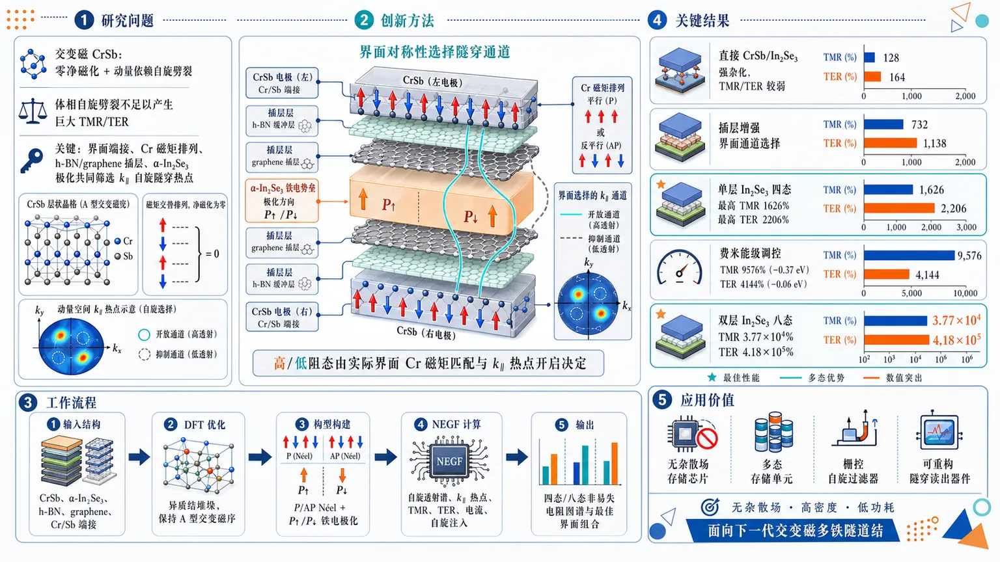
研究问题如何把交变磁 CrSb 的“零净磁化 + 动量依赖自旋劈裂”真正转化为强隧穿电阻开关；核心挑战是：体相自旋劈裂本身不足以产生巨大 TMR/TER，必须弄清 Cr/Sb 原子端接、界面 Cr 磁矩排列、h-BN/graphene 插层和 α-In₂Se₃ 铁电极化如何共同筛选二维动量空间中的自旋隧穿热点通道。创新方法提出“界面对称性选择隧穿通道”的 CrSb/α-In₂Se₃ 交变磁多铁隧道结设计框架：用 CrSb 作为无杂散场交变磁电极，用可翻转 α-In₂Se₃ 作为铁电势垒，并通过 Cr/Sb 对称或非对称端接、h-BN 绝缘缓冲层、graphene 导电插层来调控界面杂化和自旋通道匹配。Aha 点在于：高/低阻态不由名义 P/AP Né尔矢量标签决定，而由两侧界面 Cr 磁矩是否实际平行、以及对应 k∥ 自旋热点是否被打开决定。工作流程输入 CrSb 电极、α-In₂Se₃ 铁电势垒、h-BN/graphene 插层与多种 Cr/Sb 端接结构；先用 DFT 优化 CrSb/α-In₂Se₃ 异质结和插层堆垛，确认 CrSb 保持 A 型反铁磁交变磁序；再构建 P/AP Néel 构型与上下两种铁电极化组合；随后用 NEGF 计算自旋分辨透射谱、k∥ 动量空间透射热点、TMR、TER、有限偏压电流和自旋注入效率；最终输出四态或八态非易失电阻图谱及最佳界面/势垒组合。关键结果直接 CrSb/In₂Se₃ 接触因悬挂键强杂化导致 TMR/TER 较弱；加入 h-BN 或 graphene 后，界面通道选择显著增强。单层 In₂Se₃ 器件实现四个非易失电阻态：Cr-S + 2·h-BN/In₂Se₃ 获得最高 TMR 1626%，Cr-S + h-BN/In₂Se₃/Gr 获得最高 TER 2206%；费米能级偏移后，TMR 提升至 9576%（−0.37 eV），TER 提升至 4144%（−0.06 eV）。双层 In₂Se₃ 通过层间极化耦合扩展为八态电阻，最高 TMR 达 3.77×10⁴%，最高 TER 达 4.18×10⁵%。应用价值为无杂散场、高密度、低功耗自旋电子存储提供理论器件路线：CrSb 交变磁电极避免传统铁磁电极的杂散场和尺寸缩放问题，α-In₂Se₃ 铁电势垒提供非易失电控阻变，界面端接和二维插层提供可工程化调节旋钮，可用于多态存储单元、可栅控自旋过滤器、可重构隧穿读出器件和下一代交变磁多铁隧道结设计。第一部分：核心概览
该研究提出以界面 symmetry selection 为核心的 CrSb/α-In₂Se₃ 交变磁多铁隧道结设计框架，将 CrSb 的零净磁化、动量依赖自旋劈裂与 α-In₂Se₃ 的可翻转铁电势垒耦合，实现无杂散场的多态电阻调控。关键贡献不在于单纯利用 CrSb 体相自旋劈裂，而在于证明 Cr/Sb 端接、h-BN/graphene 插层、界面 Cr 磁矩实际排列共同选择有效隧穿通道。单层 In₂Se₃ 结构实现最高 TMR 1626% / TER 2206%，费米能级偏移后提升至 9576% / 4144%；双层 In₂Se₃ 扩展至八态电阻，最高 TMR 3.77×10⁴% / TER 4.18×10⁵%，处于交变磁多铁隧道结理论设计的高性能前沿。
---
第二部分：结构化快速回顾
《Interface-Engineered Giant Multistate Resistance Switching in Altermagnetic CrSb Multiferroic Tunnel Junctions》（None，）
背景
多铁隧道结 MFTJs 能在同一器件中结合 隧穿磁阻 TMR 与 隧穿电阻 TER，但传统铁磁电极存在杂散场、稳定性和尺寸缩放问题。反铁磁体无净磁化且动力学快，却通常自旋简并，难以产生强自旋选择性隧穿。交变磁体 altermagnets 同时具备零净磁化与动量依赖自旋劈裂，为无杂散场自旋电子器件提供新路线。
方法
采用 第一性原理密度泛函理论 DFT 与 非平衡格林函数 NEGF，构建 CrSb/α-In₂Se₃/CrSb 多铁隧道结。系统考察 Cr-S、Cr-A、Sb-S、Sb-A、Cr-Sb-S、Cr-Sb-A 端接，以及 h-BN、graphene、h-BN/In₂Se₃/Gr、2·h-BN/In₂Se₃ 等插层势垒组合，计算自旋分辨透射、TMR、TER、有限偏压电流和自旋注入效率。
结果
直接 CrSb/In₂Se₃ 接触的 TMR/TER 较弱；插入 h-BN 或 graphene 后显著增强。单层 In₂Se₃ 器件可产生四个非易失电阻态，最佳 TMR 1626% 出现在 Cr-S + 2·h-BN/In₂Se₃，最佳 TER 2206% 出现在 Cr-S + h-BN/In₂Se₃/Gr。能量偏移后，TMR 可达 9576% at −0.37 eV，TER 可达 4144% at −0.06 eV。双层 In₂Se₃ 引入层间极化耦合，扩展至八态电阻，最高 TMR 和 TER 分别达 3.77×10⁴% 与 4.18×10⁵%。
讨论
高/低阻态并非由名义上的 P/AP Néel-vector configuration 决定，而由界面 Cr 磁矩的真实平行或反平行排列决定。对称端接中，P 态对应界面 Cr 磁矩反平行，通常为高阻；AP 态对应界面 Cr 磁矩平行，通常为低阻。非对称端接会反转这一对应关系。铁电极化翻转通过重塑势垒轮廓和动量空间 transmission hot spots 产生 TER。
局限
研究主要基于 DFT+NEGF 理论计算，未包含实验制备、缺陷、温度涨落、界面粗糙、畴结构、真实栅控条件、极化翻转动力学和器件可靠性测试。CrSb 为非范德华金属，实际外延界面可能存在化学反应和结构重构。
结论
界面端接、插层材料、界面磁矩匹配、铁电势垒重构构成 CrSb 交变磁多铁隧道结的核心设计原则。该体系可实现无杂散场、多态、可调、自旋极化隧穿，适合面向非易失存储和低功耗自旋电子器件的理论候选平台。
---
第三部分：逐章节冷凝解析
Abstract
Altermagnetic spin splitting requires interface-selected tunneling channels
交变磁体虽然能在无杂散磁场条件下产生自旋劈裂输运，但体相自旋劈裂不能自动转化为强隧道结响应，必须依赖界面选择的隧穿通道。核心表述为 *"Altermagnets enable spin-split transport without stray magnetic fields, yet converting their momentum-dependent spin splitting into a strong tunnel-junction response requires interface-selected tunneling channels."* 这一定义将问题从“是否存在自旋劈裂”推进到“哪些动量与自旋通道真正参与垂直隧穿”。
DFT plus NEGF establishes CrSb/α-In₂Se₃ as an altermagnetic multiferroic tunnel platform
计算框架为 density functional theory combined with nonequilibrium Green’s function calculations，目标体系为 CrSb/α-In₂Se₃ altermagnetic multiferroic tunnel junctions。关键原句为 *"using density functional theory combined with nonequilibrium Green’s function calculations, we demonstrate giant multistate resistance switching in CrSb/α-In₂Se₃ altermagnetic multiferroic tunnel junctions."* 方法直接面向隧穿输运，而非仅限于能带或静态界面结构。
Interface mechanism dominates over bulk CrSb spin splitting alone
电阻响应由界面终端、插层材料、自旋通道匹配、铁电势垒重构共同决定，而不是由 CrSb 体相自旋劈裂单独决定。原句为 *"The response is governed not by the bulk spin splitting of CrSb alone, but by a symmetry-selected interfacial mechanism in which Cr/Sb terminations and h-BN or graphene insertion layers determine spin-channel matching, while ferroelectric polarization reshapes the electrostatic barrier."* 该机制把 TMR 与 TER 的来源统一到界面选择规则中。
Symmetric and asymmetric terminations invert high- and low-resistance assignment
对称端接与非对称端接会反转 P/AP Néel 矢量构型与高/低阻态之间的对应关系。核心证据为 *"Symmetric and asymmetric terminations reverse the correspondence between parallel/antiparallel Néel-vector configurations and high-/low-resistance states, showing that the actual alignment of interfacial Cr moments selects the dominant tunneling channels."* 因此，真正的开关变量是界面 Cr 磁矩的实际排列，而非名义 P/AP 标签。
Monolayer In₂Se₃ junctions reach four nonvolatile states with giant TMR and TER
单层 In₂Se₃ 势垒结构实现四个非易失电阻态，平衡费米能级下 TMR = 1626%、TER = 2206%，费米能级移动后分别提升至 9576% 和 4144%。原句为 *"Monolayer-In₂Se₃ junctions exhibit four nonvolatile resistance states, with tunneling magnetoresistance (TMR) and tunneling electroresistance (TER) reaching 1626% and 2206%, respectively, and increasing to 9576% and 4144% upon Fermi-level shifting."*
Bilayer In₂Se₃ expands switching to eight states with extremely large TER
双层 In₂Se₃ 引入层间极化耦合，实现八个电阻态，最大 TMR = 3.77×10⁴%，最大 TER = 4.18×10⁵%。原句为 *"Extending the barrier to bilayer In₂Se₃ introduces interlayer polarization coupling, enabling eight resistance states with maximum TMR and TER values of 3.77×10⁴% and 4.18×10⁵%, respectively."* 这表明铁电自由度从二态极化扩展为层间组合极化后，电阻态维度显著增加。
---
1 Introduction
MFTJs combine TMR and TER but conventional ferromagnetic electrodes impose scalability constraints
多铁隧道结 MFTJs由两个磁电极和薄铁电势垒组成，可同时实现 TMR 和 TER。关键背景为 *"multiferroic tunnel junctions (MFTJs), consisting of two magnetic electrodes separated by a thin ferroelectric barrier, are of particular interest because they combine tunneling magnetoresistance (TMR) and tunneling electroresistance (TER) in a single device platform."* 通过独立切换铁电极化和磁构型，MFTJ 理论上可实现多个非易失态：*"By independently switching the ferroelectric polarization and the magnetic configuration of the electrodes, MFTJs can in principle realize multiple nonvolatile resistance states."* 传统问题在于铁磁电极的杂散场和动态响应限制：*"conventional MFTJs usually rely on ferromagnetic electrodes, whose stray fields and relatively limited dynamical response can restrict device stability, scalability, and operation speed."*
Antiferromagnets solve stray-field issues but suppress spin-polarized tunneling
反铁磁体具备补偿磁化和超快自旋动力学，因此避免铁磁杂散场问题，但自旋简并电子结构削弱自旋选择隧穿。原句为 *"Antiferromagnets avoid these drawbacks because of their compensated magnetization and ultrafast spin dynamics, but their spin-degenerate electronic structures generally suppress spin-polarized tunneling and have limited their use in tunnel-junction devices."* 因此核心挑战是 *"to realize strong spin-selective tunneling in a magnetic system that remains free of net magnetization."*
Altermagnets provide zero net magnetization plus momentum-dependent spin splitting
交变磁体具有补偿共线磁序，但相反自旋子晶格通过旋转、镜面、滑移或螺旋对称连接，而非反演或简单平移连接。原句为 *"Although they possess compensated collinear magnetic order, the opposite-spin sublattices are connected by rotation, mirror, glide, or screw symmetries rather than by inversion or simple translation."* 这种对称性导致无净磁化条件下的动量依赖自旋劈裂：*"This symmetry structure produces momentum-dependent spin splitting in the absence of net magnetization, with characteristic d-, g-, or i-wave forms."* 因而交变磁体结合了反铁磁无杂散场和铁磁式自旋选择输运：*"altermagnets combine the stray-field-free character of antiferromagnets with spin-selective transport features usually associated with ferromagnets."*
CrSb is a particularly strong altermagnetic electrode candidate
CrSb 的实验优势包括约 700 K Néel temperature 与 0.93 eV spin splitting。关键句为 *"metallic CrSb is especially attractive for tunnel-junction applications because it combines a high Néel temperature of approximately 700 K with a large experimentally observed spin splitting of 0.93 eV."* 这使其成为天然交变磁 MFTJ 电极：*"These properties make CrSb a natural electrode candidate for altermagnetic MFTJs."*
Interface sensitivity becomes decisive once a ferroelectric barrier is introduced
引入铁电势垒后，电阻不再仅由 Néel 矢量构型、自旋劈裂大小或极化方向决定。关键论断为 *"Once a ferroelectric barrier is introduced, however, the resistance response is no longer determined solely by the Néel-vector configuration, the magnitude of the altermagnetic spin splitting, or the direction of ferroelectric polarization."* 原子尺度的端接、势垒成分和插层几何会改变轨道杂化、局域静电势和自旋分辨隧穿通道：*"the electrode termination, barrier composition, and interfacial insertion geometry can modify orbital hybridization, local electrostatic potential, and spin-resolved tunneling channels."*
The true design problem is symmetry selection of momentum- and spin-resolved channels
垂直隧穿电流由二维布里渊区中特定区域主导，因此界面对动量空间通道的筛选是关键。原句为 *"the spin splitting is strongly momentum dependent and the vertical tunneling current is dominated by selected regions of the two-dimensional Brillouin zone."* 因而问题不是 CrSb 是否能产生大 TMR，而是界面对动量与自旋通道的筛选：*"the key issue is not simply whether CrSb can generate a large TMR, but how the interface symmetry selects the momentum- and spin-resolved channels that convert the bulk altermagnetic spin splitting into a measurable tunnel-junction response."*
h-BN, graphene, and α-In₂Se₃ are used as coupled interface-engineering degrees of freedom
研究对象包括 h-BN、graphene、ferroelectric α-In₂Se₃，用于构造不同势垒和插层结构。关键句为 *"We consider h-BN, graphene, and ferroelectric α-In₂Se₃ as barrier or insertion components and construct a series of junctions with different barrier configurations and CrSb terminations."* 目标机制为 *"a symmetry-selected interface-termination–spin-channel-matching–ferroelectric-barrier-reshaping mechanism for multistate resistance switching."*
---
2 RESULTS AND DISCUSSION
2.1 Structural Models of the Multiferroic Tunnel Junctions
CrSb has NiAs-type P6₃/mmc structure and A-type antiferromagnetic ground state
CrSb 为六方 NiAs-type 结构，空间群 P6₃/mmc；每个 Cr 与六个 Sb 配位，相邻 Cr 层沿 z 方向反平行，形成 A-type antiferromagnetic ground state。原句为 *"Hexagonal CrSb crystallizes in the NiAs-type structure with space group P6₃/mmc"*，以及 *"each Cr atom is coordinated by six Sb atoms, and the magnetic moments of adjacent Cr layers are antiparallel along the z direction, forming an A-type antiferromagnetic (A-AFM) ground state."*
CrSb altermagnetism is protected by spin-group symmetry operations
相反自旋子晶格由 [C₂∥M_c] 或 [C₂∥C₆cτc/2] 关联，其中 C₂ 表示自旋反转，M_c 表示垂直 c 轴镜面，C₆cτc/2 表示绕 c 轴 60° 旋转加半晶胞平移。原句为 *"The two opposite-spin sublattices are related by the spin-group symmetry operations [C₂∥M_c] or [C₂∥C₆cτc/2]"*，并明确 *"C₂ denotes spin reversal, M_c is the mirror operation perpendicular to the c axis, and C₆cτc/2 represents a 60° rotation around the c axis combined with a half-unit-cell translation."*
CrSb exhibits g-wave altermagnetic spin splitting away from protected planes
这些对称操作在特定动量平面保护自旋简并，同时允许平面外动量方向出现自旋劈裂，形成 g-wave altermagnetic spin splitting。关键句为 *"These symmetry operations protect spin degeneracy on specific momentum planes while allowing momentum-dependent spin splitting away from them, giving rise to the characteristic g-wave altermagnetic spin splitting in CrSb."* 具体路径上，Γ-M-K-Γ 位于保护平面，保持自旋简并；L-Γ-L′ 出现显著劈裂：*"the Γ-M-K-Γ path lies within the symmetry-protected planes and therefore remains spin degenerate, whereas pronounced spin splitting appears along the off-plane L-Γ-L′ path."*
CrSb spin splitting mainly originates from exchange interactions rather than SOC
CrSb 的自旋劈裂主要来自交换相互作用，不是自旋轨道耦合。原句为 *"This splitting mainly originates from exchange interactions rather than spin-orbit coupling and provides the spin-selective electronic structure required for altermagnetic tunneling."* 这一点很重要，因为它说明交变磁自旋选择输运不依赖强 SOC 材料。
Monolayer α-In₂Se₃ provides switchable out-of-plane ferroelectric polarization
选择单层 α-In₂Se₃ 作为铁电势垒，是因为其为典型二维铁电体，并具有近室温稳定的面外极化。原句为 *"We use monolayer α-In₂Se₃ as the ferroelectric barrier because it is a prototypical two-dimensional ferroelectric with robust out-of-plane polarization near room temperature."* 单层结构为 Se-In-Se-In-Se 五原子层堆叠：*"The monolayer consists of five atomic layers stacked in the Se-In-Se-In-Se sequence."* 其铁电性主要来自内部 In-Se 键的垂直不对称性：*"its ferroelectricity mainly originates from the vertical asymmetry of the internal In-Se bonds."*
CrSb electrodes preserve A-AFM order in the heterostructure
形成 CrSb/α-In₂Se₃ 异质结构后，CrSb 电极仍保持 A-AFM ground state。验证方式是比较两种极化态下铁磁与 A-AFM 总能。关键句为 *"To verify that the altermagnetic character of the electrodes is preserved after forming the heterostructure, we compared the total energies of ferromagnetic and A-AFM configurations for both polarization states of CrSb/α-In₂Se₃."* 结论为 *"the CrSb electrodes retain the A-AFM ground state in the presence of the ferroelectric barrier."*
Six direct-contact interface configurations isolate termination and symmetry effects
单层 In₂Se₃ 直接接触结构考虑六种界面：Cr-S、Cr-A、Sb-S、Sb-A、Cr-Sb-S、Cr-Sb-A。原句为 *"six representative interface configurations were considered: Cr-S (Cr-symmetric), Cr-A (Cr-asymmetric), Sb-S (Sb-symmetric), Sb-A (Sb-asymmetric), Cr-Sb-S (Cr-Sb-symmetric), and Cr-Sb-A (Cr-Sb-asymmetric)."* 其中 S/A 表示两侧电极/势垒界面关于势垒中心对称或非对称：*"S and A denote whether the two electrode/barrier interfaces are symmetric or asymmetric with respect to the barrier center."*
P/AP Néel vector and two ferroelectric states define the basic multistate space
输运计算中，左 CrSb 电极 Néel 矢量固定，右电极设为 parallel P 或 antiparallel AP；再结合 α-In₂Se₃ 两个铁电极化方向，从而同时计算 TMR 与 TER。原句为 *"the Néel vector of the left CrSb electrode is kept fixed, while that of the right electrode is set either parallel (P) or antiparallel (AP) to the left one."* 以及 *"Together with the two opposite ferroelectric polarization states of α-In₂Se₃, this setup enables both TMR and TER to be evaluated within the same junction platform."*
Nominal P/AP labels do not determine resistance without interfacial Cr-moment alignment
对称端接中，P 构型对应界面 Cr 磁矩反平行，产生高阻；AP 构型对应界面 Cr 磁矩平行，产生低阻。非对称端接反转这一关系。关键句为 *"For symmetric terminations, the P configuration corresponds to antiparallel interfacial Cr moments and therefore gives a high-resistance state, whereas the AP configuration produces parallel interfacial Cr moments and a low-resistance state."* 以及 *"For asymmetric terminations, this correspondence is reversed, so that P becomes the low-resistance configuration and AP becomes the high-resistance configuration."*
Direct CrSb/α-In₂Se₃ contact gives limited TMR and TER
直接接触结构中，铁电极化可调制透射，但 TMR 和 TER 整体较小。原句为 *"although ferroelectric polarization reversal can modulate the interfacial transmission to some extent, both the tunneling magnetoresistance and tunneling electroresistance remain relatively small in these junctions."* 表 1 中，直接 Cr-S 的 TMR 约 48.8% / 48.5%，Cr-A 仅 9.6% / 1.8%，Sb-S 为 4.8% / 31.9%，Sb-A 为 31.32% / 0.56%，明显低于插层结构中的千百分比量级。
Non-van-der-Waals CrSb causes dangling-bond hybridization and weakens switching
CrSb 是非范德华金属晶体，表面悬挂键会强烈杂化铁电势垒电子态，破坏自旋过滤和铁电调控灵敏度。原句为 *"CrSb is a non-van-der-Waals metallic crystal, whose surface dangling bonds may strongly hybridize with the electronic states of the ferroelectric barrier."* 后果为 *"Such direct contact can modify the interfacial wave-function overlap, introduce interface states, and perturb the local electrostatic environment of α-In₂Se₃, thereby weakening the spin-filtering effect and reducing the sensitivity of the tunneling conductance to ferroelectric polarization reversal."*
h-BN and graphene insertion layers tune interfacial coupling
引入 h-BN 与 graphene Gr 作为原子薄插层，用于调节 CrSb 与 α-In₂Se₃ 的直接耦合。原句为 *"To regulate this direct interfacial coupling, we introduce h-BN and graphene (Gr) as atomically thin insertion layers between CrSb and α-In₂Se₃."* 晶格常数分别为 h-BN 2.50 Å、Gr 2.46 Å、monolayer α-In₂Se₃ 4.106 Å、CrSb 4.101 Å：*"The optimized in-plane lattice constants are 2.50 Å for h-BN, 2.46 Å for Gr, 4.106 Å for monolayer α-In₂Se₃, and 4.101 Å for CrSb."* 采用 CrSb 面内晶格常数，h-BN/Gr 的 √3×√3 supercells 匹配 In₂Se₃ 的 1×1 cell。
h-BN acts as inert spacer whereas graphene provides conductive coupling
h-BN 用作电子惰性间隔层，抑制过强界面杂化；graphene 提供更导电的插层，具有不同屏蔽与轨道耦合特征。原句为 *"h-BN serves as an electronically inert spacer to suppress excessive interfacial hybridization, whereas Gr provides a more conductive insertion layer with distinct screening and orbital-coupling characteristics."* 这使界面从弱杂化绝缘间隔层到更强电子耦合状态可调：*"These two insertion layers therefore enable the interfacial coupling to be tuned from a weakly hybridized insulating-spacer regime to a more electronically coupled regime."*
Seven barrier configurations are systematically constructed
七种势垒组合为 h-BN/In₂Se₃、Gr/In₂Se₃、h-BN/In₂Se₃/h-BN、Gr/In₂Se₃/Gr、h-BN/In₂Se₃/Gr、2·h-BN/In₂Se₃、2·Gr/In₂Se₃。原句为 *"we construct seven representative barrier configurations composed of h-BN, Gr, and α-In₂Se₃: (i) h-BN/In₂Se₃, (ii) Gr/In₂Se₃, (iii) h-BN/In₂Se₃/h-BN, (iv) Gr/In₂Se₃/Gr, (v) h-BN/In₂Se₃/Gr, (vi) 2·h-BN/In₂Se₃, and (vii) 2·Gr/In₂Se₃."*
Optimized stacking favors hollow graphene and nitrogen-on-Cr/Sb h-BN configurations
界面堆垛优化显示，Gr 在 Cr/Sb 表面优先采用 Cr/Sb-hollow stacking，h-BN 优先采用 Cr/Sb-N stacking。原句为 *"the energetically preferred configurations are the Cr/Sb-hollow stacking for Gr and the Cr/Sb-N stacking for h-BN."* 这些优化结构用于后续双探针 MFTJ 模型。
---
3 Interface-Controlled TMR and TER at Equilibrium
Equilibrium transport depends sensitively on termination and barrier composition
平衡态 TMR/TER 对 Cr/Sb 端接 和 势垒组成 均高度敏感。原句为 *"the transport response depends sensitively on both the Cr/Sb termination and the barrier composition."* 这证明隧穿电阻不是铁电势垒的单变量函数，而是界面化学、端接对称性和插层材料共同决定。
Cr-terminated interfaces outperform Sb-terminated interfaces for monolayer In₂Se₃
单层 In₂Se₃ 势垒中，Cr-S 与 Cr-A 通常比 Sb-S 与 Sb-A 提供更强阻变。原句为 *"Cr-terminated interfaces (Cr-S and Cr-A) generally show stronger resistance modulation than Sb-terminated interfaces (Sb-S and Sb-A), indicating that interfacial Cr atoms provide more favorable spin-channel matching for altermagnetic tunneling."* 这将高性能归因于界面 Cr 原子对交变磁自旋通道的更好匹配。
Cr-S interface reaches maximum TMR 1626% and TER 2206% in different barrier designs
Cr-S 端接下，最大 TMR = 1626% 出现在 2·h-BN/In₂Se₃ 势垒；最大 TER = 2206% 出现在 h-BN/In₂Se₃/Gr 非对称势垒。关键句为 *"For the Cr-S interface, the maximum TMR reaches 1626% in the 2·h-BN/In₂Se₃ barrier, while the maximum TER reaches 2206% in the asymmetric h-BN/In₂Se₃/Gr barrier."* 表 2 中，2·h-BN/In₂Se₃ 在 P_FE→ 下 P 态总透射 4.97×10⁻⁵、AP 态总透射 8.58×10⁻⁴，对应 TMR 1626%；h-BN/In₂Se₃/Gr 在 P 态中 P_FE→ Tₜₒₜ = 2.11×10⁻³、P_FE← Tₜₒₜ = 9.15×10⁻⁵，对应 TER 2206%。
Cr-A remains strong but weaker than optimized Cr-S
Cr-A 端接的最佳 TMR = 575%、最佳 TER = 1992%。原句为 *"For the Cr-A interface, the optimal TMR and TER are 575% and 1992%, respectively."* 这说明非对称 Cr 端接仍能产生大幅阻变，但其最佳 TMR 低于 Cr-S 的 1626%。
Sb-terminated interfaces remain below 500% modulation
Sb 端接结构阻变较弱，最大 TMR 和 TER 均低于 500%。原句为 *"In contrast, Sb-terminated interfaces show weaker modulation, with maximum TMR and TER values below 500%."* 这与 Sb 端接对自旋通道匹配较差一致。
PDOS confirms true tunneling regime and spin-channel continuity control
实空间自旋分辨 PDOS 显示，费米能级处势垒区谱重显著抑制，确认输运处于隧穿机制。原句为 *"the spectral weight at the Fermi level is strongly suppressed inside the barrier region, confirming that transport occurs in the tunneling regime."* 更重要的是，界面磁排列决定哪个自旋通道保持跨势垒谱连续性：*"the interfacial magnetic arrangement determines which spin channel maintains better spectral continuity across the junction."*
Symmetric interfaces produce high resistance in P and low resistance in AP
对称界面 Cr-S/Sb-S 中，P Néel 对齐对应界面 Cr 磁矩反铁磁排列，抑制费米能级隧穿，产生高阻；AP 使界面 Cr 磁矩铁磁排列，增强主导自旋通道谱连续性，产生低阻。原句为 *"For the symmetric interfaces (Cr-S and Sb-S), the P alignment of the electrode Néel vectors corresponds to an antiferromagnetic arrangement of the interfacial Cr moments, which suppresses tunneling at the Fermi level and produces a high-resistance state."* 以及 *"the AP configuration, the interfacial Cr moments become ferromagnetically aligned, leading to stronger spectral continuity across the barrier for the dominant spin channel and hence a low-resistance state."*
Asymmetric interfaces reverse the P/AP conductance correspondence
非对称界面 Cr-A/Sb-A 中，P/AP 与界面 Cr 磁矩排列的关系被反转，高/低导通态互换。原句为 *"For the asymmetric interfaces (Cr-A and Sb-A), the correspondence between the P/AP alignment and the interfacial Cr-moment arrangement is reversed, and the high- and low-conductance states are accordingly interchanged."* 因此 TMR 的物理控制量是界面磁矩匹配：*"the TMR is not determined simply by the nominal P or AP label, but by the actual magnetic alignment of the interfacial Cr moments and its matching with the spin-dependent tunneling channels."*
k∥-resolved transmission reveals hot-spot selection in the 2D Brillouin zone
二维布里渊区的 k∥-resolved transmission 直接显示 momentum-space hot spots。原句为 *"This picture is further supported by the k∥-resolved transmission at the Fermi level in the two-dimensional Brillouin zone."* 对称界面中，低阻态 transmission hot spots 主要集中在 spin-down channel，高阻态则被强烈抑制：*"For the symmetric interfaces (Cr-S and Sb-S), transmission hot spots are concentrated mainly in the spin-down channel of the low-resistance configuration, whereas they are strongly suppressed in the corresponding high-resistance state."* 这同时说明强 TMR 和自旋过滤效应：*"This behavior indicates not only a large TMR but also a pronounced spin-filtering effect."*
Ferroelectric polarization reshapes momentum-space tunneling channels
铁电极化翻转显著重分布动量空间透射权重，不只是整体抬高或降低电阻。原句为 *"reversing the ferroelectric polarization of α-In₂Se₃ significantly redistributes the transmission weight in momentum space."* 更强结论为 *"the ferroelectric barrier does not merely shift the overall resistance, but actively reshapes the available tunneling channels."* 因此 TER 的微观来源是势垒轮廓与通道选择的重构。
Energy-dependent spectra allow stronger TMR and TER away from EF
在 E − E_F = −0.5 to +0.5 eV 范围内，透射、TMR 和 TER 强烈依赖能量。原句为 *"both the transmission and the resulting TMR/TER ratios exhibit strong energy dependence."* Cr-S 的 TMR 在 −0.37 eV 达 9576%：*"For the Cr-S interface, the TMR reaches 9576% at −0.37 eV."* Cr-A 的 TER 在 −0.06 eV 达 4144%：*"for the Cr-A interface the TER increases to 4144% at −0.06 eV."*
Gating, doping, and finite bias can tune the effective transport window
巨大 TMR/TER 不局限于平衡费米能级，可通过栅控、掺杂或有限偏压移动有效输运窗口进一步调节。原句为 *"the giant TMR and TER are not restricted to a single equilibrium energy point, but can be further modulated when the effective transport window is shifted, for example by electrostatic gating, carrier doping, or finite-bias operation."* 这为器件级可调性提供额外自由度。
---
3.1 Spin-Polarized Transport under Nonequilibrium Conditions
Finite-bias calculations test nonequilibrium robustness from −0.5 to 0.5 V
有限偏压范围为 −0.5 V to 0.5 V，计算量包括自旋分辨电流、TMR、TER 和 spin-injection efficiency SIE。原句为 *"we calculate the bias-dependent spin-resolved current, TMR, TER, and spin-injection efficiency (SIE) in the range from −0.5 to 0.5 V."* 主体讨论集中于 CrSb/2·h-BN/In₂Se₃/CrSb，因为其在单层 In₂Se₃ 结构中具有最大平衡 TMR：*"the CrSb/2·h-BN/In₂Se₃/CrSb junction, which exhibits the largest equilibrium TMR among the monolayer-In₂Se₃-based structures."*
Current generally increases with bias but remains interface- and state-dependent
多数磁性/铁电态中，总电流随偏压增大而增加，符合偏压输运窗口拓宽。原句为 *"the magnitude of the total current increases with increasing bias for most magnetic and ferroelectric states, consistent with the widening of the bias-induced transport window."* 但电流仍强烈依赖端接、Néel 矢量和铁电极化：*"the current remains strongly dependent on interface termination, Néel-vector alignment, and ferroelectric polarization."*
Spin-selective tunneling persists under finite bias
有限偏压下，多数构型中自旋分辨电流仍明显不对称，说明自旋选择隧穿没有被非平衡条件破坏。原句为 *"The spin-resolved currents show clear spin asymmetry in most configurations, indicating that spin-selective tunneling persists under finite bias."* Cr-S 界面尤其明显：*"This spin asymmetry is especially pronounced for the Cr-S interface, where one spin channel dominates the total current over a broad bias range."*
Bias-polarity asymmetry reflects polar barrier and asymmetric interfacial electrostatics
I–V 曲线表现出偏压极性不对称，尤其在极化反转态中更明显。原句为 *"The I–V curves also exhibit bias-polarity asymmetry, particularly for polarization-reversed states."* 物理来源是极性铁电势垒与不对称界面静电势共同作用：*"reflecting the combined effect of the polar ferroelectric barrier and the asymmetric interfacial electrostatic potential."*
TMR and TER are nonmonotonic under bias
TMR 与 TER 随偏压呈明显非单调变化，而不是简单随电流增大。原句为 *"Unlike the total current, the TMR and TER show pronounced nonmonotonic bias dependence."* 原因是偏压窗口与自旋/极化依赖透射通道的重叠随电压变化：*"the resistance ratios are controlled by the overlap between the bias window and the spin- or polarization-dependent transmission channels."*
Cr-S retains large near-equilibrium TMR under finite bias
Cr-S 界面在近平衡条件下保留大 TMR，P→ polarization state 下约 1626%。原句为 *"For the Cr-S interface, a large TMR is retained near equilibrium, reaching about 1626% for the P→ polarization state."* 这与表 2 中 2·h-BN/In₂Se₃ 的平衡 TMR 一致。
Optimal interfaces for TMR and TER differ under finite bias
有限偏压下，TER 可在特定端接中于宽偏压范围保持数百百分比，尤其 Sb-S 和 Sb-A；但最大 TMR 对应的最优端接未必相同。原句为 *"The TER response shows a stronger dependence on polarization-induced barrier asymmetry and can remain several hundred percent over a broad bias range for selected terminations, particularly Sb-S and Sb-A."* 关键结论为 *"the optimal interface for TMR and TER need not be the same under finite bias."*
---
第四部分：深度理解与语言支持
1. 术语解析
#### Altermagnetism
Altermagnetism 指一类特殊共线补偿磁序：宏观净磁化为零，但由于相反自旋子晶格不是由反演或简单平移连接，而是由旋转、镜面、滑移、螺旋等对称操作连接，能带可出现动量依赖自旋劈裂。它不同于普通反铁磁，因为普通反铁磁常有自旋简并；也不同于铁磁，因为它没有净磁化和杂散场。文中语境强调其器件价值：既有 stray-field-free character，又有 spin-selective transport features。
#### Interface-selected tunneling channels
Interface-selected tunneling channels 指垂直隧穿时，并非所有体相能带态都等价贡献电流；界面原子排列、轨道对称性、局域势场和插层材料会筛选特定 k∥、特定自旋、特定轨道成分的态通过势垒。该表达的微妙点在于：大体相自旋劈裂并不保证大 TMR，只有当界面允许相应自旋通道有效耦合时，体相交变磁性才会转化为可测隧穿响应。
#### Spin-channel matching
Spin-channel matching 指左右电极/界面处相同或兼容的自旋、动量和轨道通道能够连续耦合，从而形成高透射；若界面 Cr 磁矩排列导致主导自旋通道不匹配，则透射被压低。文中最重要的细节是：P/AP Néel 标签本身不决定匹配，真正决定因素是两侧界面 Cr 磁矩是否平行。
#### Ferroelectric barrier reconstruction
Ferroelectric barrier reconstruction 不是指晶格完全重构，而是铁电极化翻转改变势垒的静电势轮廓、带边排列、界面电荷分布和动量空间透射热点。它比简单的 “barrier height change” 更宽泛，包含空间非对称势垒和可用隧穿通道的重新分配。
#### Spin-injection efficiency
Spin-injection efficiency, SIE 衡量输出电流的自旋极化程度，通常与 (Iₚ̆arrow) 和 (I_downarrow) 的差异有关。文中 SIE 用于判断有限偏压下器件是否仍能输出自旋极化电流。它不同于 TMR：TMR 比较不同磁构型的电阻差异，SIE 描述某一状态下电流自身的自旋不平衡。
---
2. 疑难查证
#### 为什么 P 态有时是高阻，有时是低阻？
P/AP 描述的是左右电极 Néel vector 的相对方向，不直接等于两个实际界面处 Cr 磁矩的相对方向。由于 CrSb 是层状 A 型反铁磁，且界面可能是对称或非对称端接，最靠近势垒的 Cr 层可能属于不同自旋子晶格。
- 对称端接：左右界面切到等价层。名义 P 态下，两个界面 Cr 磁矩反平行 → 自旋通道不匹配 → 高阻；AP 态下界面 Cr 磁矩平行 → 通道匹配 → 低阻。
- 非对称端接：左右界面切到非等价层。名义 P 态下反而可能使界面 Cr 磁矩平行 → 低阻；AP 态则反转为高阻。
因此，TMR 的微观判据不是“P 还是 AP”，而是“界面主导 Cr 磁矩是否使同一自旋-动量-轨道通道连续”。
#### 为什么直接 CrSb/In₂Se₃ 接触反而性能不好？
直觉上，金属电极与铁电势垒直接接触似乎有利于电子耦合，但隧穿器件中“耦合太强”会破坏选择性。CrSb 是非范德华金属，表面有悬挂键，容易与 In₂Se₃ 产生强杂化。这会带来三种后果：
- 界面态增加：势垒内出现非理想态，削弱纯隧穿选择性。
- 波函数重叠混乱：原本由交变磁对称性筛选的自旋通道被混合。
- 铁电势垒被屏蔽/扰动：极化翻转对势垒高度和形状的影响变弱。
h-BN 插层像“绝缘缓冲垫”，削弱杂化；graphene 像“可导电调谐层”，提供不同屏蔽和轨道耦合。二者都能重新塑造界面选择规则。
#### 为什么动量空间 hot spots 如此关键？
垂直隧穿中，平行动量 (kₚₐᵣₐₗₗₑₗ₎ 在理想晶体界面近似守恒。交变磁自旋劈裂又强烈依赖动量方向，所以并不是整个费米面都贡献同等电流，而是二维布里渊区中的少数 hot spots 控制总透射。当铁电极化翻转或端接改变时，这些 hot spots 的位置、强度和自旋属性都会变化。TMR 与 TER 的巨大数值本质上来自某些状态下 hot spots 被打开，而另一些状态下被关闭。
#### 为什么费米能级偏移会显著提高 TMR/TER？
TMR/TER 是不同状态透射比值。若某一能量处低阻态存在强透射峰，而高阻态接近透射谷，则比值会极大。平衡费米能级未必正好落在最佳峰谷对比位置。通过栅压、掺杂或偏压移动有效输运窗口，可让电子主要通过更有利的能量区间。例如 Cr-S 在 −0.37 eV 出现 9576% TMR，Cr-A 在 −0.06 eV 出现 4144% TER，说明界面态和势垒态的能谱结构中存在更强的选择性窗口。
---
第五部分：创新评估与关联
1. 创新性判断
#### From bulk altermagnetic TMR to interface-selected altermagnetic MFTJ design
近年交变磁隧道结研究主要强调 Néel 矢量切换导致的自旋劈裂差异，或强调交变磁电极可在无净磁化下产生 TMR。该研究进一步指出：体相交变磁自旋劈裂只是必要条件，不是充分条件。真正决定巨大响应的是界面 symmetry 如何选择动量-自旋通道。这解决了前人工作中常见的一个缺口：缺乏从体相交变磁能带到实际隧穿通道的微观转换机制。
#### Combining altermagnetism with ferroelectric TER in one multistate platform
过去 2–5 年中，交变磁研究集中在 anomalous Hall effect、spin-split torque、spin current、TMR 等；多铁隧道结研究则多依赖铁磁或传统反铁磁电极。该研究把 CrSb altermagnetism 与 α-In₂Se₃ ferroelectricity 结合，在同一器件内实现 TMR + TER + multistate resistance，并保持零净磁化。这比单一交变磁 TMR 器件多出铁电非易失调控维度。
#### Termination-induced inversion of P/AP resistance hierarchy is a concrete microscopic novelty
对称/非对称端接导致 P/AP 高低阻对应关系反转，是非常明确的界面物理创新点。它说明器件状态不能用宏观磁构型标签简单预测，而必须追踪原子层端接与界面 Cr 磁矩实际排列。这对交变磁器件尤其重要，因为交变磁自旋劈裂具有动量选择性，界面对 (kₚₐᵣₐₗₗₑₗ₎ 通道的选择会放大端接差异。
#### h-BN and graphene insertion layers provide chemically realistic interface-engineering knobs
直接 CrSb/In₂Se₃ 接触性能有限，插入 h-BN 或 graphene 后性能显著提升。该设计不是单纯增加势垒厚度，而是调控界面杂化强度、屏蔽、轨道耦合和自旋通道匹配。最佳结果显示不同插层服务于不同目标：2·h-BN/In₂Se₃ 优化 TMR，h-BN/In₂Se₃/Gr 优化 TER。这种材料级分工增强了可设计性。
#### Bilayer In₂Se₃ introduces interlayer polarization coupling and eight-state resistance
双层 In₂Se₃ 将铁电自由度从单层二态扩展为层间极化组合，产生八个非易失电阻态，并使 TER 达到 4.18×10⁵%。这一点超越传统四态 MFTJ 框架，为高密度多态存储提供理论路线。
#### Performance metrics are competitive for theoretical spintronic tunnel devices
单层结构的 1626% TMR / 2206% TER 已达到高性能理论 MFTJ 水平；能量调控后的 9576% TMR / 4144% TER 表明栅控或掺杂有进一步优化空间；双层结构的 3.77×10⁴% TMR / 4.18×10⁵% TER 则显示出极强的多态读出窗口。核心优势在于这些高阻变建立在 zero net magnetization / stray-field-free 平台上，区别于传统铁磁 MFTJ。
-
02
📊 含图深析
📄 摘要：研究自旋轨道耦合纳米线与d波altermagnet的近邻超导，发现零净磁矩条件下也可通过一阶相变进入拓扑FFLO态。该转变伴随超导二极管效应的符号突变，源于能带分辨的竞争配对通道与双谷自由能景观。
💡 亮点：无净磁矩的altermagnet也能驱动拓扑FFLO。一阶转变直接对应超导二极管符号翻转。
📖 展开分析 + 配图
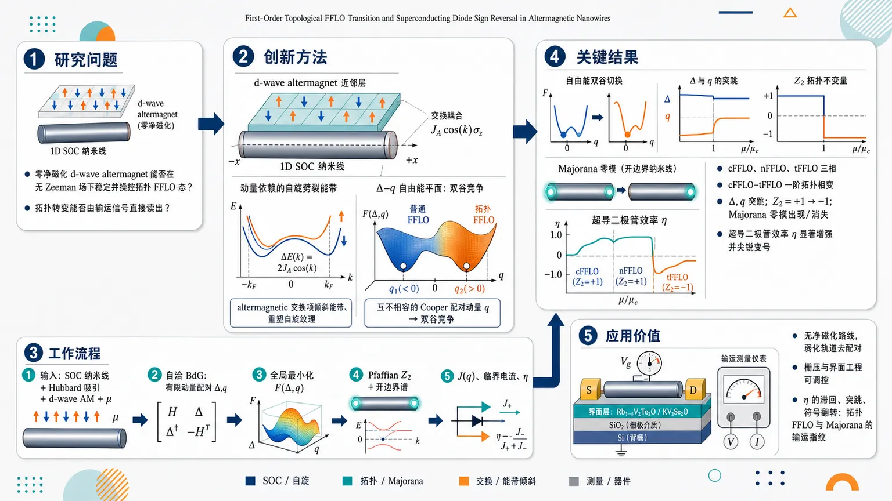
研究问题在没有外加 Zeeman 场、没有净磁化的条件下，零净磁化的 d-wave altermagnet 是否能通过动量依赖自旋劈裂，在一维自旋轨道耦合纳米线中稳定并操控拓扑 FFLO 态；其拓扑转变能否被一个清晰的输运信号直接读出。创新方法将 1D SOC 纳米线与 d-wave altermagnet 近邻耦合，利用 altermagnetic 交换项 J_A cos(k)σ_z 倾斜能带、重塑自旋纹理，使不同自旋分裂能带偏好互不相容的 Cooper 配对动量 q；由此在 Δ–q 自由能平面形成两个竞争谷底，基态在普通 FFLO 与拓扑 FFLO 之间一阶跳变，并同步触发超导二极管效率 η 的符号翻转。工作流程输入强 SOC 一维纳米线、吸引 Hubbard 相互作用、d-wave altermagnet 近邻交换场和可调化学势 μ；构建有限动量配对的自洽 BdG 哈密顿量；在 Δ 与 q 空间全局最小化零温自由能，识别 cFFLO、nFFLO、tFFLO 三类相；用 Pfaffian Z₂ 判据和开边界谱确认拓扑相及 Majorana 零模；沿最优 Δ(q) 轨迹计算超流 J(q) 与正反向临界电流，得到二极管效率 η。关键结果发现 cFFLO、nFFLO、tFFLO 三相，其中 cFFLO–tFFLO 是一阶拓扑相变：临界 J_A 附近 Δ 与 q 同时突跳，自由能双谷发生全局最低谷切换，拓扑数由 Z₂=+1 变为 Z₂=-1，并出现或消失 Majorana 零模；相变处超导二极管效率 η 被显著增强并尖锐变号，有限温下最大 |η| 沿 cFFLO–tFFLO 边界集中。应用价值提供一种无净磁化、弱化轨道去配对问题的拓扑 FFLO 实现路线，可在 InAs 或 InSb 强 SOC 纳米线与 Rb1−δV2Te2O、KV2Se2O 等 altermagnet 近邻器件中通过栅压和界面工程调控；η 的滞回、突跳和符号翻转可作为比直接测量拓扑不变量更易获得的输运指纹，用于识别拓扑 FFLO 与 Majorana 相关物理。第一部分：核心概览
这篇工作提出一种零净磁化条件下实现拓扑 FFLO的新机制：1D 自旋轨道耦合纳米线在 d-wave altermagnet 近邻作用下，因带分辨竞争配对通道形成“双谷”自由能景观，发生一阶拓扑相变。相变伴随 Cooper 配对动量 q 与 配对幅度 Δ 的同步跳变，并在输运上表现为超导二极管效率 η 的尖锐翻转。相较近年依赖 Zeeman 场或有限磁化的拓扑 FFLO 方案，这里给出一条更“无场”的、可由Pfaffian Z₂ 与 Majorana 零模直接验证的路线。
---
第二部分：结构化快速回顾
《First-Order Topological FFLO Transition and Superconducting Diode Sign Reversal in Altermagnetic Nanowires》（None，）
背景：FFLO 态通常由有限磁化诱导；拓扑 FFLO 过去多依赖 Zeeman 场。altermagnet 具有零净磁化但动量依赖自旋劈裂，提供了新的配对调控机制。
方法：建立 1D SOC 纳米线 + 吸引 Hubbard 相互作用 + d-wave altermagnet 近邻的自洽 BdG 模型，并用 Pfaffian Z₂ 判定拓扑。
结果：得到 cFFLO / nFFLO / tFFLO 三相；其中 cFFLO–tFFLO 转变为一阶，伴随 Δ、q 跳变、自由能双谷切换、Majorana 零模出现/消失，以及 η 的符号翻转。
讨论：一阶拓扑转变来源于不同能带偏好的配对动量不相容，形成双谷自由能；GL 理论可解析复现数值结果。
局限：主要是1D 自洽平均场与近邻诱导模型；未显式纳入无序、有限尺寸和外磁场轨道效应。
结论：altermagnetism 给出一条无净磁化、可门控的拓扑 FFLO 与二极管效应平台，并提供清晰的输运指纹。
---
第三部分：逐章节冷凝解析
Introduction
- FFLO 的经典驱动力是有限磁化
FFLO 的基本图景是自旋不平衡迫使库珀对携带有限质心动量。原文直接定义为 *"the spin imbalance from finite magnetization forces spin-singlet Cooper pairs to condense at finite center-of-mass momentum"*。这一定义对应的物理后果是空间调制序参量，而不是均匀 s-wave 超导。
- Altermagnet 提供“零净磁化但仍能劈裂能带”的新磁背景
关键属性被概括为 *"a distinct class of collinear compensated magnetic order characterized by highly anisotropic, momentum-dependent spin-split bands"*，并且 *"with vanishing net magnetization"*。这意味着磁性效应存在，但宏观磁矩抵消；对超导的影响来自动量依赖交换场，而不是整体 Zeeman 偏置。
- 拓扑 FFLO 与 Majorana/二极管输运在概念上已相连，但缺少无场实现
文中明确指出拓扑 FFLO *"are predicted to host Majorana bound states and exhibit nonreciprocal superconducting transport signatures"*。这把拓扑零模与非互易超流并列为同一类体系的核心可观测结果。
- 现有拓扑 FFLO 方案仍依赖有限磁化或外加 Zeeman 场
核心缺口被概括为 *"existing proposals for topological FFLO states typically rely on finite magnetization or external Zeeman fields"*。这正是 altermagnet 的切入点：用零净磁化的交换场替代外磁场。
- 问题本身是：altermagnet 能否稳定并操控拓扑 FFLO
直接的研究问题是 *"whether altermagnetism—with zero net magnetization and momentum-dependent exchange field—can stabilize and control topological FFLO states remains largely unexplored"*。这也是整篇工作的出发点。
- 图 1 给出整体机制：一阶拓扑相变 + 二极管符号翻转
图注和正文共同强调：altermagnetic field 会 *"tilts energy bands"*、*"reshape their spin texture"*，并产生 *"band-resolved competing pairing channels"*。结果是自由能出现 *"a double-valley free energy landscape"*，相变时 *"the global minimum switches discontinuously"*，同时 *"the superconducting diode coefficient η is strongly enhanced and reverses sign across the transition"*。
- 零净磁化使该方案区别于常规磁场驱动 FFLO
讨论段强调 *"the topological FFLO state emerges at zero net magnetization"*，并且 *"circumventing the orbital depairing that limits conventional Zeeman-driven FFLO"*. 这把该路线与外磁场实验中的轨道去配对问题明确区分开。
- 总结性目标是给出拓扑 FFLO 的直接输运指纹
研究目标被概括为 *"provide a field-free altermagnetic route to topological FFLO states and identify their direct transport fingerprint"*。这里的“direct transport fingerprint”就是 η 的尖锐翻转。
---
Model and method
- 模型是 1D SOC 纳米线 + 吸引 Hubbard 相互作用 + d-wave altermagnet 近邻
正常态哈密顿量为
*"H(k)=ξ(k)+α_ysin k,σ_y+(α_zsin k+J_Ao̧s k)σ_z"*。
其中 *"ξ(k)=t cos k"*，*α_y* 是 Rashba 型自旋翻转 SOC，*α_z* 是 Dresselhaus 型自旋守恒 SOC，*J_A* 是近邻诱导的 altermagnetic exchange strength。
- altermagnetic 项的本质是动量依赖自旋劈裂
关键项 *"J_A cos k σ_z"* 被明确指出会 *"generate momentum-dependent spin splitting"*，并同时 *"breaks time-reversal symmetry and mirror symmetry Mₓ"*。镜像操作写成 *"k→−k, σ→(σₓ,−σ_y,−σ_z)"*。
- 有限 J_A 使能带从镜像对称变成倾斜、不对称、带偏移的结构
J_A=0 时是 *"mirror-symmetric Rashba-only bands"*；J_A≠0 后则出现 *"asymmetric, momentum-tilted and spin-split dispersion"*，而且 *"energy gaps shifted away from high-symmetry points"*。这直接改变费米点位置与自旋纹理，从而改变最优 FFLO 动量 q。
- 吸引 Hubbard 相互作用被投影到统一 q 的 FFLO 通道
相互作用写为
*"H_I = - U/N_c sum c^dagger c^dagger c c"*，并在 FFLO 通道平均场分解后定义
*"hatΔ(q)=fracUN_csumₖ c₋ₖ₊q/₂,dₒwₙₐᵣᵣₒwcₖ₊q/₂,ₚ̆ₐᵣᵣₒw"*。
这意味着 pairing 被限定为单一中心质心动量 q 的均匀 FFLO 态。
- BdG 哈密顿量在 Nambu 基底中显式构造
Nambu 自旋量子态取
*"Ψₖ₌{cₖ₊q/₂,ₚ̆ₐᵣᵣₒw,cₖ₊q/₂,dₒwₙₐᵣᵣₒw,c₋ₖ₊q/₂,ₚ̆ₐᵣᵣₒw^dagger,c₋ₖ₊q/₂,dₒwₙₐᵣᵣₒw^dagger}"*，
对应的 BdG 形式为
*"H(k)=beginpmatrixH(k+q/2)-μ&-iσ_yΔ(q) iσ_yΔ^*(q)&-H^*(-k+q/2)+μendpmatrix"*。
这一步将有限动量配对和自旋轨道耦合统一进同一谱结构。
- 零温自由能通过准粒子谱直接计算
自由能密度写成
*"F(Δ,q)=frac12N_csumₖ,ζ,łₐₘbdₐEₖqζłambdaΘ(-Eₖqζłambda)+fracΔ²U-μ"*。
真正的平衡态由 *"minimizing Ω(Δ,q)=F(Δ,q)-F(0,q)"* 得到，即对 (Δ,q) 做全局最小化而不是仅找鞍点。
- 体系属于 class D，拓扑由 Pfaffian Z₂ 判据决定
哈密顿量满足 *"particle-hole symmetry PH^*(k)P⁻¹=-H(-k)"*，其中 *"P=τₓ"*，因此属于 Altland–Zirnbauer class D。
当谱全开隙时，用 *"Pfaffian of the Hamiltonian in the Majorana basis evaluated at k=0,π"* 判定 Z₂ 拓扑。
- Pfaffian 判据明确依赖 μ、q、Δ、J_A、α_y、α_z、t
公式给出
*"Pf[H'(0/π)] = [μ ± to̧s(q/2)]² + Δ² - α_y²sin²⁽q/2) - [J_Ao̧s(q/2)+α_zsin(q/2)]²"*。
这里的符号结构直接决定拓扑不变量变号的条件。
- 数值默认参数已经固定到一个可复现实例
图 2 默认取 *"μ=0.55t"*, *"α_y=α_z=0.6t"*, *"U=1.5t"*。这组参数成为后续相图和谱图的基准。
- 相图显示三相：cFFLO、nFFLO、tFFLO
在 *(U,J_A)* 平面中，颜色代表 *"superconducting mini-gap"*，并区分 *"blue: nodal FFLO; red: gapped FFLO"*。
三个相分别为：cFFLO（传统、开隙、Z₂=+1）、nFFLO（节点型、Bogoliubov Fermi surfaces）、tFFLO（拓扑、开隙、Z₂=−1）。
- 边界类型已经分化：两条一阶，一条二阶
图注标明 *"Black and blue dashed lines mark first-order boundaries between cFFLO–nFFLO and cFFLO–tFFLO"*, 而 *"the solid red line marks the (continuous) transition between nFFLO and tFFLO"*。这为后文的一阶拓扑转变提供相图基础。
---
First-order topological FFLO transition
- 相图中的三相边界具有不同的临界性质
这里再次确认：cFFLO–nFFLO 与 cFFLO–tFFLO 都是一阶边界，而 nFFLO–tFFLO 是连续二阶边界。这意味着拓扑变化并不总是与一阶相变绑定，关键在于自由能形状。
- 一阶边界上的关键控制参数是 J_A
固定 *"U=1.6t"* 沿着参数切线变化时，*J_A* 被扫描。数值上，临界点是 *"J_c≈0.596t"*。在该点，*Δ* 与 *q* 同时发生不连续跳变。
- Δ 与 q 的同步跳变是相变的直接判据
图 2(c) 显示 *"both the optimal order parameter Δ and pairing finite momentum q jump discontinuously"*。这是典型的一阶行为，不是渐进式连续调节。
- 能隙闭合没有稳定的带接触点
文中强调 *"the bulk gap collapses without a stable band-touching point in the low-energy spectrum"*。这与常规拓扑相变的“某个动量点连续闭合—重开”不同，更像是两个局域极小值之间的级联切换。
- 拓扑数变化通过“固定动量处的能级交叉”实现
关键机制是 *"a level crossing between competing gapped minima at a fixed momentum"*。因此拓扑改变不是在同一分支上平滑穿越，而是两个不同 FFLO 凝聚态之间直接交换基态身份。
- 一阶转变天然允许滞后与输运尖峰
该机制 *"permits hysteretic behavior and sharp transport signatures near the transition"*。这也是后续 η 尖锐翻转的物理基础。
- 开边界谱给出 Majorana 零模
图 2(e) 中，进入 tFFLO 后出现 *"Majorana zero modes (MZMs)"*，而在 cFFLO 中没有。图注还指出这些 *"appear or disappear when the ground state switches between cFFLO and tFFLO"*。
这与 Pfaffian 结果 *"in full agreement with the Pfaffian criterion"* 一致。
- 自由能景观直接证明两个极小值竞争
图 3(a,b) 给出 *"two minima — cFFLO ... and tFFLO ... — separated by a saddle point"*。白点标出全局与局部极小值，白线是最优 Δ(q) 轨迹。
这意味着一阶转变不是数值噪声，而是能量地形上的双谷交换。
- 转变点附近出现层级交叉（level crossing）
图 3(e) 显示 *"The clear level crossing marks the discontinuous ground-state switch"*。
这一点把相变的“热力学一阶性”与“谱结构的两个竞争凝聚态”直接连接起来。
- 小 J_A 与大 J_A 分别偏好不同的配对机制
小 *J_A* 下，*"μ intersects two spin-split bands"*，每条带都给出自己的 *"(Δ,q)"* 偏好，形成竞争通道并稳定 cFFLO。
大 *J_A* 下，*"μ can intersect effectively only one single helical band within a gap window"*，更容易形成完全开隙的 tFFLO。
- 化学势也是等价控制旋钮
文中明确指出 *"the chemical potential — which can be easily tuned by a gate voltage — similarly serves as a control parameter"*。
这意味着相变不只可通过 J_A 调控，也可通过栅压实现。
---
Sign-reversing superconducting diode effect
- 二极管效应由非互易临界电流定义
非互易超流由电流–相位关系
*"J(q)=2∂Ω/∂q"*
给出。
二极管效率定义为
*"η=(|I_c⁺|-|I_c⁻|)/(|I_c⁺|+|I_c⁻|)"*。
因此 η 的符号直接对应正负方向临界电流的偏置方向。
- 最优 Δ(q) 轨迹上的 J(q) 在相变处突然翻转
沿 *"the optimal trajectory Δₒₚₜ₍q)"* 计算后，*"the supercurrent profile undergoes an abrupt reversal coinciding with the shift of the global minimum"*。
也就是说，电流反转不是附带效应，而是自由能最低谷切换的直接外显。
- η 的巨大幅值来自双谷近简并
机制被概括为 *"two nearly degenerate free-energy minima are associated with distinct values of finite momentum q and qualitatively different current distributions"*。
近简并使临界电流对参数扰动极端敏感，因此 *"|η|"* 被显著放大。
- η 的符号翻转与一阶相变同步出现
结论非常明确：*“clear sign reversal of η across the transition”*。
图 3(f) 正是用 η(J_A) 证明：当基态从 cFFLO 切换到 tFFLO 时，η 既变号又突变。
- 输运读出比拓扑数本身更容易实验访问
二极管效率被定位为 *"an experimentally accessible probe of the underlying first-order topological FFLO transition"*。
这在实验上比直接测 Pfaffian 或 Majorana 更容易，属于强信号读出。
---
Ginzburg-Landau theory description
- GL 自由能包含到六次项以容纳双谷与势垒
采用的形式是
*"Ω(q,Δ)=α(q)Δ²⁺β(q)Δ⁴⁺γ(q)Δ⁶"*。
其中 *"β(q)<0 and γ(q)>0 ensure thermodynamic stability and the existence of a barrier between competing superconducting states"*。
六次项不是装饰，而是保证一阶转变所需的势垒。
- 驻点方程给出两个非平凡配对分支
解 *"∂Ω/∂Δ=0"* 得到
*"Δ_±² = (-β ± sqrtβ²⁻³αγ)/3γ"*。
这说明相空间里确实存在两条不同的配对谷底，对应两个不同 FFLO 态。
- 两条自由能分支可写成 Ω±(q)，并在数值上近似为二次函数
代回后得到两个分支 *"Ω_±(q)"*，再进一步近似为
*"Ω_± = f±₀+f±₁q+f±₂q²"*。
图 3(c,d) 的虚线就是这个拟合，说明 GL 与 BdG 数值高度一致。
- 一阶转变由两个谷底的极值能量交叉触发
关键是 *"Ω₊ex=Ω₋ex"* 的近简并。
一旦外参（如 *J_A*）把系统推到这个近简并点，*“the global ground state switches discontinuously between two FFLO states with distinct momenta and gap magnitudes.”*
这就是标准的一阶能量交叉图像。
- 临界电流在线性分支上演化
定义极灭动量 *"q_±"* 使得 *"Ω_±(q_±)=0"*。
则每个分支的电流满足
*"J_±(q)=2∂Ω_±/∂q=2f±₁+4f±₂q"*，
在各自区间内呈线性变化。
这种分段线性结构自然生成强非互易性。
- η 的解析式直接说明符号翻转
文中给出 *"η_±"* 的显式表达式，并指出 *"as the system switch between the two free-energy valleys ... the diode efficiency η changes sign abruptly."*
这将二极管反转从“现象描述”提升为解析可计算结果。
- GL 机制与数值结果是定量一致的
结论强调 *"captures the numerically observed first-order transition quantitatively"*。
因而 GL 不只是定性解释，而是对 BdG 计算的有效低能描述。
---
Robustness at finite temperature
- 有限温相图包含 cFFLO、tFFLO 与正常态三大区域
在 *(J_A,T)* 平面、固定 *"U=1.6t"* 下，图 4 给出三块区域：低温 cFFLO、中温 tFFLO、高温 normal states。
两条边界将其分隔开来。
- 最大 |η| 精确集中在 cFFLO–tFFLO 边界
颜色映射显示 *"the largest values of the superconducting diode efficiency |η| concentrate precisely along the cFFLO–tFFLO boundary"*。
这再次说明 η 是一阶拓扑转变最敏感的输运信号。
- altermagnetism 会压低超导临界温度并缩小超导穹顶
随 *J_A* 增大，*“altermagnetism acts to suppress superconductivity”*，表现为 *"shrinks the superconducting dome and lowers the critical temperature"*。
这与一般磁性对超导的抑制一致。
- 低温时边界保持一阶特征，高温时转为连续
在 *T=0* 附近，*"η exhibits a sharp jump and sign change when crossing this boundary"*。
温度升高后，*"thermal fluctuations gradually weaken the competition between the two FFLO free-energy minima"*，边界变成 *"a continuous, second-order line"*。
- η 的温度演化区分了相变与热平滑交叉
低温下 η 的突变对应真实一阶相变；高温下 η 的平滑变化对应 *"thermally broadened crossover"*.
因而 η(T) 也可作为实验上区分相变阶数的指标。
---
Discussion and conclusions
- 主结论是：altermagnet 近邻实现一阶拓扑 FFLO
总结句明确为 *"a 1D SOC nanowire proximitized to a d-wave altermagnet experiences a first-order topological phase transition between cFFLO and tFFLO states."*
这把整个问题压缩为一个清晰结论。
- 相变的热力学标志是 Δ 与 q 的同时突变
再次强调 *"simultaneous abrupt jumps in the Cooper pairing amplitude and center-of-mass momentum"*。
这两个量一起跳变，是一阶性的核心证据。
- 输运标志是二极管效率的增强与符号翻转
结论直接写成 *"strongly enhanced superconducting diode effect with abrupt sign reversal in η"*。
这提供了可实验测量的直接指纹。
- 微观机制是“竞争配对通道 + 不相容的 q 偏好”
机制归纳为 *"competing pairing channels and incompatible q-preferences of different bands"*。
也就是说，不同自旋分裂能带分别偏好不同有限动量配对，最终导致双谷自由能。
- 零净磁化是与传统 Zeeman 驱动 FFLO 的本质区别
文中明确指出 *"the topological FFLO state emerges at zero net magnetization"*，从而 *"circumventing the orbital depairing that limits conventional Zeeman-driven FFLO"*。
这使 altermagnetic proximity 成为更干净的有限动量配对实现方式。
- 实验候选平台已被具体给出
候选器件包括 *"InAs or InSb nanowires with strong SOC proximitized to d-wave altermagnets such as Rb1−δV2Te2O and KV2Se2O"*。
同时 *"both μ and J_A are independently tunable via gating and interface engineering"*，这使得实验调控路径明确。
- η 的滞回与符号翻转是最直接的实验判据
结论指出 *"The predicted hysteresis and sign reversal of η at the cFFLO–tFFLO boundary are unambiguous transport signatures"*。
这比直接探测 Majorana 更容易实现，也更稳健。
- 该平台还可用于探测 Majorana 相关物理
最后将其定位为 *"an alternative route to probe Majorana-relevant physics in topological superconducting nanowires"*。
也就是说，这不仅是 FFLO 研究，也通向拓扑超导器件。
---
第四部分：深度理解与语言支持
1) 术语解析
- Topological FFLO
不只是“有限动量配对”，还要求配对态处在非平庸拓扑扇区。这里的关键不是调制，而是FFLO 态本身携带 Z₂ 拓扑数，并可能出现 Majorana 零模。
- Altermagnetic field / altermagnetic exchange
不是传统铁磁 Zeeman 场。其特征是零净磁化，但在动量空间产生各向异性自旋劈裂。学术上更接近“momentum-dependent exchange field”，强调对能带与自旋纹理的选择性重塑。
- Double-valley free-energy landscape
指自由能在 (Δ,q) 空间有两个局域极小值，对应两种不同 FFLO 凝聚态。双谷意味着系统可能在两种秩序之间发生层级交叉，从而触发一阶转变。
- Bogoliubov Fermi surfaces
指准粒子谱中不是点状或线状节点，而是费米面式的零能集合。它对应的是节点型超导而非完全开隙态，在这里用于区分 nFFLO。
- Superconducting diode efficiency
不是普通电阻二极管比，而是超导态下正反向临界电流不对称度。
符号很重要：η>0 和 η<0 表示非互易方向相反，因而“sign reversal”本身就是物理信息。
2) 疑难查证
- “一阶拓扑相变”为什么不等同于常规拓扑相变？
常规拓扑相变通常在同一连续分支上通过能隙闭合—重开改变拓扑数；这里更像两个已经存在的局域极小值之间发生基态跳跃。
因此“拓扑变化”并不是通过单一平滑路径完成，而是通过不同拓扑扇区的凝聚态直接交换稳定性实现。
这也是为什么文中强调 *"level crossing between competing gapped minima"*，而不是单个临界点的连续临界涨落。
- 为什么能隙闭合了却没有“稳定 band-touching point”？
因为闭合发生在自由能基态切换的瞬间，而不是某个固定哈密顿量分支上的连续演化。
直观上，系统不是沿着一条能带平滑穿越临界点，而是在两个局域极小值之间“跳过去”；所以低能谱上看到的是瞬时塌缩，不是长期驻留的临界交叉。
- 为什么 altermagnet 能同时促进 FFLO 又不压死超导？
传统铁磁通过大磁化强烈破坏自旋单态配对；altermagnet 的交换场却是动量选择性的，平均磁矩为零。
结果是：它足以重排 Fermi 点与自旋纹理，诱导有限 q 配对，但不必像强 Zeeman 场那样整体压制超导到不可形成的程度。
---
第五部分：创新评估与关联
- 相较近 2–5 年工作的新颖性在于“三件事同时出现”
- altermagnetism 从“新型磁序”转化为有限动量配对的无场驱动器；
- topological FFLO 不再依赖外加磁场或有限净磁化；
- superconducting diode sign reversal 与一阶拓扑转变建立了直接对应关系。
这三者在同一模型中闭合成一个完整链条。
- 解决了前人未解决的核心问题：零净磁化能否稳定拓扑 FFLO
近年的拓扑 FFLO 方案多靠 Zeeman 场或铁磁邻近；而 altermagnets 的关键优势是 *"with zero net magnetization"*。
这里给出的答案是肯定的，而且不是弱效应，而是可产生Majorana 零模与显著二极管反转的强效应。
- 相较近年的 altermagnet 超导文献，新意在于“从静态配对到一阶拓扑重构”
过去 2–5 年相关工作多关注：altermagnet 中的自旋劈裂、Josephson 电流偏移、二极管效应、近邻超导诱导的拓扑态等。
这里更进一步，把 altermagnet 的能带非对称性变成双谷自由能竞争，从而制造一阶拓扑相变，而不是仅仅增强某种非互易输运。
- 与已有二极管研究相比，新的地方在于“符号翻转是拓扑相变的结果”
既有超导二极管工作多关注非互易电流的存在与增强；这里的关键跃迁是 η 的尖锐变号。
这个变号不是一般的结构非对称，而是cFFLO ↔ tFFLO 的基态切换带来的拓扑重构。
- 与先前第一阶拓扑相变研究相比，这里加入了有限动量配对与超流响应
过去一阶拓扑相变多见于强关联链、无序诱导 Majorana 等场景；这里把一阶性放到 FFLO + altermagnet + diode 统一框架中。
这使得“一阶拓扑转变”不再只是谱学现象，而成为可测的输运现象。
- 最关键的概念贡献是把“双谷自由能”变成一个可实验读出的拓扑开关
该工作最大的创新不只是预测了新相，而是把复杂的拓扑转变压缩成一个直接量：η 的跳变与变号。
这使得拓扑 FFLO 从“难以直接判别的理论相”变成“可用二极管测量识别的器件态”。
如果需要，可以继续把这篇论文整理成：
1) 逐图精读版，或 2) 公式推导版，或 3) 可直接用于组会汇报的幻灯片提纲版。
-
03
📄 摘要：以旋转不变Green函数方法研究SU(2)×SU(2)对称的Kugel-Khomskii模型在方格与线链上的行为，考察自旋-自旋及自旋-赝自旋关联、激发谱等量。结果聚焦无长程磁序或轨道序时是否仍可出现altermagnetic特征。
💡 亮点：短程关联也可能支撑altermagnetism。这里的关键是：无长程序并不等于无交替磁响应。
📖 展开分析 + 配图
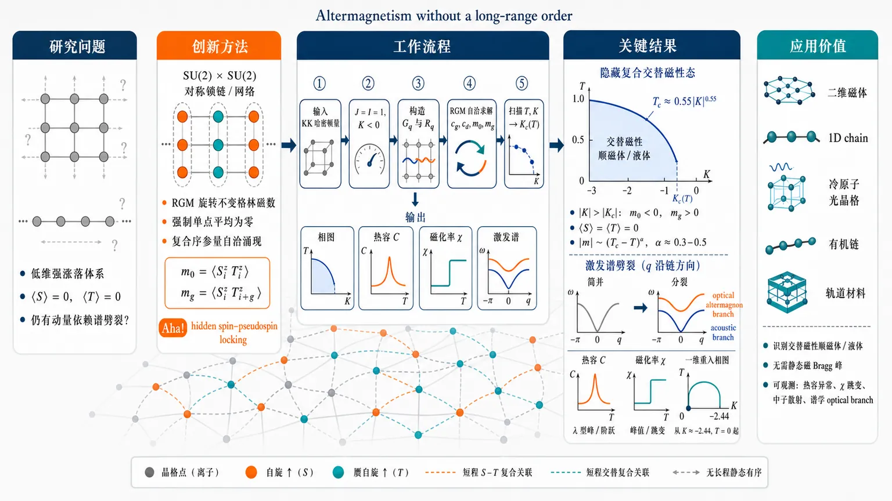
研究问题在二维方格晶格和一维链等低维强涨落体系中，即使没有传统长程磁序或轨道序，即 ⟨S⟩=0、⟨T⟩=0，是否仍能通过短程自旋–赝自旋复合关联保留交替磁性特征，例如零净磁化下的动量依赖激发谱劈裂。创新方法将 SU(2)×SU(2) 对称的 spin-1/2 / pseudospin-1/2 Kugel–Khomskii 模型重新解释为“无长程有序交替磁性”的微观模型；用旋转不变格林函数方法强制单点平均为零，同时让复合序参量 m0=⟨Sᵢ^zTᵢ^z⟩、mg=⟨Sᵢ^zTᵢ₊g^z⟩自洽涌现。Aha 点是：交替磁性不必画成静态反铁磁箭头阵列，而可画成隐藏的自旋–赝自旋锁定网络和声学/光学分支劈裂。工作流程输入低维 Kugel–Khomskii 哈密顿量：自旋交换 J、赝自旋交换 I、负的子系统耦合 K<0；设定 J=I=1、无长程序约束；构造 spin–spin 格林函数 G_q 与 spin–pseudospin 格林函数 R_q；通过 RGM 自洽求解 c_g、c_d、m0、mg 等关联函数；扫描温度 T 与耦合 K，定位 Kc(T)；输出相图、热容、磁化率，以及由简并谱分裂出的 acoustic branch 和 optical altermagnon branch。关键结果当 |K| 超过临界值 |Kc(T)| 后，m0<0、mg>0 突然出现，而 ⟨S⟩、⟨T⟩ 仍为零，显示隐藏复合交替磁性态；二维相边界近似为 Tc≈0.55|K|⁰.55，复合关联满足 |m|∼(Tc−T)^α，α≈0.3–0.5；激发谱由单一简并曲线裂成 acoustic 与 optical 分支，后者可视为无长程序背景中的 altermagnon；热容出现峰或阶跃，磁化率发生跳变；一维相图从 K≈−2.44、T=0 起始并呈非单调重入行为。应用价值为在二维磁体、一维链、冷原子光晶格、有机链和强涨落轨道材料中寻找交替磁性提供新路线：不必依赖静态磁 Bragg 峰或长程反铁磁序，而可通过热容异常、磁化率跳变、中子散射或谱学中的耗散型 optical altermagnon 来识别“交替磁性顺磁体/交替磁性液体”。第一部分：核心概览
该研究把 Kugel–Khomskii 自旋–赝自旋模型重新解释为无长程有序条件下的交替磁性（altermagnetism）微观模型，提出 “altermagnetic paramagnet / altermagnetic liquid” 概念。核心贡献在于证明：即使 ⟨S⟩=0、⟨T⟩=0，二维方格晶格与一维链中仍可在临界耦合 Kc(T) 后产生非零 自旋–赝自旋复合关联，并伴随激发谱分裂为 acoustic / optical branches、热容峰、磁化率跃变及一维重入相变。该工作把交替磁性从传统长程反铁磁序框架扩展到强涨落、低维、短程序体系。
---
第二部分：结构化快速回顾
《Altermagnetism without a long-range order》（None，）
背景
Kugel–Khomskii 模型最初用于描述含轨道自由度的过渡金属化合物，近年来被重新用于研究交替磁性。交替磁性区别于铁磁和反铁磁：净磁化为零，但能带自旋劈裂依赖动量和子晶格符号。低维体系中长程磁序易被 Mermin–Wagner 定理抑制，因此短程关联是否仍能保留交替磁性特征成为关键问题。
方法
采用 SU(2)×SU(2) 对称的 spin-1/2 / pseudospin-1/2 Kugel–Khomskii 模型，设定 J=I=1、K<0，在二维方格晶格和一维链上使用旋转不变格林函数方法（RGM）。核心计算对象为 spin–spin Green’s function (Gₘₐₜₕbf q) 与 spin–pseudospin Green’s function (Rₘₐₜₕbf q)，并通过自洽方程求解关联函数、激发谱、热容和磁化率。
结果
当 (|K|>|K_c|) 后，体系出现非零 m0=⟨Sᵢ^zTᵢ^z⟩<0 和 mg=⟨Sᵢ^zTᵢ₊g^z⟩>0，但单点平均仍为零。二维相边界满足近似关系 (T_c≈0.55|K|⁰.⁵⁵)，临界行为可由 (|m|sim(T_c-T)^α) 描述，指数 (αsim0.3–0.5)。激发谱由简并态分裂为 acoustic 与 optical 分支。
讨论
非零 自旋–赝自旋双线性关联相当于一种复合序参量，不产生传统磁矩或轨道序，却能在动量空间留下交替磁性特征。optical branch 被解释为无长程有序背景中的 altermagnon / altermagnetic paramagnon。热容在相边界出现峰或阶跃，磁化率也发生跳变。
局限
严格的量子纠缠度量尚未计算；RGM 使用顶角修正近似，尤其设定 (αST⁰⁼αST^g=1)，可能造成定量偏移。一维重入行为虽与已有精确对角化研究相符，但仍需精确数值纠缠分析验证。文中关于二维结点方向与结构因子 (γₘₐₜₕbf q) 的表述存在潜在不一致。
结论
长程磁序不是交替磁性表现的必要条件；只要交替符号的 spin–pseudospin correlations 与相应激发谱劈裂得以保留，低维体系中即可出现 altermagnetic paramagnet / altermagnetic liquid。潜在实验探测包括热容、磁化率和中子散射中的耗散型 altermagnon。
---
第三部分：逐章节冷凝解析
Abstract
Composite altermagnetism emerges without long-range order
研究对象是 Kugel–Khomskii spin–pseudospin model，其传统语境为轨道自由度体系，当前语境为交替磁性。核心命题是无长程磁序或轨道序条件下仍能产生交替磁性行为。原文明确给出研究目标：*"we theoretically investigate the emergence of altermagnetic behavior in the absence of long-range magnetic or orbital order."* 这意味着交替磁性特征被从传统的静态有序自旋纹理中抽离，转移到复合关联函数与激发谱对称性层面。
RGM is applied to SU(2)×SU(2) models in 2D and 1D
方法上采用 rotation-invariant Green’s function method，保持 SU(2)×SU(2) 对称性，同时处理二维方格晶格与一维链。原文写道：*"Using the rotation-invariant Green’s function method for the SU(2)×SU(2) symmetric model on a square lattice and on a linear chain"*。该选择使单点平均量严格为零，同时允许短程关联和复合关联自洽生成。
Critical coupling produces nonzero spin–pseudospin correlations
关键发现是存在温度依赖临界耦合 (K_c(T))；超过该阈值后出现复合态，但局域平均自旋和赝自旋仍为零。原文给出：*"beyond a critical intersubsystem exchange (K_c(T)), a composite state arises with nonzero spin–pseudospin correlations, even though the average spin and pseudospin at each site are zero."* 该状态不是常规磁序，而是以 (m₀) 和 (m_g) 为标志的复合短程序。
Excitation spectrum splits into acoustic and optical branches
激发谱从简并形式分裂为 acoustic branch 与 optical branch，并出现与交替磁性相关的结点结构。原文概括为：*"The excitation spectrum splits into acoustic and optical branches, with nodal lines along (qₓ₌q_y) — a direct signature of altermagnetic symmetry."* 这一点构成从关联函数到可观测谱函数的桥梁。
Thermodynamic anomalies mark the phase boundary
相边界处出现热容峰与磁化率跃变。原文指出：*"A peak in heat capacity and a jump in susceptibility are observed at the phase boundary."* 因而该复合态并非仅是形式上的关联函数解，而伴随热力学响应异常。
One-dimensional phase boundary is reentrant
一维体系显示非单调相边界和重入相变。原文写道：*"In 1D, the phase boundary is nonmonotonic and demonstrates reentrant transition."* 这表明低维涨落不仅抑制传统长程序，还可通过熵或激发态结构诱导复合交替磁性关联。
---
1 Introduction
Kugel–Khomskii model historically describes spin–orbital physics
Kugel–Khomskii 模型已有半个世纪历史，最初用于含轨道简并的过渡金属化合物。原文写道：*"The spin–pseudospin model (the Kugel–Khomskii model), formulated more than half a century ago, was initially associated with transition-metal compounds."* 其中 pseudospin 表示晶场劈裂后 d 能级中的双重态或三重态成分：*"the pseudospin corresponds to the doublet or triplet component of a five-fold degenerate d level split by a crystal field."*
The model regained importance through orbitons, liquids, simulators, and entanglement
模型在多个方向重新活跃：orbitons、spin–orbital liquid、冷原子量子模拟、多体纠缠。原文依次指出：*"spin–pseudospin excitations... orbital waves (orbitons), were theoretically investigated and experimentally detected"*；*"suggestions emerged regarding the possibility of a disordered state in the model, an orbital (spin–orbital) liquid, particularly in low-dimensional systems"*；以及 *"the spin–pseudospin model provides an extremely convenient platform for studying many-body entanglement."* 这为无长程序交替磁性提供了既有理论土壤。
Altermagnetism gives the model a new interpretation
近年交替磁性使该模型获得新含义。原文写道：*"the interpretation of the spin-pseudospin model has undergone yet another reincarnation, triggered by the discovery of altermagnetism."* 尽管物理含义变化，数学结构保持不变：*"the pseudospin subsystem has a completely different nature. However, mathematically, the model remains the same."* 因此历史上关于自旋–轨道模型的结果可迁移到交替磁性问题：*"the results obtained for historically preceding realizations of the model [can] be transferred to the case of altermagnetism."*
Altermagnetism is defined by zero net magnetization and momentum-dependent spin splitting
交替磁性不同于铁磁和反铁磁，核心是零净磁化与动量依赖自旋劈裂共存。原文给出定义性描述：*"the altermagnetism differs fundamentally from ferromagnetism and antiferromagnetism in that the net magnetization is zero, but the spin splitting of the bands depends on the momentum and the sign of the sublattice."* 括号中进一步概括为：*"spin-polarized band structure without net magnetization."*
The target state has zero single-site averages but nonzero spin–pseudospin correlations
核心物理设定为 (łanglemathbf Sångle=0)、(łanglemathbf Tångle=0)，但 spin–pseudospin correlations 非零。原文写道：*"a state with (łangleSångle=0) and (łangleTångle=0), but with nonzero spin–pseudospin correlations, is a microscopic model of an antiferromagnetic liquid."* 这里“antiferromagnetic liquid”与后文“altermagnetic liquid”相连，强调无长程序但保留反铁磁/交替磁性交换对称性。
---
2 Justification of the approach
Orbital pseudospins encode crystal-field-split orbital degrees of freedom
在过渡金属氧化物中，部分填充 d 壳层同时携带自旋和轨道自由度。轨道部分可由 pseudospins (mathbf Tᵢ) 表示。原文写道：*"The orbital sector can be described using pseudospins (Tᵢ) acting on a basis of, for example, two orbitals (e_g) or orbitals (t₂g), where the orbital order corresponds to a nonzero average value of (Tᵢ)."* 因此 (łangle mathbf Tᵢångle≠0) 是传统轨道序，而本研究关心的是 (łangle mathbf Tᵢångle=0) 的复合关联态。
Altermagnetic spin splitting arises from sublattice wave-function alternation and directional hopping
交替磁性中的非相对论自旋劈裂来自两个微观成分：子晶格上自旋极化波函数交替，以及方向依赖、轨道选择性跃迁。原文列出：*"the alternation of spin-polarized wave functions on sublattices that are not equivalent in symmetry"* 和 *"direction-dependent (orbitally selective) electronic hopping that lifts spin degeneracy."* 这把交替磁性与轨道物理直接联系起来。
Crystal field and exchange create momentum-dependent spin–orbital locking
具体机制是晶场先将不同轨道偏好绑定到不同子晶格，再由反铁磁交换固定这些轨道上的自旋，产生 spin–orbital locking。原文例子为：*"one sublattice favors (|3z²⁻r²ångle), and another — (|x²⁻y²ångle) orbitals"*，随后 *"antiferromagnetic exchange fixes the spin on these orbitals, creating a momentum-dependent ‘spin-orbital locking’."* 这形成交替磁性能带：*"and, thus, an altermagnetic band structure."*
Low-dimensional fluctuations suppress LRO but can preserve exchange symmetry
低维体系中长程磁序被抑制，但交换相互作用的反铁磁对称性仍可存在。原文写道：*"in low dimensions (2D and 1D) or under strong fluctuations, this order is suppressed, but the symmetry of the exchange interaction remains antiferromagnetic."* 因此即使 (łangle Sångle=0)，激发谱仍可能保留反铁磁特征：*"the spectrum of elementary excitations... retains the splitting characteristic of antiferromagnets along certain directions in the Brillouin zone, even at (łangle Sångle=0)."*
Altermagnetic symmetry is encoded by (ǎrepsilonₚ̆arrow(mathbf k)=ǎrepsilon_downarrow(hat Rmathbf k))
交替磁性定义性对称关系为 (ǎrepsilonₚ̆arrow(mathbf k)=ǎrepsilon_downarrow(hat Rmathbf k))，其中 (hat R) 是非原胞点群操作。原文写道：*"the defining symmetry of the altermagnetic system, that is, the relation (ǎrepsilonₚ̆ₐᵣᵣₒw(k)=ǎrepsilondₒwₙₐᵣᵣₒw(hatRk)) with (hatR) being an operation of a non-primitive point group."* 关键判断是该对称性来自键和轨道空间排列，而非必须来自有序自旋纹理：*"stems from the spatial arrangement of bonds and orbitals, rather than exclusively in an ordered spin texture."*
RGM explicitly enforces absence of single-site order
RGM 在此语境中天然描述 “altermagnetism without LRO”。原文写道：*"the rotation-invariant Green’s function method (RGM)... essentially corresponds to a description of ‘altermagnetism without LRO’ regime."* 其核心约束是所有单点平均消失：*"all single-site averages vanish (łanglewidehatSᵢångle=łanglewidehatTᵢångle=0), and at any nonzero temperature, there is no spin or orbital long-range order."*
Composite spin–pseudospin correlations behave like an order parameter
临界点后出现 (m₀₌łangle Sᵢ^zTᵢ^zångle) 与 (m_g=łangle Sᵢ^zTᵢ₊g^zångle)，表现类似二级相变序参量。原文给出具体数值关系：*"a second-order phase transition with spin–pseudospin correlator as an order parameter, a critical exponent (αsim0.3-0.5), and a phase boundary described in 2D by the relation (T_capprox0.55|K|⁰.⁵⁵)."* 该信息是全文最重要的定量结论之一。
Spectrum splitting is controlled by (Km₀) and lattice structure factor
激发谱分裂由 (K m₀) 与二维结构因子 (γₘₐₜₕbf q=frac12(o̧s qₓ₊ₒ̧s q_y)) 控制。原文写道：*"splitting of the collective excitation spectrum into the acoustic (ømegaₐc(mathbf q)) and the optical (ømegaₒₚₜ(mathbf q)) branches, defined by the parameters (Km₀) and (γₘₐₜₕbf q=frac12(o̧s(qₓ₎₊ₒ̧s(q_y)))."* 结构因子决定分裂是否存在：*"Parameter (γₘₐₜₕbf q) is identical to the (mathbf k)-dependent structure factor that determines whether we have (ømegaₐc≠ømegaₒₚₜ) or not."*
Composite bilinear locking differs from ordinary spin–orbital liquid
复合序参量不是 spin expectation value 或 orbital expectation value，而是锁定自旋与轨道的双线性组合。原文写道：*"the analog to an order parameter here is not a spin or orbital expectation value, but some composite bilinear combination that locks spin and orbital."* 其内部对称性变化被表述为：*"breaking SU(2)×SU(2) down to a residual SU(2) or U(1) in the combined space."* 这区别于普通自旋–轨道液体：*"qualitatively different from a spin–orbital liquid, where the full internal symmetry remains unbroken and only short-range entanglement exists."*
Optical mode is interpreted as an altermagnetic paramagnon
optical branch 被解释为无凝聚背景中的复合传播模。原文写道：*"the optical branch (ømegaₒₚₜ(mathbf q)) is analogous to an altermagnetic paramagnon mode."* 其存在原因是短程序对应的自旋–轨道纠缠打破了 K=0 时的谱简并：*"exists precisely because the spin–orbital entanglement corresponding to the short-range order lifts the spectrum degeneracy at (K=0) without any type of condensation."* 在 paramagnon–polaron 语言中它被称为：*"an ‘altermagnon’ in the disordered spin–orbital liquid."*
---
3 Model and method
Hamiltonian is the SU(2)×SU(2) symmetric Kugel–Khomskii model
模型哈密顿量包含自旋交换、赝自旋交换和四算符自旋–赝自旋交换项：
[
widehat H=
Jsumłₐₙgₗₑ ᵢ,ⱼåₙgₗₑmathbf Sᵢmathbf Sⱼ₊
Isumłₐₙgₗₑ ᵢ,ⱼåₙgₗₑmathbf Tᵢmathbf Tⱼ₊
Ksumłₐₙgₗₑ ᵢ,ⱼåₙgₗₑ(mathbf Sᵢmathbf Sⱼ₎₍mathbf Tᵢmathbf Tⱼ₎.
]
原文写道：*"we will proceed from a symmetric version of the Kugel–Khomskii model, that is the (SU(2)× SU(2)) model with (SU(2)) symmetries for both spin-1/2 and pseudospin-1/2 operators."* 最近邻求和覆盖二维方格晶格或一维链：*"(<i,j>) denotes summation over the nearest-neighbor sites on a square lattice or linear chain."*
Parameter regime is antiferromagnetic (J=I>0) with negative intersubsystem coupling (K<0)
研究限制在最重要的对称反铁磁情形：(J=I>0)，并设定 (K<0)。原文写道：*"We will limit ourselves to the most interesting case of antiferromagnetic (AFM) spin–spin and pseudospin–pseudospin interactions, assuming them to be equal, (J=I>0)."* 能量单位设为 (J=I=1)：*"all energy parameters are given in the (J=I=1) units."* 该参数区域被认为最容易产生两个自由度的纠缠：*"at such a ratio of parameters, the inter-subsystem interaction is most pronounced... and, in particular, can lead to an entanglement of two degrees of freedom."*
No long-range order is assumed for D=1 and D=2 at finite temperature
基本假设是低维有限温下无长程有序。原文写道：*"A key assumption... is based on the paradigm of the absence of long-range order in dimensions (D=1) and 2 at a temperature (T≠0)."* 理由来自 Mermin–Wagner theorem：*"For non-interacting subsystems ((K=0)), the Mermin–Wagner theorem prohibits a long-range order for (D<3)."* 非零子系统耦合被认为进一步增强涨落：*"nonzero inter-subsystem interaction only enhances the role of thermal and quantum fluctuations."*
Three symmetry assumptions enforce translation and SU(2) invariance
计算假设包括：所有格点等价、单点平均为零、不同分量相关函数为零。原文列出：*"all sites are equivalent (translation symmetry is not broken)"*；*"single-site averages are zero (no long-range order) (łanglewidehatSᵢångle=łanglewidehatTᵢångle=0)"*；以及 *"the correlation functions for the different spin and pseudospin components... are also equal to zero."* 这确保无传统磁序或轨道序。
Two retarded Green’s functions are sufficient in the symmetric case
核心格林函数为：
[
Gₘₐₜₕbf q=łangle Sₘₐₜₕbf q^z|S₋ₘₐₜₕbf q^zångle_ømega,
quad
Rₘₐₜₕbf q=łangle Tₘₐₜₕbf q^z|S₋ₘₐₜₕbf q^zångle_ømega.
]
原文写道：*"We consider the spin–spin and spin–pseudospin retarded Green’s functions (Gₘₐₜₕbf q)... (Rₘₐₜₕbf q)."* 因为 (I=J)，赝自旋–赝自旋格林函数与自旋–自旋格林函数相同：*"the third, pseudospin–pseudospin, Green’s function is not needed, since (łangle Tₘₐₜₕbf qz|T₋ₘₐₜₕbf qzångle_ømega=łangle Sₘₐₜₕbf qz|S₋ₘₐₜₕbf qzångle_ømega)."*
Green’s functions decompose into acoustic and optical poles
RGM 给出两个极点结构：
[
G_q=fracFₐcømega²⁻ømegaₐc²+
fracFₒₚₜømega²⁻ømegaₒₚₜ²,
quad
R_q=fracFₐcømega²⁻ømegaₐc²-
fracFₒₚₜømega²⁻ømegaₒₚₜ².
]
原文写道：*"the expressions for (G_qzz) and (Rₘₐₜₕbf qzz) take the form"* 后给出式 (6)、(7)。(G_q) 中两分支同号叠加，而 (R_q) 中 optical 部分符号相反，体现相对自旋–赝自旋振动。
Correlation functions include first, second, and third neighbor spin correlations in 2D
二维自旋–自旋关联包括最近邻 (c_gequiv c₁)、对角次近邻 (c_dequiv c₂)、两倍边长第三邻 (c₂gequiv c₃)。原文写道：*"the spin–spin correlation functions are (cᵣ₌łanglehat Sᵢ^zhat Sᵢ₊ᵣ^zångle, r=g,d,2g), respectively, for the first... the second... and the third... nearest neighbors."* 一维无对角关联：*"In the one-dimensional case there are obviously no diagonal correlation functions."*
Spin–pseudospin correlations are on-site (m₀) and nearest-neighbor (m_g)
复合关联定义为：
[
m₀₌łangle Sᵢ^zTᵢ^zångle,quad
m_g=łangle Sᵢ^zTᵢ₊g^zångle.
]
原文写道：*"Spin–pseudospin correlation functions, the on-site (m₀) and the inter-site (m_gequiv m₁) are equal to..."*。这些量是全文“无长程序交替磁性”的核心指标。
---
4 Results and discussion
4.1 Correlation functions in the 2D case
Spin–pseudospin correlations vanish below critical coupling
二维方格晶格中，当 (|K|) 较小时，(m₀) 与 (m_g) 均为零。原文写道：*"For sufficiently small (K), the spin–pseudospin correlation functions, both single-site (m₀), and inter-site (m_g), vanish."* 此时自旋和赝自旋子系统虽然各自有短程反铁磁关联，但没有复合交替磁性关联。
At (K_c(T)), (m₀<0) and (m_g>0) appear steeply
达到临界交换 (K_c) 后，两个复合关联绝对值快速增加，并具有固定符号：(m₀<0)、(m_g>0)。原文写道：*"at a certain critical value (K_c), which depends on temperature, both correlation functions begin to increase steeply by absolute value ((m₀<0), (m_g>0))."* 这给出复合态形成的直接数值诊断。
Spin–spin correlation remains smooth through the transition
与复合关联不同，最近邻自旋关联 (c_g) 平滑变化。原文写道：*"At the same time, the intra-subsystem (spin–spin) correlation function varies smoothly, without any peculiarities."* 因此转变并非普通自旋反铁磁序的出现，而是自旋–赝自旋关联通道的突现。
The transition resembles a second-order phase transition
复合关联的陡峭连续出现类似二级相变。原文表述为：*"This provides, although not a strict proof, but a reasonable indication of the emergence of an ‘entangled’ state in the system, characterized by nonzero spin–orbital correlation functions."* 紧接着指出：*"The transition to this state resembles a second-order phase transition."* 该说法保持谨慎：不是严格证明，而是基于自洽 RGM 解的合理指示。
The state has hidden spin–orbit correlation without translational symmetry breaking
从交替磁性角度，非零 (m₀,m_g) 表示隐藏自旋–轨道关联，不破坏平移对称性。原文写道：*"this corresponds to the emergence of a hidden spin–orbit correlation, which does not break the translational symmetry but causes an alternation in the sign of the spin polarization at different sublattices."* 这正是“无净磁化但有交替自旋极化”的关联函数版本。
Signs of (m₀) and (m_g) encode local anticorrelation and intersite positive correlation
(m₀<0) 表示同一格点自旋和赝自旋反相关；(m_g>0) 表示某格点自旋与邻近赝自旋正相关。原文写道：*"A sign of (m₀<0) indicates that the spin and pseudospin at a single site are anticorrelated"*；以及 *"The sign (m_g>0) means that the spin at one site and the pseudospin at a neighboring site are positively correlated."* 后者被解释为无净磁化下的长程交替磁性类比：*"a direct analogue of a ‘long-range’ altermagnetic order in correlation functions without the net magnetization."*
Critical temperature dependence follows a power law
固定 K 时，温度扫描显示：(T>T_c) 时 (m₀₌ₘ_g=0)；(T<T_c) 时二者按幂律增长。原文给出：*"At temperatures above the critical one (T>T_c), the correlation functions (m₀) and (m_g) are equal to zero, while at (T<T_c), the behavior of both of them is well described by the power law (|m|sim(T_c-T)^α)."* 指数范围为 (αsim0.3div0.5)：*"with an exponent (αsim0.3div0.5) that depends weakly on (K)."*
Figure 1 samples temperatures from (T=0.1) to (T=0.8)
图 1 使用八条温度曲线，编号 1–8，对应 T=0.1, 0.2, …, 0.8。原文图注写道：*"The numbers (1div8) enumerate the temperature values: 1 – (T=0.1), 2 – (T=0.2), etc."* (m₀) 与 (m_g) 曲线形成所谓 “platypus nose”：*"The curves forming the ‘platypus nose’ are (m₀) ((m₀<0)) and (m_g) ((m_g>0))."*
---
4.2 2D case: heat capacity and susceptibility
Energy depends entirely on one-site and two-site correlations
热容异常的来源是能量完全由关联函数决定。原文写道：*"The energy for the model under study is entirely determined by single-site and two-site correlation functions."* 因而复合关联在临界点快速增强必然导致热容特征：*"one could expect that a sharp increase in spin–pseudospin correlation functions in the entangled state will lead to a peculiarity in the heat capacity."*
Heat capacity changes stepwise at the onset of intersubsystem correlations
进入有 spin–pseudospin correlations 区域后，热容发生阶跃式变化。原文写道：*"upon entering the region with inter-subsystem correlations, the heat capacity undergoes a stepwise change."* 临界温度越高，阶跃越大：*"The higher the critical temperature (T_c), the larger is the magnitude of this step."*
Heat capacity curves share high-temperature and zero-temperature limits
二维热容在高温处收敛到共同渐近线，低温极限满足 Nernst theorem。原文写道：*"at high temperatures all curves converge to a single asymptote, and at (T→0), we have (C→0) for all curves (the Nernst theorem holds)."* 这表明 RGM 热力学结果在两个极限具有合理性。
Heat capacity also changes stepwise when (K) crosses (K_c) at fixed temperature
不仅温度扫描可见异常，固定温度改变 K 也会在 (K=K_c) 处发生阶跃。原文写道：*"as (K) changes at a fixed temperature, the heat capacity also undergoes a stepwise change at (K=K_c)."* 该特征使相边界可通过热容实验或数值热力学响应定位。
Susceptibilities show critical jumps
图 3 给出 spin–spin susceptibility (ḩiₛₛ) 与 spin–pseudospin susceptibility (ḩiₛₜ) 的温度依赖。原文写道：*"the temperature dependence of the spin–spin (ḩiₛₛ) and the spin–pseudospin (ḩiₛₜ) susceptibilities at several fixed values of (K)."* 二者在临界点发生阶跃：*"Similarly to the heat capacity, the susceptibility exhibits a stepwise change at critical points."*
Away from transition, susceptibilities weakly depend on (T) and (K)
临界区之外，两个磁化率对温度和耦合变化不敏感。原文写道：*"Outside the transition region, both susceptibilities depend only slightly on (T) and (K)."* 小 (|K|) 下的 (ḩiₛₛ) 与纯 Heisenberg 模型一致：*"The behavior of the spin–spin susceptibility at small (|K|) agrees with the well-studied case of the pure Heisenberg model."*
Strict entanglement confirmation remains absent
二维结果强烈支持纠缠自旋–赝自旋态，但还没有严格量子纠缠度量。原文写道：*"there is strong evidence that at any temperature with the growth of (K) in the 2D case... there arises a state with entangled spin and pseudospin degrees of freedom."* 随后明确局限：*"to rigorously confirm this conclusion, an accurate calculations of one of the entanglement measures are required."*
---
4.3 2D case: excitation spectrum
For (K=0) or (|K|<|K_c|), spin and pseudospin spectra are degenerate
当 K=0 或低于临界强度时，(m₀₌ₘ_g=0)，自旋和赝自旋子系统独立，且由于 I=J 谱完全相同。原文写道：*"When (K=0) (and for any (|K|<|K_c|)), the subsystems (mathbf S) and (mathbf T) are independent ((m₀₌ₘ_g=0)) and... their excitation spectra are identical."*
For (|K|>|K_c|), the spectrum splits into acoustic and optical branches
超过临界耦合后，简并谱分裂为 (ømegaₐc(mathbf q)) 与 (ømegaₒₚₜ(mathbf q))。原文写道：*"If (|K|>|K_c|) is sufficiently large, the degenerate excitation spectrum splits into two branches (ømegaₐc(mathbf q)) and (ømegaₒₚₜ(mathbf q))."* 这是复合交替磁性态最直接的动力学指纹。
High-symmetry point inequalities always hold
在 (Γ=(0,0)) 和 (mathbf Q=(π,π)) 处，谱满足：
[
ømegaₒₚₜ(Γ)ge ømegaₐc(Γ)=0,quad
ømegaₐc(Q)ge ømegaₒₚₜ(Q)ge0.
]
原文写道：*"the following relations always hold (ømegaₒₚₜ(Γ)≥ømegaₐc(Γ)=0,quadømegaₐc(Q)≥ømegaₒₚₜ(Q)≥0)."* 其中 acoustic branch 始终为 Goldstone 分支：*"In particular, (ømegaₐc) is always a Goldstone branch."*
Near transition, splitting is small and localized near high-symmetry points
在 (|K|gtrsim|K_c|) 附近，谱劈裂很小，仅在 (Γ) 与 Q 附近明显。原文写道：*"Near the transition, at (|K|gtrsim|K_c|), the spectral splitting is small and noticeable only in the vicinity of the highly symmetric points (Γ=(0,0)) and (Q=(π,π))."* 图 4 上面板示例为 T=0.3、K=-0.4，图注写道：*"Top: (K=-0.4), weak splitting."*
Strong coupling produces large splitting and nearly flat upper regions
当 (|K|) 增大，劈裂增强，强耦合下分支上部接近无色散。原文写道：*"With an increase in (|K|), the splitting grows."* 并指出：*"At a sufficiently large inter-subsystem exchange, the upper parts of the branches form a nearly dispersionless region."* 图 4 下面板参数为 T=0.3、K=-3.0：*"Bottom: (K=-3.0), strong splitting."*
The lattice form factor is compared with altermagnetic d-wave splitting
传统交替磁性中，自旋能带劈裂常写成 d-wave (sim(o̧s kₓ₋ₒ̧s k_y)) 或 p-wave。该模型中的类比结构因子为 (γₘₐₜₕbf q=(o̧s qₓ₊ₒ̧s q_y))。原文写道：*"In altermagnetics, the splitting of spin bands is usually described as a d wave (sim(o̧skₓ-o̧sk_y)) or a p wave. Here, the analogue is (γ_q=(o̧s qₓ₊ₒ̧s q_y))."* 这一类比把激发谱分裂与交替磁性对称性联系起来。
Nodal directions are claimed as direct evidence of altermagnetic symmetry
文中声称在 (qₓ₌q_y) 结点方向分裂消失。原文写道：*"It is particularly important that in the nodal directions ((qₓ₌q_y)) the splitting vanishes: this is a direct indication of altermagnetic symmetry in the excitation spectrum."* 该判断是交替磁性解释的关键，但与给出的 (γₘₐₜₕbf q=frac12(o̧s qₓ₊ₒ̧s q_y)) 的零线存在数学张力，需在理解时谨慎。
Optical branch is identified as an altermagnon
(ømegaₒₚₜ(mathbf q)) 被解释为 altermagnon，即相对自旋–赝自旋取向涨落的集体模。原文写道：*"The optical branch (ømegaₒₚₜ(q)) is an ‘altermagnon’... that is a collective mode associated with fluctuations in the relative alignment of spin and pseudospin."* 其无长程序存在性被强调为交替磁性液体的关键特征：*"Its existence above (T_c) and without LRO is a key feature of an altermagnetic liquid."* 但此处“above (T_c)”与前文 (m₀₌ₘ_g=0) 时谱不分裂的描述存在潜在表述不严谨。
Altermagnetic character is diagnosed by protected nodal lines and branch mapping
该分裂不是普通杂化，而是由复合序参量、结点线与交替磁性操作共同标识。原文写道：*"The diagnostic that this is altermagnetic rather than generic hybridization is the presence of symmetry-protected nodal lines, a sharp onset at a phase transition driven by (m₀), (m_g), and the mapping of the two branches into each other under the altermagnetic operation (hat R)."* 这直接类比电子交替磁体中的条件：*"(ǎrepsilonₚ̆ₐᵣᵣₒw(k)=ǎrepsilondₒwₙₐᵣᵣₒw(hat Rk))."*
---
4.4 Phase diagram and the 1D anomaly
RGM has prior credibility for 1D thermodynamics
一维计算与二维类似，且 RGM 在一维 Heisenberg 链热力学上与 Bethe Ansatz 和有限链数值结果有合理一致性。原文写道：*"in the 1D case, the used approach yields reasonable agreement for the thermodynamic properties with the results of the Bethe anzatz approximation and numerical data for finite Heisenberg chains."* 这为一维相图预测提供方法学支撑。
2D phase boundary follows (T_c=0.55|K|⁰.⁵⁵)
二维相边界单调且符合直觉，拟合关系为 (T_c=0.55|K|⁰.⁵⁵)。原文写道：*"In the 2D case, the phase boundary looks as is intuitively expected; it is well described by the relation (T_c=0.55|K|⁰.⁵⁵)."* 这说明任意有限温度下，只要负 K 足够强，便可产生复合自旋–赝自旋关联。
1D phase boundary starts at finite coupling (Kapprox-2.44) at (T=0)
一维最反直觉之处是零温下并非任意小 K<0 都能产生复合关联，而是需要有限阈值。原文写道：*"in 1D, the curve separating the regions with zero and nonzero spin–pseudospin correlations begins at a nonzero inter-subsystem exchange, at the point (Kapprox-2.44), (T=0)."* 该结果显示一维量子涨落显著抬高复合态门槛。
1D boundary is nonmonotonic and allows reentrant transition
一维相边界非单调，因此存在重入转变。原文写道：*"the boundary exhibits a nonmonotonic behavior, which implies the possibility of a reentrant transition to the entangled state."* 即随温度升高，体系可能从非纠缠态进入纠缠/交替磁性态，再在更高温失去该态。
1D correlation and thermodynamic behavior mirrors 2D but with more complex curves
一维中 (m₀) 和 (m_g) 同样在达到临界 (K_c) 前为零，之后陡增；spin–spin correlation 变化较弱。原文写道：*"as in 2D, the inter-subsystem correlation functions (m₀) and (m_g) are equal to zero until attaining the critical value (K_c), and then they begin to increase steeply, whereas the change in the spin–spin correlation function is less noticeable."* 热容和磁化率也在转变处异常：*"The heat capacity and susceptibility also exhibit peculiarities at the transition point."*
Temperature-induced entanglement is linked to entropy stabilization
一维重入现象意味着升温可诱导纠缠交替磁性态。原文写道：*"The nonmonotonity of the transition means that an increase in temperature can induce an entangled (altermagnetic) state being an effect reminiscent of entropy-stabilized altermagnetic phases."* 潜在验证平台包括冷原子和有机链：*"This prediction can be tested in cold atoms or organic chains."*
Exact diagonalization literature supports reentrant entanglement
低维或小粒子自旋模型中，重入纠缠已有精确对角化支持。原文写道：*"The reentrant behavior of entanglement in low-dimensional or small-particle spin models (including the Kugel-Khomskii one) has been repeatedly obtained by an exact diagonalization."* 物理解释是低能态不一定最纠缠：*"at sufficiently low temperatures, states with lower energy are not necessarily more entangled (correlated) than those with a slightly higher energy."*
---
5 Conclusions
Long-range order is not necessary for altermagnetic manifestations
核心结论是交替磁性表现不要求长程序。原文开宗明义：*"We have demonstrated that the manifestations of altermagnetism do not necessarily require a long-range order."* 必要条件是键上的交替符号自旋–赝自旋关联及激发谱劈裂：*"It is sufficient for the alternating sign of spin–pseudospin correlations on bonds to be preserved, along with the corresponding splitting of the excitation spectrum."*
Altermagnetic paramagnet or liquid can exist in 2D and 1D at finite temperature
该复合态被命名为 “altermagnetic paramagnet” 或 “altermagnetic liquid”。原文写道：*"Such a state, an ‘altermagnetic paramagnet’ or ‘altermagnetic liquid’, can exist in 2D and 1D cases at finite temperatures."* 这直接拓展交替磁性可存在的物态范围。
Experimental signatures include heat capacity, susceptibility, and neutron scattering
可观测信号包括热容、磁化率和中子散射中的耗散型 altermagnon。原文写道：*"manifest itself in the heat capacity, susceptibility, as well as in the neutron scattering (dissipative altermagnon)."* 这说明该理论不只预测静态关联，也给出实验谱学方向。
Low-dimensional systems become natural targets
低维体系虽然磁序消失，但交替磁性交换对称性可保留。原文写道：*"This opens the way to the search for altermagnetism in low-dimensional systems, where magnetic order vanishes but altermagnetic exchange symmetry is preserved."* 潜在对象包括二维磁体、一维链、冷原子光晶格、有机链及强涨落轨道体系。
---
Appendix A Appendix
Appendix gives explicit RGM pole structure for (Gₘₐₜₕbf q) and (Rₘₐₜₕbf q)
附录重复并具体化 spin–spin 与 spin–pseudospin retarded Green’s functions：
[
Gₘₐₜₕbf q=łangle Sₘₐₜₕbf q^z|S₋ₘₐₜₕbf q^zångle_ømega,
quad
Rₘₐₜₕbf q=łangle Tₘₐₜₕbf q^z|S₋ₘₐₜₕbf q^zångle_ømega.
]
原文写道：*"Spin–spin ((Gₘₐₜₕbf q)) and spin–pseudospin ((Rₘₐₜₕbf q)) retarded Green’s function are..."* 对称情形下 pseudospin–pseudospin Green’s function 不需要：*"For the considered symmetric case (I=J) the pseudospin–pseudospin Green’s function is needles."* 此处英文有拼写错误，应为 needless。
2D branch weights are defined by (Fₐc=(F₁₊F₂₎/2), (Fₒₚₜ=(F₁₋F₂₎/2)
二维方格晶格中：
[
Fₐc=fracF₁₊F₂2,quad
Fₒₚₜ=fracF₁₋F₂2,
]
其中
[
F₁₌₋₈Jc_g(1-γₘₐₜₕbf q)-Mm₀,quad F₂₌Mm₀.
]
原文写道：*"The numerators for acoustic and optical branches are (Fₐc=fracF₁₊F₂2, Fₒₚₜ=fracF₁₋F₂2)"*。二维中 (M=8Km₀)：*"For simplicity, we use the notation (M=8Km₀)."*
2D spectra are (ømegaₐc²⁼W₁₊W₂) and (ømegaₒₚₜ²⁼W₁₋W₂)
二维激发谱由：
[
ømegaₐc²⁽mathbf q)=W₁₊W₂,quad
ømegaₒₚₜ²⁽mathbf q)=W₁₋W₂
]
给出。原文写道：*"the excitations spectra (ømegaₐc²(mathbf q)=W₁₊W₂, ømegaₒₚₜ²(mathbf q)=W₁₋W₂)."* 其中 (W₁,W₂) 包含 (J²)、JM、M²) 项，说明谱劈裂同时由普通反铁磁交换和复合自旋–赝自旋耦合控制。
2D lattice structure factor is (γₘₐₜₕbf q=frac12(o̧s qₓ₊ₒ̧s q_y))
二维最近邻结构因子为：
[
γₘₐₜₕbf q=frac14sumₘₐₜₕbf geⁱmathbf qmathbf g
=frac12(o̧s qₓ₊ₒ̧s q_y).
]
原文写道：*"The lattice sum for square case (γₘₐₜₕbf q=frac14sumₘₐₜₕbf geⁱmathbf qg=frac12(o̧s(qₓ₎₊ₒ̧s(q_y)))."* 该因子在所有谱权重与谱函数表达式中反复出现，是动量依赖交替磁性特征的数学载体。
Vertex corrections are approximated as unity in the spin–pseudospin channel
自旋–赝自旋顶角修正采用：
[
tilde m₀₌αST⁰m₀,quad
tilde m_g=αST^gm_g,quad
αST⁰⁼αST^g=1.
]
原文写道：*"for the inter-subsystem vertex corrections... we adopted the approximation (αST⁰=αSTg=1)."* 脚注说明该近似主要造成小的定量偏移：*"manipulating vertex corrections within reasonable limits does not lead to a qualitative change in the results, in the worst case — only to a slight quantitative shift."*
1D formulas differ by coordination-number factors and (M=4Km₀)
一维链中：
[
F₁₌₋₄Jc_g(1-γₘₐₜₕbf q)-Mm₀,quad F₂₌Mm₀,
]
且 (M=4Km₀)。原文写道：*"now (M=4Km₀), (γₘₐₜₕbf q) is one-dimensional, other notations are the same as for 2D case."* 相比二维的 8J 与 8Km0，一维因配位数降低而出现 4J 与 4Km0。
---
第四部分：深度理解与语言支持
1. 术语解析
#### Altermagnetism
Altermagnetism 指零净磁化但存在动量依赖自旋劈裂的磁性类别。它不是普通反铁磁，因为反铁磁通常强调实空间相反子晶格磁矩；交替磁性强调能带或激发谱中的对称保护自旋劈裂。文中定义语境是：*"spin-polarized band structure without net magnetization."* 微妙之处在于“无净磁化”不等于“无自旋结构”，而是自旋极化以动量和子晶格符号交替方式出现。
#### Long-range order (LRO)
Long-range order 是无限距离上仍保持非零序参量相关或单点序参量的状态。文中 LRO 特指 (łangle Sᵢångle≠0) 或 (łangle Tᵢångle≠0) 的磁/轨道长程序。研究重点是 without LRO，即 (łangle Sᵢångle=łangle Tᵢångle=0)，但并不意味着所有关联都为零；短程或复合关联仍可非零。
#### Spin–pseudospin correlations
Spin–pseudospin correlations 是自旋与赝自旋之间的复合关联，如 (m₀₌łangle Sᵢ^zTᵢ^zångle) 和 (m_g=łangle Sᵢ^zTᵢ₊g^zångle)。它不同于普通 spin–spin correlation，因为它测量两个不同量子子系统之间的锁定。文中它被作为类序参量：*"spin–pseudospin correlator as an order parameter."*
#### Rotation-invariant Green’s function method (RGM)
RGM 是保持旋转对称性的格林函数自洽方法。它不预设磁序方向，因此适合研究无长程序、强涨落体系。文中强调它满足 Mermin–Wagner 约束：*"all single-site averages vanish... and at any nonzero temperature, there is no spin or orbital long-range order."* 微妙点是 RGM 能描述短程关联诱导的谱分裂，但结果依赖截断和顶角修正近似。
#### Reentrant transition
Reentrant transition 指随温度单调变化时，体系进入某相后又离开该相，或低温无序、中温有序、高温再无序。文中一维相图中，升温可能诱导纠缠/交替磁性态：*"an increase in temperature can induce an entangled (altermagnetic) state."* 这反直觉，因为通常升温破坏有序；此处熵和较高能纠缠态可稳定复合关联。
---
2. 疑难查证
#### 为什么没有 (łangle Sångle) 和 (łangle Tångle)，仍可说有“交替磁性”？
传统磁序依赖单点平均量，例如铁磁的 (łangle Sᵢångle≠0) 或反铁磁的交错 (łangle S_Aångle=-łangle S_Bångle)。这里这些量全为零，因此没有普通磁矩图案。关键在于交替磁性的可观测本质不一定是静态磁矩，而可以是动量空间自旋劈裂对称性与复合关联函数。
类比液晶：分子位置没有晶体长程序，但取向关联仍可让光学性质各向异性。这里单个格点没有稳定自旋或轨道方向，但 (Sᵢ^zTᵢ^z) 或 (Sᵢ^zTᵢ₊g^z) 的平均可非零，说明自旋与赝自旋“相对关系”被锁定。交替磁性信息保存在二体或复合量中，而非一体量中。
#### “复合序参量”到底是什么？
普通序参量是单个算符平均，如 (łangle Sᵢ^zångle)。复合序参量是两个算符乘积的平均，如：
[
m₀₌łangle Sᵢ^zTᵢ^zångle.
]
即使 (łangle Sᵢ^zångle=0) 且 (łangle Tᵢ^zångle=0)，乘积平均仍可非零。经典概率例子：两个随机变量 X 和 Y 各自均值为 0，但若总是 Y=-X，则 (łangle XYångle<0)。文中 (m₀<0) 正是这种局域反锁定，(m_g>0) 是跨键正锁定。
#### acoustic 和 optical branches 为什么重要？
当 K=0 时，自旋和赝自旋两个子系统等价且独立，激发谱简并。出现非零 (m₀,m_g) 后，两种集体振动模式变成：
- acoustic branch：自旋与赝自旋近似同相振动，低能，(Γ) 点满足 (ømegaₐc(Γ)=0)；
- optical branch：自旋与赝自旋相对振动，高能，代表复合锁定关系的振荡。
这类似双原子晶格中声学声子与光学声子：两个自由度相互耦合后，同相和反相模式能量不同。文中把 optical branch 称为 altermagnon，因为它是交替磁性复合关联的动力学模式。
#### 二维结点线表述存在什么潜在问题？
文中同时给出：
[
γₘₐₜₕbf q=frac12(o̧s qₓ₊ₒ̧s q_y)
]
并声称结点方向为 (qₓ₌q_y)。但若“分裂消失”由 (γₘₐₜₕbf q=0) 控制，则零线满足：
[
o̧s qₓ₊ₒ̧s q_y=0,
]
即常见形式包括 (q_y=π-qₓ)，而不是一般的 (qₓ₌q_y)。在 (qₓ₌q_y) 上，
[
γ=o̧s qₓ,
]
只有在 (qₓ₌q_y=π/2) 时为零。除非完整谱分裂还包含其他项导致对角线消失，否则“along (qₓ₌q_y)”与附录结构因子公式不完全一致。这是需要进一步查原始推导或图谱数据的关键点。
---
第五部分：创新评估与关联
1. 创新性判断
#### Novelty 1: 将交替磁性从长程有序磁体推广到无长程序复合液体
过去 2–5 年交替磁性研究多集中于有长程反铁磁序的晶体材料，如 RuO₂、MnTe 及各类电子结构计算，核心证据是无净磁化下的动量依赖自旋劈裂。该研究的新颖性在于提出：长程磁序不是必要条件，短程 spin–pseudospin correlations 足以保留交替磁性谱指纹。结论可概括为：*"manifestations of altermagnetism do not necessarily require a long-range order."*
#### Novelty 2: 提出“altermagnetic paramagnet / altermagnetic liquid”
此前“paramagnet”通常意味着无磁序且无自旋劈裂；“spin liquid”通常强调无传统序和分数量子激发。该研究提出的 altermagnetic paramagnet / liquid 是介于两者之间的新概念：无 (łangle Sångle)、无 (łangle Tångle)，但有复合关联和交替磁性谱劈裂。这个概念把交替磁性拓展到低维、强涨落、有限温体系。
#### Novelty 3: 用 RGM 构造严格无单点序的交替磁性理论框架
许多交替磁性理论依赖第一性原理或自旋波理论，通常预设有序反铁磁背景。该研究使用 rotation-invariant Green’s function method，显式满足 Mermin–Wagner theorem，因此能够在 D=1,2、T≠0 下排除传统长程序。创新点在于把交替磁性诊断从静态序参量转向 复合关联函数 + 激发谱分裂 + 热力学异常。
#### Novelty 4: 给出二维临界相边界和临界指数
该研究不仅提出概念，还给出半定量相图：二维中
[
T_capprox0.55|K|⁰.⁵⁵,
]
复合关联临界行为为
[
|m|sim(T_c-T)^α,quad αsim0.3-0.5.
]
这些数值为后续 Monte Carlo、DMRG、张量网络、冷原子模拟提供可检验基准。
#### Novelty 5: 预测一维非单调相边界与重入交替磁性纠缠态
一维相图从 (Kapprox-2.44,T=0) 起始，且随温度非单调，意味着升温可诱导复合交替磁性态。这是相当独特的低维预测，与过去精确对角化中发现的重入纠缠现象相连接。它解决的问题是：在一维无长程序体系中，交替磁性是否可能以热稳定复合关联形式出现。
#### Novelty 6: 将 optical spin–pseudospin mode 解释为无序背景中的 altermagnon
近年 altermagnon 多在有序交替磁体中讨论。该研究把 optical branch 解释为无长程序、短程纠缠背景中的 altermagnetic paramagnon / altermagnon。这为中子散射、RIXS 或光谱寻找交替磁性提供了新方向：不必寻找静态磁 Bragg 峰，而可寻找具有交替磁性对称结构的耗散集体模。
#### 仍未解决的问题
- 严格量子纠缠度量未计算，复合态是否真正为量子纠缠态仍需确认。
- RGM 顶角近似可能影响临界值和相边界形状。
- 二维结点线表述与 (γₘₐₜₕbf q) 公式存在潜在不一致。
- “optical branch exists above (T_c)” 与前文 (m₀₌ₘ_g=0) 时无劈裂的逻辑需要澄清。
- 与真实材料能带交替磁性之间仍需建立更具体的电子模型映射。
-
04
📊 含图深析
📄 摘要：提出由量子蒙特卡罗训练的多态机器学习力场，用于非绝热激发态动力学。方法以含选择组态相互作用和Jastrow因子的VMC波函数生成相关电子结构，再由神经网络平滑映射为势能面/力场，偶氮甲烷被用作严格测试。
💡 亮点：把QMC的相关电子结构直接蒸馏成多态力场，瞄准非绝热过程。偶氮甲烷测试说明该路线可处理电子态切换下的动力学。
📖 展开分析 + 配图
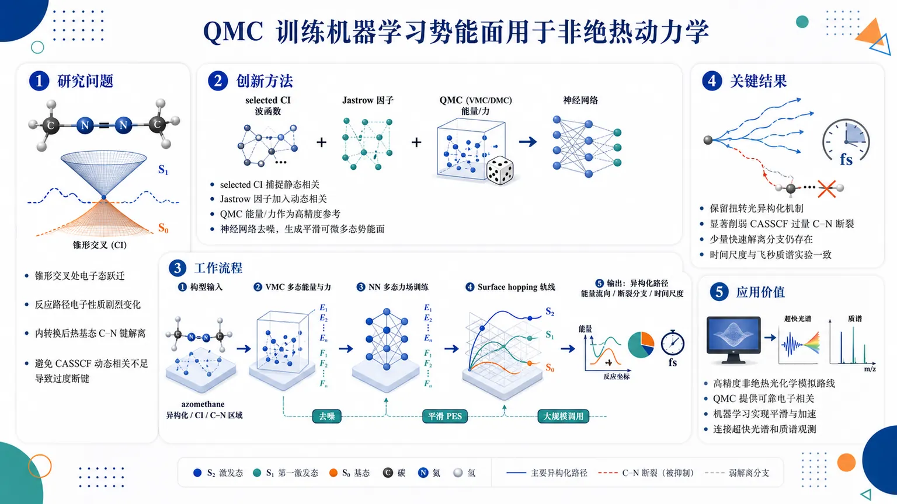
研究问题如何在非绝热激发态动力学中，同时准确描述锥形交叉处的电子态跃迁、反应路径上电子性质剧烈变化，以及内转换后热基态上的 C–N 键解离，避免传统 CASSCF 因动态电子相关不足而过度预测断键通道。创新方法提出由量子蒙特卡洛 QMC 参考数据训练的多态机器学习力场：用 selected CI 多组态展开捕捉静态相关，用 Jastrow 因子显式加入动态相关，再由神经网络把带随机噪声的 QMC 能量与力转化为平滑、可微、可大规模调用的多电子态势能面，这是将高精度随机波函数方法接入 surface hopping 非绝热动力学的关键 Aha 点。工作流程输入偶氮甲烷在异构化、锥形交叉和 C–N 解离区域的分子构型；用变分 QMC 计算多态能量和力作为高精度参考；训练神经网络多态力场以去噪并生成平滑势能面；在该势能面上运行大量 surface hopping 轨线；输出光异构化路径、内转换后能量流向、C–N 断裂分支和解离时间尺度。关键结果QMC-ML 动力学保留了偶氮甲烷预期的扭转光异构化机制，并显著削弱 CASSCF 中过量出现的 C–N 键断裂；同时预测内转换后存在少量但不可忽略的快速解离分支，其时间尺度与飞秒分辨质谱实验一致，说明模型既修正理论偏差又保留实验可见通道。应用价值为高精度非绝热光化学模拟提供可行路线：QMC 负责可靠电子相关，机器学习负责平滑加速，适合研究锥形交叉、态间跃迁、热基态断键等传统方法容易失真的光反应机制，并可连接超快光谱或质谱实验观测。第一部分：核心概览（Overview）
该研究将量子蒙特卡洛（QMC）参考数据与多态机器学习力场结合，用于模拟非绝热激发态动力学，目标是处理反应路径中电子态性质显著变化且需要一致相关电子结构描述的光化学过程。以偶氮甲烷（azomethane）为严格测试体系，模型覆盖锥形交叉区扭转弛豫与热基态 C–N 键解离。核心贡献在于：QMC 训练的 ML 动力学既保持预期的光异构化机制，又显著削弱 CASSCF 中过量预测的 C–N 断裂，并给出与飞秒质谱实验一致的少量快速解离通道，展示了 QMC-ML 作为高精度非绝热光化学动力学路线的可行性。
---
第二部分：结构化快速回顾
《Nonadiabatic excited-state dynamics with quantum Monte Carlo-trained machine learning: azomethane as a stringent test》（None，）
背景
非绝热激发态动力学需要同时描述多个电子态、势能面交叉、电子态性质变化和核运动。传统方法如 CASSCF 在某些体系中可能缺乏足够的动态电子相关，导致反应分支预测偏差，尤其是在涉及锥形交叉和键解离的光化学过程中。
方法
采用量子蒙特卡洛训练的多态机器学习力场。电子结构参考来自 variational Monte Carlo wave functions，其波函数由紧凑 selected configuration-interaction expansions 与 Jastrow factor 组成；随后用神经网络将含随机噪声的 QMC 数据转换为平滑的多态势能面，用于大规模 surface-hopping ensembles。
结果
在偶氮甲烷中，QMC-ML 动力学再现了预期的光异构化机制，同时显著减少 CASSCF 得到的过度 C–N bond breaking。动力学还预测了内转换后存在一个小但不可忽略的 prompt dissociation component，其时间尺度与飞秒分辨质谱实验一致。
讨论
QMC 参考数据在异构化与解离构型上均表现出稳健的力收敛，说明该方法可在电子态性质变化剧烈的区域维持较高一致性。机器学习势能面承担了将高成本 QMC 数据扩展到大量轨线模拟的桥梁作用。
局限
可用材料未给出训练集大小、神经网络结构、QMC 采样误差、surface hopping 轨线数、时间步长、态数、统计置信区间、实验对照具体时间常数或完整章节内容，因此无法定量评估模型泛化边界、统计显著性和误差传播。
结论
QMC-ML 为非绝热光化学动力学提供了一条实际可行路线，尤其适合需要高精度波函数参考数据、同时又要进行大规模动力学采样的体系。
---
第三部分：逐章节冷凝解析（Section-by-Section Condensing）
Title
#### QMC-trained ML dynamics is positioned as the central methodological advance
题名直接界定方法学创新：非绝热激发态动力学不再直接依赖昂贵电子结构计算逐步传播，而是使用由 QMC 训练得到的 machine learning 力场。标题中的 *"Nonadiabatic excited-state dynamics with quantum Monte Carlo-trained machine learning"* 明确显示三层组合：nonadiabatic dynamics、QMC reference data、ML surrogate force fields。这种组合指向一个关键技术目标：以高精度波函数方法生成参考数据，再用机器学习实现大规模动力学采样。
#### Azomethane is framed as a stringent benchmark rather than a simple demonstration
标题副题 *"azomethane as a stringent test"* 表明偶氮甲烷被用作严苛测试体系，而非普通案例。严格性来自摘要中列出的两个困难：一是torsional relaxation through conical-intersection regions，二是C--N bond dissociation on the hot ground state。这两个过程分别考验多态势能面的拓扑连续性与键断裂区域的电子相关描述。
---
Abstract
#### QMC-trained multi-state ML force fields target electronic-character-changing photochemistry
核心方法是 QMC-trained multi-state machine-learned force fields，服务于电子态性质沿反应路径变化的光化学过程。摘要开头给出目标：*"We introduce quantum Monte Carlo (QMC)-trained multi-state machine-learned (ML) force fields for nonadiabatic excited-state dynamics"*。这里的 multi-state 至关重要，因为非绝热动力学不能只学习单一基态势能面，而必须同时描述多个电子态及其相对能量关系。
该方法针对的不是简单势能面拟合，而是电子结构困难场景：*"targeting photochemical processes in which the electronic character changes along the reaction path and a consistent correlated description is required"*。这意味着体系在反应过程中可能发生 ππ*、nπ*、解离态、闭壳层/开壳层性质变化等电子结构转换，因此需要跨区域一致的相关电子结构处理。
#### Variational Monte Carlo wave functions combine static and dynamic correlation ingredients
QMC 参考数据来自 variational Monte Carlo wave functions，其构造同时包含静态相关与动态相关。摘要说明：*"variational Monte Carlo wave functions combine compact selected configuration-interaction expansions with a Jastrow factor that explicitly accounts for dynamical correlation"*。
其中，selected configuration-interaction expansions 提供多组态展开，用于处理近简并态、锥形交叉附近的多参考特征和键断裂时的静态相关；Jastrow factor 显式引入电子-电子、电子-核等相关项，用于补偿传统 CASSCF 常缺乏的动态相关。这一点是区别于纯 CASSCF 动力学的核心。
#### Neural networks transform stochastic QMC data into smooth PESs for ensemble dynamics
QMC 数据本身具有统计噪声，直接用于动力学会导致力不连续或能量面粗糙。摘要给出机器学习的功能定位：*"neural networks convert the stochastic QMC data into smooth potential energy surfaces for large surface-hopping ensembles"*。
这里的 smooth potential energy surfaces 是非绝热动力学的关键，因为轨线传播需要连续且可微的能量与力；large surface-hopping ensembles 表明方法面向大量轨线统计，而非少数单点路径。ML 模型承担两个角色：一是去噪/平滑化，二是加速 QMC 级别势能面评估。
#### Azomethane tests both conical-intersection relaxation and hot-ground-state dissociation
测试体系为偶氮甲烷，其挑战性被明确界定为两个动力学过程：*"We apply this approach to azomethane, a demanding test case involving torsional relaxation through conical-intersection regions and C--N bond dissociation on the hot ground state"*。
torsional relaxation through conical-intersection regions 对多态势能面、态间耦合和能量间隙描述提出要求；C--N bond dissociation on the hot ground state 则要求基态高振动态下的键断裂势能面可靠。两者结合构成严苛测试：一个发生在激发态-基态交叉附近，一个发生在内转换后携带大量内能的基态。
#### Benchmark calculations support QMC reference accuracy and force robustness
摘要指出基准计算支持 QMC 参考数据的可靠性：*"Benchmark calculations support the accuracy of the QMC reference data and show robust force convergence across isomerization and dissociation geometries"*。
两个验证维度非常关键：第一，accuracy of the QMC reference data，即 QMC 能量或能量差在参考基准上足够准确；第二，robust force convergence，即 QMC 力在不同几何区域稳定收敛。尤其是 *"across isomerization and dissociation geometries"* 说明验证并不局限于平衡区，而覆盖异构化与键断裂两类高难度结构。
#### QMC-trained dynamics preserves photoisomerization while correcting excessive C–N breaking
动力学结果显示，QMC-ML 保留合理的光异构化路径，同时修正 CASSCF 的偏差。摘要给出关键结论：*"The QMC-trained dynamics preserves the expected photoisomerization mechanism, strongly reduces the excessive C--N breaking obtained with complete active space self-consistent field"*。
这里的比较对象是 complete active space self-consistent field，即 CASSCF。CASSCF 可正确处理多参考静态相关，但动态相关不足可能导致某些断键通道能垒、能量排序或基态热解离概率失真。QMC-ML 的优势体现在减少 *"excessive C--N breaking"*，说明其对键解离分支的预测更保守、更接近实验或高精度基准。
#### Prompt dissociation is small but experimentally relevant
QMC-ML 并未完全消除 C–N 解离，而是预测存在少量快速解离分支。摘要表述为：*"predicts a small but non-negligible prompt dissociation component after internal conversion"*。
关键词 small but non-negligible 表示该通道不是主导产物，但统计或机制上不能忽略；after internal conversion 表明解离发生于电子态返回基态之后，而非主要在激发态直接断裂。这支持一种物理图像：激发态经锥形交叉快速内转换，将能量沉积到基态振动模式中，随后一部分高能轨线发生 C–N 断裂。
#### Predicted dissociation timescale agrees with femtosecond-resolved mass spectrometry
实验关联来自飞秒质谱：该少量快速解离分支具有与实验一致的时间尺度。摘要给出：*"with a timescale consistent with femtosecond-resolved mass-spectrometry experiments"*。
这里的 femtosecond-resolved mass-spectrometry experiments 是动力学时间尺度验证，而非仅仅产物分布验证。虽然可用材料未给出具体飞秒数值，但“consistent”表明 QMC-ML 的 prompt dissociation 不是任意数值拟合，而与超快实验观测窗口相符。
#### QMC-ML is established as a practical route to accurate nonadiabatic photochemistry
摘要最后给出方法定位：*"These results establish QMC-ML as a practical route to nonadiabatic photochemical dynamics with accurate wave-function reference data"*。
practical route 的含义不是 QMC 本身廉价，而是通过 ML 将 QMC 参考数据扩展到动力学所需的大量势能面调用；accurate wave-function reference data 强调其区别于经验势、半经验电子结构或低层级 TDDFT/CASSCF 的训练来源。该路线的学术地位在于把高精度随机波函数方法与可规模化非绝热动力学连接起来。
---
Subjects
#### The work sits at the interface of chemical physics and computational physics
学科分类为 *"Chemical Physics (physics.chem-ph) ; Computational Physics (physics.comp-ph)"*。这说明研究同时属于化学物理中的光化学动力学问题，以及计算物理中的随机电子结构、机器学习势能面和大规模动力学模拟问题。
---
Submission metadata
#### The work is an arXiv preprint submitted in July 2026
版本信息为 *"[Submitted on 17 Jul 2026]"*，提交历史显示 *"[v1] Fri, 17 Jul 2026 17:10:29 UTC"*。这意味着可用版本为 arXiv 首版预印本，尚不能从所给材料判断是否经过同行评议、是否有后续修订、是否已有期刊版本。
#### The DOI is arXiv-issued and pending registration
页面给出 DOI 链接 *"https://doi.org/10.48550/arXiv.2607.16129"*，同时标注 *"arXiv-issued DOI via DataCite (pending registration)"*。因此 DOI 属于 arXiv/DataCite 预印本 DOI，而非必然对应期刊出版 DOI。
---
第四部分：深度理解与语言支持（Understanding & Nuance）
1. 术语解析
#### Nonadiabatic excited-state dynamics
Nonadiabatic excited-state dynamics 指核运动过程中电子态不能始终停留在单一绝热态上，轨线可能在不同电子态之间跃迁。典型场景是锥形交叉附近，两个势能面能量接近，Born–Oppenheimer 近似失效。语境中对应 *"nonadiabatic excited-state dynamics"* 与 *"surface-hopping ensembles"*，说明动力学方法需要处理电子态跃迁，而非单势能面传播。
#### Multi-state machine-learned force fields
Multi-state ML force fields 不只是学习一个势能函数，而是同时学习多个电子态的能量、力，可能还涉及非绝热耦合或相关替代量。语境中 *"multi-state machine-learned (ML) force fields"* 强调光化学过程必须追踪态间能量排序与交叉区域，单态 ML 力场不足以处理内转换和态跃迁。
#### Selected configuration-interaction expansions
Selected configuration-interaction expansions 是从巨大 CI 空间中筛选最重要构型组成紧凑波函数，而不是完整枚举所有激发构型。其微妙之处在于“compact”并不等于粗糙，而是通过选择重要组态保留多参考性质。语境中 *"compact selected configuration-interaction expansions"* 主要承担静态相关和多组态电子结构描述。
#### Jastrow factor
Jastrow factor 是乘在多组态波函数上的显式相关因子，用于高效描述电子-电子短程相关等动态相关。语境中 *"explicitly accounts for dynamical correlation"* 表明 Jastrow 不是装饰项，而是 QMC 相比 CASSCF 的重要优势来源之一。
#### Prompt dissociation component
Prompt dissociation component 指内转换后很快发生的解离分支，通常时间尺度在飞秒到皮秒初段。语境中 *"small but non-negligible prompt dissociation component after internal conversion"* 表示该解离不是主反应通道，但在超快实验中可观测，不能简单归零。
---
2. 疑难查证
#### 为什么 QMC 数据需要机器学习？
QMC 的优势是电子相关处理强，尤其适合多参考和动态相关共存的困难体系；缺点是单点能量和力带有随机误差且计算昂贵。非绝热动力学需要在每个时间步、每条轨线上反复计算多态能量和力，调用次数可达数十万到数百万量级。直接用 QMC 跑 surface hopping 几乎不可行。
机器学习在这里不是替代高精度物理，而是把高精度 QMC 数据压缩为连续、快速、可微的势能面。摘要中的 *"neural networks convert the stochastic QMC data into smooth potential energy surfaces for large surface-hopping ensembles"* 正是这一逻辑：QMC 提供准确标尺，神经网络提供可运行规模。
#### 为什么偶氮甲烷是严苛测试？
偶氮甲烷光化学涉及两个难点。第一，激发态弛豫经过 conical-intersection regions，电子态能量接近，态间混合强，势能面拓扑复杂。第二，内转换后体系进入热基态，多余能量可能驱动 C–N bond dissociation。这要求方法既能描述激发态异构化，又能描述基态断键。
CASSCF 对锥形交叉常有优势，因为它能描述多组态静态相关；但缺少动态相关时，某些断键能量和态间能量差可能偏差较大。因此摘要中的 *"strongly reduces the excessive C--N breaking obtained with complete active space self-consistent field"* 指向一个具体改进：QMC-ML 纠正了 CASSCF 对断裂通道的过度预测。
#### “small but non-negligible” 的科学含义是什么？
该表达不是简单的“很少”。在动力学分支中，小比例产物如果具有明确时间尺度、可被实验检测、且对应特定机制，就具有机制意义。这里的 prompt dissociation 出现在 *"after internal conversion"*，并且时间尺度 *"consistent with femtosecond-resolved mass-spectrometry experiments"*。因此它代表一个真实的超快解离支路，而不是数值噪声或模型伪影。
#### “consistent correlated description” 为什么重要？
光化学反应路径上电子结构会变化：Franck–Condon 区、扭转区、锥形交叉区、热基态解离区可能需要不同类型的电子相关。若一种方法在某一区域表现好、另一区域系统性偏差大，动力学会被势能面局部错误放大。摘要中的 *"electronic character changes along the reaction path and a consistent correlated description is required"* 强调同一理论框架必须跨多个区域保持可靠，不能只在平衡结构附近准确。
---
第五部分：创新评估与关联（Synthesis & Novelty）
1. 创新性判断
#### QMC reference data is brought into scalable nonadiabatic dynamics
过去几年，机器学习势能面已广泛用于分子动力学和部分激发态动力学，但训练数据常来自 CASSCF、CASPT2、ADC、TDDFT、MRCI 或半经验方法。QMC 虽有高精度电子相关优势，却因计算成本和随机噪声较少直接进入大规模非绝热动力学。该研究的新颖性在于将 QMC-trained multi-state ML force fields 用于 large surface-hopping ensembles，把高精度随机波函数方法转化为可用于动力学采样的平滑势能面。
#### Static and dynamic correlation are combined in the training reference
CASSCF 能处理静态相关，但动态相关不足；CASPT2/NEVPT2 等后处理方法虽然加入动态相关，但势能面、梯度、态交叉区域稳定性和大规模动力学成本仍具挑战。该方案通过 *"compact selected configuration-interaction expansions with a Jastrow factor"* 将多组态展开与显式动态相关结合，为电子态性质变化剧烈的路径提供更一致的参考。
#### The method addresses a known failure mode: excessive C–N breaking in CASSCF dynamics
关键不是单纯提出新模型，而是针对 CASSCF 在偶氮甲烷动力学中的具体偏差给出修正。摘要明确指出 QMC-trained dynamics *"strongly reduces the excessive C--N breaking obtained with complete active space self-consistent field"*。这体现了方法学价值：不仅可运行，而且改变了反应分支预测，影响机制解释。
#### Azomethane tests both conical intersections and post-internal-conversion dissociation
许多 ML 激发态动力学示例集中于异构化、质子转移或小分子光弛豫；偶氮甲烷同时考验锥形交叉非绝热跃迁和热基态键解离。这种组合使其成为更严苛的验证对象。摘要中的 *"torsional relaxation through conical-intersection regions and C--N bond dissociation on the hot ground state"* 显示该测试不仅关注激发态势能面，也关注内转换后的化学反应产物。
#### Experimental timescale consistency strengthens mechanistic credibility
预测结果与 femtosecond-resolved mass-spectrometry experiments 的时间尺度一致，使 QMC-ML 不只是与其他理论比较，而是触及实验可观测量。创新点在于把高精度电子结构、ML 势能面、surface hopping 动力学和超快实验时间尺度连接起来，形成可检验的光化学机制链条。
-
05
📊 含图深析
📄 摘要：引入局域赝势以减少神经网络量子蒙特卡罗中需要显式处理的电子数，从而缓解计算开销并提升可扩展性；同时报告其在相对能量精度上的改进，推动NNQMC从小体系走向更大体系。
💡 亮点：局域赝势把NNQMC的显式电子规模压下去，同时保留高相对能量精度。
📖 展开分析 + 配图
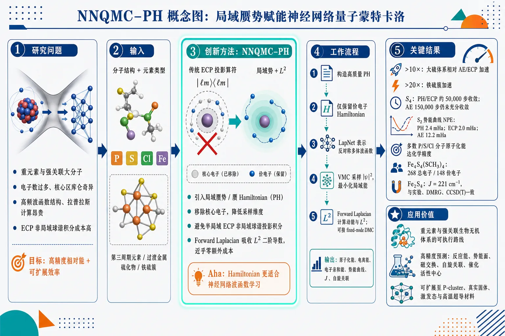
研究问题神经网络量子蒙特卡洛（NNQMC）在含重元素和强关联的大分子中被“电子数过多、核心区库仑奇异、高频波函数结构、拉普拉斯计算和ECP非局域球谐积分”共同卡住；核心问题是：如何让NNQMC在第三周期元素、过渡金属硫化物和铁硫簇中同时实现高精度相对能与可扩展计算效率。创新方法提出NNQMC–PH框架：把局域赝势/赝Hamiltonian（PH）引入NNQMC，用局域势和角动量平方算符L²替代传统半局域ECP的非局域｜ℓm⟩⟨ℓm｜球谐投影；Aha点是PH既移除核心电子、降低采样维度，又避免ECP昂贵的非局域积分，并让L²所需二阶导数被Forward Laplacian几乎零额外成本吸收，从而把Hamiltonian改造成更适合神经网络波函数学习的形式。工作流程输入分子结构与元素类型 → 对P、S、Cl及过渡金属选用/构造高质量PH，移除核心电子，仅保留价电子有效Hamiltonian → 用LapNet等反对称神经网络表示价电子多体波函数 → VMC采样｜ψ｜²并最小化局域能，Forward Laplacian高效计算动能与L²项 → 必要时接入fixed-node DMC进一步投影基态 → 输出原子化能、电离能、电子亲和能、势能曲线、磁交换常数J、自旋关联等相对能和物性。关键结果PH在大硫体系中相对AE/ECP实现超过10倍加速，铁硫簇中超过20倍加速；S₄中PH/ECP约50,000步收敛，AE在150,000步后仍未充分收敛；S₂势能曲线PH的NPE为2.4 mHa，接近ECP的2.0 mHa，明显优于AE的12.2 mHa；含硫、磷、氯分子多数原子化能达到化学精度；PH把NNQMC推进到Fe₄S₄(SCH₃)₄这类268总电子、148价电子铁硫簇，并得到Fe₂S₂簇磁交换常数J=221 cm⁻¹，与实验、DMRG和CCSD(T)一致。应用价值该研究为NNQMC处理重元素、第三周期元素、过渡金属硫化物和强关联生物无机体系提供可执行路线；可用于高精度预测反应能、势能面、磁交换、自旋关联和催化活性中心性质，并有望扩展到铁硫蛋白P-cluster、真实固体、激发态计算和高温超导相关强关联材料模拟。第一部分：核心概览
NNQMC–PH框架把局域赝势（local pseudopotentials / pseudo-Hamiltonians, PH）引入神经网络量子蒙特卡洛，核心突破在于同时降低电子数、避免半局域赝势的非局域球谐积分，并借助Forward Laplacian几乎无额外代价处理角动量平方算符。结果显示，PH相较全电子 AE和ECP在含硫、磷、氯及过渡金属硫化物中实现更高效率与可比或更优相对能精度，并把NNQMC推进到Fe₄S₄(SCH₃)₄这类148价电子强关联铁硫簇。
---
第二部分：结构化快速回顾
《Empowering Neural Network-based Quantum Monte Carlo with Local Pseudopotentials》（None，）
背景
NNQMC利用神经网络波函数高精度求解多体量子体系，但大体系受限于参数优化、训练收敛和拉普拉斯计算成本。传统AE在重元素核心区存在库仑奇异性和高频波函数结构，ECP虽移除核心电子，却引入昂贵非局域投影积分。
方法
引入局域赝势 PH，用局域势与角动量平方算符 L²替代ECP中的非局域球谐投影；构造P、S、Cl三个第三周期元素PH，并结合LapNet / Forward Laplacian、VMC与DMC进行能量和性质计算。
结果
PH在大硫体系中达到超过10倍加速；S₄中PH/ECP约50,000步收敛，AE在150,000步后仍未充分收敛。S₂势能曲线PH的NPE为2.4 mHa，ECP为2.0 mHa，AE为12.2 mHa。铁硫簇中PH实现超过20倍加速。
讨论
PH的优势来自两点：移除核心电子降低动能与采样负担；局域形式避免ECP非局域球谐积分。PH还比ECP更容易接入DMC，避免locality errors相关复杂近似。
局限
PH质量依赖高精度参考数据和拟合方案；元素覆盖仍少于主流ECP；镧系、锕系等重元素还需处理更强相对论效应和自旋–轨道耦合。
结论
NNQMC–PH显著扩展神经网络量子蒙特卡洛可处理体系规模，尤其适合过渡金属、第三周期元素和强关联铁硫簇，为高精度、可扩展从头算模拟提供实用路线。
---
第三部分：逐章节冷凝解析
Abstract
- Local pseudopotentials expand NNQMC scalability
NNQMC长期主要用于小体系，因为计算需求高；局域赝势 PH通过减少神经网络显式处理的电子数提升可扩展性。摘要明确给出研究定位：*"Neural Network-based Quantum Monte Carlo (NNQMC), an emerging method for solving many-body quantum systems with high accuracy, has been mainly applied to small systems due to demanding computation requirements."* 核心技术收益为：*"The incorporation of local pseudopotentials reduces the number of electrons treated in neural network"*。
- Relative-energy accuracy improves despite Hamiltonian simplification
反直觉结果在于，PH不是只提升效率，还在复杂体系相对能上优于全电子NNQMC。关键表述为：*"also achieves better relative energy accuracy than all electron NNQMC calculations for complex systems."* 机制被归因于NNQMC自身特点：*"This counterintuitive outcome is made possible by the distinctive characteristics inherent to NNQMC."*
- PH avoids costly integration terms relative to semilocal ECP
半局域赝势 ECP包含非局域积分项，而PH避免这些昂贵项，因此效率更高。摘要强调：*"by avoiding costly integration terms, this approach is also substantially more efficient than its widely used semilocal counterparts."*
- Iron–sulfur clusters become tractable
代表性困难体系为Fe₄S₄(SCH₃)₄铁硫簇，PH使其可靠处理成为可能：*"Our approach enables the reliable treatment of large and challenging systems, such as the Fe4S4(SCH3)4 iron-sulfur cluster."*
---
1 Introduction
- Exact Schrödinger equation becomes intractable beyond few particles
量子多体问题的根本困难是Hilbert空间随体系规模指数增长。原文给出问题起点：*"Solving Schrödinger equation exactly is intractable for systems with more than a few particles due to the exponential growth of the Hilbert space with system size."*
- QMC offers high-accuracy approximate solutions at relatively low cost
QMC是求解Schrödinger方程的成熟近似方法，在精度和成本之间具有优势：*"Quantum Monte Carlo (QMC) methods offer a well-established approximate approach for solving the Schrödinger equation with high accuracy and relatively low computational cost."*
- NNQMC uses neural networks to represent many-body wavefunctions
NNQMC把深度神经网络表达能力用于波函数表示，是QMC框架的转化性扩展：*"Neural Network-based Quantum Monte Carlo (NNQMC) has recently emerged as a transformative extension that harnesses the power of neural networks to represent wavefunctions."* 其优势在于：*"NNQMC offers a highly accurate approach to solving many-body quantum problems."*
- System-size barrier remains the central bottleneck
NNQMC仍受高计算成本限制，包括大量参数优化和长时间训练收敛：*"its achievable system size remains limited by high computational costs from optimizing numerous parameters and prolonged training for convergence."*
- Prior acceleration strategies are complementary but insufficient
已有改进包括joint training、可迁移波函数、Forward Laplacian和有限范围嵌入。具体包括：*"joint training frameworks, together with transferrable wavefunction models across different systems, eliminate the need for individual training of each configuration"*；*"a Forward Laplacian approach combined with efficient neural network design significantly accelerates the calculation of laplacian operator"*；*"a recently proposed finite-range embedding approach achieves substantial efficiency improvement by considering only nearby electron interactions."* 但大体系应用仍困难：*"applying NNQMC to large systems in practical studies remains challenging."*
- Local pseudopotentials provide the proposed scaling route
通过与local pseudopotentials结合，NNQMC被扩展到更大、更强关联体系：*"we scale NNQMC to much larger, strongly correlated systems through integration with local pseudopotentials."* 目标是相对AE或ECP更快且不牺牲相关化学观测量精度：*"significantly faster NNQMC workflows than all-electron or semilocal-pseudopotential calculations without any accuracy compromise for relevant chemical observables."*
- PH coverage is expanded to P, S, and Cl
已有高质量PH覆盖若干过渡金属；新增第三周期元素磷、硫、氯。原文：*"High-quality local pseudopotentials are already available for a number of transition metals; here we expand this coverage to three period-3 elements, phosphorus, sulfur and chlorine."*
- The DFT analogy highlights field-level importance
赝势曾使DFT和第一性原理模拟真正可扩展；PH对NNQMC的作用被类比为同等关键：*"This is also much like pseudopotentials’ critical role in helping density functional theory and first principles simulation take flight."*
---
2 Results
2.1 Framework Overview and Comparative Analysis
- NNQMC workflow combines neural-network ansatz with VMC and DMC
LapNet等神经网络波函数ansatz与QMC结合，先用VMC基于梯度优化能量，再用DMC通过虚时间投影进一步逼近基态。原文：*"The wavefunction is represented by a neural network ansatz, optimized (VMC) or projected (DMC) towards minimal energy, and converged to the ground state."* 该流程可预测相关效应敏感性质：*"ionization energy, excited energy, atomization energy and so on."*
- Three Hamiltonian choices are compared: AE, ECP, and PH
比较对象包括全电子AE Hamiltonian、半局域赝势ECP和局域赝势PH。原文明确列出：*"including the all-electron (AE) ab initio Hamiltonian and one employing semi-local pseudopotentials, also known as effective core potentials (ECPs)."* 新增框架为：*"we propose incorporating local pseudopotentials, referred to as pseudo-Hamiltonians (PHs), within the NNQMC framework."*
- AE explicitly treats nuclei and all electrons through Coulomb potentials
AE形式最物理直接，但核心电子和核库仑奇异性带来数值困难：*"AE explicitly treats all electrons and nuclei via the Coulomb potential."*
- ECP removes core electrons but introduces nonlocal angular projectors
ECP平滑核心区并减少电子数，但势能项含非局域角动量投影：*"ECP replaces core electrons with smoothed potentials but introduce nonlocal angular momentum projectors |ℓm⟩⟨ℓm|."*
- PH replaces costly nonlocal terms with L²
PH通过角动量平方算符 L²构造局域形式，避免球谐积分：*"PH, in contrast, combines pseudopotentials with a simplified angular momentum operator squared L̂² in its potential terms, eliminating the need for computationally demanding spherical harmonics integrations."*
- Relative energies are the relevant accuracy target
化学性质主要是能量差，而非绝对能量；因此以相对能评价准确性。原文：*"chemically relevant quantities, such as ionization energy and atomization energy, are mostly relative energies, calculated as energy differences, rather than absolute energies."* 具体例子为：*"the ionization energy is the energy difference between a neutral molecule and its corresponding ion, and atomization energy is the one between a molecule and its isolated constituent atoms."*
- Formally exact AE can be practically less accurate in NNQMC
AE Hamiltonian形式上精确，但重元素核心区快速变化与奇异性会使优化不稳定，导致相对能更差。原文：*"the formally exact AE Hamiltonian does not always deliver the most accurate NNQMC results, especially when involving heavier elements."* 机制为：*"rapidly varying and singular core-region features can destabilize optimization and hinder convergence."*
- Neural networks struggle with high-frequency core features
AE波函数维度更高，核附近含高频成分，神经网络难以学习：*"the all-electron ground-state wavefunction is higher-dimensional and contains high-frequency components near the nuclei, which are notoriously more difficult for neural networks to learn."*
- PH has a unique efficiency advantage over ECP
PH/ECP都移除核心电子以加速动能计算，但ECP的非局域球谐投影昂贵；PH的L²二阶导数在Forward Laplacian中几乎无额外开销。关键证据：*"For kinetic energy, by removing core electrons, both PH and ECP drastically reduces the computation cost."*；*"ECP requires nonlocal spherical harmonics projections |ℓm⟩⟨ℓm|, which is computationally expensive especially when neural networks are used to model the wavefunction."*；*"second-order derivatives, the most time-consuming component, incur negligible additional cost under the Forward Laplacian framework."*
- PH is simpler than ECP for DMC
ECP在DMC中常需T-move或DLA等近似，PH实现更简单：*"PH implementation is much simpler than ECP, especially when integrated with DMC (as ECP requires approximations like T-move or DLA)."*
---
2.2 Major Efficiency Improvement
- PH was originally designed for locality-error control but becomes an NNQMC accelerator
PH最初为传统QMC中的locality errors而设计，在NNQMC中更突出地表现为效率提升：*"Initially designed to address locality errors in traditional QMC, PH proves even more transformative for efficiency improvement when integrated with NNQMC."*
- Period-3 elements are especially suitable because core electrons are numerous
第三周期元素核心电子比例高，移除核心电子收益显著；硫是典型例子：*"period-3 elements are particularly well-suited for this technique due to their high proportion of core electrons relative to total electrons, with sulfur being a notable example."*
- P, S, and Cl PHs are newly constructed
新建phosphorus, sulfur and chlorine三种PH：*"we construct PH for three period-3 elements, phosphorus, sulfur and chlorine."* 目标为：*"achieving state-of-the-art efficiency and accuracy."*
- PH enables Fe₂S₂(SH)₄ at benzene-dimer resource scale
PH使铁硫模型簇计算资源降到与苯二聚体相近：*"now we are able to simulate iron-sulfur cluster (Fe2S2(SH)4) with the same computational resources for benzene dimer when using PH for both iron and sulfur atoms."*
- Sulfur-only benchmarks show >10× acceleration for larger systems
在从单个硫原子到S₁₀的一系列纯硫体系中，ECP成本接近AE，而PH在大体系达到超过10倍加速：*"ranging from a single sulfur atom to S10."*；*"ECP calculations incur computational cost comparable to AE, while PH is able to achieve more than 10 times acceleration for larger systems."*
- S₄ runtime decomposition identifies different bottlenecks
S₄中AE耗时主要来自动能，ECP耗时主要来自非局域势能，PH势能额外开销可忽略。原文：*"using S4 as an example"*；*"AE is dominated by kinetic energy due to the large number of involved electrons, while ECP is dominated by potential energy due to the nonlocal terms."*；*"PH has a negligible overhead in terms of potential energy."*
- PH improves convergence, not only per-step speed
S₄训练中PH/ECP约50,000 iterations达到相对最终值的化学精度，而AE在150,000 iterations后仍未收敛。原文：*"both ECP and PH converges after around 50,000 training iterations, namely within the chemical accuracy of the last-step value, while AE is far from convergence even after 150,000 iterations."* AE波动更强：*"the training curve for AE is also fluctuating more severely."*
- Overall efficiency gain exceeds tenfold
结论性数值为超过十倍：*"PH generally enhances NNQMC’s computational efficiency by over tenfold."*
---
2.3 Accuracy Benchmarks
- Accuracy is judged by relative energies because absolute energies differ across Hamiltonians
AE、ECP、PH的Hamiltonian不同，绝对能不可直接比较；评价重点是相对能与实验/基准一致性。原文：*"because AE, ECP and PH employ different Hamiltonians, their absolute energies cannot be directly compared."*；*"the accuracy discussed here refers to the agreement of relative energies, such as atomization energies, with experimental results or other benchmarks."*
- Sulfur atom SG, IE, and EA validate PH against experiment
S原子的spin gap (SG)、ionization energy (IE)和electron affinity (EA)用于首轮验证，基准来自实验。原文：*"we benchmark PH on spin gap (SG), ionization energy (IE), and electron affinity (EA) of the sulfur atom against experimental references."*
- PH and ECP are near-exact for sulfur spin gap and EA, AE fails on spin gap
PH与ECP高度一致，在SG和EA接近实验；AE在SG上表现差。证据为：*"PH shows excellent agreement with ECP and achieves near-exact accuracy for the spin gap and EA relative to experiment, while AE performs poorly on the spin gap."*
- IE error likely reflects construction-reference mismatch of 1.8 mHa
PH/ECP在IE上的明显误差可能来自构造ECP/PH时使用的CCSD(T)参考值与实验值差异：CCSD(T)=378.9 mHa，实验=380.7 mHa，差异1.8 mHa。原文：*"likely due to the 1.8 mHa discrepancy between the CCSD(T) result (378.9 mHa) and the experimental result (380.7 mHa)."*
- Sulfur-containing molecules show chemical accuracy for most PH atomization energies
多种含硫分子的atomization energy中，PH多数达到化学精度，并与ECP一致，常略优。原文：*"PH achieves chemical accuracy for most species and shows strong consistency with ECP, often delivering slightly better results."*
- AE remains worse even after fivefold longer training
默认训练长度为2×10⁵ iterations，延长AE为1×10⁶ iterations；延长训练虽改善AE，但结论不变。原文：*"default training length (2×10⁵ iterations)"*；*"prolonged training (1×10⁶ iterations)"*；*"Although this extended training improves accuracy across all systems, the overall conclusion remains unchanged."*
- Even HS shows AE worse despite ~14× resources
在最小体系HS中，AE消耗约14倍计算资源仍不如ECP/PH：*"Even in the smallest system (HS) the AE accuracy (despite consuming roughly 14 times more computation resources) still underperforms compared to both ECP and PH."*
- S₂ potential-energy curve confirms lower PH/ECP non-parallelity error
S₂势能曲线以1.9 Å键长能量为offset参考，基准为MRCI+Q-F12/aug-cc-pV(5+d)Z。PH与ECP的NPE分别为2.4 mHa和2.0 mHa，AE为12.2 mHa。原文：*"we reference PECs to energies at the bond length of 1.9 Å"*；*"benchmark data from MRCI+Q-F12/aug-cc-pV(5+d)Z calculations"*；*"PH and ECP PECs align closely, both exhibiting low NPEs (respectively 2.4 and 2.0 mHa)."*；*"AE, however, shows a large NPE (12.2 mHa)."*
- AE error is concentrated near strong-correlation crossover region
AE的S₂ PEC大误差主要来自2.7–3.1 Å，这是三重态与单重态交叉区域，强关联使建模困难：*"mostly rising from the energy results at bond lengths of 2.7-3.1 Å, a crossover region between triplet and singlet states, where strong correlation effects make accurate modeling difficult."*
---
2.4 Framework Generality
- PH is solver-independent and enters only Hamiltonian evaluation
PH作为一般赝势形式，不依赖下游电子结构求解器；在NNQMC中只影响Hamiltonian评估。原文：*"PH is independent of the downstream electronic-structure solver"*；*"Within NNQMC, PH enters solely through the Hamiltonian evaluation and thus integrates without disrupting the overall workflow."*
- PH is compatible with other NNQMC advances
可与改进ansatz、加速微分算符、可迁移训练范式结合：*"compatible with other NNQMC advances, such as improved ansatz designs, accelerated differential operators, and transferable training paradigms."*
- Transferability is the central practical criterion
高质量PH必须在不同分子和化学环境中提供可靠价电子有效Hamiltonian。原文：*"transferability is essential, which requires a PH constructed for a given element to provide a reliable valence-only effective Hamiltonian across diverse molecules and chemical environments."*
- Element coverage reaches 10 high-quality PHs
新增P、S、Cl并结合已有过渡金属PH，总覆盖达到10 elements：*"Together with the high quality PHs constructed previously for transition metals... we now have high quality PHs for 10 elements in total."*
- P/Cl benchmarks mostly reach chemical accuracy
代表性含磷或含氯分子的原子化能测试显示多数达到化学精度：*"Benchmarks on atomization energies for representative molecules containing phosphorus or chlorine show competitive performance, with most cases achieving chemical accuracy."*
- P and Cl efficiency gains resemble sulfur
第三周期元素移除相同数量核心电子，因此P、Cl收益接近S：*"Because PH removes the same number of core electrons from NNQMC calculation for period-3 elements, the efficiency gains for phosphorus and chlorine are similar to those for sulfur."*
- Transition-metal sulfides are beyond AE but accessible with PH/ECP
过渡金属硫化物因重金属原子超出AE能力范围：*"transition metal sulfides (TMSs), which are far beyond AE’s capabilities due to the heavy metal atoms."* 测试包含five different dimers：*"we carry out calculation on five different dimers with reliable experimental benchmarks."*
- PH matches ECP and MRCC for TMS dissociation energies
TMS中PH结果接近ECP与MRCC，多数在实验不确定性内，ZnS例外：*"Our PH results are close to ECP as well as multi-reference coupled cluster (MRCC)."*；*"our PH results are within the experimental uncertainties, except for ZnS."*
---
2.5 Iron-Sulfur Clusters
- Iron–sulfur clusters are biologically and catalytically central strong-correlation systems
铁硫簇广泛存在于生物体系和工业催化中，电子自旋结构由超交换作用控制。原文：*"Iron-sulfur clusters, ubiquitous in biological systems and industrial catalysis, play crucial roles in enzymatic reactions and energy conversion processes."*；*"Their intricate spin architectures, governed by superexchange interactions."*
- Two prototypical clusters are studied with PH
体系包括双核[Fe₂S₂(SCH₃)₄]²⁻和立方烷型[Fe₄S₄(SCH₃)₄]。原文：*"two prototypical complexes: dinuclear [Fe2S2(SCH3)4]2− and cubane-type [Fe4S4(SCH3)4]."*
- PH gives over 20× acceleration in iron–sulfur clusters
加速幅度为：*"In these systems, PH achieves over 20 times acceleration."*
- Magnetic exchange constant J is computed via broken-symmetry formula
双核簇关注磁交换耦合常数 J，公式为
[
J=fracEBS-EHSłangle S²ångleBS-łangle S²ångleHS
]
原文：*"we focus on its magnetic exchange coupling constant J, which is a critical descriptor of magnetic interaction and thus an important parameter in quantum Heisenberg model."*
- BS state is initialized from broken-symmetry unrestricted Hartree–Fock
BS态通过指定broken-symmetry UHF为预训练目标获得：*"The BS state is obtained by specifying a broken-symmetry unrestricted Hartree-Fock state as the pretraining target."*
- Spin-squared values validate BS and HS assignments
两态的(łangle S²ångle)分别为4.12和30.03，与理论预期一致：*"the ⟨S2⟩ results for the two states are respectively 4.12 and 30.03, consistent with theoretical predictions and confirming their identification as BS and HS states."*
- J = 221 cm⁻¹ agrees with experiment and high-level theory
得到磁交换常数221 cm⁻¹，与实验、DMRG、CCSD(T)吻合：*"The derived constant J (221 cm−1) agrees well with both experimental measurements and high-level theoretical methods, including DMRG and CCSD(T)."*
- Cubane Fe₄S₄ cluster contains 268 total electrons and 148 valence electrons
立方烷型簇规模达到此前NNQMC难以处理的级别：*"This cluster has 268 total electrons and 148 valence electrons, which was previously beyond the reach of NNQMC methods."*
- Cubane HS state shows ferromagnetic Fe–Fe correlations
Fe位点间自旋关联(łangle SᵢSⱼångle)范围为3.1–3.8，指示铁磁性：*"The spin correlation between the iron sites ⟨SiSj⟩ ranges from 3.1 to 3.8, indicating ferromagnetic."*
- Local Fe spins are nearly uniform
每个Fe位点局域自旋平方约6.5，z方向自旋约1.9：*"the local spin squared S2i≈6.5 and the local spin along z-axis Szi≈1.9, suggesting uniform spin distribution across the Fe atoms."*
- Heisenberg model is qualitatively right but quantitatively incomplete
简单Heisenberg模型能给出定性正确结果，但忽略电荷/自旋转移导致定量偏差：*"it indeed predict qualitatively correct results, but quantivative discrepancies arise from the model’s neglect of charge/spin transfer effects."*
- PH integrates naturally with neural-network DMC
PH-DMC优势包括实现直接、避免locality errors：*"integration between neural network-based DMC and PH, which offers advantages such as straightforward implementation and being free of locality errors."*
- DMC after 500,000 VMC iterations lowers variational energy by ~50 mHa
立方烷HS态先进行500,000 iterations VMC训练，再做fixed-node DMC；DMC能量约比VMC低50 mHa。原文：*"We employ fixed-node DMC following 500,000 iterations of VMC training process."*；*"with a variational energy approximately 50 mHa lower than VMC."*
---
3 Discussions
- NNQMC–PH is a scalable high-accuracy simulation advance
该框架被定位为可扩展高精度量子模拟的重要进展：*"This work presents a significant step forward in scalable, accurate quantum simulations by introducing the NNQMC with PH framework."*
- Fully local PH removes ECP bottlenecks with Forward Laplacian
PH完全局域，配合Forward Laplacian消除半局域赝势引入的计算瓶颈：*"The fully local nature of PH, with the help of the Forward Laplacian framework, eliminates the computational bottlenecks introduced by semi-local pseudopotentials."*
- Fe₄S₄(SCH₃)₄ becomes tractable for NNQMC
该方法成功扩展到此前NNQMC不可及的铁硫簇：*"successfully extending simulations to systems such as the Fe4S4(SCH3)4 iron–sulfur cluster, which were previously intractable for NNQMC."*
- PH practicality depends on element-specific availability and quality
普适性原则上成立，但实际应用受高质量PH覆盖限制：*"its practical applicability depends on the availability of high-quality PHs for specific elements."*
- Transition metals and period-3 elements benefit most strongly
过渡金属与第三周期元素在效率和优化稳定性上收益显著：*"Transition metals and period-3 elements, as demonstrated here, benefit substantially from PHs in both computational efficiency and optimization stability."*
- Lighter elements benefit less in efficiency but can improve optimization
轻元素移除核心电子少，效率收益较小，但优化行为仍可能改善：*"The advantages extend to lighter elements as well, especially in terms of optimization behavior, albeit more modestly because fewer core electrons are removed."*
- ECP can reduce efficiency for lighter elements
在轻元素场景中，ECP非局域积分开销更容易抵消移除电子收益：*"ECPs face more serious issues in this regime and can even reduce efficiency rather than improve it."*
- Lanthanides and actinides require relativistic and spin–orbit developments
更重元素需要实空间QMC进一步处理强相对论效应与自旋–轨道耦合：*"applying NNQMC with PH framework to heavier elements like lanthanides and actinides will require additional developments in real-space QMC to better handle stronger relativistic effects and spin-orbital coupling."*
- PH element coverage remains limited relative to mainstream ECPs
PH覆盖还少于主流ECP：*"the element coverage of PH is still limited so far compared to mainstream ECPs."*
- PH construction depends on costly high-quality references
与ECP类似，高质量PH构造依赖实验或高水平计算参考数据：*"constructing high-quality PH depends on accurate reference data from experiments or high-level calculations, which can be costly to curate."*
- Fitting schemes still need improvement
PH拟合可通过超参数调优和更通用赝势形式改进：*"there is still room to improve the PH fitting scheme, which can benefit from careful hyperparameter tuning and the adoption of more general pseudopotential forms."*
- Large strong-correlation systems still need careful neural optimization
移除核心电子不能消除强关联大体系的初始化和优化难题：*"simulating large and strongly correlated systems still demand careful initialization, robust optimization strategies, and expressive neural network ansatz."*
- Future directions include solids, excited states, PES, P-cluster, superconductors
PH可集成到DeepSolid处理真实固体，可结合penalty method或NES-VMC处理激发态，也可增强NNQMC势能面计算。原文：*"straightforward to apply NNQMC with PH to real solids, by integrating PH into, for instance, DeepSolid model."*；*"hold promise for excited state calculation when combined with penalty method or NES-VMC."*；*"enhance the potential-energy-surface calculations using NNQMC."* 长期难题包括：*"the P-cluster and high-temperature superconductors."*
---
4 Methods
4.1 Neural Network-based Quantum Monte Carlo
- NNQMC solves the time-independent Schrödinger equation
目标方程为
[
hatHψ=Eψ
]
原文：*"NNQMC is a class of highly accurate methods for solving the time-independent Schrödinger equation"*。
- Hamiltonian contains kinetic and potential energy terms
连续体系Hamiltonian通常由动能与势能组成：*"For realistic continuum systems, a Hamiltonian typically consists of kinetic and potential energy terms."*
- Antisymmetric neural networks enforce fermionic statistics
NNQMC用反对称神经网络建模波函数，以满足费米–狄拉克统计：*"modeling the wavefunction with antisymmetric neural networks (to comply with Fermi-Dirac statistics)."*
- VMC minimizes total energy by variational principle
VMC把总能量作为训练loss求基态：*"In VMC, the total energy serves as the training loss to obtain the first eigenstate (that is, the ground state), based on the variational principle."*
- Energy is an expectation over |ψ|² samples of local energy
对多体波函数(ψ(x))，电子坐标为(x=concat(r₁,łdots,rₙ₎)。总能为
[
E[ψ]=fracłangleψ|hatH|ψånglełangleψ|ψångle
=Eₓₛᵢₘ ₚ₍ₓ₎[E_L]
]
其中
[
p(x)=frac|ψ(x)|²int|ψ(x)|²dx,quad
E_L(x)=frachatHψ(x)ψ(x).
]
原文：*"the total energy is calculated as"*，并定义：*"p(x) is the square of normalized wavefunction, and EL(x) is the local energy."*
- Energy gradient is estimated stochastically
参数(θ)的梯度为
[
nabla_θ E[ψ]propto
Eₓₛᵢₘ ₚ₍ₓ₎
[(E[ψ]-E_L)nabla_θłog|ψ|].
]
原文：*"the corresponding gradient can be stochastically estimated as"*。
- VMC accuracy is ansatz-limited; DMC projects beyond ansatz limitations
VMC受波函数表达能力限制；DMC通过虚时间演化投影基态。原文：*"the accuracy of VMC is inherently limited by the expressiveness of the wavefunction ansatz."*；*"DMC, however, as a projection-based method, overcomes this limitation."*
- DMC suppresses excited states as τ→∞
虚时间算符(e⁻τhatH)指数压制激发态，留下基态主导分量：*"As τ→∞, the projection e−τHψ exponentially supresses excited states, leaving ψ0 as the dominant component."*
- Fixed-node approximation handles fermion sign problem
费米体系DMC需要fixed-node近似避免符号问题：*"For fermionic systems, the method relies on the fixed-node approximation to prevent sign problem."*
---
4.2 Different Hamiltonian Forms
- AE Hamiltonian is written under Born–Oppenheimer approximation
分子体系全电子Hamiltonian为
[
hatH= -frac12sumᵢnablaᵢ²
-sum_IsumᵢfracZ_I|rᵢ₋R_I|
+sumᵢ<ⱼfrac1|rᵢ₋ᵣⱼ|
+sumI<JfracZ_IZ_J|R_I-R_J|.
]
原文：*"Under Born-Oppenheimer approximation, the all-electron ab initio Hamiltonian in a molecular system is given by"*。
- Indices and variables distinguish electrons and nuclei
(i,j)表示电子，(I,J)表示原子核；(Z_I)为核电荷，(rᵢ,R_I)分别为电子和核位置：*"where i,j are subscripts for electrons, and I,J for nuclei. ZI denotes the charges, and ri, RI denote the positions of electrons and nuclei respectively."*
- Core electron dynamics cause heavy-atom computational difficulty
重元素核心电子动力学复杂，是计算挑战来源：*"For heavy atoms, the intricate interplay of core electron dynamics leads to significant computational challenges."*
- Chemical properties depend mainly on valence electrons
赝势思想基于价电子主导化学性质：*"predicting chemical properties usually hinges more critically on tackling valence electrons."*
- Effective Hamiltonians remove core electrons and add potentials
有效Hamiltonian移除核心电子，并加入势项模拟核心电子—价电子相互作用：*"an effective Hamiltonian form that eliminates core electrons can be used for simplification, and additional potential terms are added to mimic the interaction between core electrons and valence electrons."*
- ECP Hamiltonian adds pseudopotential terms to valence Hamiltonian
已给出形式为
[
hatHECP
=
hatHᵥₐₗₑₙcₑ
+
sum_Isumᵥ V_IECP(rᵥI).
]
原文公式前后说明ECP为移除核心电子后的有效Hamiltonian。
> 提供内容在4.2的ECP势展开处截断，后续4.3、4.4及补充材料细节未包含在输入文本中，因此无法提取其完整公式、拟合参数和实现细节。
---
第四部分：深度理解与语言支持
1. 术语解析
- Pseudo-Hamiltonian (PH)
字面是“赝Hamiltonian”，在语境中专指使用局域赝势构造的有效Hamiltonian。微妙点在于它不同于普通ECP：ECP通常含半局域非局域角动量投影，PH用局域形式和(L²)相关项规避球谐积分。核心不是“近似Hamiltonian”泛称，而是一类特别适合实空间QMC/NNQMC的局域赝势Hamiltonian。
- Semilocal pseudopotentials / Effective core potentials (ECPs)
ECP通过替代核心电子降低显式电子数，但“semilocal”意味着势依赖角动量通道，需要(|ell månglełangle ell m|)投影。对传统量子化学不一定致命，但对神经网络波函数的实空间Monte Carlo评估非常昂贵。
- Relative energies
指能量差，如电离能、电子亲和能、原子化能、势能曲线相对能。这里强调相对能，是因为AE、ECP、PH的绝对能基准不同，不能直接比较；化学实验通常也对应能量差，而非总能绝对值。
- Non-parallelity error (NPE)
用于势能曲线准确性评价，衡量计算曲线与参考曲线之间误差随几何变化的最大起伏。NPE低说明不仅平衡点附近准，而且整条势能曲线形状一致。S₂中PH的2.4 mHa和ECP的2.0 mHa明显优于AE的12.2 mHa。
- Fixed-node approximation
DMC中为避免费米符号问题而固定试探波函数节点面。神经网络波函数越好，节点面越准，DMC投影后能量越接近真实基态。PH的好处是可避免ECP非局域项在DMC中引发的locality approximation复杂性。
2. 疑难查证
- 为什么“形式上更精确”的AE反而更差？
AE包含全部电子和真实核库仑势，Hamiltonian物理上更完整；但NNQMC不是解析精确求解，而是用神经网络近似波函数并通过随机采样优化。重元素核附近波函数快速振荡、电子–核cusp尖锐、局部能波动大，导致优化目标噪声强、梯度不稳定、训练收敛慢。PH删除核心电子并平滑核附近势能，相当于把神经网络最难学习、对化学相对能贡献又容易抵消的核心结构去掉，因此实际相对能可以更准。
- 为什么ECP减少电子数却没有PH快？
ECP确实减少动能项中的电子数量，但势能项引入非局域角动量投影，需要对球面方向或球谐函数进行积分/求和。神经网络波函数每次被评估都很贵，非局域积分等于在每个采样点上多次调用波函数，抵消电子数减少带来的收益。PH避免这种非局域投影，只需局域势和(L²)相关导数；Forward Laplacian已经高效计算二阶导数，所以PH势能开销很小。
- 为什么PH特别适合第三周期和过渡金属？
第三周期元素如P、S、Cl有明显核心电子壳层，移除核心电子后价电子数减少比例高；过渡金属电子数更多、核心区更复杂，AE训练更困难。PH同时减少采样维度、降低动能拉普拉斯计算量、平滑优化景观，因此在这些元素中效率和稳定性收益最显著。
- 铁硫簇中的J为何需要broken-symmetry方法？
铁硫簇存在多个Fe中心，局域高自旋之间可能反铁磁耦合。真实低自旋态往往不是单一Slater行列式容易表达的纯自旋本征态，broken-symmetry态用局域自旋反向排列近似低自旋耦合，再与高自旋态能量差和(łangle S²ångle)差换算Heisenberg模型中的交换常数J。公式
[
J=fracEBS-EHS
łangle S²ångleBS-łangle S²ångleHS
]
本质上把从头算能量映射到有效自旋模型参数。
---
第五部分：创新评估与关联
1. 创新性判断
- 从“神经网络波函数更强”转向“Hamiltonian更适合NNQMC”
过去2–5年NNQMC扩展主要集中在更强ansatz、更快拉普拉斯、可迁移训练、联合训练、有限范围嵌入等算法/模型层面。该工作的新颖性在于从Hamiltonian工程切入：不只让神经网络更快拟合AE问题，而是把问题改写成更适合NNQMC优化与采样的PH有效Hamiltonian。
- 解决ECP在NNQMC中的非局域积分瓶颈
ECP是量子化学常用路线，但在神经网络QMC中非局域投影会带来昂贵波函数调用和DMC近似复杂性。PH通过局域形式和(L²)算符绕开(|ell månglełangleell m|)球谐积分，这是相对传统ECP路线的关键方法创新。
- 把Forward Laplacian的优势转化为PH势能项的低成本实现
Forward Laplacian原本主要用于加速动能拉普拉斯计算；PH中的(L²)涉及二阶导数，恰好可被Forward Laplacian框架低成本吸收。这种“局域赝势形式 × 自动微分/Forward Laplacian”的耦合，是NNQMC语境中特有的协同点。
- 首次系统展示PH相对AE可同时更快且相对能更准
常规直觉认为AE更精确、赝势更近似；该工作用S原子、含硫分子、S₂ PEC、P/Cl分子、TMS和铁硫簇展示：由于AE训练困难，PH在实际NNQMC相对能中反而可优于AE。S₂中PH NPE 2.4 mHa vs AE 12.2 mHa，S₄训练PH/ECP约50,000步收敛而AE 150,000步后仍不足，是非常直接的证据。
- 元素覆盖和应用规模同步推进
新构造P、S、Cl PH，使高质量PH总覆盖达到10个元素；同时将NNQMC推进到Fe₄S₄(SCH₃)₄，该体系有268总电子、148价电子，此前超出NNQMC能力范围。这不仅是方法小修补，而是将可处理问题类别扩展到生物无机和强关联磁性簇。
- 补上NNQMC处理重元素强关联化学体系的关键缺口
前人NNQMC在轻元素小分子、周期体系、激发态或势能面上已有进展，但对含过渡金属、多中心磁耦合、百级价电子体系仍受限。PH路线直接缓解电子数、核心区奇异性和ECP非局域开销三重瓶颈，为铁硫簇、P-cluster、高温超导相关模型等长期问题提供可执行路径。
-
06
📊 含图深析
📄 摘要：在允许间歇性访问生成模型的在线-离线混合设定下，提出学习有限/无限时域MDP的经典与量子算法。核心思路是把已知的生成模型近似最优策略算法嵌入强化学习流程，以减少与环境的高成本交互。
💡 亮点：给强化学习加上少量生成模型访问后，经典与量子算法都能更高效学MDP。该框架凸显模拟器权限对样本效率的决定性作用。
📖 展开分析 + 配图
研究问题未知 MDP 中，智能体在真实在线交互里必须边探索边利用，传统方法依赖乐观估计或后验采样，regret 通常随时间 T 呈 √T 增长；量子在线交互还会遇到“叠加奖励”和“逆 oracle 撤销 regret”的定义困境。核心问题是：如果允许智能体偶尔使用不计 regret 的生成模型/模拟器，能否直接计算近似最优策略，并显著降低经典与量子强化学习的在线 regret？创新方法提出“在线—离线混合强化学习模型”：在线阶段完全经典，真实执行策略并累积 regret；离线阶段可在预算 O(τ^β) 内调用生成模型 oracle，自由采样或使用可逆量子 oracle，不累积 regret。Aha 点是把探索从真实环境中搬到模拟器中，用离线策略计算替代在线乐观探索/后验采样；量子版本用量子均值估计加速 Bellman 期望估计，用量子最小值搜索加速动作最大化。工作流程输入为状态空间 S、动作空间 A、奖励函数 r、未知转移核的生成模型 oracle，以及在线阶段长度 τ 和离线预算 β。流程是：先在真实环境中按当前策略经典交互一段时间并记录 regret；随后进入离线阶段，用生成模型对任意状态—动作对采样，量子情形以振幅形式访问转移分布；通过 value iteration / 现代方差缩减 value iteration 估计 Bellman 更新，计算 ε-近似最优策略；再把新策略带回真实在线阶段执行；在线与离线阶段交替，最终输出低 regret 的学习过程和近似最优策略序列。关键结果经典混合算法在有限时域、折扣无限时域、非折扣平均奖励 MDP 中获得更优 regret 界；量子算法把 regret 对总时间 T 的依赖降为 polylog T，突破经典 O(√T) 时间屏障。有限时域量子策略计算复杂度达到 Õ(minH².⁵SA/ε, H³S√A/ε)；非折扣平均奖励 MDP 达到 Õ(ΛS√A/ε · log(1/ε))；相较经典算法，ε 依赖从 1/ε² 改善到 1/ε，动作空间依赖可从 A 改善到 √A。应用价值该研究提供一种更现实且清晰的量子强化学习建模方式：真实部署时只执行经典动作，模拟器中完成探索和策略学习，从而避免量子在线交互的 regret 定义悖论。实际意义是：在拥有环境模拟器、数字孪生或可查询仿真平台的场景中，智能体可减少真实试错成本，更快获得高质量策略；量子算法进一步适合长时间决策任务和大动作空间任务，为量子加速强化学习提供可操作路径。第一部分：核心概览 (Overview)
该工作提出一种在线—离线混合强化学习模型：智能体在真实在线交互中累积遗憾，也可周期性使用生成模型 / 模拟器进行免费采样。该自由度使算法绕开传统 optimism in the face of uncertainty 与 posterior sampling，直接计算近似最优策略。经典算法在有限时域、折扣无限时域、非折扣无限时域均获得更优遗憾界；量子算法将对时间步数 T 的依赖降至 polylog T，突破经典 O(√T) 遗憾屏障，并在多个参数上优于既有量子工作。
---
第二部分：结构化快速回顾
《A Bit of Freedom Goes a Long Way: Classical and Quantum Algorithms for Reinforcement Learning under a Generative Model》（None，）
背景
强化学习中的核心困难来自未知 MDP 转移核导致的探索—利用权衡。传统在线 RL 依赖乐观估计或后验采样实现探索，经典 regret 通常存在 √T 级别时间依赖。量子 RL 虽可能加速学习，但标准在线交互中量子叠加、逆 oracle 与 regret 定义存在概念冲突。
方法
引入混合 online-offline RL 模型：在线阶段完全经典、累积 regret；离线阶段可通过生成模型 oracle 自由采样，不累积 regret。离线 oracle 调用预算受前一在线阶段长度 τ 与预算参数 β 控制，最多 O(τ^β) 次。在线阶段利用离线阶段计算出的近似最优策略执行。
结果
有限时域 MDP 量子生成模型策略计算复杂度达到
[
widetildeOłeft(minłeft{fracH².⁵SAǎrepsilon,fracH³Ssqrt Aǎrepsiloni̊ght}i̊ght).
]
非折扣平均奖励 MDP 量子策略计算复杂度达到
[
widetildeOłeft(fracŁambda Ssqrt Aǎrepsilonłog(1/ǎrepsilon)i̊ght).
]
在线 RL 中量子算法获得仅 polylog T 的 regret 时间依赖。
讨论
少量“自由”离线交互显著改变学习难度：无需在在线阶段强行探索未知状态—动作对，而可通过生成模型直接估计转移核相关量并计算策略。量子优势主要来自量子均值估计与量子最小值搜索，分别改善采样精度依赖和动作空间搜索依赖。
局限
非折扣无限时域量子算法需要额外假设：最优 Bellman 算子是 J-stage ν-span contraction。这强于仅要求最优 bias span 有界的经典设定。量子模型还依赖可逆 quantum accessible-environment oracle，实际物理实现成本未被在线 regret 直接计入。
结论
混合生成模型显著降低在线 RL 的 regret，量子算法进一步突破经典时间依赖下界。该框架为量子强化学习提供一种避免在线量子交互悖论的清晰建模方式，并在有限时域、折扣无限时域、非折扣无限时域 MDP 中统一展示优势。
---
第三部分：逐章节冷凝解析 (Section-by-Section Condensing)
Abstract
Hybrid online-offline reinforcement learning model
核心模型将在线学习与生成模型采样结合：智能体并非只能沿真实轨迹被动探索，而是可“时不时”自由调用模拟器。关键表述为 *"the agent can, from time to time, freely interact with the environment in a generative sampling fashion, i.e., by having access to a “simulator”"*。这一设定使学习算法可在不累积 regret 的阶段估计 MDP 结构，再在真实交互中执行策略。
Direct optimal-policy computation replaces exploration heuristics
传统 RL 常依赖 optimism in the face of uncertainty 或 posterior sampling 来处理未知转移核；该框架直接调用生成模型下的策略近似算法。摘要明确指出可 *"avoid several paradigms from RL like “optimism in the face of uncertainty” and “posterior sampling” and instead compute and use optimal policies directly"*。关键学术转向是：从“边试错边保持不确定性驱动探索”转为“离线估计—在线执行”。
Quantum regret breaks the classical √T barrier
量子算法的核心优势体现在时间步数 T 上：regret 对 T 仅为 polylog T，而非经典算法中的 O(√T)。摘要给出直接结论：*"Our quantum algorithms obtain regret bounds which only a poly log T dependence on the number of time steps T, thus breaking the O(√T) classical barrier."* 这意味着在长时间交互极限下，量子算法的时间增长几乎指数级优于经典 √T 型增长。
New and improved bounds across MDP regimes
无限时域折扣 regret bound 被声明为全新结果；有限时域与无限时域非折扣场景中，时间依赖匹配既有量子工作，但改善 S、A 等参数依赖。关键引述为 *"Our infinite-horizon discounted regret bound is brand new"*，以及 *"with improved dependence on other parameters like state space size S and action space size A"*。
---
1 Introduction
MDPs formalise sequential decision-making
MDP 被定义为
[
łangle mathcal S,mathcal A,p,rångle
]
其中状态空间大小为 S，动作空间大小为 A，奖励函数为
[
r:mathcal S×mathcal A→[0,1],
]
转移核为
[
p(ḑot|s,a).
]
原文定义为 *"time-independent MDPs described by a tuple ⟨𝒮,𝒜,p,r⟩"*，并说明 *"the finite state space 𝒮 of size S"*、*"the finite action space 𝒜 of size A"*、*"the reward function r:𝒮×𝒜→[0,1]"*。
Agent-environment interaction is Markovian and policy-driven
每个离散时刻 t，环境处于状态 (sₜ)，智能体选择动作 (aₜ)，获得奖励 (r(sₜ,aₜ₎)，环境按照 (p(ḑot|sₜ,aₜ₎) 转移到 (sₜ₊₁)。原文描述为 *"At any (discrete) point in time, the environment is in some state sₜ"*，并且 *"the agent must choose an action aₜ"*，随后 *"the environment randomly transitions to a new state sₜ₊₁ according to p(·|sₜ,aₜ₎"*。
Quantum machine learning motivates better online learners
量子机器学习不仅可能加速计算任务，也可能在在线学习中成为更强学习者。关键证据为 *"quantum algorithms are not only capable of achieving speedup in the time complexity of certain tasks, but also have the potential to be better “learners” than their classical counterparts in the online setting"*。这为研究量子 RL 的 regret 优势提供动机。
Two fundamental problems are jointly studied
研究目标包括两个基础问题：生成模型下近似最优策略计算与在线学习。原文明确列出 *"two fundamental problems related to MDPs: (i) approximating optimal policies under a generative model and (ii) online learning, both in classical and quantum settings"*。二者结合后，离线生成模型算法成为在线 RL 算法的子程序。
---
1.1 Preliminaries
Norms and span seminorm provide analytical control
对有限状态空间 (mathcal S)，函数空间 (mathscr B(mathcal S)) 可解释为 (mathbb R^S)。定义了 (ell₁)、(ellᵢₙfty) 范数与 span seminorm：
[
øperatornamesp(u)=maxᵢ u(i)-minᵢ u(i).
]
原文写道 *"let 𝓑(𝒮) be the space of all bounded Borel measurable real-valued functions on 𝒮, which can be interpreted as ℝ^S"*，并定义 *"sp(u):=maxᵢ∈𝒮u(i)-minᵢ∈𝒮u(i)"*。span seminorm 后续用于平均奖励 MDP 的 bias 分析。
Quantum access models distinguish functions and distributions
量子函数访问 oracle 为
[
mathcal Oᵤ:|sångle|bar 0ånglemapsto |sångle|u(s)ångle,
]
量子分布采样 oracle 为
[
mathcal Oₚ:|bar 0ånglemapstosumₛᵢₙₘₐₜₕcₐₗ Ssqrtp(s)|sångle.
]
原文说明 *"we say we have quantum access to u∈𝓑(𝒮) if we have access to the oracle 𝒪ᵤ"*，以及 *"we say we have quantum sampling access to p∈Δ(𝒮)"*。这种平方根振幅编码是量子均值估计的基础。
QRAM construction cost is explicitly acknowledged
量子函数访问通常对应 QRAM，并非免费抽象。原文指出 *"Quantum access to a function is usually referred to as a quantum random access memory (QRAM)"*，且 *"It is possible to build quantum access to u∈𝓑(𝒮) in O(S) time."* 这意味着算法查询复杂度之外仍存在数据结构构建成本。
Bellman operators define dynamic programming updates
动作 Bellman 算子定义为
[
(mathcal Lₐ u)(s)=r(s,a)+sumₛ'p(s'|s,a)u(s'),
]
最优 Bellman 算子为
[
(mathcal L u)(s)=maxₐᵢₙₘₐₜₕcₐₗ A(mathcal Lₐ u)(s).
]
原文公式为 *"(𝓛ₐ u)(s):=r(s,a)+∑ₛ′∈𝒮p(s′|s,a)u(s′)"* 与 *"(𝓛u)(s):=maxₐ∈𝒜(𝓛ₐ u)(s)"*。所有策略计算算法本质上都在近似这些 Bellman 更新。
Bellman operator has monotonicity and non-expansiveness
最优 Bellman 算子满足单调性与非扩张性：
[
ułe vRightarrow mathcal L ułe mathcal L v,
]
[
øperatornamesp(mathcal L u-mathcal L v)łe øperatornamesp(u-v),
]
[
|mathcal L u-mathcal L v|ᵢₙftyłe |u-v|ᵢₙfty.
]
原文直接写道 *"The operator 𝓛 is monotonic"*，并给出 *"non-expansive"* 性质。这些性质支撑 value iteration 的误差传播分析。
Finite-horizon objective is expected total reward over H steps
有限时域 MDP 的 horizon 为 H，性能指标为
[
V₁^π(s)=mathbb Eₛ_₁₌ₛπłeft[sumₜ₌₁^H r(sₜ,aₜ₎ᵢ̊ght].
]
原文表述为 *"the agent interacts with the environment for a finite pre-determined number of time steps H, which is called the horizon"*，以及 *"the standard criteria to evaluate the performance of the agent is the expected total reward"*。
Discounted infinite-horizon uses effective horizon Γ
折扣无限时域 MDP 使用 (γin[0,1))，目标为
[
V₁π,γ(s)=mathbb Ełeft[sumₜ₌₁ⁱⁿftyγt⁻¹r(sₜ,aₜ₎ᵢ̊ght].
]
有效时域定义为
[
Γ=(1-γ)⁻¹.
]
原文称 *"The parameter Γ := (1−γ)⁻¹ is called the effective time horizon"*。当 (γ→1) 时，(Γ) 增大，问题接近长期平均奖励场景。
Undiscounted infinite-horizon uses average reward and bias
非折扣无限时域 MDP 使用平均奖励
[
g^π(s)=łimT→ᵢₙfₜymathbb Ełeft[frac1Tsumₜ₌₁^T r(sₜ,aₜ₎ᵢ̊ght].
]
弱连通 MDP 中最优 gain 与状态无关，即
[
g^*(s)=g^*.
]
原文说明 *"we focus on weakly communicating MDPs"*，并指出 *"the optimal gain g∗(s) is state independent"*。此外存在 bias 函数 (hd^ⁱⁿfty)，满足 Bellman equations，最优情形满足
[
h^*=mathcal L h^*-g^*mathbf 1.
]
---
2 Computing optimal policies under a generative model
Generative model grants oracle access to transitions
生成模型设定下，(mathcal S,mathcal A) 与奖励函数 (r) 已知，但转移概率只能通过 oracle 访问。原文为 *"one has full knowledge of state and action spaces 𝒮,𝒜 and of the reward function r"*，同时 *"the transition probabilities p(·|s,a) can only be accessed through an oracle"*。这使核心复杂度指标变为 oracle 查询次数。
Classical oracle returns one next-state sample
经典 oracle (mathcal Cₚ) 输入 ((s,a))，按概率 (p(s'|s,a)) 返回 (s')。原文写道 *"one has access to an oracle 𝒞ₚ that, on input (s,a), returns s′∈𝒮 with probability p(s′|s,a)"*。这是标准生成模型采样。
Quantum accessible-environment gives coherent transition access
量子 oracle (mathcal Qₚ) 以振幅形式编码转移分布：
[
mathcal Oₚ:|sångle|aångle|bar0ångle
→
sumₛ'sqrtp(s'|s,a)|sångle|aångle|s'ångle.
]
原文称其为 *"quantum accessible-environment"*，并强调可访问 oracle 及其 inverse。该可逆相干访问是量子均值估计和振幅估计类算法的关键。
Policy-computation algorithms become online-learning subroutines
生成模型下的策略近似算法并非孤立目标，而会在第 3 节在线学习算法中作为子程序。原文说明 *"which will serve as subroutines in learning MDPs in an online setting in Section 3"*。这连接了“离线 oracle 查询复杂度”与“在线 regret”。
---
2.1 Finite-horizon MDPs
Classical sample-optimal finite-horizon complexity is known
Sidford et al. 的经典算法以概率 (1-δ) 输出 (ǎrepsilon)-optimal policy，查询复杂度为
[
widetilde Ołeft(
fracH³SAǎrepsilon²
łogłeft(fracHSAδǎrepsiloni̊ght)
łogłeft(frac Hǎrepsiloni̊ght)
i̊ght),
]
并匹配下界到 polylog 因子。原文写道 *"Sidford et al. obtained a sample-optimal algorithm"*，以及 *"matching the lower bounds ... up to polylogarithmic factors"*。
New finite-horizon quantum algorithm improves ε and A dependence
量子算法以概率 (1-δ) 输出 (ǎrepsilon)-optimal policy，查询复杂度为
[
widetilde Ołeft(
minłeft{
fracH².⁵SAǎrepsilon,
fracH³Ssqrt Aǎrepsilon
i̊ght}
łog²łeft(fracHSAδǎrepsiloni̊ght)
i̊ght).
]
原文 Result 1 表述为 *"There is a quantum algorithm that outputs an ε-optimal policy with probability 1−δ"*，并给出上述复杂度。相较经典 (ǎrepsilon⁻²)，量子算法达到 (ǎrepsilon⁻¹)；第二项还把动作依赖从 A 改为 √A。
First quantum route quantises standard value iteration
第一种算法量子化标准 value iteration，递推为
[
uₜ₍ₛ₎₌maxₐᵢₙₘₐₜₕcₐₗ A
łeft{
r(s,a)+sumₛ'p(s'|s,a)uₜ₊₁(s')
i̊ght},
quad
uH₊₁equiv0.
]
原文称 *"The first one is a quantised version of the standard value iteration"*。最优策略由 argmax 给出：*"The optimal policy is then πₜ₍ₛ₎∈arg max..."*。
Quantum mean estimation estimates Bellman expectations
Bellman 更新中的期望
[
sumₛ'p(s'|s,a)uₜ₊₁(s')
]
通过 Kothari and O’Donnell 的量子均值估计近似到误差 (ǎrepsilon/H)，需
[
O(H²/ǎrepsilon)
]
次 (mathcal Qₚ) 查询。原文明确写道 *"we estimate ... with error ε/H using O(H²/ε) queries to 𝒬ₚ"*。这是量子算法将采样复杂度从 (ǎrepsilon⁻²) 改善到 (ǎrepsilon⁻¹) 的来源之一。
Quantum minimum finding accelerates action maximisation
对动作空间求最大值使用 Dürr and Høyer 量子最小值搜索，查询复杂度变为
[
O(H²sqrt A/ǎrepsilon)
]
而非线性扫描 A。原文为 *"This quantum operation is nested into the quantum minimum finding subroutine of Dürr and Høyer ... which uses O(H²√A/ε) queries"*。重复所有 (tin[H])、(sinmathcal S) 得到 Result 1 中第二个复杂度项。
Second quantum route quantises modern variance-reduced value iteration
第二种算法量子化 Sidford et al. 的现代 value iteration。该算法按 epoch 减半误差：若 epoch 开始时
[
0łe Vₜ^*(s)-uₜ⁽k⁻¹⁾(s)łe2ϵₖ,
]
结束时达到
[
0łe Vₜ^*(s)-uₜ⁽k⁾(s)łeϵₖ.
]
原文说明 *"their algorithms produce ... thus halving the initial error"*。从 (u⁽⁰⁾equiv0) 开始且 (Vₜ^*(s)łe H)，只需
[
O(łog(H/ǎrepsilon))
]
个 epoch。
Monotonicity prevents value accuracy from failing policy accuracy
现代算法维持
[
uₜ⁽k⁾(s)łe Vₜ^π⁽k⁾(s)łe Vₜ^*(s),
]
以保证策略本身 (ϵ)-optimal。原文解释为 *"The monotonicity technique means maintaining the monotonicity condition..."*，并指出若只得到 (ϵ)-optimal value function，最坏情况下 greedy policy 可能仅为 *"2εH-optimal"*。这凸显 value approximation 与 policy performance 之间的非平凡差异。
Variance reduction saves an H factor classically
经典 naive 估计每个时间步误差 (ϵₖ/H)，由于 (|uₜ⁽k⁾|ᵢₙftyłe H)，每个 (t) 需要
[
widetilde O(H⁴/ϵₖ²⁾
]
样本，总计
[
widetilde O(H⁵/ϵₖ²⁾.
]
variance reduction 将更新拆为旧值项与差分项，旧值项可用同一批样本复用。原文指出 *"The main idea is that ... can be computed at the beginning of the epoch using the same batch ... which saves a factor of H"*。
Total-variance technique reduces H dependence to H³
Sidford et al. 证明真实误差按
[
sqrtH³/m
]
累积，而非逐步误差线性相加。因此
[
m=O(H³/ϵₖ²⁾
]
样本足以得到总误差 (ϵₖ)。原文为 *"the true error accumulates as √(H³/m) given m samples"*，以及 *"m=O(H³/εₖ²) samples suffices"*。
Quantum reuse limitation blocks full quadratic H advantage
量子情形不能像经典样本那样重复使用同一 batch 估计多个量；每次量子计算必须重新开始。原文写道 *"unlike the classical case where the same batch of samples can be reused ... in the quantum setting we must start each calculation anew"*，这导致 *"an extra H factor"*，并 *"hinders a full quadratic advantage in H"*。
Concurrent work reaches same finite-horizon quantum complexity
Luo et al. 的并行工作采用相同方法，得到与 Result 1 相同复杂度。原文说明 *"the concurrent work of Luo et al., which appeared online shortly before ours, took the same approach and arrived at the same query complexity"*。该工作还证明量子下界
[
Ømegałeft(fracH¹.⁵Ssqrt Aǎrepsiloni̊ght),
]
说明现有上界可能仍非 tight：*"our and Luo et al. result might not be tight and could be improved"*。
---
2.2 Infinite-Horizon Discounted MDPs
Classical discounted sample complexity is Γ³SA/ε²
折扣无限时域 MDP 的经典最优策略计算复杂度为
[
widetilde Ołeft(
fracΓ³SAǎrepsilon²
łogłeft(fracΓ SAδǎrepsiloni̊ght)
łogłeft(fracΓǎrepsiloni̊ght)
i̊ght),
]
其中 (Γ=(1-γ)⁻¹)。原文 Fact 2 写道 *"There is a classical algorithm that outputs an ε-optimal policy with probability 1−δ"*，并给出该复杂度。
Discounted modern value iteration is structurally simpler than finite horizon
折扣情形每个 epoch 只需计算一个量
[
sumₛ'p(s'|s,a)u₀⁽k⁾(s')
]
而非有限时域中的 H 个时间层对应量。原文写道 *"one needs only to compute a single quantity ... at the beginning of each epoch, instead of H different ones as for finite-horizon MDPs"*。这解释了折扣问题中某些 H/Γ 依赖差异。
Existing quantum discounted algorithms already use mean estimation and minimum finding
Wang et al. 量子化标准 value iteration 与现代 value iteration。原文写道 *"we are only aware of the work of Wang et al., who quantised the standard value iteration ... and the modern value iteration algorithms"*。标准版本嵌套旧版量子均值估计与量子最小值搜索；现代版本只用量子均值估计。
Known quantum discounted query complexity has two regimes
已有量子算法复杂度为
[
widetilde Ołeft(
minłeft{
fracΓ¹.⁵SAǎrepsilon,
fracΓ³Ssqrt Aǎrepsilon
i̊ght}
łog⁴łeft(fracΓ SAδǎrepsiloni̊ght)
i̊ght).
]
原文 Fact 3 写道 *"There is a quantum algorithm that outputs an ε-optimal policy with probability 1−δ"* 并给出该式。与经典相比，(ǎrepsilon⁻²) 改善为 (ǎrepsilon⁻¹)，动作空间可出现 √A 依赖。
---
2.3 Infinite-Horizon Undiscounted MDPs
Classical average-reward optimal-policy computation depends on bias span Λ
弱连通平均奖励 MDP 中，Zureck and Chen 的经典复杂度为
[
widetilde Ołeft(
fracŁambda SAǎrepsilon²
łogłeft(fracSAδǎrepsiloni̊ght)
i̊ght),
]
其中
[
øperatornamesp(h^*)łeŁambda.
]
原文写道 *"the best complexity being Õ(ΛSA/ε²) due to Zureck and Chen"*，并说明该结果 *"matching the lower bounds"*。
No prior quantum work for undiscounted optimal-policy computation is known within provided scope
该问题的量子生成模型算法此前缺失。原文明确表述为 *"we are not aware of any related quantum works for this problem"*。Result 2 因而填补了非折扣平均奖励 MDP 的量子策略计算空白。
New quantum average-reward algorithm requires span contraction
额外假设最优 Bellman 算子 (mathcal L) 是 J-stage ν-span contraction：
[
øperatornamesp(mathcal L^Ju-mathcal L^Jv)
łe
νøperatornamesp(u-v),
quad
νin[0,1).
]
原文定义为 *"Assume that its associated optimal Bellman operator 𝓛 is a J-stage ν-span contraction"*。该假设保证 value iteration 在 span seminorm 下收敛。
Quantum average-reward query complexity improves ε and A dependence
Result 2 给出复杂度
[
widetilde Ołeft(
fracŁambda Ssqrt Aǎrepsilon
łogłeft(frac1ǎrepsiloni̊ght)
łog²łeft(fracSAδi̊ght)
i̊ght).
]
原文写道 *"There is a quantum algorithm that outputs an ε-optimal policy with probability 1−δ"*。相较经典 (Łambda SA/ǎrepsilon²)，量子算法改善为 (Łambda Ssqrt A/ǎrepsilon)，同时多出 (łog(1/ǎrepsilon)) 与对数置信项。
Algorithmic ingredients mirror finite-horizon and discounted cases
非折扣算法仍是量子化 standard value iteration：用 Kothari and O’Donnell 量子均值估计近似
[
sumₛ'p(s'|s,a)uₜ₍ₛ')
]
并用 Dürr and Høyer 量子最小值搜索处理动作最大化。原文说明 *"Similar to the finite-horizon and discounted settings, our quantum algorithm is a quantised version of the standard value iteration"*，并指出使用 *"quantum mean estimation"* 与 *"quantum minimum finding"*。
Bias span is controlled throughout iteration
算法维持
[
øperatornamesp(uₜ₎łe2øperatornamesp(h^*)
]
以确保估计范围与误差传播受控。原文写道 *"throughout our algorithm, we maintain the condition sp(uₜ₎≤2sp(h∗)"*。这使复杂度中出现 (Łambda)，而非无限 reward 累积量。
Assumption is stronger than classical finite-bias-span condition
span contraction 不如仅要求 (øperatornamesp(h^*)łeŁambda) 温和。原文承认 *"Although not as mild an assumption as only requiring sp(h∗)≤Λ to be finite like in the classical algorithm"*。不过该条件可由某些转移核条件保证，并曾用于此前工作：*"can be enforced under some conditions on the stochastic kernel p"*。
Future direction is weakening assumptions
非折扣量子算法的主要开放问题是去掉或弱化 J-stage ν-span contraction。原文直接给出 *"We leave as future work weakening the assumptions of Result 2"*。这也是该结果与经典最优算法之间最显著的理论差距。
---
3 Online learning of MDPs
Online RL evaluates performance during learning, not only after learning
在线 MDP 学习关注智能体在学习过程中的累计表现。原文写道 *"one is interested in the performance of the learning algorithm during the learning process"*。与纯离线策略计算不同，错误策略会立即造成 regret。
Unknown transition probabilities create exploration-exploitation trade-off
智能体不知道 (p(ḑot|s,a))，必须权衡探索未知状态—动作对与利用当前估计获得短期奖励。原文描述为 *"since the agent does not know the underlying transition probabilities ... an exploration-exploitation trade-off arises"*，并提出问题 *"should the agent explore poorly understood states and actions ... or exploit its current knowledge"*。
Regret formalises distance from optimality
regret 被定义为智能体奖励与最优策略奖励之差。原文写道 *"One of the main measures is that of regret, which is the difference between the agent’s (expected) rewards compared to that of the optimal policy"*。三类 MDP 各自使用不同 regret 定义。
Finite-horizon regret sums episode-wise value gaps
有限时域下 (T=KH)，regret 为
[
øperatornameRegret_H(T)
=
sumₖ₌₁^K
łeft(
V₁^*(s₁⁽k⁾)-
V₁^π⁽k⁾(s₁⁽k⁾)
i̊ght).
]
原文给出 *"For finite-horizon MDPs, the regret over K episodes (or T=KH time steps) is defined as..."*。该定义比较每个 episode 初始状态下最优策略与实际策略的 value。
Discounted infinite-horizon regret sums discounted value gaps over visited states
折扣无限时域 regret 为
[
øperatornameRegretᵢₙfty^γ(T)
=
sumₜ₌₁^T
łeft(
V₁*,γ(sₜ₎₋
V₁π,γ(sₜ₎
i̊ght).
]
原文写道 *"For infinite-horizon discounted MDPs, the regret over T time steps is..."*。每个真实时间点都根据当前状态比较折扣 value gap。
Undiscounted infinite-horizon regret compares cumulative reward to Tg*
非折扣平均奖励 regret 为
[
øperatornameRegretᵢₙfty(T)
=
Tg^*
-
mathbb Eₛ_₁₌ₛπ
łeft[
sumₜ₌₁^T r(sₜ,aₜ₎
i̊ght]
=
sumₜ₌₁^T
łeft(g^*-gπₜ^ⁱⁿfty(sₜ₎ᵢ̊ght).
]
原文给出该等式，并注记 (Tg^*-sumₜ r(sₜ,aₜ₎) 也被使用。这里最优基准是平均 gain，而非有限累计 value。
Classical finite-horizon regret reaches √HSAT lower-bound scaling in some regimes
有限时域经典 RL 已有多个 sublinear regret 算法。最优结果来自 Azar et al. 与 Zanette and Brunskill，可在某些参数范围匹配
[
Ømega(sqrtHSAT)
]
下界。原文写道 *"To our knowledge, the best regret bounds are due Azar et al. and Zanette and Brunskill"*，并指出 *"match the lower bound Ω(√HSAT)"*。
Classical discounted regret reaches √Γ³SAT scaling
折扣无限时域中，He et al. 达到
[
widetilde O(sqrtΓ³SAT)
]
regret，并在某些参数范围匹配其下界。原文写道 *"He et al. reaching a regret bound of Õ(√Γ³SAT) and thus matching a lower bound"*。
Classical undiscounted weakly communicating regret depends on Λ√S²AT
弱连通平均奖励 MDP 中，Bartlett and Tewari 的 regret 为
[
widetilde O(ŁambdasqrtS²AT),
]
Fruit et al. 后续给出时间高效版本并保持同一 regret。原文写道 *"Bartlett and Tewari achieved the regret bound Õ(Λ√S²AT)"*，以及 Fruit et al. 的算法 *"still maintains the regret bound Õ(Λ√S²AT)"*。
Prior quantum online MDP learning is sparse but shows polylog T regret
量子在线 MDP 学习工作数量很少：有限时域仅 [24,23]，非折扣无限时域仅 [98]。这些工作在修改交互模型下获得
[
øperatornamepoly(S,A,H,łog T)
]
regret。原文写道 *"the number of works on online learning of MDPs is much smaller"*，并指出 *"both works obtained poly(S,A,H,log T) regret, exponentially better in T"*。
---
3.1 Our RL model
Standard quantum online interaction creates regret-definition problems
若直接让智能体通过量子 oracle 以叠加态探索 MDP，会出现多个潜在 reward 的叠加，最终 regret 难以定义。原文指出 *"a repeated interaction between agent and environment through quantum oracles will lead to a superposition of different possible rewards"*，并进一步说明 *"It is then not clear what the final regret is"*。这不是技术细节，而是模型定义层面的障碍。
Inverse quantum oracle has no classical online analogue
许多量子子程序需要 (mathcal Qₚ⁻¹)，但标准经典环境中不存在“逆转移”操作。原文写道 *"we would like to employ quantum subroutines that make use of the inverse of 𝒬ₚ"*，并强调 *"There is absolutely no equivalent inverse operation in the standard classical model"*。更严重的是，逆操作似乎可能“撤销”已累积 regret：*"could potentially “undo” the accumulated regret"*。
Exploration and policy learning are virtually separated
解决方案是将真实交互与策略学习分为两类阶段。原文核心句为 *"We solve these issues by virtually separating the exploration phase from the policy learning phase."* 标准经典模型通常同步进行：*"while interacting with the environment, the agent keeps track of all state-action pairs"*，然后估计 (tilde p) 并计算近似最优策略。新模型则拆分为在线 exploration 与离线 generative phases。
Online phase is fully classical and accumulates regret
在线阶段完全等同于标准经典 agent-environment interaction：智能体在状态 (sₜ) 选择动作 (aₜ)，获得奖励 (r(sₜ,aₜ₎)，观察新状态 (sₜ₊₁)。原文定义为 *"Online phase: corresponds exactly to the standard classical agent-environment interaction, during which the agent accumulates regret"*。该阶段没有量子叠加、没有逆 oracle，因此 regret 定义保持经典清晰。
Offline phase permits quantum oracle use without regret
离线阶段智能体可使用 (mathcal Qₚ) 及其 inverse，不累积 regret，并可执行任意通用量子门。原文写道 *"the agent is free to interact with the environment using the oracle 𝒬ₚ without accumulating regret"*，以及 *"free to prepare any quantum state and have the environment apply 𝒬ₚ (or its inverse)"*。这为量子均值估计与量子搜索提供合法操作空间。
Offline-query budget is tied to previous online phase length
离线阶段 oracle 调用次数上限为
[
O(τ^β),
]
其中 (τ) 是前一在线阶段长度，(βin[0,infty)) 是预算参数。原文写道 *"During the offline phase, the agent can only use the oracle 𝒬ₚ and its inverse at most O(τ^β) times"*，并定义 (β) 为 *"a fixed parameter called budget"*。该约束避免无限免费离线计算导致问题退化。
Alternating phases eliminate quantum-regret conundrums
通过只在经典在线阶段累计 regret，离线量子阶段只负责学习策略，叠加 reward 与逆 oracle 的概念问题被规避。原文总结为 *"By separating the accumulation of regret from the policy learning phase as above, all the problems previously highlighted are avoided."* 最终过程是在线与离线阶段交替：*"The result is an alternation between online and offline phases."*
---
第四部分：深度理解与语言支持 (Understanding & Nuance)
1. Generative model
Generative model 在 RL 中不是“生成式 AI 模型”，而是一个可查询的环境模拟器。给定任意 ((s,a))，它返回一个按真实转移分布 (p(ḑot|s,a)) 采样的下一个状态。语境中的关键句是 *"the transition probabilities p(·|s,a) can only be accessed through an oracle"*。
微妙点：生成模型比标准在线交互更强，因为标准在线智能体只能访问当前轨迹上的状态；生成模型允许“跳转”到任意状态—动作对采样。
2. Optimism in the face of uncertainty
Optimism in the face of uncertainty 是经典 RL 的核心探索原则：对不确定的状态—动作对赋予乐观价值估计，迫使智能体探索。该工作中的创新正是避免该范式：*"avoid several paradigms from RL like “optimism in the face of uncertainty”"*。
微妙点：optimism 不是心理意义的乐观，而是一种数学构造——构造置信集并选择其中最有利的 MDP 或 Q-value。
3. Posterior sampling
Posterior sampling 又称 Thompson sampling：维护环境参数的后验分布，每轮从后验中采样一个可能 MDP，并按其最优策略行动。语境中与 optimism 并列，代表另一类探索机制。
微妙点：posterior sampling 依赖贝叶斯不确定性表达；optimism 更常是频率派置信上界方法。二者都服务于探索，但该框架通过离线生成模型直接计算策略，降低对这些机制的依赖。
4. Span seminorm / bias span
Span seminorm
[
øperatornamesp(u)=maxₛᵤ₍ₛ₎₋minₛᵤ₍ₛ₎
]
衡量函数值在状态空间上的振幅，而不关心整体平移。平均奖励 MDP 中 bias (h^*) 只在加常数意义下确定，因此 span 比 (|h^*|ᵢₙfty) 更自然。
微妙点：在非折扣 MDP 中，总 reward 会随时间无限增长，value function 不再像折扣情形那样有界；bias span 捕捉的是不同状态相对长期优势。
5. Quantum accessible-environment
Quantum accessible-environment 是将转移分布相干编码进量子振幅的 oracle：
[
|sångle|aångle|bar0ångle
mapsto
sumₛ'sqrtp(s'|s,a)|sångle|aångle|s'ångle.
]
微妙点：这不是简单“量子随机采样”。若测量第三寄存器，会得到经典采样；若不测量，则可通过量子算法在叠加态上估计期望，从而获得二次型加速。
---
疑难查证：为什么离线量子 oracle 不累积 regret 仍然合理？
标准在线 RL 的 regret 来自真实决策造成的机会损失：在状态 (sₜ) 选择了 (aₜ)，得到即时奖励，并影响后续真实状态。若量子智能体在真实环境中以叠加态执行动作，就会出现“同时选择多个动作”的状态，reward 也变成叠加或需测量坍缩，经典 regret 无法直接定义。
混合模型把问题拆成两层：
- 在线层：所有真实行动都是经典的，regret 定义完全标准。
- 离线层：oracle 类似模拟器调用，只用于估计转移结构或计算策略，不被视为真实行动，不产生 reward，也不产生 regret。
这类似拥有一个实验室模拟器：真实部署时的错误决策计入损失；模拟器里测试策略不计入部署损失。量子版本的特殊性在于模拟器必须支持可逆相干调用，否则量子均值估计、振幅估计等子程序无法运行。
---
疑难查证：为什么“少量自由”能显著降低 regret？
传统在线 RL 中，智能体必须通过真实轨迹探索未知状态—动作对。探索本身会造成 regret，因为它可能选择当前看起来非最优的动作。若允许每隔一段时间使用生成模型采样，则智能体可以在离线阶段直接查询所有关键 ((s,a))，估计 Bellman 更新所需期望，并计算近似最优策略。
因此 regret 不再主要来自探索，而来自两类剩余误差：
- 离线计算出的策略不是完全最优，只是 (ǎrepsilon)-optimal；
- 离线预算有限，不能无限精确估计。
量子算法进一步减少达到同等 (ǎrepsilon) 所需的 oracle 查询次数，使给定预算下能更快得到高精度策略，从而把在线 regret 对 (T) 的依赖压到 polylogarithmic。
---
第五部分：创新评估与关联 (Synthesis & Novelty)
创新性判断
1. 在线 RL 与生成模型策略计算被系统耦合
过去经典在线 RL 主要围绕 optimism、posterior sampling、置信集收缩、访问计数等机制展开；生成模型策略计算通常作为离线问题研究。该工作把二者系统连接：离线生成模型算法直接作为在线阶段策略更新机制。核心创新在于模型层面的“少量自由”，即通过有限预算的离线 oracle 调用改变 regret 结构。
2. 量子在线 RL 的模型悖论被清晰规避
此前直接量子化在线交互会遭遇叠加 reward、oracle inverse 与 regret 定义冲突。该工作用在线—离线分离方式给出清晰建模：在线阶段经典且累积 regret；离线阶段量子且不累积 regret。这比直接假设智能体能在真实环境中量子叠加行动更严谨。
3. 有限时域量子策略计算达到新的复杂度组合
有限时域 Result 1 给出
[
widetilde Ołeft(
minłeft{
H².⁵SA/ǎrepsilon,
H³Ssqrt A/ǎrepsilon
i̊ght}
i̊ght),
]
相较经典
[
widetilde O(H³SA/ǎrepsilon²⁾
]
改善 (ǎrepsilon) 依赖，并在一个分支中改善动作依赖。虽然 Luo et al. 并行工作得到同样复杂度，但该结果仍处于该方向的前沿。
4. 非折扣平均奖励量子策略计算填补空白
提供首个明确的量子生成模型算法用于弱连通平均奖励 MDP，复杂度为
[
widetilde O(Łambda Ssqrt A/ǎrepsilon).
]
相较经典
[
widetilde O(Łambda SA/ǎrepsilon²⁾,
]
获得 (ǎrepsilon) 与 (A) 的量子优势。主要代价是需要 J-stage ν-span contraction。
5. 无限时域折扣在线 regret bound 具有新颖性
摘要明确指出无限时域折扣 regret bound 是 brand new。此前量子在线 MDP 主要覆盖有限时域与非折扣平均奖励设定；折扣无限时域在线 regret 的量子 polylog T 结果补齐了一块重要空白。
6. 突破经典 √T 屏障的机制不是违反经典下界，而是改变访问模型
经典 (Ømega(sqrt T)) 下界通常针对标准在线交互模型。混合模型额外允许离线生成模型访问，因此量子 polylog T regret 不应理解为直接推翻标准经典下界，而是说明：一旦允许少量模拟器自由访问，问题的统计结构发生改变；量子查询优势进一步放大这种改变。
7. 主要未解决问题集中在 tightness 与假设弱化
有限时域量子下界为
[
Ømega(H¹.⁵Ssqrt A/ǎrepsilon),
]
而上界仍为
[
widetilde O(minH².⁵SA/ǎrepsilon,H³Ssqrt A/ǎrepsilon),
]
存在明显 gap。非折扣平均奖励情形还需弱化 span contraction 假设，使其更接近经典算法仅要求 (øperatornamesp(h^*)łeŁambda) 的条件。
-
07
📊 含图深析
📄 摘要：受Hohenberg-Kohn定理启发，直接以外势而非分子图或AO基矩阵作为输入，学习电子结构及原子级性质。该设定把电子结构预测改写为从外部势场到可观测量的端到端映射。
💡 亮点：把外势提升为机器学习输入核心，直接对准电子结构。方法更贴近第一性原理的Hohenberg-Kohn视角。
📖 展开分析 + 配图
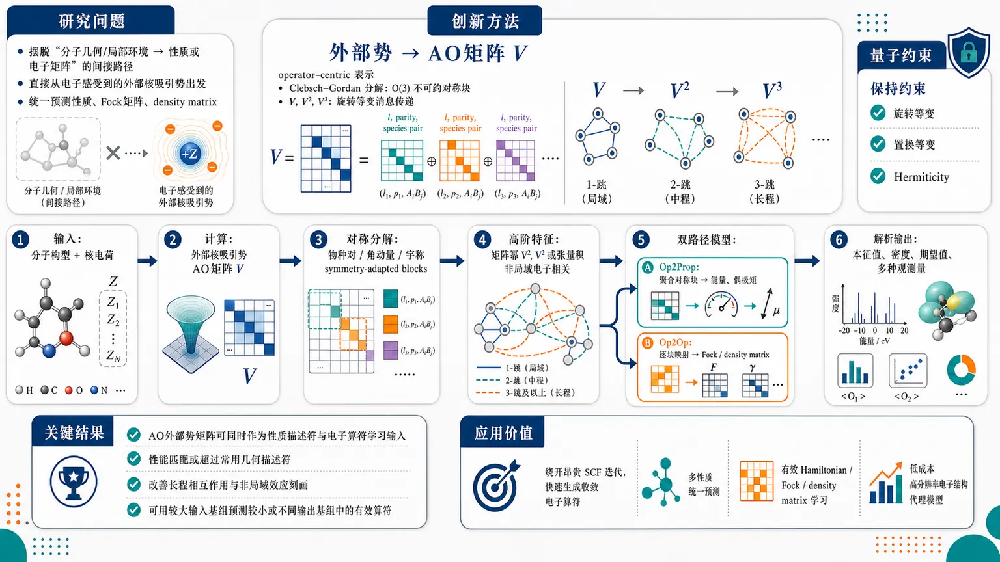
研究问题如何摆脱传统“分子几何图/局部环境 → 性质或电子矩阵”的间接学习路径，直接从电子实际感受到的外部核吸引势出发，统一预测分子性质、Fock 矩阵、density matrix 等电子结构对象，并同时保持旋转等变、置换等变、Hermiticity 等量子算符约束。创新方法将外部核吸引势离散为 AO 基矩阵 V，把 Hohenberg–Kohn 定理中的“外部势决定基态电子结构”转化为可计算的 operator-centric 表示；再用 Clebsch–Gordan 分解把 V 拆成 O(3) 不可约对称块，并通过 V、V²、V³ 等矩阵幂实现可控的旋转等变消息传递：每一次矩阵乘法像沿原子—轨道链路传播一跳信息，显式建模非局域电子相关。工作流程输入分子构型与核电荷 → 计算外部核吸引势 AO 矩阵 V → 按物种对、轨道角动量、宇称分解为 symmetry-adapted blocks → 构造 V 的矩阵幂或张量积高阶特征 → 走 Op2Prop 路径聚合对称块预测能量、偶极矩等性质，或走 Op2Op 路径逐块映射预测 Fock/density matrix → 由预测电子算符解析得到本征值、密度、期望值和多种观测量。关键结果理论与建模结果表明，AO 外部势矩阵既能作为性质预测描述符，也能作为电子算符学习输入；其性能被声明可匹配或超过常用几何描述符，并特别改善长程相互作用与非局域效应的刻画；同一框架可预测能量、偶极矩，并学习 Fock matrix 与 density matrix，还可用较大输入基组预测较小或不同输出基组中的有效电子算符。应用价值为量子化学和原子级模拟提供一种从物理算符而非纯几何结构出发的机器学习范式，可绕开昂贵的自洽场迭代，快速生成收敛电子算符或多种分子性质；适用于多性质统一预测、有效 Hamiltonian/Fock/density matrix 学习、长程相互作用建模，以及以较低成本构建高分辨率电子结构代理模型。第一部分：核心概览 (Overview)
以外部核吸引势的 AO 基矩阵表示作为机器学习输入，建立从量子算符到分子性质、从算符到电子结构算符的统一框架。核心贡献在于把 Hohenberg–Kohn 定理转化为可计算的 operator-centric representation，并证明 外部势矩阵幂可自然实现旋转等变消息传递与非局域相关建模。该框架连接了传统几何描述符、AO 电子结构矩阵学习和等变神经网络，为多性质统一预测与有效电子算符学习提供了新范式。
---
第二部分：结构化快速回顾
《Machine learning of electronic structure and atomistic properties from the external potential》（None，）
背景
电子结构计算仍是原子级模拟的主要瓶颈。既有机器学习方法多从分子几何图或局部原子环境直接预测性质，或预测 Fock matrix、density matrix 等 AO 基电子结构对象。几何输入与高维电子算符输出之间存在复杂非线性映射，尤其在算符学习任务中更突出。
方法
以 external nuclear attraction potential 的 AO 基矩阵 V 作为输入。利用其与目标电子算符共享的旋转对称性、置换等变性、Hermiticity 等结构性质，构建两类模型：Op2Prop 从外部势预测性质；Op2Op 从外部势预测 Fock 或 density matrix。通过 V 的矩阵幂实现可控的等变消息传递，通过 Clebsch–Gordan 分解构造 O(3) 不可约表示块。
结果
可见内容给出理论与建模框架，声明该方法可预测能量、偶极矩，也可学习到 Fock matrix 与 density matrix，并强调外部势表示可匹配或超过常用描述符，尤其可改善长程相互作用刻画。具体数值结果、数据集规模、误差指标与统计显著性未出现在已提供文本中。
讨论
外部势矩阵兼具物理完备性与结构适配性：HK1 保证外部势决定基态电子性质；AO 离散化使其成为与电子结构矩阵同构的输入；矩阵乘法提供非局域信息传播；输入基组与输出基组可解耦，使表示分辨率成为可调超参数。
局限
线性模型表达力有限，无法捕捉自洽电子结构中的全局非线性相关。基于矩阵幂的表示会随幂次增加而更非局域，需控制计算量与感受野。外部势离散化依赖 AO 基组选择，输入分辨率、目标基组与监督方式都会影响可学习性。完整实验局限在已提供文本中不可见。
结论
外部势 AO 矩阵可作为电子结构机器学习的统一输入，兼容性质预测、算符预测、有效算符学习和等变消息传递。该方向把 DFT 的外部势决定性原则与现代等变表示学习结合，为从物理算符而非纯几何结构出发的分子机器学习提供了可扩展路线。
---
第三部分：逐章节冷凝解析 (Section-by-Section Condensing)
Abstract
- External potential replaces geometry as the fundamental input
核心输入从传统的分子几何图、点云或局部环境编码转向 AO 基中的外部核势矩阵。学术动机直接来自 Hohenberg–Kohn theorem：基态电子性质由外部势唯一决定。摘要明确指出，常见方法通常 *"learn a direct map from molecular geometries, typically represented as graphs or encoded local environments, to molecular properties"*，而该框架转向 *"an operator-centric framework in which the external (nuclear) potential, expressed in an AO basis, serves as the model input."*
- AO-discretized external potential connects geometric descriptors and operator learning
外部势并非作为连续实空间场输入，而是以原子轨道基组离散矩阵输入。该矩阵既保留电子结构算符的形式，又能导出类似局部几何描述符的层级体序特征。摘要给出关键定位：*"From this operator, we construct hierarchical, body-ordered representations of atomic configurations that closely mirror the principles underlying several popular atom-centered descriptors."*
- Matrix-valued input naturally supports equivariant message passing
Vₑₓₜ 的矩阵性质使其与等变消息传递网络直接相连。连续矩阵乘积 V, V², V³, ... 可作为非局域信息传播机制。摘要强调：*"the matrix-valued nature of the external potential provides a natural connection to equivariant message-passing neural networks"*，并进一步指出 *"successive products of the external potential provide a scalable route to equivariant message passing and enable an efficient description of nonlocal effects."*
- Unified prediction of properties and electronic operators
同一输入可服务于两类任务：Op2Prop 预测分子性质，如能量与偶极矩；Op2Op 学习电子结构算符，如 Fock matrix。摘要给出范围：*"model molecular properties, such as energies and dipole moments, from the external potential"*，以及 *"learn effective operator-to-operator maps, including mappings to the Fock matrix from which multiple molecular observables can be simultaneously derived."*
---
I Introduction
- Electronic structure calculation remains the computational bottleneck
电子结构计算仍限制原子级模拟规模与效率，机器学习因此被广泛引入量子化学和材料模拟。引言开宗明义：*"Electronic structure calculations remain a major bottleneck in atomistic simulations"*；机器学习的作用被界定为 *"enabling faster and more accurate simulations and providing new approaches to predicting quantum mechanical properties."*
- Existing ML workflows split into property prediction, electronic-structure surrogates, and hybrid QM-ML
既有工作覆盖三类：interatomic potentials、单一性质代理模型、直接学习电子结构对象。列举范围包括 Behler–Parrinello potentials、SOAP/GAP、MACE/NequIP 类模型，以及对偶极矩、激发能、电子密度、Fock matrix、density matrix、density functional 的学习。关键表述为：*"this progress spans the development of accurate interatomic potentials"*，以及 *"models that learn elements of electronic structure directly."*
- Learning electronic operators enables multiple observables within one framework
预测 density matrix、Fock matrix、Hamiltonian 等基础电子结构对象，可从同一对象解析得到多个物理量，而非为每个性质训练一个模型。引言强调：*"By targeting the fundamental ingredients of quantum mechanics, such as self-consistent electronic densities, effective single-particle Hamiltonians, or density matrices, ML models provide a route to unified prediction/optimization of multiple observables within a single framework."*
- Most existing approaches still use geometry as input
即便目标是高维电子结构矩阵，输入仍多为原子图、点云、局部环境。这一设计造成从几何到电子算符的复杂非线性映射。文本指出：*"atomic configurations are commonly represented as graphs or point clouds across these workflows"*，目标既包括 *"energy or dipole moment"*，也包括 *"a converged electronic operator, such as a Fock or density matrix."*
- Geometry-to-operator mapping is difficult for high-dimensional AO outputs
对于 AO 基的电子算符，输出空间维度高、受对称性和代数约束限制，学习难度高。引言中关键问题被表述为：*"they face the challenge of learning complex nonlinear correlations between inputs and outputs, especially in the latter case, where the outputs are high-dimensional matrix representations of quantum operators on a basis."*
- External-potential-based learning follows Hohenberg–Kohn logic
HK 定理保证外部势决定基态电子量与原子性质，因此外部核吸引势可作为比几何更直接的机器学习输入。核心句为：*"Inspired by the Hohenberg–Kohn (HK) theorems... which establish that the external potential uniquely determines ground-state electronic quantities and atomistic properties, we reformulate the learning problem by considering the external (nuclear attraction) potential... as the fundamental input."*
- The framework uses AO discretization instead of continuous potential fields
输入不是连续势场，而是 AO 基离散化矩阵 Vₑₓₜ，简写为 V。该选择使输入天然与 AO 电子结构矩阵对齐。文本明确：*"Rather than operating on the continuous (real-space) potential field, we consider its finite-basis AO discretization, Vₑₓₜ... and learn the map from V to atomistic properties and self-consistent electronic operators."*
- External-potential matrix resembles local descriptors despite being global
外部势矩阵在 AO 基下同时具有全局物理意义和局部稀疏结构，可导出体序特征，与 SOAP、ACE、atom-centered density correlations 等描述符原则相近。引言声明：*"V is structurally similar to several commonly used geometric descriptors, allowing a hierarchy of body-ordered features to be derived from it."*
- Two model classes define the framework: Op2Prop and Op2Op
Op2Prop 从外部势到分子性质；Op2Op 从外部势到电子结构算符。该分类直接给出：*"We refer to the model types as Operator-to-Property (Op2Prop) and Operator-to-Operator (Op2Op) respectively."*
- Op2Op benefits from shared structure between input and target operators
对算符预测而言，输入 V 与目标 Fock/density matrix 都是 AO 基单粒子算符矩阵，共享旋转对称性、Hermiticity 等结构。文本强调：*"V naturally shares structural properties with the target operators, including rotational symmetry and algebraic constraints such as Hermiticity."*
- Prior external-potential-to-density models lack broad stoichiometric transfer and explicit constraints
已有 kernel-based 外部势到 density matrix 工作在小数据下精度高，但通常限于相似化学计量体系，且不显式保证旋转、置换、Hermiticity 等约束。引言评价为：*"these models achieve remarkable accuracy in small-data regimes"*，但 *"they are restricted to systems of similar stoichiometry and do not explicitly enforce the algebraic relations and constraints that characterize the targets, such as rotation and permutation symmetries, Hermiticity."*
- Input AO basis is a tunable hyperparameter independent of target basis
外部势的 AO 基不必等于参考计算或目标算符的 AO 基，可把输入电子分辨率作为模型超参数。关键表述：*"the AO basis used to discretize the input external potential matrix need not match the basis in which the target electronic operators are expressed, and instead can be treated as a tunable model hyperparameter."*
- Effective Op2Op can be supervised through observables rather than matrix elements
Op2Op 不必逐元素拟合参考矩阵，也可学习较小基组上的有效算符，只通过本征值、期望值、物理观测量监督。文本定义：*"the model can either optimize its matrix elements in a specified basis, or infer an effective operator that reproduces a prescribed set of reference observables"*；后一种被称为 *"effective Op2Op"*，其约束来自 *"physical quantities, such as eigenvalues... or expectation values of selected operators, rather than the reference matrix elements themselves."*
- Stated empirical aims include property prediction, long-range interactions, and operator learning
引言最后给出验证路径：先建立理论，再比较性质预测性能，再学习 Fock/density matrices，并考察基组分辨率、模型架构、监督策略。关键句为：*"we first develop the theoretical framework"*，随后 *"present examples illustrating that V matches or exceeds the performance of established descriptors for property prediction and can overcome their limitation in describing long-range interactions"*，最后 *"use V to learn electronic operators (Fock and density matrices)."*
---
Figure 1
- One QM calculation yields reference properties, electronic matrices, and external potential
每个分子构型 A 的参考数据来自 AO 基 B_y 中的量子力学计算，产生目标性质、Fock/density 等矩阵 M，以及外部势矩阵 V。图注说明：*"For each molecular configuration, A, we aim to predict target properties whose reference values are computed using a quantum mechanical (QM) calculation... in an AO basis set B_y."*
- Op2Prop treats V as a symmetry-adapted representation for property prediction
绿色路径使用 V 直接预测性质，强调其物理含义与对称适配性。图注原句：*"V can serve as a physically meaningful, naturally symmetry-adapted representation from which target properties may be predicted Op2Prop."*
- Op2Op predicts electronic matrices from which multiple observables can be derived
深蓝路径不局限于单一性质，而是预测 M，随后通过解析操作得到多种性质。图注明确：*"Op2Op models... can map V to M in the target B_y basis, from which properties of interest may be derived through simple analytic operations."*
- Input potential basis can be richer than reference basis
红色虚线路径表示输入 V 可在更丰富基组 B_V 中计算，而不局限于参考计算基组。图注写道：*"Instead of restricting V to the basis of reference calculation, we treat it as a tunable hyperparameter and instead use as input, V computed in a richer basis set B_V."*
- Effective operator learning compresses QM information into smaller basis
青色路径学习较小基组 B_M 中的有效算符，目标是复现高层级或大基组计算产生的观测量。图注指出：*"one can predict a compressed effective representation of the operator on a (usually smaller) basis set B_M, which learns an effective projection of the QM calculation on a reduced basis."*
---
II Theory and methods
- External potential is restricted to nuclear attraction potential
对原子构型 A = Rᵢ, Zᵢ，外部势定义为所有原子核库仑吸引势之和：
[
hat V(A)=sumₐᵢₙ Afrac-Zₐ|mathbf r-mathbf Rₐ|
]
文本明确限定：*"Throughout this work, we restrict our attention to this special case of the external potential."*
- AO matrix elements encode nuclear attraction integrals over orbital pairs
外部势矩阵元由两个 AO 基函数与核势积分给出：
[
Vαβ(Aᵢⱼ)=sumₐᵢₙ A-Zₐᵢₙₜ
frac{ḩi_α^*(mathbf r-mathbf Rᵢ₎ḩi_β(mathbf r-mathbf Rⱼ₎}
|mathbf r-mathbf Rₐ|dmathbf r
]
其含义为 AO α、β 分别位于原子 i、j 上的势算符投影。文本说明：*"these matrix elements correspond to the projection of V for a structure A on basis functions α and β respectively centered on atoms i and j."*
- HK1 provides the formal justification for V-to-property and V-to-operator learning
对固定粒子数和非简并基态，第一 HK 定理保证外部势唯一决定多体基态波函数及全部基态观测量。关键表述：*"For a fixed particle number and a nondegenerate ground state, the first HK theorem (HK1) guarantees that the external potential uniquely determines the many-body ground state wavefunction, and therefore all ground state observables."*
- Fock matrix and one-particle density matrix can be treated as functionals of external potential
虽然 HK1 常被表述为外部势与电子密度的一一对应，但其含义更广：Fock matrix 与 1-RDM 也可视为外部势的泛函。文本强调：*"it implies that both ground state properties and one-particle operators, including the Fock matrix and the one-particle reduced density matrix, can be expressed as functionals of the external potential."*
- Two complementary strategies share the same symmetry-adapted input
同一 V 输入支持 Op2Prop 与 Op2Op。前者目标为性质 y，后者目标为电子结构矩阵 M。文本说明：*"we use the matrix elements of V as inputs to two complementary modeling strategies that share the same symmetry-adapted external potential inputs but differ in targets."*
- HK1 applies beyond nuclear potentials
虽然此处只研究核吸引势，HK1 同样适用于非纯核标量势，可包括外场或微扰。文本指出：*"HK1 need not be limited to the nuclear potential we consider... but also applies to scalar potentials that are not purely nuclear contributions and may account for additional fields or perturbations."*
- HK2 motivates effective Op2Op through observable-level supervision
第二 HK 定理提供密度能量泛函的变分原则。此处不显式构造能量泛函，但以其精神训练有效算符，使其复现 QM 参考观测量。文本说明：*"While we do not explicitly construct such an energy functional, we invoke its spirit in effective Op2Op models... trained to reproduce reference observables from the underlying ground state QM calculation."*
---
Local descriptors from V
- AO locality makes the global external potential matrix sparse
虽然核势是全局算符，但在局域 AO 基中，矩阵表示受空间局部核相互作用主导，随原子间距快速衰减。文本指出：*"Although the nuclear potential is a global operator... in a localized atomic orbital basis, this representation is sparse and dominated by contributions from spatially local nuclear interactions."* 进一步说明：*"Matrix elements decay rapidly with the separation of the atoms on which basis functions are centered."*
- Explicit cutoff can impose stricter locality
除了轨道衰减带来的自然稀疏性，还可人为把原子对距离超过 r_cut 的矩阵元置零。文本写道：*"a stricter notion of locality can be explicitly imposed, for example, by setting matrix elements associated with orbital pairs separated by distances rᵢⱼ > r_cut to zero if desired."*
- AO basis controls radial and angular resolution like geometric descriptors
外部势矩阵的表达能力由 AO 基的径向函数与角动量通道决定，类似 SOAP、ACE、atom-centered density descriptors 的径向/角向分辨率调参。文本说明：*"The choice of AO basis set controls the radial and angular resolution, closely paralleling the construction and tunability of local geometric descriptors."*
- Input basis can be chosen independently from reference calculation basis
即便目标性质或目标算符来自另一基组，输入 V 的基组仍可独立选择。文本给出原则：*"the basis used for V can be chosen independently and treated as a tunable hyperparameter."*
- Larger input basis increases expressivity at low computational cost
更大 AO 输入基组提供更高空间分辨率，但计算只需非自洽单电子积分，因此成本相对低。关键句：*"Using a larger basis for the input operator provides additional spatial resolution of the potential, and therefore more expressive features for learning, while remaining computationally inexpensive since V requires only non-self-consistent one-electron integral evaluations."*
- Each V matrix element corresponds to a three-body correlation
单个矩阵元连接原子对 (i,j) 上的两个轨道，并求和所有核 a 的贡献，因此等价于以原子对为中心的一邻居相关，形成三体信息。文本明确：*"Each matrix element Vαβ(Aᵢⱼ₎ encodes one-neighbor correlations around the atom pair (i,j), corresponding to a three-body interaction."*
---
Euclidean symmetries of AO representations
- AO matrices transform covariantly under rotations
任意 AO 基单粒子算符矩阵 M 在旋转下满足：
[
M(hat R A)=D(hat R)M(A)D(hat R)^dagger
]
文本给出通用表达：*"A single-particle operator expressed in an atom-centered basis M transforms under rotations R of the associated structure as M(RA)=D(R)M(A)D(R)†."*
- The same rotational law applies to V, H, and P
外部势矩阵、电子 Hamiltonian、density matrix 都服从相同 AO 旋转变换规则。文本明确：*"This transformation holds when M corresponds to the external potential V, as well as when it represents the electronic Hamiltonian H or the density matrix P."*
- Chemical species are part of the orbital block label
轨道标签不仅包括 n,l，还包括原子类型 Z，因为不同元素上的同名轨道物理上不同。文本举例：*"we use the chemical species to label the orbitals and distinguish orbitals with the same (n,l) quantum numbers on different atom types"*；例如 *"a 1s orbital on carbon is functionally distinct from a 1s orbital on hydrogen."*
- Clebsch–Gordan decomposition converts AO matrix blocks into irreducible O(3) components
通过 Clebsch–Gordan 系数把两个 AO 角动量 lᵢ, lⱼ 耦合为不可约表示 λ，范围为 (|lᵢ₋ₗⱼ|,łdots,lᵢ₊ₗⱼ)，并附带反演宇称 σ。公式：
[
Mb,łambdaσ_μ(Aᵢⱼ)=
sumₘ_ᵢ ₘ_ⱼ
łangle lᵢ mᵢ;lⱼ mⱼ|łambdaμångle
M^bₘ_ᵢ ₘ_ⱼ(Aᵢⱼ)
δ_σ,(-1)lᵢ₊ₗⱼ₊łambda
]
文本说明 σ 的含义：*"σ denotes inversion parity, i.e., whether the resulting irrep behaves as a polar or pseudotensor under spatial inversion."*
- Permutation equivariance requires symmetric and antisymmetric combinations
对同种原子的标签置换不改变物理结构，但矩阵元因有序原子对环境不同而一般不相同。文本指出：*"matrix elements transform equivariantly under permutations of atom-labels of identical chemical species"*，并强调 Aᵢⱼ 与 Aⱼᵢ 可不同：*"are, in general, distinct... since they depend on the local environments associated with the ordered atom pair."*
- Permutation consistency is enforced by irreducible symmetric/antisymmetric combinations
通过构造 (η_π=±1) 的对称与反对称组合保证置换等变性。文本写道：*"We enforce this consistency by constructing symmetric and antisymmetric combinations... that transform equivariantly under permutations."*
---
Algebraic/physical constraints of targets
- Property targets obey symmetry-only constraints
对 Op2Prop，能量是旋转不变量，偶极矩是极向量。文本给出具体 irrep：*"energies are rotational invariants (scalar, λ = 0, σ = 1), while dipole moments transform as polar vectors (λ = 1, σ = 1)."*
- Electronic matrix targets must also satisfy algebraic constraints
对 Op2Op，除旋转与置换对称性，还必须满足 Hermiticity。由于采用实 AO 基，矩阵甚至是实对称矩阵。文本明确：*"all the electronic matrices considered in this work (including V) are Hermitian (even symmetric, as the basis functions are real-valued), that is, M = M^T."*
- Hermiticity guarantees real eigenvalue spectra for Hamiltonian
电子 Hamiltonian H 满足广义本征值问题：
[
HC=S C øperatornamediagϵ
]
其中 S 是非正交 AO 重叠矩阵，C 是 MO 系数。文本说明：*"Hermiticity ensures a real eigenvalue spectrum obtained through the generalized eigenvalue equation."*
- Molecular orbitals satisfy S-orthonormality
非正交 AO 基下，MO 系数满足：
[
C^dagger S C = 1
]
文本原句：*"The eigenvectors C, on the other hand, satisfy the condition C†SC = 1."*
- Density matrix is built from occupied molecular orbitals
单粒子密度矩阵由 MO 占据数构造：
[
P=Cøperatornamediag(f)C^dagger
]
其中 (fin0,1)。文本表述为：*"The single-particle density matrix is first constructed as P = C diag(f) C† with f ∈ 0,1 denoting the occupation of each MO."*
- Density matrix lies on a Grassmannian manifold due to idempotency
密度矩阵满足非正交基下的幂等关系：
[
PSP=2P
]
该约束表明其不是任意对称矩阵，而位于 Grassmannian manifold。文本指出：*"the density matrix satisfies the idempotency relation PSP = 2P... and lies on a Grassmannian manifold."*
- Observables are recovered as traces over density and operator matrices
若物理观测量对应算符 O，则可由密度矩阵计算为：
[
øperatornameTr(PO)
]
文本明确：*"Observables corresponding to an operator O can then be computed as Tr(PO)."*
- Predicting converged H or P bypasses SCF iterations
平均场电子结构计算需要自洽求解广义本征值问题，因为 H 依赖 C。该框架直接预测收敛后的 H 或 P，绕开自洽迭代主成本。文本写道：*"we focus on predicting the converged solutions (H or P), thereby bypassing the iterative self-consistent procedure that constitutes the main computational cost of conventional mean-field methods."*
- Self-consistency imposes vanishing commutator constraint
收敛平均场解要求 H 与 P 对易，即 ([H,P]=0)。文本指出：*"This imposes the additional algebraic constraint that the commutator [H,P] be identically zero."*
- Notation separates chemistry, basis features, and symmetry indices
后续用 (γ=(ZᵢZⱼ,łambdaσ)) 表示化学种类对与对称类型，用 q 表示基组标签 ((nᵢ lᵢ nⱼ lⱼ₎)。文本说明：*"to clearly separate chemical elements, AO basis discretization and the O(3) symmetry indices... γ denotes the tuple of chemical species of the pair and the symmetry... and q indexes the basis labels."*
---
II.1 Linear models
- Linear Op2Op maps each input irrep block to the corresponding output irrep block
最简单模型利用输入 V 与目标 M 共享的 O(3) 不可约表示结构，逐块线性映射。文本说明：*"we consider linear models that leverage the shared structure of the inputs and outputs, and map each irrep of the input to the corresponding irrep of the output."*
- Example: H2O uses richer input basis than target basis
示例中，水分子 H₂O 的输入 V 用 def2-SVP 基组表示，目标 H 用更小的 STO-3G 基组表示。文本给出具体例子：*"Consider, for example, an H2O molecule, for which we represent V in the def2-SVP basis and the target H in the smaller STO-3G basis."*
- Oxygen invariant block in STO-3G has limited orbital-pair contributions
目标 H 中氧-氧不变量块 (γ=(8,8,0,1)) 的 orbital-pair 特征包括：
[
qin(1s,1s),(1s,2s),(2s,2s),(2p,2p)
]
文本原句：*"The invariant matrix elements associated with orbitals on the oxygen atom, γ = (8,8,0,1) in H receive contributions from pairs of orbitals q ∈ (1s,1s),(1s,2s),(2s,2s),(2p,2p)."*
- The same V block is richer in def2-SVP
输入 V 的相同 symmetry/species block 包含更高径向和角动量通道，如 (3p,3p)、(3d,3d)。文本指出：*"The same block... in the input external potential is significantly richer as basis pairs corresponding to higher angular and radial quantum numbers, such as (3p,3p), (3d,3d) contribute to this block."*
- Linear ansatz uses block-specific weights
线性模型形式为：
[
Mγq,μ(Aᵢⱼ)=
w⁽γ⁾qq'V^γq',μ(Aᵢⱼ)
]
权重只在同一 species/symmetry block 内作用。文本说明：*"w are block specific weights... that act independently within each species and symmetry block."*
- Input feature dimension usually exceeds output feature dimension
因为输入基组常大于目标基组，输入 q′ 的维度通常更高。文本指出：*"the basis used to represent V is usually larger than that used for the target operator, so the dimensionality of the input feature q′ is generally larger than the output index q."*
- Linear models exactly preserve symmetry but lack nonlinear expressivity
线性模型按构造严格保留对称性，但无法捕捉不同 species 通道、不同 atom-pair 之间的全局非线性自洽耦合。文本强调：*"these models perfectly preserve the symmetry constraints by construction"*，但 *"remain limited in expressivity as the linear dependence on blocks of V does not capture the global, nonlinear interactions."*
- Linear models clarify roles of symmetry, basis resolution, and block structure
其价值在于概念基线，而非最终表达力。文本表述：*"linear models are valuable as a conceptual starting point, as they delineate the roles of symmetry, basis resolution, and block structure transparently."*
- Op2Prop linear models aggregate symmetry-matched V blocks over atom pairs
对性质预测，目标 irrep ((łambda,σ)) 从对应 symmetry block 的 V 聚合得到：
[
yłambdaσμ(A)
=
sum_γsumᵢⱼᵢₙ A
w_q⁽γ⁾V^γq,μ(Aᵢⱼ)
]
文本说明：*"each symmetry irrep of target property y can be predicted from the corresponding symmetry-adapted block of V."*
- Op2Prop is property-specific and cannot derive arbitrary observables
性质模型只输出某个指定性质，不能像电子算符那样产生多个观测量。文本明确：*"as these models are property-specific, they can not be used to derive other observables of interest."*
- Op2Prop can be viewed as a special case of Op2Op
通过限制输出 irrep 并对输入块聚合，Op2Prop 可被视为 Op2Op 的特例。文本指出：*"Op2Prop models can be viewed as a special case of Op2Op models by restricting the output irreps and aggregating over appropriate input blocks."*
---
Figure 2
- AO matrices are decomposed into O(3) symmetry-adapted blocks
图 2 展示了 AO 矩阵如何按角动量 λ 与宇称 σ 拆分为不可约表示块。图注说明：*"both the input external potential V and output matrices M are decomposed into irreducible representations (irreps) of O(3), indexed by angular momentum λ and parity σ."*
- Species-pair blocks contain multiple atom-pair instances
对物种对 (O,H)，块中包括 (O,H₁) 与 (O,H₂)；对 (H,H)，包括 (H₁,H₁)、(H₁,H₂)、(H₂,H₂)。图注给出具体枚举：*"for the species pair (O,H), contributions arise from the atom pairs (O,H1) and (O,H2), while for the species pair (H,H)... (H1,H1), (H1,H2) and (H2,H2)."*
- Multiplicity of irreps depends on angular momentum coupling
每个 species pair 下，每个 irrep 的 multiplicity 取决于 orbital pairs 可耦合出的 symmetry block。图注写道：*"the multiplicity of each irrep depends on the orbital pairs that can contribute to the symmetry block, as determined by angular momentum coupling."*
- Linear Op2Op performs blockwise equivariant mapping
图中蓝色路径表示每个输入 irrep block 到对应输出 irrep block 的线性映射。图注概括：*"A linear model maps each irrep block of the input to the corresponding irrep block of the output, with block-specific weights."*
- Op2Prop sums over atom pairs and concatenates species blocks
图中绿色路径表示对外部势 symmetry blocks 在所有 atom pairs 上求和，并拼接 species blocks 形成结构级特征。图注说明：*"symmetry-adapted blocks of the external potential are summed over all atom pairs and species blocks are concatenated to produce structure-level features for property prediction."*
---
II.2 Matrix products and message-passing
- Polynomial expansion approximates nonlinear dependence on V
为逼近电子结构对外部势的非线性泛函依赖，使用截断多项式：
[
M=f(V)approx w₁V+w₂V²⁺ḑots=sumκ₌₁κₘₐₓw_κ V^κ
]
文本写道：*"To approximate the nonlinear dependence of the target on the external potential, we consider truncated polynomial expansions."*
- Expansion order controls model expressivity
最大幂次 (κₘₐₓ) 是模型表达力超参数。文本说明：*"the expansion order κₘₐₓ... controls the expressivity of the model."*
- Matrix powers introduce cross-block couplings absent in linear models
矩阵乘法自动混合不同轨道、不同原子标签，因此可捕捉线性 blockwise 模型缺失的耦合。文本给出第一动机：*"the powers of V systematically introduce cross-block couplings, since matrix multiplication naturally mixes elements corresponding to different orbital and atom labels."*
- Matrix products preserve rotational equivariance
若 (M→ DMD^dagger)，则 (M²→ DM²D^dagger)，所有矩阵幂都按同一规律变换。文本强调：*"Although it may seem counterintuitive, products of matrices in the AO basis transform equivariantly themselves."* 结论为：*"M^κ undergoes the same transformation as M and thus can be similarly decomposed into irreducible blocks."*
- Input and output bases still need not match
即使使用 V 的矩阵幂，实际模型仍是把 (V^κ) 的 symmetry-adapted blocks 线性映射到目标 M 的 blocks，因此输入/输出基组可不同。文本说明：*"the input V and M do not need to share the same AO basis, since in practice we do not map matrices to matrices, but linearly map blocks of M to the symmetry-adapted blocks obtained from each power of V."*
- Polynomial Op2Op concatenates blocks from V, V², ...
模型形式为：
[
M^γq,μ(Aᵢⱼ)
=
sumκ₌₁κₘₐₓ
w⁽γ,κ⁾qq'
(V^κ)^γq'μ(Aᵢⱼ)
]
也等价于对 (V^γøplus (V²⁾^γøplusḑots) 做单个线性映射。文本写道：*"which is also equivalent to a single linear map on the concatenation of all the blocks."*
- Repeated matrix multiplication delocalizes the representation
随着幂次增加，信息通过多个轨道与原子中心传播，表示变得更非局域，但维度不增加。文本指出：*"repeated matrix multiplication can lead to more delocalized representations of the input as information is propagated across multiple orbitals and atomic centers... without increasing its dimensionality."*
- Matrix products implement message passing
每次矩阵乘法都会对中间原子和轨道指标求和，等价于一次消息传递。文本直接表述：*"This delocalization arises naturally as matrix products implement message passing."* 机制为：*"Each matrix multiplication introduces a sum over intermediate atomic and orbital indices, thereby propagating information through successive symmetry-adapted matrix blocks."*
- V acts like an equivariant adjacency matrix
在图卷积网络中，邻接矩阵幂传播节点信息；此处 V 类似 adjacency matrix，但携带旋转等变结构。文本类比：*"V plays an analogous role to the adjacency matrix, but with the distinction that it is rotationally equivariant, and thus enables symmetry-aware message passing."*
- Matrix powers encode multi-step atomic-chain correlations
(V^κ) 对应通过原子链传播的多步相关，可系统控制非局域范围。文本说明：*"Successive matrix powers can be similarly understood as correlations mediated through a chain of atoms over which information is contracted, directly mimicking multi-step message passing on an atomic graph."*
- Difference from matrix function neural networks
MFNNs 从局部节点特征学习 Hermitian 等变矩阵，再施加可学习矩阵函数；其矩阵函数相当于无限幂级数。该框架中每个矩阵幂对应明确消息传递步。文本比较：*"MFNNs... rely on a mechanism of nonlocal information propagation similar to our work"*，但 *"each matrix product corresponds to a distinct message-passing step in our framework, making the range of nonlocal correlations explicit and systematically controllable."*
---
II.3 Hierarchical correlation features from AO basis matrices
- Tensor products provide an alternative to matrix powers for increasing expressivity
除矩阵幂外，还可通过 symmetry-adapted blocks 的张量积构造更高阶特征，类似 atom-centered descriptors 与等变 MPNNs 中的层级体序展开。文本开头说明：*"An alternative route to increase the expressive capacity of the input V is to generalize matrix products and construct higher-order features using tensor products of symmetry-adapted blocks."*
- AO matrix symmetrization parallels atom-density descriptor symmetrization
AO 算符展开系数从原始矩阵元转化为 symmetry-adapted coefficients 的过程，与 SOAP/ACE 等原子密度展开的对称化过程相似。文本指出：*"the symmetrization of matrix elements... closely parallels the symmetrization of widely adopted atom-density expansions."*
- Second-order tensor features couple two V irreps using Clebsch–Gordan coefficients
二阶相关定义为：
[
(Vøtⁱmes ²)^Γq_₁q_₂,M
=
sumμ_₁μ_₂
łangle łambda₁μ₁;łambda₂μ₂|Łambda Mångle
Vγ₁q_₁,μ_₁
Vγ₂q_₂,μ_₂
]
文本写道：*"second-order correlations of V can be constructed as"*，随后给出该 Clebsch–Gordan 耦合公式。
- Composite block labels include four species and total symmetry
二阶张量积块标签为：
[
Γ=(Z₁Z₂Z₃Z₄,Łambda S)
]
其中 (Łambdain|łambda₁₋łambda₂|,łdots,łambda₁₊łambda₂)，(Sin-1,1)。文本说明：*"the label Γ = (Z1 Z2 Z3 Z4, Λ S) specifies the species, total angular momentum (Λ) and parity (S)."*
- Tensor products expand both AO feature dimensions and atomic index dimensions
(Vøtimes V) 不仅增加 AO 特征维度，也扩展原子中心组合。文本指出：*"Formally, this corresponds to computing the tensor product V ⊗ V, thus expanding both along the AO index dimension, as well as the atom indices."*
- Second-order tensor features depend on four atomic centers
由于右侧包含 (V(Aᵢⱼ)) 与 (V(Aᵢ'ⱼ'))，所得特征依赖 i, j, i′, j′ 四个原子中心，而非原始矩阵元的两中心结构。文本明确：*"the features resulting from (15) depend on four atomic centers i j i′ j′, in contrast to the two-center nature of the original matrix elements."*
- Provided text cuts off before completion of this section
可见内容终止于 *"and may be used to approximate two-electron ope"*，因此该节关于二电子算符近似、后续算法设计、实验结果与数值验证未完整呈现。
---
第四部分：深度理解与语言支持 (Understanding & Nuance)
1. 术语解析
- External potential
语境中具体指核吸引势：
[
hat V(A)=sumₐ -Zₐ/|mathbf r-mathbf Rₐ|
]
不是广义环境势或任意标量场。学术微妙点在于：DFT 中的 external potential 是决定基态电子结构的“输入条件”，而此处把它从理论对象变成机器学习输入矩阵。原文使用 *"external (nuclear attraction) potential"*，括号中的 nuclear attraction 限定了物理来源。
- Operator-centric framework
不是从坐标、图或局部环境出发，而是从量子力学算符的 AO 矩阵表示出发。centric 强调“中心对象”的转换：几何不再是主输入，外部势算符成为主输入。该表达对应原文 *"an operator-centric framework in which the external... potential... serves as the model input."*
- Body-ordered representations
指按涉及原子数组织的特征层级：二体、三体、四体等。这里单个 (Vᵢⱼ) 虽然是两个 AO 中心 i,j 的矩阵元，但还对核 a 求和，因此对应围绕原子对的一邻居相关，即三体结构。高阶张量积 (Vøtimes V) 可产生四中心相关。
- Equivariant message passing
等变消息传递要求输入结构旋转后，内部特征和输出按确定的群表示一起旋转，而不是保持不变。这里 (V) 类似图邻接矩阵，但矩阵元素携带角动量通道，因此 (V²,V³) 传播信息时仍保持 O(3) 等变性。区别于普通 graph convolution 的标量邻接传播。
- Effective Op2Op
指学习一个可能位于较小基组中的有效电子算符，不要求逐元素等于高精度参考矩阵，只要求其本征值、期望值或性质与参考计算一致。effective 的微妙含义是“投影后在目标观测量层面有效”，不是“真实 AO 矩阵逐元素精确”。
---
2. 疑难查证
- 为什么外部势比几何输入更接近电子结构？
几何 (Rᵢ,Zᵢ) 可以生成核势 (hat V)，而 HK1 说明在固定电子数和非简并基态下，(hat V) 唯一决定基态波函数、密度和所有观测量。几何到性质的学习需要模型自己学会“原子核如何产生电子势场”；外部势输入则直接提供电子感受到的单粒子势。AO 矩阵化后，输入已经处在电子结构计算使用的函数空间中，因此与 Fock/density matrix 目标更同构。
- 为什么 (V²) 不是破坏等变性的普通非线性？
若旋转作用为 (Vmapsto DVD^dagger)，则：
[
V²mapsto (DVD^dagger)(DVD^dagger)=DV(D^dagger D)VD^dagger=DV²D^dagger
]
因为 (D^dagger D=I)，矩阵乘法保持同样的变换律。因此 (V²,V³,łdots) 都是合法等变特征。普通逐元素非线性不一定满足这种群作用兼容性，尤其对高阶张量/矩阵 AO 表示更危险。
- 矩阵幂为什么等价于消息传递？
矩阵乘法：
[
(V²⁾ᵢα,ⱼβ=sumₖγVᵢα,ₖγVₖγ,ⱼβ
]
表示从 ((i,α)) 到 ((j,β)) 的信息通过中间原子轨道 ((k,γ)) 传播一次。(V³) 则通过两个中间节点传播。与图神经网络中 (A²,A³) 表示二跳、三跳邻域相同，但这里边权是 AO 算符矩阵元，且携带旋转等变结构。
- 为什么输入基组和输出基组可以不同？
模型并不是执行严格的线性代数基变换 (V→ M)，而是把输入 (V) 分解为 symmetry blocks，再学习这些 blocks 到目标 blocks 的映射。输入基组越大，外部势被采样得越细；输出基组可较小，用于表示目标 Fock/density matrix。类似图模型中可以用更高径向/角向分辨率的描述符预测较低维性质。
- Hermiticity、idempotency 和 commutator 约束有什么区别？
Hermiticity 保证电子算符本征值为实数；density matrix idempotency 保证其对应某个占据子空间，而非任意实对称矩阵；[H,P]=0 表示密度矩阵由 Hamiltonian 的本征轨道构造，二者共享本征空间，是自洽平均场解的核心条件。三者分别约束矩阵的谱性质、几何流形位置和自洽一致性。
---
第五部分：创新评估与关联 (Synthesis & Novelty)
1. 创新性判断
- 从 geometry-centric 到 operator-centric 的输入范式转换
过去 2–5 年大量电子结构 ML 工作仍以原子图、局部环境、点云为输入，再预测 Fock matrix、Hamiltonian、density matrix 或能量。该框架把输入前移到 external potential in AO basis，以 HK1 提供理论闭合性。新颖性不只是“加入一个电子特征”，而是把外部势作为统一输入对象，并让其承担几何描述符、电子结构输入和消息传递载体三重角色。
- 把外部势矩阵与 O(3) 等变 AO 算符学习系统连接
既有 kernel 方法已探索从外部势矩阵到 density matrix，但多限于固定化学计量体系、小数据 regime，且缺乏显式 symmetry/algebra constraints。该框架显式处理旋转等变、置换等变、Hermiticity，并把 AO blocks 进行 Clebsch–Gordan 不可约分解，适合不同化学组成与电子算符目标。
- 提出矩阵幂作为可控等变消息传递机制
现代等变 MPNN 通常从局部几何边特征和节点特征学习消息。这里直接使用 V, V², ..., V^κ 实现消息传递，每个幂次对应明确传播步数与非局域范围。相较 MFNN 的隐式无限矩阵函数，该方法的非局域相关范围由 (κₘₐₓ) 显式控制。
- 解耦输入电子分辨率与输出电子分辨率
输入 V 可在更大 AO 基组中计算，目标 M 可在较小或不同基组中表达。这解决了传统算符学习中“输入几何分辨率”和“输出 AO 基维度”耦合不清的问题，也为高分辨率势场采样、低维有效算符预测提供路径。
- 引入 effective Op2Op 的监督思想
不再局限逐矩阵元拟合 Fock/density matrix，而可通过本征值、期望值、性质等物理观测量监督有效算符。这有助于避免 AO 矩阵逐元素误差与物理性质误差不一致的问题，也允许用较小基组学习高层级理论的有效投影。
- 以 AO 外部势重构体序描述符体系
单个 (Vᵢⱼ) 对应三体相关，(Vøtimes V) 可形成四中心相关，矩阵幂形成链式非局域相关。这把 SOAP/ACE 式体序展开与电子结构 AO 算符表示统一起来，解决了传统几何描述符难以天然连接 Fock/density matrix 结构的问题。
- 面向前人未充分解决的问题
主要解决四类问题：
- 几何输入到电子算符输出之间的复杂非线性映射缺乏物理中间结构；
- 外部势到电子矩阵的 kernel 方法缺乏显式对称性和跨化学组成扩展能力；
- 常规局部描述符难以系统控制长程/非局域电子效应；
- 单性质模型无法统一派生多个电子观测量。
该框架用 AO external potential + symmetry-adapted blocks + matrix-power message passing + Op2Op/effective Op2Op 给出统一解决方案。
-
08
📊 含图深析
📄 摘要：用主动学习构建铈氢化物的原子间势，处理其随氢含量变化而出现的晶格收缩与致密化。该路线面向化学计量难以精确控制、且从头算成本过高的场景，支持研究成分依赖的结构与性质。
💡 亮点：主动学习势把铈氢化物的化学计量效应拉进可计算尺度。可直接追踪氢含量驱动的晶格收缩与致密化。
📖 展开分析 + 配图
研究问题铈氢化物 CeHₓ 在不同氢含量下会发生怎样的结构变化与性质演化；如何突破第一性原理计算只能处理小体系、少数组分点的限制，系统描绘“氢含量—晶格结构—材料性质”的关系图谱。创新方法用主动学习自动挑选最有信息量的 Ce-H 原子构型，迭代训练面向 CeHₓ 的原子间势；核心 Aha 点是把昂贵的第一性原理精度压缩进可快速调用的势函数中，使宽氢含量、大尺度结构扫描成为可能。工作流程输入不同化学计量比的 CeHₓ 候选结构与原子构型；通过主动学习识别高不确定性样本并补充第一性原理计算数据；迭代训练 Ce-H 原子间势；用训练好的势函数进行大规模模拟；输出随氢含量变化的晶格收缩、结构致密化和相关性质趋势。关键结果获得了一个适用于铈氢化物 CeHₓ 的主动学习原子间势；该势能够在比常规第一性原理更大的体系和更宽的氢含量范围内探索结构性质；研究指出氢含量升高与晶格收缩、结构致密化相关，但摘要未给出具体误差、相变数值或定量性能提升。应用价值为铈氢化物储氢、金属氢化物相稳定性和含氢材料设计提供高效模拟工具；可用于快速筛选不同氢含量下的结构状态，辅助理解实验中难以精确控氢和直接观测的微观演化过程。核心概览
该论文属于铈氢化物材料模拟与机器学习势函数方向，利用主动学习构建 CeHx 原子间势，以研究氢化学计量变化对晶格收缩、致密化及结构性质的影响。
方法要点
- 针对 CeHx 中氢含量难以精确控制的问题，采用计算模拟研究其化学计量依赖性质。
- 利用主动学习策略构建铈氢化物体系的原子间势。
- 该势函数以第一性原理数据或约束为训练基础，摘要未详述具体训练集、模型形式或主动学习流程。
- 借助所构建势函数开展比从头算更大体系、更长时间尺度的模拟。
- 重点分析氢化学计量变化引起的晶格收缩、致密化及相关结构性质。
关键结果
- 成功构建了适用于铈氢化物 CeHx 的主动学习原子间势。
- 该势在保持第一性原理训练约束的同时，可支持更大尺度和更长时间尺度模拟。
- 研究表明 CeHx 的晶格收缩、致密化及结构性质与氢化学计量变化相关。
- 摘要未详述具体收缩幅度、密度变化数值、结构相变行为或误差指标。
创新性判断
- 可能的新颖点在于将主动学习原子间势应用于 CeHx 体系，以弥补从头算难以覆盖大尺度性质的限制。
- 该工作可能强调“氢化学计量依赖”的系统性模拟，而不仅是固定组成铈氢化物的性质计算。
- 相比传统第一性原理研究，其潜在优势是兼顾接近第一性原理的精度与大规模动力学模拟能力。
- 但具体相对已有铈氢化物势函数、机器学习势或实验研究的创新幅度，摘要未详述，无法做确定判断。
-
09
📊 含图深析
📄 摘要：面向氧还原反应，利用机器学习指导连通Pt-Ni纳米颗粒的表面应变工程，围绕活性位点优化与结构—性能耦合展开，以提升催化表现。
💡 亮点：机器学习把表面应变直接对准氧还原活性位点。连通Pt-Ni纳米颗粒因此成为可计算设计的催化平台。
📖 展开分析 + 配图
研究问题如何通过可预测的材料设计，精准调控连通 Pt-Ni 纳米颗粒表面的应变与活性位点，从而提升氧还原反应（ORR）催化性能。创新方法将机器学习引入连通 Pt-Ni 纳米颗粒的表面应变工程中，像“智能导航”一样筛选和定向调控表面结构，主动优化高活性位点，而不是依赖经验试错。工作流程输入连通 Pt-Ni 纳米颗粒结构与催化设计需求；机器学习分析结构—性能关系并预测优选应变方案；据此实施表面应变工程调控活性位点；最终评估 ORR 催化性能提升与结构—性能耦合效果。关键结果机器学习指导的表面应变工程实现了对活性位点的优化，提升了 ORR 催化表现；研究进一步强化了对结构—性能关联的理解，表明该策略能用于更高效的催化设计。应用价值为高性能燃料电池和电化学能量转换提供可推广的催化设计思路，提供一种更高效、更可预测的 Pt-Ni 催化剂优化路径。核心概览
这篇论文面向氧还原反应（ORR）催化，用机器学习指导连通 Pt-Ni 纳米颗粒的表面应变工程，旨在优化活性位点并提升催化性能。
方法要点
- 采用机器学习辅助设计催化材料。
- 聚焦连通 Pt-Ni 纳米颗粒体系。
- 通过表面应变工程调控催化表面性质。
- 围绕活性位点优化与结构—性能耦合展开设计。
关键结果
- 研究目标是提升氧还原催化表现。
- 摘要明确指出，机器学习指导的表面应变工程用于优化活性位点。
- 论文强调该策略有助于理解并利用结构—性能关联，从而改善催化性能。
- 更具体的性能提升幅度、对比对象和实验细节：摘要未详述。
创新性判断
- 可能的新颖点在于将机器学习与表面应变工程结合，用于指导连通 Pt-Ni 纳米颗粒的催化设计，而不是仅靠经验试错。
- 相较常规 ORR 催化优化工作，其特点可能是更强调主动筛选/定向调控活性位点以及结构—性能耦合的系统设计。
- 由于摘要较短，具体创新深度与是否提出新算法、新表征或新机理：摘要未详述。
-
10
📊 含图深析
📄 摘要：以 Materials Project Battery Explorer 为数据源，比较 MODNet、CrabNet 与基于Magpie特征的随机森林，对电池电极材料按成分预测性质；二维嵌入与标准指标显示 CrabNet 在所有测试中稳定最佳。
💡 亮点：成分驱动基准显示 CrabNet 在电极材料性质预测上全面领先。该结果为后续电极材料筛选提供了明确参照。
📖 展开分析 + 配图
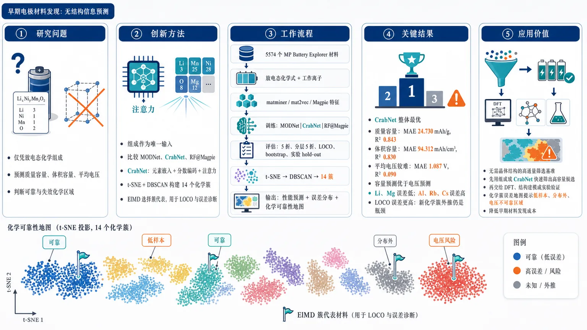
研究问题在没有晶体结构、原子坐标和键长信息的早期材料发现阶段，能否仅凭电极材料的放电态化学组成，快速预测质量容量、体积容量和平均电压，并判断哪些化学区域预测可靠、哪些区域容易失效。创新方法把“放电态组成”作为唯一输入，系统比较 MODNet、CrabNet、RF@Magpie 三类组成模型；Aha 点是：用 CrabNet 的元素嵌入、分数编码和注意力机制，在无结构信息条件下仍能有效预测容量。同时用 t-SNE + DBSCAN 从 matminer 特征中自动形成 14 个化学簇，再用 ElMD 选出簇代表材料，把无监督化学地图转化为 LOCO 外推测试和误差诊断工具。工作流程输入 5574 个 Materials Project Battery Explorer 电极材料的放电态化学式与工作离子；将化学式转换为 matminer、mat2vec、Magpie 数值特征；分别训练 MODNet、CrabNet、RF@Magpie 预测质量容量、体积容量、平均电压；用普通 5 折、分层 5 折、LOCO、bootstrap 和实验 hold-out 评估；再将高维特征经 t-SNE 降到二维，用 DBSCAN 聚成 14 个化学簇，用 ElMD 标记代表组成，最终输出性能预测、误差分布和化学可靠性地图。关键结果CrabNet 在几乎所有验证策略中最优：普通 5 折下质量容量 MAE 24.730 mAh/g、R² 0.843，体积容量 MAE 94.312 mAh/cm³、R² 0.830；平均电压较难，仅 MAE 1.087 V、R² 0.090。容量预测明显优于电压预测；Li、Mg 等大样本工作离子误差较低，Al、Rb、Cs 等低频离子误差较高；LOCO 误差高于随机划分，说明模型在新化学簇外推时仍有瓶颈。应用价值为无需晶体结构的电极材料高通量筛选提供可复现基准：可先用组成级 CrabNet 从海量候选化学式中快速筛出高容量候选，再交给 DFT、结构建模或实验验证；同时，化学簇误差地图能提示研究者避开低样本、分布外和电压预测不可靠区域，降低早期材料发现成本。第一部分：核心概览 (Overview)
该研究建立了面向电极材料早期成分筛选的机器学习基准，使用 Materials Project Battery Explorer 中 5574 个电极材料，比较 MODNet、CrabNet、RF@Magpie 对质量容量、体积容量、平均电压的预测能力。核心贡献在于：证明仅依赖放电态组成即可实现有效性能预测，尤其 CrabNet 在普通 5 折、LOCO、分层 5 折、bootstrap 与实验 hold-out 逻辑下整体最优；同时通过 t-SNE + DBSCAN + ElMD 建立无监督化学分群，揭示模型误差与化学簇、工作离子样本量、特征空间覆盖度之间的关系。其领域地位是为无需晶体结构的电极材料高通量筛选提供可复现基准与误差诊断框架。
---
第二部分：结构化快速回顾
《Machine Learning for Electrode Materials: Property Prediction via Composition》（None，）
背景
电池能量密度主要受电极材料的质量容量与体积容量支配，但许多电极机器学习流程依赖实验或 DFT 晶体结构，限制了早期组成级筛选。组成级模型可绕开结构获取成本，适合作为高通量筛选第一道过滤器。
方法
使用 Materials Project Battery Explorer 的 5574 个电极材料，以放电态组成为输入，预测gravimetric capacity、volumetric capacity、average voltage。比较三类模型：MODNet、CrabNet、RF@Magpie。特征包括 matminer 273 维、mat2vec 199 维、magpie 21 维。评估采用 MAE、SMAE、R²，并使用普通 5 折、LOCO、分层 5 折、bootstrap、实验 hold-out 进行稳健性验证。
结果
CrabNet 在几乎所有任务和验证策略下表现最佳。普通 5 折中，CrabNet 对质量容量达到 MAE 24.730 mAh/g、SMAE 0.284、R² 0.843；对体积容量达到 MAE 94.312 mAh/cm³、SMAE 0.295、R² 0.830；对平均电压达到 MAE 1.087 V、SMAE 0.474、R² 0.090。
讨论
容量预测显著优于电压预测，因为容量主要由化学计量、电子转移数、摩尔质量控制，而平均电压依赖局部配位、键长、位点对称性、阴离子框架诱导效应等结构信息。t-SNE 与 DBSCAN 识别出 14 个化学簇，误差在不同簇和不同工作离子之间明显不均衡。
局限
平均电压难以仅从组成可靠预测；Li、Mg 等大样本工作离子误差较低，而 Al、Rb、Cs 等低频工作离子误差较高。t-SNE 保留局部结构但扭曲全局距离，LOCO 误差高于普通和分层交叉验证，说明模型对化学分布外样本仍存在泛化瓶颈。
结论
组成级机器学习，尤其 CrabNet，可作为电极材料发现早期的快速 oracle，用于从巨大候选组成空间中筛出更小、更有希望的候选集合，再交由 DFT、结构建模或实验验证。
---
第三部分：逐章节冷凝解析 (Section-by-Section Condensing)
Abstract
Composition-only electrode prediction benchmark
研究基准化比较了三种主流组成驱动机器学习框架：MODNet、CrabNet、RF@Magpie，任务是利用 Materials Project Battery Explorer 数据集预测电池电极材料性能。核心设定明确为composition-based ML，而非依赖晶体结构或图神经网络结构输入；原文直接给出任务范围：*"we benchmark three leading composition-based Machine Learning (ML) frameworks, MODNet, CrabNet, and a random forest model based on Magpie features, predicting the properties of battery electrode materials using the Materials Project Battery Explorer dataset."*
CrabNet as consistently strongest model
所有测试中 CrabNet 均优于 MODNet 与 RF@Magpie，形成主要性能结论。摘要层面的强判断为：*"Our results demonstrate that CrabNet consistently outperforms the other models across all tests."* 这意味着最终筛选工具并非简单基于传统 descriptor + tree ensemble，而更偏向 transformer-inspired composition model。
Multiple validation strategies beyond ordinary split
验证设计包括 bootstrap resampling、leave one cluster out、stratified 5-fold CV、control baseline、unseen experimental hold-out，强调模型不仅要在随机划分中表现好，还要面对化学簇外泛化与实验数据外推。原文列明：*"we employ bootstrap resampling and two cross-validation (CV) strategies (leave one cluster out and stratified 5-fold CV), comparing each model against a control baseline, using unseen experimental data as a hold-out test."*
Unsupervised chemical structure discovery
无监督部分使用 t-SNE + DBSCAN 对来自 matminer 的物理观测特征进行二维嵌入与聚类，发现无需标签即可形成化学上连贯的材料群。证据为：*"We also apply unsupervised clustering using t-SNE and DBSCAN on physically observed features extracted from matminer, revealing coherent material groupings without prior labels."*
Early-stage oracle positioning
最终模型定位为电极材料组成筛选的早期 oracle，而非替代高精度结构模拟或实验测量。原文表述为：*"can be used as a early stage oracle for electrode materials composition screening"*，并进一步限定目标为早期筛选：*"effective for early-stage compositional screening."*
---
Introduction
Battery energy density is electrode-capacity dominated
电池单元能量密度几乎完全由电极材料的质量容量/体积容量控制，因此高性能正极发现成为电池工程与材料科学的核心方向。关键表述为：*"The energy density of a battery cell is governed almost entirely by the gravimetric/volumetric capacities of its electrode materials, making the discovery of high-performance cathodes a top priority for engineers and scientists alike."*
Battery discovery has shifted to integrated high-throughput workflows
电池材料研究已从孤立实验转向理论、高通量合成、数据驱动发现耦合的综合策略。原文指出：*"the field has moved from isolated experimental campaigns to an integrated strategy that couples theory, high-throughput synthesis, and data-driven discovery."* 这为 ML 在电极材料中的合理性奠定背景。
Open materials databases enabled broad ML property prediction
机器学习成为 21 世纪材料科学中的主导数据范式，受益于 Materials Project、OQMD、AFLOWLIB、DDSE 等开放数据库。相关原文为：*"With the proliferation of open, high-quality datasets, such as the Materials Project, OQMD, AFLOWLIB, and the dynamic database of solid-state electrolyte (DDSE), researchers now routinely employ ML to predict a wide range of material properties, from formation energies to elastic moduli."*
Prior ML battery studies show strong but often structure-dependent progress
已有电池 ML 工作覆盖电解质与电极：固态电解质方向包括大语言模型、分子动力学、DFT、监督学习筛选；电极方向包括 CGCNN 筛选 Zn 离子正极，以及 Bayesian optimization + DFT 加速 Li 离子电极设计。原文列举：*"Zhou et al. used crystal graph neural networks (CGCNN) to identify high-capacity Zn-ion cathodes, and Adam et al. combined data-driven predictions with Bayesian optimization and density functional theory (DFT) to accelerate the design of Li-ion electrodes."*
Main bottleneck: electrode ML often requires crystal structures
电极机器学习的关键限制是依赖已有晶体结构，无论结构来自实验测量还是 DFT 生成；这与高通量探索的自然起点——composition-level screening——相冲突。原文强调：*"most electrode-focused ML workflows still depend on pre-existing crystal structures, either experimentally measured or DFT-generated. This requirement limits their applicability to composition-level screening, which is the natural starting point for high-throughput exploration."*
Dataset quality determines composition-level workflow efficacy
组成级工作流高度依赖数据质量；材料科学常处于稀疏数据区域，不准确数据会让模型学习到错误决策边界。原文直接指出：*"The efficacy of composition-level workflows is fundamentally determined by dataset quality."* 进一步说明：*"the presence of inaccurate data can push models into making poor predictions, especially in the sparse data regimes we typically work with in materials science."*
DFT databases carry systematic approximation artifacts
高通量数据库继承底层 DFT 近似误差，因此数据完整性与一致性决定模型学到的是化学趋势还是计算伪影。证据为：*"high-throughput databases by nature inherit the systematic approximations of the underlying DFT calculations."* 关键判断为：*"it determines whether a model captures a genuine chemical trend or is following a sequence of computational artefacts."*
Need for rigorous benchmark on composition-based electrode prediction
组成级电极预测需要严格性能评估，以量化模型不确定性、建立基线、指导实验合成。原文为：*"A rigorous assessment of ML performance on composition-based electrode prediction is therefore essential. It enables researchers to quantify model uncertainty, benchmark new algorithms against established baselines, and ultimately guide experimental synthesis."*
Model suite and evaluation targets
模型组合包括 transformer-based CrabNet、descriptor-based MODNet、magpie descriptor based RF，数据集为 MP battery electrode dataset。评价指标包括 MAE、Pearson’s r-score，并通过测试误差构建 KDE 分布来估计均值和标准差。原文为：*"we evaluate a suite of contemporary and state-of-the-art ML models, including the transformer-based CrabNet, the descriptor-based MODNet architectures, and the magpie descriptor based random forest model, on the MP battery electrode dataset."* 以及：*"We use two standard evaluation metrics to rank the regression models, the mean absolute error (MAE) and the Pearson’s r r-score."*
Experimental hold-out added to DFT-based benchmark
除 DFT 计算属性外，还整理了小规模实验 hold-out 数据集验证最终模型。关键句为：*"In addition to using the DFT-computed chemical properties, we have collated a small experimental hold-out dataset to test the final model against."* 这补足了纯 MP 数据集内部验证的局限。
Deep learning vs tree ensemble trade-off
深度学习模型更擅长捕获复杂组成—性能关系；树模型则具备一定可解释性与计算效率。原文给出综合判断：*"while deep learning models excel in capturing complex composition-property relationships, tree-based ensembles offer comparable performance with greater interpretability and computational efficiency."*
---
Dataset and Methods
Dataset
Dataset size and source
数据来自 Materials Project Battery Explorer，包含 5574 个电极材料，每条记录提供 MP-ID、charged composition、discharged composition、working ion、gravimetric capacity、volumetric capacity。原文说明：*"For each electrode material, the dataset provides the MP-ID, the charged and discharged composition, the working ion, and the gravimetric and volumetric capacities, for 5574 electrode materials in total."*
Capacity definitions are physically stoichiometric
质量容量与体积容量按电子转移数、单胞质量、单胞体积计算：
[
D_g=nḑot e/Wᵤ
]
[
Dᵥ₌ₙḑot e/Vᵤ
]
其中 (n) 为每单胞工作离子转移电子数，(e) 为元电荷，(Wᵤ) 与 (Vᵤ) 分别为单胞质量与体积。原文定义为：*"where Dg and Dv are the gravimetric and volumetric capacities, n is the number of electrons transferred from the working ion per unit cell, e is the elementary charge, and Wu and Vu are the mass and volume of a single unit cell."*
Working-ion distribution is highly imbalanced
工作离子分布反映当前电池研究重心：Li 占 43.6%，Mg 占 25.6%，其余包括 Na、K、Ca、Zn、Al 等。原文为：*"Lithium of course dominates, accounting for 43.6% of the entries, due to its widespread use in rechargeable batteries. Magnesium follows as the second most common working ion at 25.6%."* 这种不均衡会影响误差分布与低频元素泛化。
Three regression targets
优化目标为质量容量、体积容量、平均电压。原文明确：*"the gravimetric capacity, volumetric capacity, and average voltage are adopted as regression targets for the ML optimization scheme."*
Discharged composition selected as model input
输入选择放电态组成，因为放电态包含参与电化学循环的所有元素；带电态正极可能不含工作离子。原文给出动机：*"A representation of the materials composition at discharge serves as the ML models input, because every element participating in the electrochemical charge–discharge cycle is present at that stage, whereas the charged cathode compositions may not include the working-ion species."*
Composition must be featurized before ML
由于模型只能处理数值输入，材料组成字符串必须转换为数值特征。原文为：*"As the ML models only take numeric inputs, each of the materials discharged composition must first be featurized."*
---
Methods
Composition featurization maps formula strings to fixed-length vectors
组成表征过程将元素比例的字典序字符串转为固定长度数值向量。原文定义：*"we convert the lexicographic string representing the ratio of elements in the compound into a numeric fixed-length vector."* 这是组成级 ML 的基础预处理。
Two feature families: chemically derived and machine-learned
特征工具分为化学知识驱动与机器学习嵌入驱动。化学特征如 magpie、JARVIS，机器学习特征如 mat2vec、ElemNet。原文为：*"Two main types of featurizing tools have been developed in the literature: chemically-derived and machine-learned ones."*
Chemical descriptors aggregate elemental properties
化学衍生特征使用元素已知性质与聚合函数构造成分向量。原文为：*"The former uses previously reported chemical properties for each constituent element, together with aggregate pooling functions to construct a composition based feature vector."*
Machine-learned features reuse internal representations
机器学习嵌入来自训练良好的模型内部高维表示，可迁移到下游任务。原文为：*"When such a model performs well, the high-dimensional, internal representations of the elements can be taken as embeddings for future downstream tasks."*
Three supervised models
监督模型为 MODNet、CrabNet、RF@Magpie。原文列明：*"The present study employs three ML models: MODNet, CrabNet, and a Random Forest (RF) using magpie features (RF@Magpie)."*
MODNet uses matminer descriptors and NMI-based feature selection
MODNet 将多种 matminer 物理化学描述符拼接，然后基于Normalized Mutual Information, NMI 与 relevance-redundancy 分数进行特征选择，再用前馈神经网络预测。原文为：*"the composition-featurization stage concatenates a variety of descriptors drawn from matminer"*；特征选择机制为：*"by first calculating the Normalized Mutual Information (NMI) between the provided features and the labels, and selecting those with the best relevance-redundancy scores."*
MODNet uses genetic algorithm hyperparameter optimization
MODNet 使用遗传算法优化超参数。证据为：*"MODNet then uses a feed-forward neural network to predict the element properties based on the selected features, using a genetic algorithm hyperparameter optimizer."*
CrabNet uses transformer-inspired fractional encoding
CrabNet 使用 transformer-inspired 架构，将 fractional encoding 作用于 mat2vec elemental vector embeddings，再通过 attention 层与 feed-forward 层学习组成—性能关系。原文为：*"CrabNet uses a transformer inspired architecture by applying a fractional encoding to mat2vec elemental vector embeddings for the featurizing step."* 以及：*"the vectors are processed via a sequence of attention layers and feed-forward layers."*
RF@Magpie combines random forests with efficient chemical descriptors
RF@Magpie 使用随机森林集成多个决策树，并结合 magpie 描述符；输出为各树预测平均值。原文为：*"Random Forests (RF) are a type of ML model that ensembles multiple decision trees to predict materials properties, where the results are generated from the average prediction from each decision tree."* Magpie 特点为：*"Magpie descriptors offer a computationally efficient material featurizing approach using a chemically diverse list of attributes, gathered from the literature."*
Feature dimensionalities differ substantially
三类特征维度分别为 matminer 273、mat2vec 199、magpie 21。原文给出精确数字：*"the matminer, mat2vec, and magpie embeddings comprise 273, 199, and 21, features respectively."* 这解释了不同模型的表达能力、可解释性与计算成本差异。
Dimensionality reduction used for visualization and clustering
高维特征无法直接可视化，因此使用 PCA、t-SNE、UMAP 转为二维嵌入。原文为：*"Three dimensionality reduction methods are employed to visualize the features in 2D: Principal Component Analysis (PCA), t-distributed Stochastic Neighbor Embedding (t-SNE), and Uniform Manifold Approximation and Projection (UMAP)."*
PCA failed to reveal clean clusters
PCA 作为线性方法无法清晰分离材料簇，前两个主成分解释方差低于 30%。证据为：*"this study finds no discernible clustering with projected points falling in overly dense regions, which fail to separate cleanly using automated methods."* 以及：*"the explained-variance ratios for the first two principal components are below 30%."*
t-SNE and UMAP reveal chemically meaningful local structure
非线性降维更能保留局部相似性，t-SNE 与 UMAP 均得到与化学关系一致的分离簇。原文为：*"both t-SNE and UMAP yield well-separated clusters that align with known chemical relationships."* 研究重点选择 t-SNE，因为：*"the t-SNE embeddings provide the cleanest separation of meaningful chemical clusters."*
matminer t-SNE separates materials by working ion or crystal-system similarity
基于 matminer 的 t-SNE 平面图能将具有相同工作离子或相似晶体体系的化合物放入相邻簇。原文为：*"clearly separates the materials on a planar map with compounds which share either the same working ion or a simlilar crystal system, found in contiguous clusters."*
High-capacity materials concentrate in a distinct matminer cluster
按容量五分位上色后，高质量容量与高体积容量材料集中于 matminer t-SNE 左侧簇，显示组成特征与正极潜力之间存在可学习关系。原文为：*"the high gravimetric capacity and high volumetric capacity materials are concentrated in the left-most cluster, distinct from other materials."*
DBSCAN identifies chemically similar material groups
使用 DBSCAN 对 t-SNE 嵌入点自动聚类，可识别高局部密度区域与离群点。原文定义为：*"DBSCAN algorithm, a technique that groups points that are closely packed in the feature space while effectively identifying and excluding outliers from the cluster."*
Fourteen DBSCAN clusters detected
DBSCAN 在 matminer t-SNE 空间中识别出 14 个簇。图注给出：*"A total of 14 clusters are identified."* 这些簇随后用于 LOCO 与分层交叉验证。
ElMD selects barycentric representative material for each cluster
每个簇使用 Element Movers Distance, ElMD 选取化学代表材料，即簇内平均 ElMD 最小的材料。原文为：*"a barycentric representative material is selected for each of them using the Element Movers Distance (ElMD), a metric designed to quantify chemical similarity between materials."* 方法细节为：*"By identifying the material within each cluster that exhibits the lowest average ElMD to all other members of the same cluster, a chemically representative prototype is determined for each label."*
ElMD uses optimal transport logic
ElMD 基于 Earth Mover’s / Wasserstein distance，计算将一种元素组成变为另一种元素组成的最小代价。原文为：*"ElMD employs the Earth Mover’s, or Wasserstein, distance, an optimal transport-based measure, to compute the minimal 'cost' required to transform one elemental composition into another."*
Cluster representative can reveal doped cathode families
以 LiFePO₄, LFP 为例，LFP 属于 cluster 6，虽然代表材料为 Li₄Fe₃Sb(PO₄)₄，但可识别为 LFP 掺杂变体。原文为：*"lithium iron phosphate, LiFePO4 (LFP), is a widely used cathode material, found in cluster 6"*；进一步说明：*"Although this is not a perfect match with the cluster 6 representative material, Li4Fe3Sb(PO4)4, it is evident that this is a doped variant of LFP."*
Embedding distortion is quantitatively assessed
通过比较原始高维特征空间与二维嵌入空间中的平均欧氏距离评估 t-SNE 失真。原文为：*"The global distortion is quantified by comparing average inter-point (Euclidean) distances in the original high-dimensional feature space with those in the embedded low-dimensional representation."*
LOCO cross-validation tests out-of-distribution generalization
Leave One Cluster Out, LOCO 将 14 个 DBSCAN 簇作为 fold，每次留出一个化学簇测试，其余簇训练，模拟化学分布外预测。原文为：*"Leave One Cluster Out (LOCO) cross-validation, where the 14 clusters are considered as the folds, with each cluster serving as the test set once, and the remaining clusters being used to train the model."*
Stratified 5-fold cross-validation balances cluster representation
分层 5 折从每个簇中随机抽取五分之一进入各 fold，确保所有 fold 均含各簇代表。原文为：*"Stratified 5-fold cross-validation, where each fold is constructed to include one-fifth of a randomly selected sample of the data from every cluster, ensuring that a balanced representation is given across folds."*
Bootstrap tests dataset-size sensitivity
bootstrap 使用原始数据的 20%、50%、80% 均匀采样子集，并在每个子集上进行非分层 5 折交叉验证。原文为：*"subsets containing 20%, 50%, and 80% of the original dataset are constructed using uniform sampling."* 以及：*"For each subset, unstratified 5-fold cross-validation is employed to determine the average scaled errors."*
SMAE normalizes errors across heterogeneous targets
SMAE = MAE / MAD，可在容量和电压等不同量纲、不同尺度目标间公平比较。公式为：
[
SMAE=fracMAEMAD=
fracsumᵢ^N |yᵢ₋yᵢpred|sumᵢ^N |yᵢ₋bary|
]
原文解释为：*"The SMAE normalizes the MAE by the inherent variability of the target property, thereby enabling a statistically fair comparison across different electrochemical properties with varying scales."*
Mean predictor used as null control
控制模型将训练集标签均值赋给所有测试样本，用作“无化学关系学习”的基线。原文为：*"a mean predictor (null) model was implemented, which assigns the arithmetic mean of the training-set labels to all samples in the test set."* 其意义为：*"representing a scenario in which the model fails to capture any underlying chemical relationships and instead only learns the average of the training data target label."*
---
Results & Discussion
CrabNet leads under standard 5-fold CV
普通 5 折结果中，CrabNet 在三项性质上整体最佳。质量容量：MAE 24.730 mAh/g、SMAE 0.284、R² 0.843；体积容量：MAE 94.312 mAh/cm³、SMAE 0.295、R² 0.830；平均电压：MAE 1.087 V、SMAE 0.474、R² 0.090。原文总结为：*"Of the three evaluated models, from these metrics, CrabNet consistently delivers better predictive performance on these target labels."*
Outlier-filtered 2σ comparison preserves CrabNet advantage
采用前人方法去除目标值 2σ 范围外离群点后，CrabNet 的质量容量误差降至 MAE 18.126、SMAE 0.208、R² 0.724；体积容量为 MAE 77.805、SMAE 0.244、R² 0.722；平均电压为 MAE 0.653、SMAE 0.285、R² 0.660。原文说明处理方式：*"outliers falling outside a 2σ-range of the target values are removed."*
CrabNet rivals structure-dependent prior models for gravimetric capacity
仅用组成特征的 CrabNet 超过前人 Extreme Tree Regression, ETR，MAE = 24.482，并接近需要结构描述符的 LGBM 与 DNN。原文为：*"CrabNet, operating solely on composition-based features, outperforms Extreme Tree Regression (ETR) (MAE = 24.482) and achieves accuracy comparable to the Light Gradient Boosting Machine (LGBM) and Deep Neural Network (DNN) models reported in a previous work, despite those models requiring structural descriptors."*
Composition-only screening avoids expensive structural data
组成级模型不需要计算昂贵或不可得的晶体结构，适合作为高通量材料发现第一阶段。原文指出：*"composition-based approaches, which circumvent the need for computationally expensive structural data, as an effective first-stage screening tool for high-throughput materials discovery."*
Capacity prediction is easier than voltage prediction
所有模型从容量到平均电压预测准确率下降。容量主要是化学计量性质，由氧化还原活性位点数与摩尔质量决定，组成特征能较好捕获；平均电压更依赖局部结构。原文为：*"One observation that can be seen across all models is the drop in predictive accuracy between the gravimetric capacity and the average voltage."* 容量解释为：*"the capacity, a stoichiometric property fundamentally determined by the number of redox-active sites and the molar mass, is effectively captured by compositional features."*
Voltage is thermodynamic and structure-sensitive
平均电压由工作离子在宿主电极与负极之间的化学势差决定，受局部配位与阴离子框架诱导效应影响。原文为：*"the average voltage is governed by the difference in chemical potential of the working ion between the host electrode and the anode."* 以及：*"This property is sensitive to the local coordination environment and the inductive effects of the anion framework."*
Fe redox example illustrates missing structural nuance
同一 Fe²⁺/Fe³⁺ 氧化还原对从氧化物转到聚阴离子框架时电压会变化，因为金属—配体键离子性改变；组成模型缺少显式位点对称性与键长信息。原文为：*"the voltage of a redox couple (e.g., Fe2+/Fe3+) will change when transitioning from an oxide to a polyanionic framework due to changes in the ionicity of the metal-ligand bond."* 限制为：*"a structural nuance that purely composition-only models can only partially approximate without explicit site-symmetry or bond-length data."*
Composition models serve as broad early filter
组成模型可将数十亿候选材料缩小为可管理集合，再用高保真结构模拟或实验细化。原文为：*"rapid screening of vast numbers of compositions may be carried forward to whittle the list down from billions of potential materials to a more manageable subset."* 后续流程为：*"which can then be refined using high-fidelity structural simulations or experimental synthesis."*
Error KDE shows CrabNet errors concentrated near zero
测试误差分布使用 Gaussian KDE 估计。CrabNet 的误差更集中于 0 附近，RF@Magpie 误差最高。原文为：*"The CrabNet error distributions are more densely concentrated near zero, with superior predictive accuracy."* 以及：*"RF@Magpie consistently yields the highest prediction errors across each of the investigated properties."*
Working-ion sample size correlates with SMAE
Li 与 Mg 样本量最大，分别占 43.6% 和 25.6%，对应较低 SMAE。原文为：*"the largest sets with more samples, such as Li (43.6% MP battery dataset) and Mg (25.6% MP battery dataset), have a lower SMAE."* 总体规律为：*"the SMAE of the model correlates with the number of training samples."*
Al, Rb, Cs are difficult regimes
铝基材料在质量容量与体积容量预测中准确率最低；Rb 与 Cs 工作离子的平均电压预测性能显著退化。原文为：*"the lowest predictive accuracy for gravimetric and volumetric capacities is for the aluminum-based materials"*；以及：*"materials utilizing rubidium and cesium as working ions display a significant performance degradation in predicting average voltage."*
Low-frequency elements may have weak embeddings
Al、Rb、Cs 等低频元素误差高，不仅因为样本少，也可能因为它们在上游嵌入训练数据中出现频率低，导致数值表示与真实化学性质对齐不足。原文为：*"because these elements appear infrequently in upstream training data, the statistical alignment between provided numeric representations and their specific chemical properties may be underdeveloped."*
Bootstrap confirms dataset expansion improves performance
bootstrap 显示数据集比例从 20% → 50% → 80% 增大时预测误差单调降低。原文为：*"predictive errors decrease monotonically as dataset size increases."* 结论为：*"This trend highlights the critical importance of expanding large-scale materials datasets to enhance the performance and reliability of machine learning models in materials discovery."*
LOCO errors exceed stratified errors
LOCO 模拟分布外化学测试，因此误差高于分层 5 折。CrabNet 在 LOCO 中：质量容量 SMAE 0.551、体积容量 0.530、平均电压 0.603；在分层 5 折中分别为 0.388、0.436、0.562。原文解释：*"Errors from LOCO CV are consistently higher than those from stratified 5-fold CV."* 原因为：*"LOCO forces the test set to be chemically distinct from the training distribution, whereas SkF includes representative samples from every cluster in both the training and testing sets."*
Stratified 5-fold errors exceed unstratified 5-fold errors
分层 5 折误差高于普通 5 折，说明基于聚类结果构造均匀 train-test folds 并未改善代表性，反而暴露化学特征聚类与预测分布之间的限制。原文为：*"SkF errors are obviously higher than those in Table 1"*；解释为：*"the uniformly distributed train-test folds of all groups failed to achieve a better representative compared to the unstratified case, suggesting the limitation of attaching the clustering results with chemical features."*
CrabNet remains best under LOCO and SkF
表 2 中 CrabNet 仍然最优：LOCO / SkF 下质量容量 0.551 / 0.388，体积容量 0.530 / 0.436，平均电压 0.603 / 0.562。相比之下 RF@Magpie 在 LOCO 中为 1.028、0.933、1.113，甚至接近或超过 control。原文为：*"CrabNet achieving superior predictive performance across all schemes."*
Cluster-specific errors reveal chemical extrapolation difficulty
不同簇误差差异明显，clusters 1 和 3 误差高，clusters 4、7、9 误差低。原文为：*"testing errors vary substantially across individual clusters. For instance, clusters 1 and 3 exhibit relatively high errors, while clusters 4, 7, and 9 yield significantly lower errors."*
Peripheral t-SNE clusters are harder to generalize
clusters 1 与 3 位于 t-SNE 外围孤立区域，说明其 MODNet-derived 特征与其他材料差异大，导致模型泛化困难。原文为：*"clusters 1 and 3 are positioned near the periphery of the 2D t-SNE projection in isolated regions."* 解释为：*"their MODNet-derived features may differ substantially from those of other materials."*
Li-rich clusters benefit from larger sample support
clusters 1 与 3 的 Li 分布低于 clusters 2 与 4–14；后者受益于更大样本量，误差较低。原文为：*"these two clusters have a lower distribution of Li than clusters 2 and 4-14, and as these clusters benefit from larger sample sizes, this could explain their lower testing errors."*
t-SNE preserves clusters but distorts metric distances
二维 t-SNE 是近似表示，必然扭曲高维结构。原文为：*"The embedding process is an approximate representation of the space, which must distort the high dimensional structure."* 但同簇距离通常小于异簇距离，说明部分结构仍被保留：*"intra-cluster anti-diagonal entries, are generally smaller than distances between different clusters."*
Distance correlation and NMI quantify embedding fidelity
在原始空间距离 (x<0.8) 的异簇距离对中，distance correlation 为 0.45，NMI 为 0.81。原文为：*"The resulting distance correlation of 0.45 indicates a moderate nonlinear association between the two representations, while the high NMI value of 0.81 suggests high similarity in the original feature space."*
Linear regression shows only partial global geometry preservation
对 (x<0.8) 异簇距离子集进行线性回归，得到 R² = 0.22，说明 t-SNE 只部分保留线性几何关系。原文为：*"yielding an R2 value of 0.22."* 解释为：*"the linear relationships associated with the cluster-level geometry is only partially maintained under t-SNE."*
t-SNE is qualitatively faithful but metrically nonlinear
t-SNE 保留主要分离与边界，但绝对距离发生非线性扭曲。原文总结：*"t-SNE provides a qualitatively faithful representation of the clustering structure, maintaining major separations and boundaries, as reflected by the strong NMI, while introducing nonlinear distortions in absolute distances, as evidenced by the regression analysis."*
Final model uses CrabNet trained on full MP battery dataset
由于 CrabNet 在不同验证方案下持续最优，最终模型采用完整 MP battery 数据训练的 CrabNet。原文为：*"As it consistently displays better performance than other models, for our final model, we use a CrabNet architecture trained on the complete MP battery dataset."*
Experimental validation is limited by scarce unseen cathode data
实验 hold-out 面临挑战：没有大规模实验验证正极组成与测量性质数据集，且 MP battery 数据已包含许多文献化合物。原文为：*"there are no large datasets of experimentally validated cathode compositions with their measured properties, and the MP battery dataset already contains many of the reported compounds."*
Seven unseen experimental cathodes used for practical generalization check
整理了 7 个完全未见实验验证材料，从报告中的数值与图中提取或计算目标性质，用于评估最终模型实际泛化能力与局限。原文为：*"we have collated a new cathode dataset based on an entirely unseen cohort of seven experimentally validated materials; taking or calculating the required properties from the given values and plots in the report."*
---
第四部分：深度理解与语言支持 (Understanding & Nuance)
1. 术语解析
#### Composition-based Machine Learning
语境中指仅使用化学组成/化学式作为输入，不显式使用晶体结构、原子坐标、键长、空间群、位点占据等信息。微妙之处在于它不是“低质量模型”，而是面向材料发现早期阶段的低门槛筛选模型。优势是候选空间极大时可快速评估；弱点是对结构敏感性质，如电压、离子扩散、相稳定性，表达能力不足。
#### Featurization
指把材料化学式从符号表达转为机器学习可处理的数值向量。例如 LiFePO₄ 不能直接输入 RF 或普通神经网络，必须转换为元素属性统计量、元素嵌入、分数编码等。该词比 “encoding” 更宽，既包括人工化学描述符，也包括深度学习嵌入。
#### Hold-out test
指训练和调参过程中完全不参与的数据，用于最终泛化检验。语境中尤其重要，因为 hold-out 不是 MP 内部随机切分，而是未见实验材料，因此更接近真实部署场景。不过样本只有 7 个，统计稳定性有限。
#### Leave One Cluster Out, LOCO
不是普通随机交叉验证，而是把一个完整化学簇留作测试集。其含义是：模型需要预测训练集中没有类似化学邻域的材料，属于更严格的out-of-distribution generalization 测试。LOCO 误差高于普通 5 折并不意外，反而能揭示模型外推边界。
#### Scaled mean absolute error, SMAE
SMAE 将 MAE 除以目标变量自身的平均绝对偏差 MAD。直观理解：若 SMAE = 1，模型大致相当于只猜训练集均值；若 SMAE < 1，模型确实学到了一些规律；越接近 0 越好。它适合同时比较 mAh/g、mAh/cm³、V 这类尺度差异很大的目标。
---
2. 疑难查证
#### 为什么平均电压比容量更难预测？
容量本质上接近“计数问题”：一个化学式中有多少可氧化还原离子、每个可转移多少电子、分子量多大。这些信息很大程度上直接写在组成里。例如同样电子转移数下，摩尔质量越小，质量容量越高。
平均电压不是简单计数，而是能量差问题。电压近似对应工作离子从正极脱嵌到负极时的自由能变化。这个自由能变化受到局部晶体结构强烈影响：过渡金属处于八面体还是四面体配位、M–O 键长多大、阴离子是 O²⁻ 还是 PO₄³⁻ 框架、是否存在强诱导效应、局部畸变是否稳定高价态等。组成相同或相近的材料可能因结构不同而电压差异很大。因此仅凭组成只能学到平均趋势，很难捕捉局部位点能量。
#### 为什么 t-SNE 聚类能辅助交叉验证，但不能被当作真实化学相图？
t-SNE 的目标是让高维空间中相近的点在二维中仍然相近，重点是局部邻域保持。它并不保证二维图中两个簇之间的距离比例等于真实高维空间距离比例。因此 t-SNE 图中“很远”不一定代表真实化学差异按比例更大，“很近”也不一定代表全局距离绝对很小。
该研究用距离相关、NMI、线性回归 R² 检查这一点：NMI = 0.81 表示簇结构相似性较强；distance correlation = 0.45 表示有中等非线性关联；线性 R² = 0.22 表示线性距离关系保留较弱。合理结论是：t-SNE 可用于构造化学簇与诊断误差，但不能被解释为严格的定量化学距离图。
#### 为什么低频工作离子误差更高？
机器学习模型依赖训练分布。Li 与 Mg 样本分别占 43.6% 和 25.6%，模型见过大量相关化学环境，学习到的规律更稳健。Al、Rb、Cs 等样本少，模型既缺少目标任务训练样本，也可能缺少上游嵌入模型中的充分表示。换言之，低频元素不仅“标签少”，还可能“表征质量差”。这会导致模型在这些化学区域中既不准也不稳定。
---
第五部分：创新评估与关联 (Synthesis & Novelty)
1. 创新性判断
#### From structure-dependent electrode ML to composition-first screening
近 2–5 年电极材料 ML 中，很多高性能模型依赖晶体结构、图表示、DFT relaxed structures 或 matminer 结构描述符。该研究的核心新颖性在于系统检验：只用放电态组成是否足以完成正极早期筛选。结果显示 CrabNet 在质量容量与体积容量上达到有竞争力误差，甚至可接近部分结构依赖模型。这解决了早期候选材料没有结构信息时难以筛选的问题。
#### Benchmarking is multi-axis rather than single split
许多材料 ML 工作只报告随机 train-test split 或普通 k-fold 的 MAE/R²。该研究同时使用 普通 5 折、2σ 离群过滤、bootstrap 数据量敏感性、LOCO、分层 5 折、control baseline、实验 hold-out。创新点不只在模型，而在误差可信度框架：能区分随机插值性能、化学簇外推能力、低样本工作离子风险、实验迁移难度。
#### Unsupervised chemical clusters become validation units
通过 t-SNE + DBSCAN 从物理化学特征中自动识别 14 个化学簇，再将这些簇用于 LOCO 与分层交叉验证。这比随机划分更接近真实材料发现场景，因为真实筛选经常面对新的化学族，而不是训练集附近的随机样本。
#### ElMD-based representative materials improve interpretability
每个簇通过 Element Movers Distance 选取代表材料，使聚类结果不只是二维散点，而能转换为化学专家可理解的原型组成。例如 cluster 6 中 LFP 与 Li₄Fe₃Sb(PO₄)₄ 的关系体现出掺杂家族识别能力。这为 ML 误差分析和材料化学解释之间建立桥梁。
#### Error analysis targets deployment failure modes
创新点还体现在对失败模式的具体定位：平均电压弱于容量、Al/Rb/Cs 等低频工作离子退化、外围簇 1 与 3 泛化差、t-SNE 全局距离存在非线性扭曲。这些分析比“某模型 MAE 更低”更接近可部署材料筛选系统所需的信息。
#### Solved problem
解决了三个前人常未充分解决的问题：
- 无结构输入时电极性质预测能达到什么水平：CrabNet 证明组成级模型可作为早期 oracle。
- 随机交叉验证是否高估真实泛化能力：LOCO 误差显著更高，说明随机划分确实更偏插值。
- 哪些化学区域最不可靠：低频工作离子与外围化学簇是主要风险区。
#### Remaining novelty boundary
新颖性主要是基准化、验证设计与误差诊断，不是提出全新机器学习架构。CrabNet、MODNet、RF、Magpie、t-SNE、DBSCAN 均为既有方法；学术贡献在于将这些方法组合成面向电极组成筛选的系统评估框架，并用 MP Battery Explorer 与实验 hold-out 连接高通量数据库和实际材料发现。
-
11
📊 含图深析
📄 摘要：针对动态密度泛函理论中的非局域梯度流方程，构建改造版PINN。通过改进Lorentzian激活函数并结合适配非局域项的训练策略，缓解这类方程因非线性、非局域耦合和梯度流结构带来的收敛慢与优化难题。
💡 亮点：改进Lorentzian激活让PINN更适合非局域DDFT。它把梯度流与非局域相互作用纳入同一训练框架。
📖 展开分析 + 配图
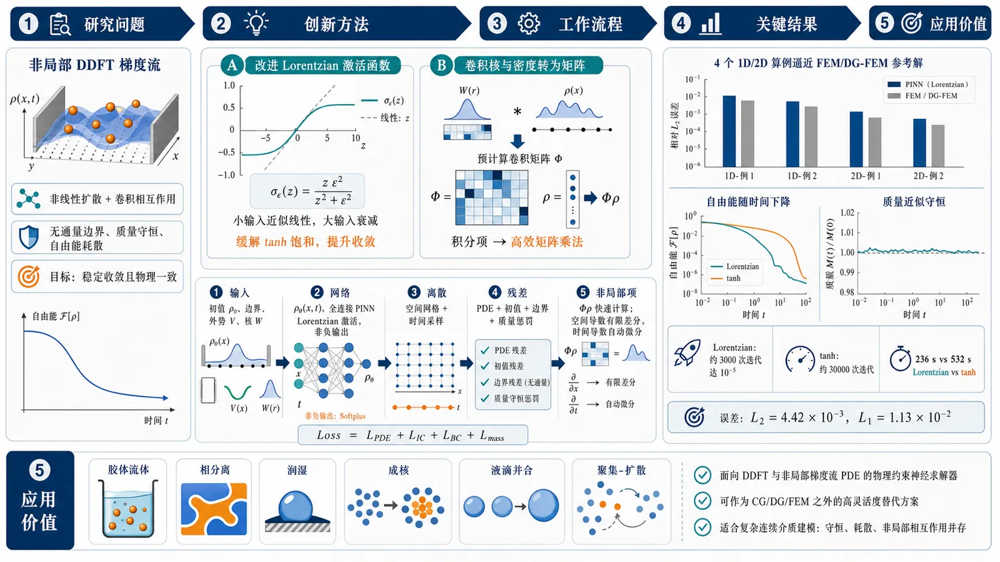
研究问题如何用物理信息神经网络直接求解动态密度泛函理论（DDFT）中的非局部梯度流方程，同时在非线性扩散、卷积型相互作用、无通量边界、质量守恒和自由能耗散并存的情况下，仍保持稳定收敛与物理一致性。创新方法提出一种面向非局部DDFT方程的PINN框架，核心“Aha”点是两项设计：一是改进 Lorentzian 激活函数 σ_ε(z)=z·ε²/(z²+ε²)，小输入近似线性、大输入自动衰减，缓解tanh饱和导致的慢收敛；二是将非局部卷积 W*ρ 预计算为离散矩阵算子 Φ，把训练中的积分项转为高效矩阵乘法，从而显著降低非局部项的计算瓶颈。工作流程输入初值、无通量边界、外势和相互作用核W；用全连接前馈网络表示密度ρ_θ；隐藏层采用改进 Lorentzian 激活，输出端可用平方或softplus保证非负；在空间结构网格与时间采样点上构造强形式残差，包含PDE残差、初值残差、边界残差和质量惩罚项；用预计算卷积矩阵Φ快速计算非局部项W*ρ；空间导数用有限差分、时间导数用自动微分；通过Adam优化最小化总损失，输出满足梯度流结构的密度演化结果。关键结果在四个一维和二维算例中，该方法都能逼近有限元参考解，并再现自由能随时间下降、质量近似守恒的梯度流行为。与tanh相比，改进 Lorentzian 在首个算例中约3000次迭代即可达到10⁻⁵损失，而tanh约需30000次；对应墙钟时间约236秒对532秒。第二个算例中，与DG-FEM参考解的误差达到 L2=4.42×10⁻³、L1=1.13×10⁻²，表明精度良好。应用价值为DDFT及其他非局部梯度流PDE提供了一种兼具物理约束与神经网络表达能力的求解框架，适合处理胶体流体、相分离、润湿、成核、液滴并合和聚集-扩散等问题。该方法有望作为传统CG/DG/FEM之外的高灵活度替代方案，尤其适用于需要同时保留质量守恒、自由能耗散和非局部相互作用的复杂连续介质建模。第一部分：核心概览（Overview）
该研究把物理信息神经网络（PINN）扩展到动态密度泛函理论（DDFT）中的非局部梯度流方程，针对非线性、卷积型非局部相互作用、质量守恒与自由能耗散并存的难题，提出改进 Lorentzian 激活函数与预计算离散卷积算子。一维与二维算例显示，该框架可逼近有限元参考解并保持梯度流物理行为；相较 tanh，改进激活显著加速收敛，是 PINN 求解 DDFT 型非局部 PDE 的早期系统化尝试。
---
第二部分：结构化快速回顾
《A Physics-Informed Neural Network with a Modified Lorentzian Activation for Nonlocal Gradient-Flow Equations in Dynamic Density Functional Theory》（None，）
背景
DDFT 非局部梯度流方程包含非线性扩散、外势、卷积相互作用与 Wasserstein 梯度流结构，数值方法不仅要准确，还要维持质量守恒和自由能单调耗散。传统谱方法、有限体积、CG-FEM、DG-FEM 可靠但实现复杂，PINN 的无网格与自动微分特性提供替代路径。
方法
构造强形式 PINN 残差，损失函数包括PDE 残差、初值残差、无通量边界残差、质量惩罚项。密度由全连接前馈网络表示；隐藏层采用
[
σ_ǎrepsilon(z)=zfracǎrepsilon²z²⁺ǎrepsilon²
]
的改进 Lorentzian 激活函数。非局部卷积 (W*h̊o) 通过预计算矩阵 (Φ) 高效近似。
结果
四类问题被用于测试：已知平衡解的非局部相互作用、一维双阱势非线性扩散、含吸引相互作用的聚集–扩散、二维液滴并合。第一个算例中，Lorentzian 激活约 3000 次迭代达到 (10⁻⁵) 损失，而 tanh 需 30000 次；墙钟时间分别约 236 s 与 532 s。第二个算例中，与 DG-FEM 的误差为 (L²⁼⁴.42×10⁻³)、(L¹⁼¹.13×10⁻²)。
讨论
改进激活函数在小输入附近近似线性、大输入时衰减到零，可改善优化轨迹并降低达到目标精度所需迭代数。离散卷积算子避免训练中重复积分，提升非局部项评估效率。自由能下降与质量近似守恒表明框架能够再现梯度流动力学。
局限
质量守恒依赖惩罚项，仅为近似守恒；空间导数仍采用有限差分，因此并非完全无网格；改进 Lorentzian 单次迭代成本约为 tanh 的 3.5 倍；非负性有时需 softplus 或平方输出映射辅助。提供文本在 5.3 中断，后续二维算例与附录细节无法完整核验。
结论
该 PINN 框架能处理 DDFT 中带非局部卷积的梯度流方程，并在测试问题中取得与 CG/DG-FEM 相近的解，同时保持自由能耗散趋势。改进 Lorentzian 激活函数相较 tanh 具有明显收敛优势。
---
第三部分：逐章节冷凝解析（Section-by-Section Condensing）
Abstract
- PINN framework for nonlocal DDFT equations
核心对象是DDFT 中的非局部偏微分方程，其困难来自非线性、非局部相互作用项、梯度流结构的耦合。摘要明确问题类别为 *"nonlocal partial differential equations arising in dynamic density functional theory (DDFT)"*，并指出标准 PINN 面临 *"nonlinearities, nonlocal interaction terms, and an underlying gradient-flow structure"*，这些因素导致 *"slow convergence and difficult optimization"*。
- Two computational components
方法创新集中在两个计算组件：改进 Lorentzian 激活函数与预计算离散卷积算子。激活函数被设计为小输入近似线性、大输入趋零，原文表述为 *"a modified Lorentzian activation function that behaves approximately linearly for small inputs and decays toward zero as the input magnitude increases"*；非局部项通过 *"a precomputed discrete operator for evaluating the nonlocal convolution term efficiently during training"* 加速。
- Validation across one and two dimensions
测试覆盖四个一维和二维算例，其中第一个有精确平衡解，其余使用 CG-FEM 与 DG-FEM 参考解验证。摘要给出验证体系：*"The method is tested on four examples in one and two space dimensions"*，并说明 *"the exact stationary solution is known"* 仅适用于第一个例子，其余通过 *"reference solutions computed using continuous and discontinuous Galerkin finite element discretizations"* 比较。
- Accuracy and physical consistency metrics
评价指标同时包含数值误差与物理诊断：(L¹)、(L²)、(Lⁱⁿfty) 误差、质量守恒、自由能耗散。摘要使用的标准是 *"Accuracy and physical consistency are assessed through L1, L2, and L∞ errors, together with mass conservation and free-energy dissipation"*。
- Main empirical finding
改进 Lorentzian 激活相对 tanh 加速收敛，同时保持与参考解吻合，并捕捉梯度流行为。关键结论为 *"the proposed activation function accelerates convergence relative to the standard tanh function"*，整体框架 *"maintains good agreement with the reference solutions and captures the expected gradient-flow behaviour"*。
---
Nomenclature
- Gradient-flow variables and operators
符号系统围绕密度 (h̊o)、化学势 (μ)、自由能 (E[h̊o]) 与耗散泛函 (D(h̊o)) 展开。关键定义包括 *"(h̊o(x,t)) = density"*、*"(μ=δE/δh̊o) = chemical potential"*、*"(E[h̊o]) = free-energy functional"*、*"(D(h̊o)) = energy-dissipation functional"*。
- Nonlocal interaction notation
非局部性通过相互作用核 (W) 与卷积 (W*h̊o) 表示。符号表明确写出 *"(W(x-y)) = interaction kernel"* 与 *"(W*h̊o) = spatial convolution of (W) and (h̊o)"*，这为后续预计算矩阵 (Φ) 的构造奠定基础。
- Neural-network notation
PINN 部分以 (θ) 表示训练参数，以 (h̊o_θ) 表示神经网络密度近似。符号表给出 *"(θ) = trainable neural-network parameter vector"* 和 *"(h̊oθ(x,t)) = neural-network representation of the density"*。
---
1 Introduction
- Gradient-flow PDEs as dissipative-system models
研究对象属于耗散系统的梯度流 PDE，覆盖线性/非线性扩散、聚集和非局部相互作用动力学。引言开篇定位为 *"Gradient-flow partial differential equations form an important class of models for dissipative systems"*，并列举 *"linear and nonlinear diffusion, aggregation, and nonlocal interaction dynamics"*。
- DDFT as free-energy-driven continuum theory
DDFT 被放在经典密度泛函理论基础上，用自由能驱动粒子密度演化。其定义性表述为 *"dynamic density functional theory (DDFT) provides a continuum description for the evolution of interacting particle densities through a free-energy-driven formulation rooted in classical density functional theory"*。
- Broad physical relevance
DDFT 及相关密度泛函方法覆盖多种物理现象，包括胶体流体、相分离、润湿与界面动力学、受限系统、成核过程。原文列出应用范围：*"colloidal fluids"*、*"phase separation"*、*"wetting and interfacial dynamics"*、*"confined systems"*、*"nucleation processes"*。
- Core numerical difficulty
DDFT 型梯度流的难点在于非线性、非局部算子、外势、多尺度行为交织，同时需要满足质量守恒与自由能耗散。关键句为 *"The interplay of nonlinearities, nonlocal interaction operators, and external potentials gives rise to complex multiscale solution behaviour"*，且梯度流结构强加 *"mass conservation and free-energy dissipation"*。
- Classical methods and preservation requirements
已有数值方法包括谱方法、有限体积、CG-FEM、DG-FEM，重点在于保持密度正性与离散能量下降。引言列举 *"spectral methods"*、*"finite-volume methods"*、*"continuous Galerkin finite element methods (CG-FEM)"*、*"discontinuous Galerkin finite element methods (DG-FEM)"*，并强调 *"preserving the positivity of the numerical density and ensuring discrete energy decay"*。
- PINNs as alternative computational framework
PINN 通过把方程、边界条件、初始数据直接纳入训练目标来求解微分方程。引言表述为 *"incorporating the governing equations, boundary conditions, and initial data directly into the training objective"*，其优势包括 *"mesh-free formulation and reliance on automatic differentiation"*。
- Gap in prior PINN literature
核心空白是 PINN 尚未直接用于非局部 DDFT 方程。原文给出强断言：*"to the best of our knowledge, PINNs have not previously been applied to the direct numerical solution of nonlocal DDFT equations"*。这构成论文定位的主要新颖性来源。
- Two explicit methodological contributions
贡献被明确限定为：把 PINN 扩展到非局部 DDFT 方程；提出改进 Lorentzian 激活函数；提出预计算离散卷积算子。引言写道 *"we introduce two methodological contributions: a modified Lorentzian activation function designed to improve convergence and approximation accuracy, and a precomputed discrete operator for the efficient evaluation of the nonlocal convolution term during training"*。
- Four benchmark examples
数值验证包含四个问题：已知稳态非局部相互作用、双阱势非线性扩散、非局部吸引相互作用聚集–扩散、二维液滴并合。原文列为 *"a nonlocal interaction problem with a known stationary solution"*、*"a nonlinear diffusion problem in a double-well potential"*、*"a nonlinear diffusion problem with nonlocal attractive interactions"*、*"a two-dimensional droplet coalescence problem"*。
---
2 Gradient flow for nonlinear diffusion
- Domain and density setting
空间域为有界 Lipschitz 区域 (ØmegasubsetR^d)，维度 (din1,2,3)，密度非负。原文定义为 *"Let (ØmegasubsetRd) with (din1,2,3) be a bounded domain with Lipschitz boundary"*，并设 (h̊o:Ømega×[0,T]→[0,infty))。
- Wasserstein gradient-flow PDE
基本方程为
[
partialₜₕ̊o-nablaḑot(h̊onablaμ)=0,
]
其中 (h̊o) 同时作为密度和迁移率。原文称其为 *"a nonlinear diffusion equation in Wasserstein gradient-flow form"*，并说明 *"(μ) denotes the variational derivative of the free energy"*。
- No-flux boundary condition and mass conservation
边界条件
[
mathbf nḑot(h̊onablaμ)=0
]
阻止质量穿越边界，保证总质量 (M=int_Ømegah̊o,dx) 守恒。原文直接指出 *"which prevents mass transfer across (partialØmega) and ensures the conservation of the total mass"*。
- Free-energy decomposition
自由能由三部分组成：局部熵项、外势能项、非局部相互作用项：
[
E(h̊o)=int_Ømega H(h̊o)dx+int_Ømega Vh̊o dx+frac12int_Ømega(W*h̊o)h̊o dx.
]
原文解释为 *"(H(h̊o)) is a local entropic term, (V(x)) is a prescribed confining potential, and (W*h̊o) accounts for nonlocal interactions"*。
- Convolution definition
非局部卷积为
[
(W*h̊o)(x,t)=int_Ømega W(x-y)h̊o(y,t)dy.
]
该积分在每个空间点依赖全域密度，是训练中计算负担的主要来源。原文定义为 *"spatial convolution"*。
- Chemical potential formula
在足够正则条件下，变分导数为
[
μ=H'(h̊o)+V+(W*h̊o).
]
原文写作 *"the variational derivative can be written explicitly as (μ:=δ E/δh̊o=H'(h̊o)+V+(W*h̊o))"*。
- Equivalent nonlinear nonlocal PDE
代入化学势后得到
[
partialₜₕ̊o=nablaḑoth̊onabla[H'(h̊o)+V+W*h̊o].
]
这是后续 PINN 残差构造的核心强形式方程。原文表述为 *"Substituting (6) into (1) yields the equivalent form"*。
- Regularity and symmetry assumptions
假设 (Hin C¹⁽⁽⁰,infty))a̧p C([0,infty))) 且凸，(Vin C¹⁽barØmega))，(Win C¹⁽R^d)) 且对称。对称性明确为 *"(W(-z)=W(z)) for all (zinRd)"*。
- Degenerate mobility
通量中的 (h̊o) 是 Wasserstein 梯度流迁移率；当 (h̊o=0) 时迁移率消失，方程在低密度区可能退化。原文强调 *"the factor (h̊o) acts as the mobility"*，且 *"this mobility vanishes when (h̊o=0)"*，从而 *"the equation may be degenerate in low-density regions"*。
- Free-energy dissipation law
平滑解满足
[
fracddtE[h̊o(t)]=-mathcal D(h̊o(t)),quad
mathcal D(h̊o)=int_Ømegah̊ołeft|nablafracδ Eδh̊oi̊ght|²dxge0.
]
原文结论是 *"(E(h̊o(t))) is non-increasing in time"*，且无通量条件 *"ensures mass conservation"*。
- DDFT interpretation
对合适的 (H,V,W)，该方程恢复相互作用 Brownian 粒子密度的过阻尼 DDFT 方程。原文定位为 *"recovers the standard overdamped DDFT equation for the density of interacting Brownian particles"*。
---
3 Neural network formulation
- PINN as empirical risk minimization
解被限制在参数化神经网络族 (mathcal N=h̊o_θ:θinΘ) 中，通过最小化经验 (L²) 目标估计参数。原文表述为 *"we assume that the solution (h̊o) belongs to the parametric family (N=h̊oθ:θinΘ)"*，并说明这从统计视角对应 *"empirical risk minimization over the finite-dimensional parameter space (Θ)"*。
- Fully connected feedforward representation
网络为全连接前馈结构，由 (L) 个仿射变换与激活函数复合构成：
[
h̊o_θ=(C_Li̧rcσi̧rc CL₋₁i̧rcḑotsi̧rcσi̧rc C₁₎₍ₓ,t).
]
原文定义为 *"a fully connected feedforward neural network"*，输入维度、隐藏宽度和输出维度分别为 *"input dimension (d₁), hidden widths (d₂,dots,d_L), output dimension (dL₊₁)"*。
- Trainable parameter count
每层仿射映射 (Cₖ₍mathbf z)=Wₖmathbf z+mathbf bₖ)，参数维度为
[
dim(θ)=sumₖ₌₁Ldₖ₊₁(dₖ₊₁₎.
]
原文明确 *"the parameter vector (θ=Wₖ,mathbf bₖₖ₌₁L) consists of all trainable weight matrices and bias vectors"*。
- Smooth activation requirement
PDE 残差需要对空间和时间求导，因此激活函数需足够光滑。原文指出 *"If the activation function (σ) is smooth, then the neural-network representation inherits the corresponding regularity"*，并且 *"we require (h̊oθ) to be differentiable with respect to (x) and (t)"*。
- Strong-form residual
PINN 残差采用强形式：
[
r(h̊o)=partialₜₕ̊o-nablaḑot(h̊onablaμ).
]
原文称 *"we adopt the strong-form residual"*，该选择直接对应原始 PDE。
- Composite loss functional
连续损失包含三个加权项：PDE 内部残差、初始条件误差、边界无通量残差。原文解释为 *"The first term penalizes the PDE residual in the interior of the space–time domain, the second penalizes deviations from the initial condition, and the third penalizes violations of the boundary condition"*。
- Loss weights and optimization quality
(łambda₁,łambda₂,łambda₃) 调节不同损失项尺度，影响收敛与最终近似。原文说明这些系数 *"account for differences in scale among these terms and influence both the convergence of the optimization and the quality of the final approximation"*。
- Nonconvex finite-dimensional training problem
连续函数最小化转化为参数空间上的非凸优化：
[
minθᵢₙΘmathcal L(h̊o_θ).
]
原文指出 *"This is generally a nonconvex optimization problem in (θ)"*，实践中用 *"first-order stochastic optimization methods"* 近似求解。
- Need for numerical quadrature/discretization
损失积分通常无闭式表达，必须离散化。原文说明 *"the integrals in (mathcal L) are generally not available in closed form"*，因此需 *"approximated numerically, which yields a computable discrete loss"*。
---
4 Implementation
- Raw network and final density map
网络先输出 (g_θ)，再通过输出变换 (mathcal T) 得到密度 (h̊o_θ=mathcal T(g_θ))。原文写道 *"We use the feedforward architecture introduced in Section 3 to define the raw network output (g_θ)"*，并且 *"The density approximation is then obtained by applying a final output transformation"*。
- Modified Lorentzian activation definition
隐藏层激活为
[
σ_ǎrepsilon(z)=zfracǎrepsilon²z²⁺ǎrepsilon².
]
原文直接称其为 *"the modified Lorentzian activation function"*，这是区别于标准 tanh PINN 的关键算法部件。
- Two-regime activation behavior
当 (|z|łlǎrepsilon)，(σ_ǎrepsilon(z)approx z)，表现近似线性；当 (|z|ggǎrepsilon)，(σ_ǎrepsilon(z)approxǎrepsilon²/z)，输入越大输出越趋近零。原文总结为 *"(σ_ǎrepsilon) combines near-origin linearity with attenuation of large input values"*。
- Empirical advantage over tanh
数值实验中，替换 tanh 后收敛更快、达到给定精度所需优化步数更少，但单步成本略高。原文表述为 *"replacing tanh with (σ_ǎrepsilon) leads to faster convergence and requires fewer optimization steps to reach a given accuracy, although each iteration has a slightly higher computational cost"*。
- Output transformations for nonnegativity
输出映射包括 identity、quadratic、softplus：
[
mathcal T(z)=z,quad z²,quad łog(1+e^z).
]
当训练早期 (g_θ) 可能为负时，非负映射提升稳定性。原文指出 *"the raw output (g_θ(x,t)) may transiently become negative"*，这会 *"violate the constraint (h̊o>0) and cause numerical instabilities"*。
- Structured Cartesian grid and time sampling
空间用结构化 Cartesian 网格 (mathbf xᵢᵢ₌₁N)，时间配点 (tₖₖ₌₁K) 从均匀分布独立采样。原文设定为 *"a structured Cartesian grid with nodes (xᵢᵢ₌₁N)"* 与 *"sample (K) time collocation points ... independently from the uniform distribution (mathcal U(0,T))"*。
- Precomputed convolution operator
非局部项用矩阵 (Φinmathbb RN× N) 近似：
[
(W*h̊o_θ)(mathbf xᵢ,tₖ₎approx(Φboldsymbolh̊o_θ(tₖ₎₎ᵢ.
]
原文说明该算子 *"acts on (boldsymbolh̊oθ(tₖ₎)"*，并用于高效评估卷积。
- Discrete chemical potential
网格点上的化学势为
[
μ_θ(mathbf xᵢ,tₖ₎₌H'(h̊o_θ(mathbf xᵢ,tₖ₎₎₊V(mathbf xᵢ₎₊₍Φboldsymbolh̊o_θ(tₖ₎₎ᵢ.
]
该式把神经网络输出、外势、预计算卷积结合。原文称其为 *"the discrete chemical potential at the grid nodes"*。
- Hybrid differentiation strategy
时间导数由自动微分计算，空间导数由有限差分近似。原文明确 *"the temporal derivative (partialₜₕ̊o_θ) ... is computed by automatic differentiation"*，而 *"the spatial derivatives ... are approximated by finite differences"*。
- Second-order finite differences
内部点使用二阶中心差分，边界点使用二阶单边差分，散度以通量形式计算。原文细节为 *"second–order centred finite differences are used at interior grid points"*，边界则 *"second–order one-sided finite differences"*，并且 *"The discrete divergence ... is evaluated in flux form"*。
- Discrete loss with mass penalty
离散目标包含四项：PDE 残差、初值残差、边界残差、质量惩罚项。额外质量惩罚用于改善守恒性，原文写道 *"we further augment the resulting discrete objective by an additional mass-penalty term in order to improve conservation of the total mass during training"*。
- Adam optimizer and full spatial grid
优化器为 Adam；每次迭代保留完整空间网格，仅随机采样时间。原文说明 *"We minimize (mathcal Lₕ₍θ)) using the Adam optimizer"*，并且 *"At each iteration, we retain the full Cartesian spatial grid and sample only in time"*。
---
4.1 Reference finite element solvers
- FEniCS implementation for reference solutions
参考解由 FEniCS 中的有限元离散得到。原文写道 *"we compute reference solutions using finite element discretizations implemented in FEniCS"*。
- One-dimensional DG-FEM reference solver
一维问题采用分片线性 DG 离散与结构化网格。原文细节为 *"For one-dimensional domains, we use a discontinuous Galerkin discretization with piecewise linear elements on structured meshes"*。
- Local conservation and limiter
DG-FEM 通过界面数值通量维持局部守恒，并在每步求解后使用 minmod 限制器抑制振荡。原文写道 *"Local conservation is enforced through numerical fluxes at element interfaces"*，且 *"a minmod slope limiter is applied after each solve to control spurious oscillations"*。
- Consistent nonlocal discretization between PINN and FEM
FEM 参考解也用同一原则构造预计算非局部算子，但在更细网格上组装。原文强调 *"This ensures that the PINN and finite element methods use the same discretization principle for the nonlocal term"*，从而比较主要反映 *"differences between the solution strategies"*。
- Time stepping and nonlinear solver
时间离散采用半隐式 Crank–Nicolson，非线性系统用 Newton 方法求解，并借助 FEniCS/UFL 自动微分。原文细节为 *"Time integration is performed with a semi-implicit Crank–Nicolson scheme"*，以及 *"nonlinear systems ... are solved by Newton’s method using automatic differentiation within FEniCS/UFL"*。
- Two-dimensional CG-FEM reference solver
二维问题采用连续 Lagrange 元的 CG-FEM 三角网格。原文写道 *"For two-dimensional problems, we use a CG-FEM discretization with continuous Lagrange elements on triangular meshes"*。
---
5 Numerical results
- Benchmark purpose
数值实验旨在评估方法在多类梯度流与 DDFT 型问题中的定性表现，特别是瞬态动力学与自由能耗散机制。原文目标为 *"assess the qualitative performance of the proposed method across a range of gradient-flow and DDFT-type problems"*，并检验是否 *"correctly reproduces the expected transient dynamics and preserves the underlying free-energy dissipation mechanism"*。
- Hardware setting
所有实验运行在配备 NVIDIA RTX 3500 Ada Generation GPU 的笔记本电脑上。原文给出硬件为 *"a laptop equipped with an NVIDIA RTX 3500 Ada Generation GPU"*。
---
5.1 Example 1: nonlocal interaction test
- Pure nonlocal interaction model
第一个一维算例只含非局部相互作用，自由能中无内能和外势。核函数为
[
W(x)=frac12|x|²⁻łog|x|,
]
且 (H(h̊o)=0,V(x)=0)。原文写道 *"the free energy contains only the nonlocal interaction contribution"*。
- Known stationary solution
单位质量唯一稳态解显式给出：
[
h̊oᵢₙfty(x)=frac1πsqrt2-x²,quad |x|łesqrt2,
]
区间外为零。原文称 *"the unique stationary solution of unit mass is known explicitly"*，且该平衡剖面为 *"(1/2)-Hölder continuous"*。
- Convergence to global minimizer
(h̊oᵢₙfty) 是自由能全局极小元，解指数收敛到该平衡。原文写道 *"It is the global minimizer of the free-energy functional"*，并且 *"solutions of (1) converge exponentially fast towards this equilibrium"*。
- Initial condition and domain
初始条件为标准 Gaussian 密度
[
h̊o(x,0)=frac1sqrt2πe⁻x^²/²,
]
计算域为 ([-3,3])。原文说明 *"we approximate (h̊oᵢₙfty) by solving (1) up to large times from the Gaussian initial condition"*。
- Network and training parameters
网络为 4 个隐藏层、宽度 128 的全连接前馈网络；损失权重为 (łambda₁₌₁,łambda₂₌₅,łambda₃₌₁,łambda₄₌₀.01)，batch size 为 100；输出映射为平方映射；Lorentzian 参数 (ǎrepsilon=0.05)。原文列出 *"4 hidden layers of width 128"*、*"batch size is 100"*、*"via the quadratic map"*、*"(ǎrepsilon) is set to 0.05"*。
- Training iterations and grid spacing
Lorentzian 模型训练 10000 次，tanh 模型训练 30000 次；统一网格间距 (Δ x=0.01)。原文写道 *"The modified Lorentzian model is trained for 10,000 iterations, while the corresponding tanh model is trained for 30,000 iterations"*，并且 *"uniform grid with spacing (Δ x=0.01)"*。
- Accuracy comparison
两种激活均能逼近精确稳态，但 Lorentzian 在 (x=0) 附近更准确；其 (L¹) 误差为 (10⁻²) 量级，约为 tanh 的一半，(Lⁱⁿfty) 误差也更低。原文指出 *"Both activation functions produce numerical approximations in good agreement with the exact stationary solution"*，但 *"the modified Lorentzian activation yields a more accurate final approximation"*。
- Convergence and wall-clock advantage
tanh 需 30000 次迭代达到 (10⁻⁵) 损失，而 Lorentzian 约 3000 次即可达到；墙钟时间分别为 532 s 与 236 s。原文定量说明 *"The tanh model reaches a loss of order (10⁻⁵) only after 30,000 training iterations"*，而 Lorentzian *"reaches the same level after about 3,000 iterations"*；时间为 *"tanh requires about (532,s)"*，Lorentzian 为 *"about (236,s)"*。
- Per-iteration cost tradeoff
Lorentzian 单次迭代约为 tanh 的 3.5 倍，但收敛速度优势抵消单步成本。原文写道 *"each iteration with the modified Lorentzian activation is more expensive, about 3.5 times the cost of one tanh iteration"*，但 *"its much faster convergence more than compensates"*。
---
5.2 Example 2: nonlinear diffusion with a double-well potential
- Double-well nonlinear diffusion equation
第二个一维问题为双阱势中的非线性扩散：
[
partialₜₕ̊o=partialₓłeft(h̊opartialₓ₍νh̊om⁻¹+V(x))i̊ght),
quad V(x)=fracx⁴4-fracx²2.
]
原文称其为 *"a one-dimensional nonlinear diffusion problem with a double-well external potential"*。
- Domain, time, parameters and initial condition
计算域为 ([-3,3])，终止时间 (T=4)，(ν=1,m=2)。初始 Gaussian 的总质量 (M=0.1)，方差 (σ²⁼⁰.2)。原文给出 *"defined on the domain (Ømega=[-3,3]) up to the final time (T=4)"*，并设 *"(ν=1) and (m=2)"*。
- Free energy and physical behavior
自由能为
[
E[h̊o]=int_Ømegałeft(frac12h̊o²⁺V(x)h̊oi̊ght)dx.
]
双阱势驱动居中密度向两侧势阱附近的对称双峰平衡迁移。原文解释为 *"the double-well potential drives an initially centered density towards a symmetric bimodal equilibrium localized near the minima of the external potential"*。
- Training setup
损失权重 (łambda₁₌łambda₂₌łambda₃₌₁,łambda₄₌₀.01)；网络为 4 层隐藏层、宽度 128；改进 Lorentzian 参数 (ǎrepsilon=0.05)；输出映射为 identity；训练 50000 次。原文列明 *"Training is performed for 50,000 iterations"*，并且 *"The final density is obtained from the raw network output via the identity map"*。
- Reference solution and errors
参考解为 DG-FEM：(h̊oᵣₑf:=h̊oDG)。全时空误差为
[
|h̊oᵣₑf-h̊o_θ|L^₂₍₀,T;L^₂₍Øₘₑgₐ₎₎=4.42×10⁻³,
]
[
|h̊oᵣₑf-h̊o_θ|L^₁₍₀,T;L^₁₍Øₘₑgₐ₎₎=1.13×10⁻².
]
原文评价为 *"The resulting space–time errors are small, indicating good agreement throughout the simulated interval"*。
- Transient splitting dynamics
PINN 与 DG-FEM 均捕捉初始中心剖面向双峰密度分裂。原文描述为 *"The initially centered profile splits into a symmetric bimodal density as time approaches equilibrium"*，并且 *"the agreement between the two solutions remains good throughout the simulated interval"*。
- Error evolution
(L¹) 与 (L²) 误差在全时间区间保持较小，瞬态阶段上升，终止时间附近略降。原文写道误差 *"remain small over the full time horizon"*，但 *"increase during the transient regime before decreasing slightly near the final time"*。
- Energy and mass diagnostics
PINN 与 DG-FEM 的自由能差 (E[h̊o]-E[h̊oᵢₙfty]) 均随时间下降，后期衰减率出现轻微差异；质量仅近似守恒，有小幅波动。原文表述为 *"the free energy decreases over time, as expected from the free-energy dissipation property"*，并指出 *"mass is preserved only approximately, with small fluctuations around the initial value"*。
---
5.3 Example 3: nonlinear diffusion with nonlocal attractive interactions
- Aggregation–diffusion equation with attractive kernel
第三个一维问题结合非线性扩散与非局部吸引：
[
partialₜₕ̊o=partialₓłeft(h̊opartialₓ₍νh̊om⁻¹+(W*h̊o)(x))i̊ght),
quad W(x)=-max(0,1-|x|).
]
原文说明 *"the interaction kernel (W) induces attraction through the convolution term ((W*h̊o)(x))"*。
- Parameters and computational domain
参数为 (m=3,ν=1)，域 ([-3,3])，终止时间 (T=4)。原文写道 *"we set (m=3) and (ν=1), and perform the computations on the domain (Ømega=[-3,3]) up to the final time (T=4)"*。
- Discontinuous compactly supported initial data
初始条件为区间 ([-1.5,1.5]) 上的特征函数：
[
h̊o₀₍ₓ₎₌frac14ḩi[₋₁.₅,₁.₅](x).
]
原文称其为 *"a compactly supported piecewise-constant initial density"*。
- Free energy with cubic diffusion and attraction
自由能为
[
E[h̊o]=int_Ømegałeft(frac13h̊o³⁺frac12h̊o(W*h̊o)i̊ght)dx.
]
该形式体现局部非线性扩散与非局部吸引之间的竞争。原文概括为 *"the interplay between nonlinear diffusion and nonlocal attraction"*。
- Expected qualitative dynamics
初始分段常数密度在扩散与吸引共同作用下逐渐重组为以原点为中心的单峰光滑分布。原文描述为 *"the solution gradually reorganizes into a single smooth density distribution centered at the origin under the combined influence of the two mechanisms"*。
- Incomplete reported numerical evidence
提供内容在 *"Similar aggregati"* 处中断，5.3 的训练参数、误差数值、质量/能量曲线、与 FEM 参考解比较等细节缺失，无法给出可核验定量结论。
---
第四部分：深度理解与语言支持（Understanding & Nuance）
1. 术语解析
- Gradient-flow structure（梯度流结构）
不只是“方程有梯度”，而是指演化方向由自由能 (E[h̊o]) 的下降方向决定，并满足
[
fracddtE[h̊o(t)]łe0.
]
在这里，Wasserstein 梯度流意味着迁移率为 (h̊o)，通量为 (h̊onablaμ)，自由能下降与质量守恒是模型结构的一部分，而非额外经验约束。
- Nonlocal interaction term（非局部相互作用项）
指 ((W*h̊o)(x)) 这种卷积项。某一点的化学势不只依赖该点密度，还依赖整个区域中所有 (h̊o(y))。这种“全域耦合”使 PINN 训练更难，因为每次前向传播都可能需要计算大量积分或矩阵乘法。
- Modified Lorentzian activation（改进 Lorentzian 激活函数）
[
σ_ǎrepsilon(z)=zfracǎrepsilon²z²⁺ǎrepsilon²
]
与 tanh 不同：tanh 在大输入时饱和到 (±1)，该函数在大输入时反而衰减到 0。小输入近似恒等映射，大输入受到衰减。这种形状可能降低极端激活值对优化的影响。
- No-flux boundary condition（无通量边界条件）
[
mathbf nḑot(h̊onablaμ)=0
]
表示边界法向没有质量流出或流入。它不等于简单的 (nablah̊oḑot n=0)，因为通量由 (h̊onablaμ) 决定，而 (μ) 又包含 (H'(h̊o))、外势 (V)、非局部卷积 (W*h̊o)。
- Free-energy dissipation（自由能耗散）
指 (E[h̊o(t)]) 随时间单调不增。对物理系统而言，这是一种热力学一致性；对数值方法而言，这是强约束。如果数值解误差很小但能量上升，仍可能违背梯度流物理机制。
2. 疑难查证
- 为什么 DDFT 方程会“退化”？
方程通量为 (h̊onablaμ)。当 (h̊o) 很小或等于 0 时，即使 (nablaμ) 不为零，通量也被 (h̊o) 抑制。数学上这意味着扩散强度随密度消失，低密度区可能缺乏均匀抛物性，正则性和唯一性分析更复杂。数值上，零密度附近容易出现尖角、紧支撑边界或非光滑行为。
- 为什么非局部卷积对 PINN 特别麻烦？
标准 PINN 中，残差通常依赖 (h̊o(x,t)) 及其局部导数。这里的 (μ(x,t)) 还包含
[
int_Ømega W(x-y)h̊o(y,t)dy.
]
对每个训练点 (xᵢ)，都要访问所有 (yⱼ) 的密度。若直接积分，训练复杂度高；预计算 (Φ) 后，卷积变成矩阵–向量乘法 (Φh̊o)，稳定且高效。
- 为什么还需要质量惩罚项？
连续 PDE 与无通量边界条件理论上保证质量守恒，但 PINN 训练只是在有限采样点上最小化残差，不会严格满足积分守恒律。加入
[
łeft|sumᵢₕ̊o_θ(xᵢ,tₖ₎Δ V-M₀ᵢ̊ght|²
]
相当于把全局守恒律显式写进损失函数，使网络不只局部满足 PDE，也更接近整体物理约束。
- 为什么 Lorentzian 激活可能比 tanh 快？
tanh 大输入饱和后导数趋近 0，可能造成梯度传播困难。改进 Lorentzian 在小输入区近似线性，有利于保持表达与梯度流动；在大输入区输出衰减，可抑制过大激活值。它不是单纯“更平滑”，而是改变了优化景观中的激活幅度分布。
---
第五部分：创新评估与关联（Synthesis & Novelty）
1. 创新性判断
- PINN 直接求解非局部 DDFT 方程的系统化尝试
近年 PINN 已广泛用于 PDE、变分问题、非局部/积分微分方程，但针对 DDFT 型非局部梯度流的直接 PINN 框架仍少见。关键新意在于把化学势、卷积相互作用、无通量边界、质量守恒、自由能耗散诊断同时纳入一个训练与验证流程。
- 面向梯度流优化困难的激活函数设计
过去 PINN 常用 tanh、sin、ReLU、swish 等通用激活函数；这里提出的
[
σ_ǎrepsilon(z)=zfracǎrepsilon²z²⁺ǎrepsilon²
]
具有明确的两区间行为：小输入线性、大输入衰减。该设计针对非局部梯度流中慢收敛与难优化问题，并在第一个算例中显示出明显加速：约 3000 次迭代达到 (10⁻⁵)，tanh 约 30000 次。
- 预计算离散卷积算子与 PINN 残差耦合
非局部卷积通常是 PINN 训练瓶颈。使用 (Φinmathbb RN× N) 将 (W*h̊o) 转换为矩阵–向量乘法，使每个时间批次可以在固定空间网格上快速评估化学势。该做法把传统数值离散思想嵌入 PINN，属于混合型物理信息学习框架。
- 数值准确性与物理一致性并重
贡献不止是降低误差，还通过质量和自由能诊断检验梯度流行为。对 DDFT 这类模型而言，单纯 (L^p) 误差不足以说明物理可信度；质量守恒和自由能耗散是更强的结构性指标。
- 解决的前人未充分解决问题
传统 FEM/DG/FV 方法能保持结构但实现复杂；通用 PINN 易受非局部项和梯度流约束影响而收敛慢。该框架尝试填补两者之间的空白：保留 PINN 的灵活表示，同时用预计算算子与专门激活函数处理非局部 DDFT 的计算瓶颈和优化瓶颈。
- 仍未完全解决的问题
质量守恒仍是软约束而非严格约束；非负性有时依赖输出映射；空间导数采用有限差分，削弱了纯 PINN 的无网格性质；Lorentzian 激活优势主要通过有限算例展示，尚缺乏对不同 (ǎrepsilon)、网络深度、维度扩展、刚性势或强奇异核的系统消融。
-
12
📊 含图深析
📄 摘要：把LLM放进闭环进化搜索中，自动生成完整、可执行的PINN配置，并用实际训练结果决定后续搜索方向。搜索对象覆盖网络结构、激活、损失权重、配点、优化器与约束方式，解决单次提示无法积累经验的问题。
💡 亮点：让LLM在进化回路里学PINN，而不是一次性出配方。训练反馈直接反哺后续设计。
📖 展开分析 + 配图
研究问题如何让大语言模型不再一次性猜测 PINN 超参数，而是在进化搜索的数值反馈、父代谱系、精英保留、去重与反思记忆约束下，持续生成可执行的 PINN 完整设计，从而利用历史训练结果改进后续配置。创新方法提出进化算法引导的 LLM 闭环架构，把 LLM 从独立建议者变成条件化设计算子；核心 Aha 点是生成完整 AlgorithmSpec，而不是零散超参数，并用有效指纹去重、不同父代交叉、定向突变、精英保留和成功/失败反思，把上一代训练结果直接喂回下一代搜索。工作流程输入 PDE 任务与运行约束 → 架构构造包含当前种群、父代指标、谱系、最佳 MSE、禁止指纹和历史记忆的 prompt → LLM 输出完整 AlgorithmSpec → 固定 PyTorch 运行时直接训练 PINN 并按统一步数评估 → 记录 MSE、PDE 残差、相对 L2、成功/失败变化 → 选择精英与多样候选，更新记忆 → 进入下一代继续突变或交叉搜索。关键结果在一维常系数波方程 Wave-C 上，两次独立 10 代搜索共训练 60 个 PINN、600000 次优化步；Seed 0 最佳 MSE 从 6.569×10⁻² 降至 6.374×10⁻²，下降 2.97%；Seed 1 从 6.521×10⁻² 降至 3.015×10⁻³，下降 95.38%，两次最优都出现在第 9 代；同时揭示低 MSE 并不等于低 PDE 残差，最优解误差与物理一致性可能明显错位。应用价值为 PINN 自动设计提供一种可审计、可复现、能利用历史经验的搜索框架，适合探索网络结构、激活、损失权重、采样策略、优化器和输出约束的联合设计；也为未来的物理守护多目标进化提供基础，可用于更广泛 PDE 基准上的自动化科学建模与算法发现。第一部分：核心概览 (Overview)
该工作提出一种面向 PINN 配置搜索 的 进化算法引导 LLM 闭环架构，让 LLM 不再一次性推荐超参数，而是在跨代数值反馈、谱系、精英保留、去重与反思记忆约束下生成完整可执行的 AlgorithmSpec。在一维多尺度波方程上，2 个独立 10 代搜索共训练 60 个 PINN、消耗 600,000 次优化器步数，最佳 MSE 分别降低 2.97% 与 95.38%。贡献不在于刷新 PINN 基准，而在于证明 LLM 可作为受进化状态条件化的结构化设计算子，并揭示 MSE 最优 与 PDE 残差一致性 可显著错位。
---
第二部分：结构化快速回顾
《Evolutionary Algorithm-Guided LLMs for Physics-Informed Neural Network Design》（None，）
背景
PINN 的性能高度依赖网络结构、激活函数、损失权重、采样策略、优化器、学习率调度与约束施加方式之间的非线性交互。单次 LLM 推荐容易重复等价配置或提出不可执行组件，缺乏跨代经验积累。
方法
构建 进化算法引导 LLM 的闭环架构。搜索对象为完整结构化 AlgorithmSpec，覆盖网络、损失、采样、优化器、调度、物理约束与输出变换。架构负责父代选择、突变、交叉、精英保留、多样性保留、有效指纹去重、直接数值执行与跨代成功/失败反思；LLM 仅作为条件化设计算子。
结果
在一维常系数波方程 Wave-C 上，两次独立搜索各 10 代，每代训练 3 个成功 PINN，每个模型严格训练 10,000 次优化器步。Seed 0 的最佳 MSE 从 6.569×10⁻² 降至 6.374×10⁻²，下降 2.97%；Seed 1 从 6.521×10⁻² 降至 3.015×10⁻³，下降 95.38%。两次最佳结果均出现在第 9 代。
讨论
Seed 1 的谱系显示，早期交叉整合等权损失与初边值输出变换，随后跨代记忆组合 残差连接 与 深度增加，再通过宽度从 64→128→256、配点数从 256→512 逐步改善。最低 MSE 模型却具有高 PDE 残差 8.12，显示解误差与微分方程一致性并不等价。
局限
实验只覆盖一个解析一维 PDE、两个随机种子，未与贝叶斯优化、随机搜索、PBT、OPRO、PINNsAgent 等基线在匹配计算预算下比较；未做组件级因果消融；只测试 DeepSeek-chat；Seed 1 曾出现两代候选池去重后不足的问题，需补丁后完整重跑支持强基准结论。
结论
进化架构可让 LLM 在 PINN 设计中利用已训练模型的数值历史，而非孤立生成建议。当前证据支持机制可行性与谱系可解释性，同时明确下一步应转向 物理约束守护的多目标进化 与跨 PDE 基准验证。
---
第三部分：逐章节冷凝解析
Abstract
- PINN design is a coupled algorithm-design problem
PINN 对多个设计维度的交互异常敏感，包括 architecture、activation、loss weighting、collocation、optimization、constraint enforcement。核心问题不是单一超参数搜索，而是耦合数值学习算法设计；原文直接概括为 *"PINNs are unusually sensitive to interacting choices of architecture, activation, loss weighting, collocation, optimization, and constraint enforcement."*
- Independent LLM recommendations lack accumulated training experience
单次或相互独立的 LLM 建议无法利用已训练 PINN 的数值反馈，难以形成跨代改进；问题表述为 *"Large language models (LLMs) can propose these choices, but independent recommendations do not accumulate experience from previously trained PINNs."*
- Closed-loop evolutionary algorithm guides complete executable PINN configurations
方法是一个 closed-loop evolutionary algorithm，引导 LLM 跨代生成完整、可执行的 PINN configurations，并使用真实训练结果决定后续搜索；原文定义为 *"a closed-loop evolutionary algorithm that guides an LLM to generate complete, executable PINN configurations across generations, using measured training outcomes to determine subsequent search decisions."*
- Architecture maintains population, lineage, mutation, crossover, elites, diversity, deduplication, and feedback memory
进化架构保存已评估种群与谱系，执行父代条件化突变和交叉，保留精英与多样解，拒绝有效重复配置，并把相对父代的成功/失败转化为下一代 LLM 上下文；对应原文为 *"maintains an evaluated population and lineage, applies parent-conditioned mutation and crossover, preserves elite and diverse solutions, rejects effective duplicates, and converts parent-relative successes and failures into the next-generation context."*
- Exact optimizer-step budget ensures direct comparability
每个配置都直接执行，且共享严格优化器步数预算，避免不同候选训练预算不公平；原文为 *"Every proposed configuration is executed directly under an exact optimizer-step budget."*
- Wave-C evidence shows final-generation improvements in both runs
在一维多尺度波方程上，2 次独立 10 代搜索训练 60 个 PINN，总计 600,000 optimizer steps；两次最佳配置均出现在最后一代，最佳 MSE 相对初始种群分别降低 2.97% 与 95.38%；原文为 *"two independent ten-generation runs trained 60 PINNs for 600,000 optimizer steps"*，以及 *"best mean-squared error reduced by 2.97% and 95.38% relative to the initial population."*
- Strong run reveals interpretable evolutionary accumulation and objective mismatch
更强的 Seed 1 谱系先验证 residual connections 和 increased depth，后续组合二者，再细化宽度和配点密度；同时发现低解误差可伴随高 PDE 残差，即 objective mismatch；原文为 *"validated residual connections and increased depth on separate branches, combined them in a later generation, and then refined width and collocation density"*，以及 *"low solution error can coexist with a high PDE residual."*
---
1 Introduction
- PINNs embed physical laws into neural training but hide a hard design problem
PINN 将微分方程与物理约束嵌入神经网络训练，为正问题与反问题提供无网格路径；但表面简洁掩盖复杂算法设计问题。原文为 *"Physics-informed neural networks embed differential equations and physical constraints into neural-network training, offering a mesh-free route to forward and inverse scientific problems"*，并强调 *"Their apparent simplicity hides a difficult algorithm-design problem."*
- Multiple design choices interact nonlinearly and can cause known PINN failures
网络深度/宽度、激活、损失权重、配点、优化器、学习率调度、硬/软约束机制会非线性交互；错误组合可导致 gradient imbalance、spectral bias、optimization failure。原文列举为 *"Network depth and width, activation functions, loss weights, collocation strategies, optimizers, learning-rate schedules, and hard or soft constraint mechanisms interact nonlinearly."* 失败模式为 *"Poor combinations can produce gradient imbalance, spectral bias, or optimization failure even when the governing equation is correctly specified."*
- PINN selection is not independent-coordinate hyperparameter tuning
PINN 选择被定义为耦合数值学习算法设计，而非独立坐标上的调参；原文为 *"selecting a PINN is not merely hyperparameter tuning over independent coordinates; it is the design of a coupled numerical learning algorithm."*
- LLMs are useful because they reason over structured descriptions and scientific priors
LLM 可整合结构化描述、科学先验与异构算法组件，适合处理开放式 PINN 设计空间；原文为 *"LLMs provide a promising interface for this design problem because they can reason over structured descriptions, scientific priors, and heterogeneous algorithm components."*
- Core question targets history-guided LLM design rather than one-shot naming
研究问题不是 LLM 能否一次说出好配置，而是专门构建的进化架构能否用数值结果指导后续 LLM 设计；原文为 *"Our question is not whether an LLM can name a good PINN configuration once. It is whether a purpose-built evolutionary architecture can use numerical outcomes to guide later LLM designs."*
- Initial experiments exposed missing explicit search state
早期开发实验中，首个提案可能长期保持最佳，后续建议会重复等价配置或引入不支持变更；缺失要素是显式搜索状态，把数值生存、祖先、多样性、失败假设纳入后续决策。原文为 *"the first proposal could remain best while later suggestions repeated equivalent configurations or introduced unsupported changes"*，以及 *"The missing ingredient was an explicit search state that makes numerical survival, ancestry, diversity, and failed hypotheses part of the next decision."*
- AlgorithmSpec makes LLM output complete structured PINN algorithms
架构要求 LLM 设计完整结构化 AlgorithmSpec objects，声明式指定网络、损失、采样器、优化器、调度与物理约束；原文为 *"complete structured AlgorithmSpec objects, each of which declaratively specifies the network, loss, sampler, optimizer, schedule, and physical constraints."*
- Architecture owns optimization logic; LLM acts as conditional operator
父代选择、谱系、精英生存、指纹去重、数值评估与跨代记忆均由架构控制；LLM 作为基于架构状态的突变/交叉条件化算子。原文为 *"The LLM serves as a conditional design operator that proposes mutations and crossovers from the state assembled by the architecture."* 关键定位为 *"Optimization is therefore performed by the proposed architecture rather than by a sequence of independent LLM recommendations."*
- Declared contributions emphasize PINN-specific architecture and auditable execution
贡献包括：PINN 专用进化架构、有效规格指纹、不同父代交叉、新颖性感知选择、精英与多样性更新、成功/失败反思、直接可审计执行、严格训练预算、Wave-C 谱系研究、MSE 与 PDE 残差错位识别。代表性原文包括 *"effective-specification fingerprinting, distinct-parent crossover, novelty-aware selection, elite-and-diversity updates, and success/failure reflection"*，以及 *"the LLM does not emit executable Python, unsupported components fail without silent substitution."*
- Evidence is intentionally bounded, not a state-of-the-art claim
证据仅限一个解析 PDE 与两个独立种子，不声称跨方程 SOTA；原文明确为 *"The present evidence is intentionally bounded"*，以及 *"it does not establish state-of-the-art PINN performance across equations."*
---
2 Related Work
- PINN literature shows training quality depends on many interacting mechanisms
相关 PINN 工作覆盖治理方程残差、边界/初始/观测损失、梯度平衡、NTK 动力学、课程与正则、自适应采样、精确约束构造。原文为 *"PINNs combine governing-law residuals with boundary, initial, and observation losses"*，并列出训练依赖 *"gradient balance"*, *"neural-tangent-kernel dynamics"*, *"curricula and regularization"*, *"adaptive sampling"*, *"exact constraint construction."*
- DeepXDE and PINNacle expose design-space breadth and no universal winner
DeepXDE 暴露多类 PINN 选择，PINNacle 显示没有单一配置支配所有 PDE；原文为 *"Libraries such as DeepXDE expose many of these choices"*，以及 *"PINNacle demonstrates that no single configuration dominates all PDEs."* 因此该工作将这些耦合选择视为开放结构化算法设计空间：*"Our work treats these coupled choices as an open structured algorithm-design space."*
- LLM optimization and program-search works provide precedent but not direct solution
OPRO 类提示优化使用目标值迭代改进自然语言候选；FunSearch 结合 LLM 程序生成与进化评估；EoH 用语言表达并进化启发式思想。原文为 *"Optimization by prompting uses objective values to iteratively improve natural-language candidates"*，以及 *"FunSearch combines LLM program generation with evolutionary evaluation."*
- Method differs from EoH via PINN-specific full-algorithm execution contract
该架构不是 EoH 的直接实现，而是面向 PINN 的结构化完整算法规格、直接数值执行、精确训练预算、物理诊断、谱系控制、有效配置去重。原文明确为 *"Our method is not a direct implementation of EoH."* 差异为 *"structured full-algorithm specifications, direct numerical execution, exact training budgets, physics diagnostics, lineage-aware control, and effective-configuration deduplication."*
- PINNsAgent is complementary rather than identical
PINNsAgent 使用 LLM agent 与物理引导知识回放自动化 PDE surrogate；当前焦点是基于种群的跨代 PINN 设计架构，并且独立实验种子不共享记忆。原文为 *"Our focus is complementary: we study a population-based architecture that guides LLM design across trained PINN generations."* 记忆隔离为 *"We preserve within-run memory but do not share it across independent experimental seeds."*
---
3 Method
3.1 Search object and PINN objective
- PDE task and PINN loss are formalized as AlgorithmSpec-conditioned training
设 PDE 任务 𝒯 包含域、控制律和物理约束；PINN 损失由 PDE 残差项与约束项加权组成。原文公式给出
*"Let 𝒯 denote a PDE task containing a domain, governing laws, and physical constraints."*
损失为 *"λr E[||R[uθ](x)||²] + Σc∈C λc E[||Cc[uθ](x)||²]"*，其中 a 决定体系结构、激活、初始化、采样器、优化器、调度、损失权重与约束变换：*"the algorithm specification a determines the architecture, activation, initialization, sampler Sa, optimizer, schedule, loss weights, and constraint transform."*
- Primary objective is evaluation-grid solution MSE
主要优化目标是固定评估网格上的 solution MSE，公式为
*"J(a)=1/N Σi=1N (uθa(xi)−u⋆(xi))²"*。
相对 L2 error 为次要指标，PDE/constraint residuals 作为诊断保留；原文为 *"with relative L2 error as a secondary metric and PDE/constraint residuals retained as diagnostics."*
- AlgorithmSpec is open-world rather than a closed hyperparameter grid
AlgorithmSpec 在 schema 层面是开放世界对象，包含网络、损失、采样、优化器、物理参数、输出变换和训练计划等字段；运行时只广告当前可用组件，不等同于离散网格。原文为 *"The AlgorithmSpec is open-world at the schema level."* 以及 *"those components are examples rather than a discretized hyperparameter grid."* 连续选择仍由 LLM 决定：*"Continuous choices remain LLM decisions."*
- Figure 1 positions architecture and LLM roles
架构控制评估种群、父代选择、精英生存、数值评估、跨代记忆与下一轮 prompt；LLM 是完整 AlgorithmSpec 上的条件突变/交叉算子。图注原文为 *"The architecture controls the evaluated population, parent selection, elite survival, numerical evaluation, cross-generation memory, and the next prompt."* 以及 *"The LLM acts as a conditional mutation/crossover operator over complete AlgorithmSpec objects."*
3.2 Evolutionary architecture and cross-generation control
- Population stores evaluated specifications, metrics, and lineage
第 g 代种群 𝒫g 包含已评估规格、指标与谱系；第 0 代生成非约束提案。原文为 *"At generation g, the population 𝒫g contains evaluated specifications, metrics, and lineage. Generation zero creates unconstrained proposals."*
- Each later generation follows measured evolutionary design loop
后续每代流程为：选择已测量父代、构造状态条件化 LLM prompt、执行生成 PINN、保留精英与多样幸存者、反思相对父代的变化。原文为 *"select measured parents, construct a state-conditioned LLM prompt, execute the resulting PINNs, preserve elite and diverse survivors, and reflect on parent-relative changes."*
- Later prompts are assembled from previous numerical evaluations
每个后续 prompt 都由架构根据早先数值评估构造，因此 LLM 受搜索历史约束，而非只看到 PDE 描述。原文为 *"every later prompt is assembled by the architecture from earlier numerical evaluations."*
- Targeted mutation changes one to three fields
定向突变时，架构提供一个已评估父代，并要求 LLM 改动 1 到 3 个字段，同时保持已测优势并避免记录过的失败。原文为 *"requests changes to one to three fields while preserving measured strengths and avoiding recorded failures."*
- Distinct-parent crossover forces effective diversity between parents
不同父代交叉选择两个 effective fingerprints 不同的父代：一个来自精英集合，另一个偏好多配置距离且目标值有竞争力。原文为 *"the architecture selects two parents with different effective fingerprints"*，以及 *"One parent comes from the elite set, while the second favors configuration distance subject to competitive objective value."*
- Prompt includes PDE, runtime capabilities, memory, population, metrics, forbidden fingerprints, and best MSE
输入信息包括 PDE 描述、运行时能力、跨代记忆、当前种群、父代指标、禁止指纹和当前最佳 MSE；原文为 *"The generated prompt includes the PDE description, runtime capabilities, cross-generation memory, current population, parent metrics, forbidden fingerprints, and current best MSE."*
- Evolution metadata makes hypotheses auditable, not fitness-defining
每个响应包含父代 ID、变更字段、保留优势、避免失败模式、预测改进与新颖性声明；这些解释不决定 fitness，只用于事后审计。原文为 *"These explanations do not determine fitness; they make the LLM’s hypothesis auditable against the measured result."*
3.3 Effective fingerprints and candidate selection
- Effective fingerprint removes non-executable metadata
候选 ID、名称、代数、理由、谱系不影响执行，因此指纹只基于有效字段计算；公式为
*"h(a)=SHA256(canonical(a∖M))1:16"*。
原文解释为 *"Candidate identifiers, names, generation indices, rationales, and lineage do not alter execution."*
- Duplicate proposals are rejected before training
如果指纹已被评估或在当前代更早出现，提案会被拒绝，避免元数据重命名伪装成新算法；原文为 *"A proposal is rejected if its fingerprint has already been evaluated or appears earlier in the same generation."* 图注也强调 *"Effective fingerprints prevent metadata-only renaming from masquerading as a new algorithm."*
- Pre-training scoring combines predicted improvement, novelty, targeting, evidence use, and rationale
新颖提案在昂贵训练前用打分函数排序：
q(a)=0.40Δ̂(a)+0.30ν(a)+0.15τ(a)+0.10e(a)+0.05r(a)。
权重明确：预测改进 0.40、距离新颖性 0.30、定向改动 0.15、使用父代优势/失败 0.10、非空理由 0.05。原文为 *"q(a)=0.40Δ̂(a)+0.30ν(a)+0.15τ(a)+0.10e(a)+0.05r(a)."*
- Operator buckets prevent domination by one generation mode
候选选择在 proposal、mutation、crossover 桶间循环，防止某一算子支配；原文为 *"Selection cycles across proposal, mutation, and crossover buckets to avoid domination by one operator."*
- Reserve candidates protect formal training slots
候选池包含储备候选，以免执行失败消耗正式训练名额；原文为 *"The pool includes reserve candidates so failed executions do not consume a formal training slot."*
3.4 Population update and generation reflection
- Population update retains elites and diversity
训练后配置按主次指标排序，保留最佳 k 个唯一配置为精英；剩余位置平衡排名与到已选配置的最小距离，以保留替代谱系。原文为 *"The best k unique configurations are retained as elites."* 以及 *"Remaining slots balance rank and minimum distance to already selected configurations, preserving alternative lineages."*
- Reflection evaluates child improvement relative to best parent
对子代 ai 与父代集合 Πi，反思量为
Δi = J(ai) − minp∈Πi J(p)。
原文公式为 *"Δi=J(ai)−minp∈Πi J(p)."*
- Negative Δ records successful hypotheses; nonnegative Δ records failure patterns
若 Δi < 0，变更被记录为成功假设；否则成为失败模式。原文为 *"A negative Δi records a successful hypothesis; otherwise the change becomes a failure pattern."*
- Memory stores bests, successful/failed changes, summaries, and directives
记忆包含前一最佳、当代最佳、单调 best-so-far、成功与失败变更、最佳配置摘要和下一代指令；且只在单次运行内保存，不跨随机种子共享。原文为 *"The memory stores the previous best, generation best, monotone best-so-far, successful and failed changes, the best configuration summary, and a directive for the next generation."* 以及 *"Memory is local to a run and is not shared across seeds."*
3.5 Direct and auditable execution
- LLM never emits Python code
LLM 不生成可执行 Python，而是输出结构化规格，交给固定 PyTorch PINN runtime；原文为 *"The LLM never emits Python. Its structured specification is passed to a fixed PyTorch PINN runtime."*
- Unsupported components fail explicitly without silent substitution
注册组件直接实例化；未注册选择显式失败；不存在静默修复、回退替换或手工候选替代。原文为 *"Registered components are instantiated directly; unregistered choices fail explicitly."* 以及 *"There is no silent repair, fallback replacement, or substitution with a hand-designed candidate."*
- Equal optimizer-evaluation budget enforces fairness
所有成功模型遵守相同的精确优化器评估预算；原文为 *"All successful models obey the same exact optimizer-evaluation budget."*
- Creative generation and trusted numerical execution are separated
设计将创造性搜索算子与可信数值执行器分离；原文为 *"This contract separates the creative search operator from the trusted numerical executor."*
---
4 Experiments
4.1 Wave-C benchmark
- Benchmark is a one-dimensional constant-coefficient wave equation
任务为一维常系数波方程
utt − 4uxx = 0, (x,t)∈[0,1]²。
原文为 *"We study the one-dimensional constant-coefficient wave equation utt−4uxx=0, (x,t)∈[0,1]²."*
- Boundary and initial conditions are exactly specified
边界为齐次 Dirichlet；初值为
u(x,0)=sin(πx)+0.5sin(4πx)，ut(x,0)=0。
原文为 *"with homogeneous Dirichlet boundaries"*，以及 *"u(x,0)=sin(πx)+0.5sin(4πx)"*、*"ut(x,0)=0."*
- Analytic solution enables exact evaluation
解析解为
u⋆(x,t)=sin(πx)cos(2πt)+0.5sin(4πx)cos(8πt)。
原文为 *"The analytic solution is u⋆(x,t)=sin(πx)cos(2πt)+0.5sin(4πx)cos(8πt)."*
- Mixed spatial frequencies make design choices consequential
多尺度空间频率使激活函数、宽度、约束处理与配点密度成为关键，同时保留精确评估能力；原文为 *"The mixed spatial frequencies make activation, width, constraint handling, and collocation density consequential while retaining exact evaluation."*
4.2 Search protocol
- Two independent seeds and ten generations define the search scale
搜索包含 seed 0 与 seed 1 两次独立运行；每次 10 代，种群大小 10，每代请求 10 个 mutations 和 10 个 crossovers，每代训练 3 个成功 PINNs。原文为 *"We run two independent searches with seeds 0 and 1."* 以及 *"ten generations, population size ten, ten requested mutations and ten requested crossovers per generation, and three successful PINNs per generation."*
- Each successful PINN receives exactly 10,000 optimizer evaluations
每个成功 PINN 严格消耗 10,000 optimizer evaluations；原文为 *"Each successful PINN receives exactly 10,000 optimizer evaluations."*
- Metrics and numerical setup are fixed
主指标为评估网格 MSE，次指标为相对 L2 error；使用 64 boundary points、64 initial points、32×32 evaluation grid。原文为 *"The primary metric is evaluation-grid MSE and the secondary metric is relative L2 error."* 以及 *"We use 64 boundary points, 64 initial points, a 32×32 evaluation grid."*
- LLM and hardware/software stack are explicitly reported
使用 DeepSeek-chat，硬件为单张 NVIDIA RTX 4060 Laptop GPU，软件为 PyTorch 2.5.1 与 CUDA 12.4。原文为 *"DeepSeek-chat as the LLM, and a single NVIDIA RTX 4060 Laptop GPU with PyTorch 2.5.1 and CUDA 12.4."*
- Total compute and LLM usage are auditable
两次运行共 60 successful PINNs、600,000 optimizer evaluations、400 LLM calls、约 13.7 million tokens、8.4 GPU-hours。原文为 *"Across both runs, 60 successful PINNs consumed 600,000 optimizer evaluations."* 以及 *"The search made 400 LLM calls and approximately 13.7 million language-model tokens. Aggregate PINN training time was 8.4 GPU-hours."*
- Artifacts preserve specifications, prompts, metrics, counts, and traces
所有产物包含规格、父代 ID、prompt、指标、精确步数和 MSE 轨迹；原文为 *"All artifacts include specifications, parent identifiers, prompts, metrics, exact step counts, and MSE traces."*
4.3 Evaluation questions
- Four evaluation questions target improvement, operator utility, lineage interpretability, and physics alignment
评估问题包括：第 0 代后 best-so-far MSE 是否改善；突变和交叉是否产生相对父代改进；谱系能否揭示驱动进步的参数变化；MSE 目标是否与物理残差质量一致。原文为 *"Does the best-so-far MSE improve after generation zero?"*，*"Do mutation and crossover produce measured parent improvements?"*，*"Can the lineage reveal which parameter changes drive progress?"*，*"Does the MSE objective remain aligned with physics residual quality?"*
- No confidence intervals or significance tests are reported
由于只有两个种子和一个方程，只报告轨迹与效应大小，不报告置信区间或显著性检验。原文为 *"Because only two seeds and one equation are available, we report trajectories and effect sizes without confidence intervals or significance tests."*
---
5 Results
5.1 The final generation outperforms the initial LLM proposals
- Both independent runs improve beyond generation zero
两个独立运行都不是由初始种群解决；最终最优均在第 9 代出现。原文为 *"neither independent run was solved by its initial population"*，以及 *"In both cases the minimum appeared in generation 9."*
- Seed 0 improves modestly but repeatedly
Seed 0 最佳 MSE 从 6.569×10⁻² 降至 6.374×10⁻²，下降 2.97%，相对 L2 为 0.4518，最佳代数 9。表格数值为 *"Initial MSE 6.569×10−2"*、*"Final MSE 6.374×10−2"*、*"Reduction 2.97%"*、*"Rel. L2 0.4518"*、*"Best gen. 9"*。轨迹在第 1、2、3、6、8、9 代下降；原文为 *"its best-so-far MSE decreased in generations 1, 2, 3, 6, 8, and 9."*
- Seed 1 achieves large improvement
Seed 1 最佳 MSE 从 6.521×10⁻² 降至 3.015×10⁻³，下降 95.38%，相对 L2 为 0.0983，最佳代数 9。表格数值为 *"Initial MSE 6.521×10−2"*、*"Final MSE 3.015×10−3"*、*"Reduction 95.38%"*、*"Rel. L2 0.0983"*、*"Best gen. 9"*。文字描述为 *"Seed 1 displayed a stronger trajectory, reducing MSE from 0.0652 to 0.00302."*
- Temporal evidence supports accumulated-history search
最强配置只在架构积累种群数值历史之后产生，而非 LLM 初始建议中出现；原文为 *"the strongest configurations were produced only after our architecture had accumulated measured population history, not in the LLM’s initial proposals."*
- Figure 2 includes generation scatter, cumulative bests, and final PINN within-training curves
图 2 展示两次运行候选 MSE 按代分布、generation best、单调累计 best、以及最终 PINN 在 10,000 optimizer steps 内的验证 MSE 曲线；图注为 *"Candidate MSE by generation for the two independent runs"*、*"Monotone cumulative-best MSE"*、*"Best-so-far validation MSE within the 10,000 optimizer steps of each run’s final selected PINN."*
5.2 Cross-generation memory combines successful changes
- Generation-1 crossover in Seed 1 combines architecture and constraint/loss choices
Seed 1 第 1 代交叉组合了初始最佳提案的 four-layer, 64-unit Swish MLP，以及 equal loss weights 和 initial-boundary output transform；MSE 从 0.06521 降至 0.04175，下降 36.0%。原文为 *"a generation-1 crossover combined the four-layer, 64-unit Swish MLP from the best initial proposal with equal loss weights and an initial-boundary output transform."* 数值为 *"MSE fell from 0.06521 to 0.04175, a 36.0% reduction."*
- Crossover evidence is useful but not generally dominant
后续交叉未在该运行中创造新纪录，因此证据只支持一次早期有用重组，不支持交叉普遍优越。原文为 *"Later crossovers did not set new records in this run, so the evidence supports one useful early recombination but not a general advantage for crossover."*
- Generations 4 and 5 demonstrate memory combining separate successful branches
第 4 代两个突变分支分别验证 residual connections 与 depth five；架构把二者放入第 5 代上下文，LLM 以 depth-five elite 为父代应用 residual-network change，使 MSE 降至 0.03577。原文为 *"Two generation-4 mutations independently provided positive evidence for residual connections and depth five."* 以及 *"The LLM then took the depth-five elite as its parent and applied the recorded residual-network change, reducing MSE to 0.03577."*
- Subsequent mutations widen network and increase collocation density
之后定向突变将 residual MLP 宽度 64→128、128→256，再将 collocation 256→512；相对父代 MSE 降幅分别为 69.1%、48.7%、46.8%。原文为 *"Subsequent targeted mutations widened the resulting residual MLP from 64 to 128 units, then to 256 units, and finally increased collocation from 256 to 512 points."* 以及 *"Their parent-relative MSE reductions were 69.1%, 48.7%, and 46.8%, respectively."*
- Final Seed-1 sequence is numerically explicit
表 2 的进化链条为：
Gen 0：MLP 4×64, colloc 256, MSE 0.065209；
Gen 1：交叉 weights + transform，MSE 0.041751；
Gen 4 Branch A：ResMLP 4×64, MSE 0.037490；
Gen 4 Branch B：MLP 5×64, MSE 0.037408；
Gen 5：组合 A+B，ResMLP 5×64, MSE 0.035773；
Gen 6：宽度 64→128，MSE 0.011051；
Gen 8：宽度 128→256，MSE 0.005672；
Gen 9：配点 256→512，MSE 0.003015。表注统一条件为 *"All rows use Swish, Adam with learning rate 10−3, no scheduler, equal loss weights, and the initial-boundary transform unless noted."*
- Final configuration is accumulated, not one-shot guessed
最终配置来自架构引导的数值更新累积，而非单次 LLM 猜测；原文为 *"The final configuration was therefore accumulated through architecture-guided numerical updates rather than emitted as a single guess."*
- Negative memory records failures and protects elites
失败信息包括 step learning-rate schedules、residual-adaptive sampling、depth six、wider/deeper non-residual networks 增加 MSE；精英保护阻止这些候选替换最佳配置，反思机制把失败字段暴露给后续 prompt。原文为 *"Step learning-rate schedules, residual-adaptive sampling, depth six, and several wider or deeper non-residual networks increased MSE."* 以及 *"Elite preservation prevented these candidates from replacing the best configuration."*
5.3 Inner optimization preserves the outer-loop gains
- Within-model optimization curves decrease monotonically for selected PINNs
图 2d 的 best-so-far 曲线在每个被选 PINN 内部单调下降；原文为 *"The best-so-far curves in Figure 2d decrease monotonically within each selected PINN."*
- Seed 0 plateaus while Seed 1 keeps improving through final interval
Seed 0 在约 6,000 steps 后基本平台化；Seed 1 直到最终评估区间仍持续改善。原文为 *"Seed 0 largely plateaus after approximately 6,000 steps, whereas seed 1 continues to improve through the final evaluation interval."*
- Outer-loop gains are not transient checkpoint artifacts
每个模型都获得相同完整训练预算，因此外环收益不是只报告早期瞬时检查点造成的假象；原文为 *"the outer-loop gains are not artifacts of reporting only a transient early checkpoint; each model receives the same full training budget."*
5.4 MSE-only evolution exposes objective mismatch
- MSE-optimal model has low solution error but high PDE residual
Seed 1 MSE 最优模型相对 L2 error = 0.0983，边界和初始条件误差几乎为零，但 PDE residual error = 8.12；原文为 *"The MSE-optimal seed-1 model has relative L2 error 0.0983, essentially zero boundary and initial-condition errors, and PDE residual error 8.12."*
- Seed 0 has worse MSE but far lower PDE residual
Seed 0 最佳模型 MSE = 0.0637，但 PDE residual = 0.109，显著低于 Seed 1 的 8.12。原文为 *"By contrast, the best seed-0 model has MSE 0.0637 and PDE residual 0.109."*
- Output transform enforces constraints while MSE rewards grid approximation
Seed 1 谱系使用输出变换精确施加边界与初始条件；MSE 目标奖励宽残差网络在评估网格上逼近解析解。原文为 *"The seed-1 lineage uses an output transform that exactly enforces the boundary and initial conditions"*，以及 *"the MSE objective rewards a wide residual network that approximates the analytic solution on the evaluation grid."*
- Solution accuracy and differential consistency are not interchangeable
高 PDE 残差说明解值准确性与控制方程微分一致性不是同一目标；原文为 *"The high residual shows that solution accuracy and differential consistency are not interchangeable objectives."*
- Evolutionary loop optimized the declared metric rather than failed
这不是进化环失败，而是目标契约不具物理守护；原文为 *"This is not evidence that the evolutionary loop failed: it optimized the declared primary metric."* 以及 *"It is evidence that a scientific search system must make the objective contract physics-aware."*
- Practical extension is constrained or Pareto evolution
可扩展为约束或 Pareto 多目标进化，例如最小化 MSE 同时满足残差阈值，或维护 MSE、相对 L2 与 governing-law residual 的 Pareto 前沿。原文为 *"A practical extension is constrained or Pareto evolution"*，以及 *"maintaining a front over MSE, relative L2, and governing-law residual."*
---
6 Limitations and Scope
- Experimental breadth is the principal limitation
主要限制是实验广度：Wave-C 只是一个前向、解析、一维 PDE；两个种子不足以估计方差。原文为 *"The principal limitation is experimental breadth."* 以及 *"Wave-C is one forward, analytic, one-dimensional PDE; two seeds are insufficient for variance estimates."*
- No matched-compute baseline comparison
没有与 Bayesian optimization、random search、population-based training、OPRO、PINNsAgent 在匹配计算预算下比较。原文为 *"We do not compare against Bayesian optimization, random search, population-based training, OPRO, or PINNsAgent under matched compute."*
- Operator analysis is observational rather than causal
谱系分析可解析，但不是因子消融；只能显示架构使用了测量反馈，不能隔离每个组件的因果贡献。原文为 *"The operator analysis is lineage-resolved but observational, not a factorial ablation."* 以及 *"does not isolate the causal contribution of each component."*
- Only one LLM is evaluated
只评估 DeepSeek-chat，模型依赖性未知；原文为 *"DeepSeek-chat is the only LLM evaluated, so model dependence is unknown."*
- Strict audit found a refill-logic implementation issue
严格最终审计发现 Seed 1 有两代只产生两个去重后唯一候选；修复 refill logic 后训练两个保守控制候选补足 30 模型统计。原文为 *"two generations in seed 1 produced only two unique post-deduplication candidates."* 以及 *"After fixing the refill logic, we trained two conservative control candidates to complete the 30-model accounting."*
- Controls did not alter historical elites or lineage
两个补充控制候选均差于历史 generation elites，不改变 best-so-far 或后续谱系；原文为 *"Both were worse than their historical generation elites and therefore did not change any best-so-far value or later lineage."*
- Clean rerun is required before definitive benchmark claim
补丁后需要完整干净重跑才能支持确定性基准结论；原文为 *"A clean rerun with the patched refill mechanism is nevertheless required before a definitive benchmark claim."*
- Full evaluation requires broader PDEs, more seeds, baselines, and ablations
面向完整 ICLR 级评估，需要多个 PINNacle 方程，覆盖 elliptic、parabolic、hyperbolic、nonlinear conservation-law，至少 5 seeds，匹配预算，LLM 与非 LLM 基线，以及去除反思记忆、指纹去重、不同父代交叉、精英保护、多样性保留的消融。原文为 *"at least five seeds; matched evaluation budgets; LLM and non-LLM search baselines; and ablations removing reflection memory, fingerprint deduplication, distinct-parent crossover, elite protection, and diversity preservation."*
---
7 Conclusion
- Custom evolutionary architecture guides LLM through population search
架构让 LLM 通过种群搜索设计完整 PINN 配置，而非孤立推荐；原文为 *"a custom evolutionary architecture that guides an LLM to design complete PINN configurations through population search rather than isolated recommendation."*
- Optimization logic resides in the architecture
父代选择、谱系、定向突变、不同父代交叉、精英保留、去重、数值评估与跨代记忆共同构成优化逻辑。原文为 *"The architecture supplies the optimization logic: parent selection, lineage, targeted mutation, distinct-parent crossover, elite preservation, deduplication, numerical evaluation, and cross-generation memory."*
- Wave-C evidence shows improvement and interpretable structural accumulation
两次运行均超过初始种群；其中一次通过测量反馈组合成功结构变化并细化宽度与配点密度，使 MSE 降低 95.38%。原文为 *"both runs improved beyond their initial populations"*，以及 *"reducing MSE by 95.38%."*
- Concrete next step is physics-audited multi-objective evolution
同一实验暴露物理目标错位，下一步是跨多样 PDE 基准进行 multi-objective, physics-audited evolution。原文为 *"The same experiment exposed a physics-objective mismatch, defining a concrete next step: multi-objective, physics-audited evolution across diverse PDE benchmarks."*
---
Appendix A AlgorithmSpec summary
- AlgorithmSpec covers full PINN algorithm components
结构化搜索对象包含网络类型、深度、宽度、激活、初始化、组件参数；损失项名称、类别、物理目标、权重、加权策略；采样方法与配点数；优化器、学习率、调度器、组件参数；物理约束模式与可选输出变换；可训练物理参数；训练计划。原文为 *"The structured search object contains: (i) network type, depth, width, activation, initialization, and component parameters"*，并延伸到 *"(vii) training schedule."*
- Lineage and rationale are metadata excluded from fingerprints
谱系与设计理由被存为元数据，但从有效指纹中移除。原文为 *"Lineage and design rationale are stored as metadata but removed from the effective fingerprint."*
---
Appendix B Per-generation best MSE
- Seed 0 cumulative best improves gradually across generations
Seed 0 每代 generation-best / cumulative-best MSE 为：
Gen 0 0.065693 / 0.065693；Gen 1 0.065014 / 0.065014；Gen 2 0.064954 / 0.064954；Gen 3 0.064676 / 0.064676；Gen 4 0.068181 / 0.064676；Gen 5 0.065026 / 0.064676；Gen 6 0.064509 / 0.064509；Gen 7 0.064542 / 0.064509；Gen 8 0.063808 / 0.063808；Gen 9 0.063739 / 0.063739。表题为 *"Generation-best and cumulative-best MSE."*
- Seed 1 cumulative best shows stepwise major gains
Seed 1 每代 generation-best / cumulative-best MSE 为：
Gen 0 0.065209 / 0.065209；Gen 1 0.041751 / 0.041751；Gen 2 0.041751 / 0.041751；Gen 3 0.085107 / 0.041751；Gen 4 0.037408 / 0.037408；Gen 5 0.035773 / 0.035773；Gen 6 0.011051 / 0.011051；Gen 7 0.011051 / 0.011051；Gen 8 0.005672 / 0.005672；Gen 9 0.003015 / 0.003015。这些数值与主文 Seed 1 的结构变更链条一致。
---
Appendix C Strict-budget and recovery audit
- Final audit contains 30 successful PINNs per seed
最终产物审计每个 seed 含 30 个成功 PINN；每个成功模型记录 exactly 10,000 optimizer evaluations 与 exact-budget flag。原文为 *"The final artifact audit contains 30 successful PINNs per seed."* 以及 *"Every successful model records exactly 10,000 optimizer evaluations and an exact-budget flag."*
- Seed 0 required one additional proposal after execution failure
Seed 0 在一次执行失败后需要一个额外提案。原文为 *"Seed 0 required one additional proposal after an execution failure."*
- Seed 1 originally trained 28 successful models due to exhausted unique pools
Seed 1 原始在线搜索只训练 28 个成功模型，因为第 5 与第 7 代各自在两个候选后耗尽唯一提案池。原文为 *"the original online search trained 28 successful models because generations 5 and 7 each exhausted their unique proposal pools after two candidates."*
- Patched search generates supplemental unique proposals and reserves
补丁后的搜索会生成补充唯一提案并维持失败储备。原文为 *"The patched search now generates supplemental unique proposals and maintains failure reserves."*
- Two post-hoc controls are conservative and non-influential
为补足统计，两个事后控制配置为 three-layer tanh MLPs，宽度分别 32 与 48，训练 10,000 steps，MSE 为 0.086806 与 0.069211；二者不改变种群排名、best-so-far 轨迹或报告谱系。原文为 *"two post-hoc control configurations (three-layer tanh MLPs of width 32 and 48) were trained for 10,000 steps"*，以及 *"Their MSE values were 0.086806 and 0.069211, respectively; neither changed a population ranking, best-so-far trajectory, or reported lineage."*
- Operator-effect claims exclude controls
主文关于算子效果的陈述排除这些控制候选。原文为 *"Operator-effect statements in the main text exclude these controls."*
---
Appendix D Reproducibility artifacts
- Reproducibility records are extensive
项目记录完整搜索配置、LLM traces、generation memories、候选指纹、父代 ID、结构化规格、数值指标、损失历史、MSE 轨迹、环境元数据与精确优化器计数。原文为 *"The project records the complete search configuration, all LLM traces with secrets redacted, generation memories, candidate fingerprints, parent identifiers, structured specifications, numerical metrics, loss histories, MSE traces, environment metadata, and exact optimizer counts."*
- Formal environment is precisely specified
正式实验环境为 Python 3.11.5、PyTorch 2.5.1+cu124、CUDA 12.4、Windows 10、单张 NVIDIA RTX 4060 Laptop GPU。原文为 *"The formal experiment used Python 3.11.5, PyTorch 2.5.1+cu124, CUDA 12.4, Windows 10, and one NVIDIA RTX 4060 Laptop GPU."*
- Independent seeds do not share memory
独立种子之间不共享进化记忆。原文为 *"Independent seeds do not share evolutionary memory."*
---
第四部分：深度理解与语言支持
1. 术语解析
- Closed-loop evolutionary algorithm
学术含义：不是一次性生成候选，而是“生成—训练—测量—选择—记忆—再生成”的闭环。closed-loop 强调真实数值结果回流到下一轮决策；evolutionary 强调种群、父代、子代、突变、交叉、精英保留。微妙差别在于它不是普通 prompt iteration，而是具备显式搜索状态与生存机制。
- AlgorithmSpec
学术含义：结构化、声明式的算法配置对象，覆盖 PINN 的完整可执行设计，而非几个超参数。它不是 Python 代码，也不是自然语言建议；运行时会按字段实例化组件。关键优势是可审计、可去重、可直接执行。
- Effective fingerprinting
学术含义：只对影响执行结果的字段生成规范哈希，去除名称、理由、谱系等元数据。effective 表示“执行语义有效”，避免候选仅改名或改描述就被视为新算法。对 LLM 搜索尤其重要，因为 LLM 容易生成语义重复但表述不同的配置。
- Parent-conditioned mutation and distinct-parent crossover
Parent-conditioned mutation 指以一个已评估父代为条件，仅修改少量字段并保持其优势；distinct-parent crossover 指交叉父代必须具有不同有效指纹，减少同质重组。前者偏局部优化，后者偏组合两个谱系的有效结构。
- Objective mismatch
学术含义：优化目标与科学真实性指标不一致。这里 MSE 在评估网格上很低，但 PDE residual 很高，说明网络在点值上拟合了解析解，却未充分满足微分方程。微妙处在于这不是算法“没优化好”，而是“优化了不完整目标”。
2. 疑难查证
- 为什么低 MSE 可以伴随高 PDE residual？
MSE 只检查有限网格点上的函数值误差，PDE residual 检查函数导数是否满足 utt − 4uxx = 0。神经网络可能在 32×32 evaluation grid 上把函数值拟合得很好，但其二阶导数结构不稳定，尤其是宽残差网络具有较强插值能力时。换言之，函数值接近不保证导数接近；对 PDE 来说，导数一致性才是物理规律的一部分。
- 为什么输出变换会让边界与初始误差几乎为零？
输出变换可将网络输出写成一种自动满足边界/初值条件的形式，例如把自由网络乘以在边界为零的因子，再加上满足初始条件的解析项。这样约束不是通过损失项“软惩罚”学习出来，而是结构上“硬满足”。因此 Seed 1 的边界和初始误差近零并不一定意味着 PDE 残差低。
- 为什么进化架构比独立 LLM 推荐更适合 PINN？
PINN 配置维度强交互：宽度增加可能只有在残差连接、Swish、足够配点、合适输出变换共同存在时才有效。独立 LLM 推荐无法稳定记住“哪个变更在什么父代上有效”。进化架构通过 Δi = child MSE − best parent MSE 把变更放回父代上下文中判断，能保留“条件性有效”的设计证据。
- 为什么需要有效指纹，而不是直接比较配置文本？
LLM 可能输出两个执行上完全相同但名称、解释、父代描述不同的配置。若不去重，搜索会浪费训练预算在等价候选上，还会错误放大某些设计的出现频率。有效指纹只保留执行字段，使“相同算法”不会因文本差异被重复训练。
---
第五部分：创新评估与关联
1. 创新性判断
- 从 one-shot LLM tuner 转向 stateful evolutionary PINN designer
过去 2–5 年的 LLM 优化工作，如 OPRO、FunSearch、EoH，证明了 LLM 可在目标反馈下生成候选或程序；PINN 自动化系统如 PINNsAgent 强调 agent 与知识回放。该工作的新意在于把 LLM 嵌入一个 PINN-specific evolutionary architecture，并让 LLM 生成完整可执行 AlgorithmSpec，而非自然语言候选、启发式片段或孤立超参数。
- 把 PINN 配置视为完整数值学习算法，而非离散网格调参
近年 PINN 文献已经显示梯度失衡、NTK 动力学、采样策略、硬约束、激活函数等会共同影响训练，但缺乏一种让 LLM 在这些耦合维度上进行可执行、可审计、跨代搜索的机制。该工作解决的问题是：如何让 LLM 在开放结构化空间中设计“整套 PINN 算法”，同时避免不可执行组件、重复配置与无记忆试错。
- 引入有效配置去重与直接执行契约，增强 LLM 科学搜索可信度
相比让 LLM 直接写代码或靠人工修复，该架构规定 LLM never emits Python，未注册组件显式失败，所有成功模型严格 10,000 optimizer evaluations。这解决了 LLM 科学自动化中常见的可重复性与执行语义不透明问题。
- 谱系级证据支持跨分支成功知识组合
Seed 1 的关键创新证据不是单个数值，而是可解释链条：第 4 代分别验证残差连接和五层深度，第 5 代组合二者，后续扩宽与增配点。该谱系展示了 LLM 在进化记忆中利用“不同分支的已测成功”，这是独立推荐式 LLM 很难做到的。
- 明确揭示科学目标契约问题，而非只报告优化成功
最佳 MSE 模型 PDE residual 高达 8.12，而 Seed 0 残差仅 0.109。这一结果把 LLM+进化 PINN 搜索的下一步创新方向清晰指向 physics-guarded multi-objective evolution：不仅优化解误差，也约束或共同优化 PDE 残差、边界/初始误差与相对 L2。
- 创新强度：机制创新强，基准结论弱
方法论创新集中在闭环架构、结构化规格、进化记忆、去重、谱系审计和物理诊断。实证范围仍弱：一个 PDE、两个种子、无匹配基线、无组件消融。因此领域地位更接近“概念验证型框架贡献”，尚不能定位为跨 PINN 基准的性能领先方法。
-
13
📊 含图深析
📄 摘要：在二维自旋费米原子体系中研究破坏反演与时间反演对称后的非互易耗散机制。借助GKSL主方程和时变广义Gibbs系综，在弱耗散极限识别出诱导电荷流和自旋流所需的最小非互易跃迁算符集合，并据此调控流向与流强。
💡 亮点：非互易耗散可同时生成并调控电荷流和自旋流。最小跳算符集合给出了一条可控输运设计路径。
📖 展开分析 + 配图
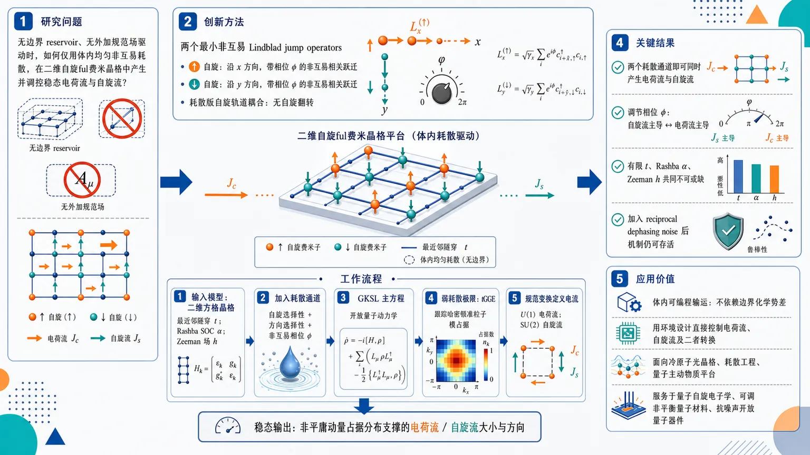
研究问题如何在没有边界 reservoir 或外加规范场驱动的二维自旋ful费米晶格中，仅通过体内均匀的非互易耗散过程，产生并可控调节稳态电荷流与自旋流。创新方法提出两个最小非互易 Lindblad jump operators：让 ↑ 自旋沿 x 方向发生带相位 φ 的非互易相关跃迁，让 ↓ 自旋沿 y 方向发生带相位 φ 的非互易相关跃迁；它们构成“耗散版自旋轨道耦合”，不需要自旋翻转，却能借助 Rashba SOC 与 Zeeman 场把耗散相位转化为电荷/自旋输运旋钮。工作流程输入二维方格晶格自旋ful费米子模型：最近邻隧穿 t、Rashba 自旋轨道耦合 α、Zeeman 磁场 h；加入两个自旋选择性、方向选择性的非互易耗散通道；用 GKSL 主方程描述开放动力学；在弱耗散极限下用 tGGE 跟踪哈密顿准粒子模占据；通过 U(1) 与 SU(2) 规范变换定义电荷流和自旋流；输出稳态中由非平庸动量占据分布支撑的电荷流/自旋流大小与方向。关键结果两个耗散通道已足够同时产生电荷流和自旋流；调节 jump operator 中的非互易相位 φ，可把主导输运机制从自旋流主导切换为电荷流主导；有限隧穿、Rashba 耦合和 Zeeman 磁场共同不可或缺；即使加入 reciprocal dephasing noise，准粒子稳态占据仍保持非平庸分布，电流机制仍可存活。应用价值为冷原子光晶格、耗散工程和量子主动物质平台提供一种体内可编程输运方案：不依赖边界化学势差，而用环境设计直接控制电荷流、自旋流及二者转换，可服务于量子自旋电子学、可调非平衡量子材料和抗噪声开放量子器件设计。第一部分：核心概览 (Overview)
非互易耗散可在二维自旋ful费米冷原子体系中同时产生并调控电荷流与自旋流。核心贡献在于：在含有限隧穿、Rashba 自旋轨道耦合与Zeeman 磁场的非相互作用晶格模型中，识别出诱导稳态电荷/自旋输运所需的最小非互易 jump operators；仅需两个分别作用于不同自旋与空间方向的耗散通道，即可产生两类电流。通过调节耗散跃迁相位的非互易程度，主导输运机制可在自旋流与电荷流之间切换。研究位置处于量子主动物质、耗散工程与自旋电子学输运控制的交叉前沿。
---
第二部分：结构化快速回顾
《Controlling charge and spin currents through nonreciprocal dissipative processes》（None，）
背景
非平衡量子系统中保持量子相干并主动控制输运，是量子材料、冷原子和量子主动物质中的核心问题。传统耗散工程多用于制备非平庸稳态，近年非互易耗散耦合因打破 detailed balance 而成为产生非平衡量子效应的新机制。
方法
二维方格晶格上的自旋ful费米子受到三类哈密顿量作用：最近邻隧穿 (t)、Rashba 自旋轨道耦合 (α)、Zeeman 磁场 (h)。开放系统动力学用 Gorini-Kossakowski-Sudarshan-Lindblad master equation 描述。稳态采用弱耗散极限下的 time-dependent generalized Gibbs ensemble, tGGE 方法分析。
结果
两个非互易耗散 jump operators 即可产生电荷流和自旋流：(LNR,xₙ,ₘ,ₚ̆ₐᵣᵣₒw) 使 (p̆arrow) 自旋沿 (x) 方向发生非互易相关跃迁，(LNR,yₙ,ₘ,dₒwₙₐᵣᵣₒw) 使 (downarrow) 自旋沿 (y) 方向发生非互易相关跃迁。两者联合构成耗散版 spin-orbit coupling，但不涉及自旋翻转。
讨论
电流来源于哈密顿量相干演化与非互易耗散稳态分布之间的协同。Rashba 耦合提供自旋-动量关联，Zeeman 场打破自旋简并，非互易 jump operators 打破空间反演与时间反演相关对称性，从而使准粒子模占据分布非平庸。
局限
模型为非相互作用二次费米子体系，主要依赖弱耗散 tGGE 框架；强耗散、强相互作用、有限温度实验噪声、真实冷原子实现中的 photon mode 消除误差等问题未在可用内容中展开。提供内容止于 III.3 的自旋流公式推导中段，后续数值结果与完整参数扫描缺失。
结论
非互易耗散不仅可作为退相干来源，也可成为可编程输运驱动。通过设计自旋选择性、方向选择性的耗散相关跃迁，可以在无边界 reservoir 的 bulk 系统中产生并控制稳态电荷流与自旋流。
---
第三部分：逐章节冷凝解析 (Section-by-Section Condensing)
Abstract
- Nonreciprocal dissipation generates controllable charge and spin currents
二维自旋ful费米原子系统在同时破缺空间反演对称性与时间反演对称性时，可通过非互易耗散机制产生并调控电荷流和自旋流。核心表述为：*"We investigate the generation and control of both charge and spin currents via nonreciprocal dissipative mechanisms in a two-dimensional spinful fermionic atom quantum system with broken inversion and time-reversal symmetries."*
- Weak dissipative coupling enables minimal jump-operator identification
分析框架采用 GKSL master equation 与 time-dependent generalized Gibbs ensemble，目标是在弱耗散耦合 regime 中找出诱导并控制电荷/自旋流所需的最小非互易 jump operators。关键依据是：*"Within the Gorini-Kossakowski-Sudarshan-Lindblad master equation formalism and using an approach based on the time-dependent generalized Gibbs ensemble, we identify in the weak dissipative coupling regime the minimal set of nonreciprocal jump operators required to induce charge and spin currents and to control both their direction and magnitude."*
- Two spin-selective directional jump operators are sufficient
当体系具有有限 tunneling、Rashba coupling 与 magnetic field 时，两个 jump operators 的组合已经足够：每个自旋物种被非互易地耦合到不同空间运动方向。原始证据为：*"We find that in the presence of finite tunneling, Rashba coupling and magnetic field, the combine application of two jump operators nonreciprocally coupling each spin species to a different spatial direction of motion is sufficient to generate both types of current."*
- Nonreciprocity tunes transport from spin-dominated to charge-dominated
通过调节 jump operators 的非互易程度，主导输运机制可从自旋流主导转向电荷流主导。关键句为：*"by tuning the degree of nonreciprocity of the jump operators we modify the dominant transport mechanism from spin to charge."*
- Mechanism survives dephasing noise
加入额外 dephasing noise 后，准粒子模的稳态占据分布仍非平庸，这是非零电流存在的必要条件。证据为：*"this nonreciprocal current generation mechanism is robust to the application of dephasing noise as even in the presence of this additional dissipative process the steady-state occupation distributions for the quasiparticle modes of the Hamiltonian remains non-trivial, an essential requirement to obtain non-zero currents."*
---
I Introduction
- Non-equilibrium control with quantum coherence is the central challenge
非平衡方案控制量子材料动力学是量子科学中的重要问题，关键困难在于诱导 many-body 非平衡动力学同时保持量子相干性。对应原文：*"How to exert control over the dynamical properties of quantum materials via non-equilibrium schemes is a question of paramount importance in quantum science"*；进一步强调：*"a major challenge resides in the development of methods to induce non-equilibrium dynamics in many-body systems while maintaining quantum coherence."*
- Dissipative engineering can stabilize non-trivial quantum states
受控耦合耗散过程可稳定复杂量子性质，形成耗散工程路线。原文指出：*"One promising approach to tackle this problem has been to couple, in a controlled manner, quantum systems to dissipative processes to stabilize complex quantum properties."* 该路线已用于工程化拓扑费米态与相互作用 many-body 系统动力学：*"this approach has been used to engineer topological states in fermionic matter"*，以及 *"tailor the dynamical properties of interacting many-body systems."*
- Quantum active matter expands dissipative engineering through nonreciprocity
量子主动物质将经典 active matter 中的非互易耦合思想引入量子耗散系统；非互易耗散通道通过破坏 detailed balance 产生平衡态中不存在的集体效应。原文为：*"the realm of possibility offered by dissipative engineering has significantly grown due to its nascent connection to the field of quantum active matter"*；机制表达为：*"the design of nonreciprocal dissipative couplings breaking detailed balance has lead to the emergence of quantum collective effects unknown in equilibrium situations."*
- Nonreciprocal dissipation has already produced multiple exotic phenomena
相关现象包括：无规范场的 persistent currents、无随机性的 entanglement phase transitions、quantum flocks、dissipative phase transitions、exceptionality 与 critical fluctuations 的耦合，以及耗散光腔稳定电流。证据为：*"Interesting examples include inducing persistent currents without the application of a gauge field"*，*"realizing entanglement phase transitions without stochasticity"*，*"quantum flocks"*，*"dissipative phase transitions"*，*"addressing the interplay of exceptionality and critical fluctuations"*，以及 *"stabilizing currents via dissipative optical cavity."*
- Persistent currents exemplify quantum coherence in closed systems
一维环上的 persistent currents 是量子相干的典型表现，需要时间反演对称性破缺，并由密度矩阵非对角元的反对称组合体现。原文为：*"In closed systems, a striking example of quantum coherence is given by the stabilization of persistent currents circulating along one-dimensional rings."* 其检测方式为：*"charge current operators as they are probing antisymmetric combinations of the off-diagonal entries of the corresponding density matrix."*
- Cold atoms can break time-reversal symmetry through artificial gauge fields
在超冷原子系统中，人工磁场或规范场可实现时间反演对称性破缺。原文为：*"In ultracold atomic systems, for example, broken time-reversal symmetry can be achieved using artificial magnetic or gauge fields."*
- Beyond one-dimensional chains, current-carrying phases include chiral ladder states and Hall probes
二维或准二维多体体系中，电流携带态与复杂手性相有关，包括 square ladder 与 triangular ladder 几何中的 chiral phases，以及强关联相的 Hall response probes。原始证据为：*"the search of current carrying systems has led to the discovery of complex chiral phases in square and triangular ladder geometries, and to the development of Hall response probes for strongly interacting phases."*
- Local charge-current measurements are experimentally accessible
局域电荷流测量已可在光晶格冷原子与超导电路中实现。原文为：*"measuring local charge currents is now even possible for both ultracold atoms in optical lattices and superconducting circuits."*
- Most dissipative current generation relies on boundary reservoirs, not bulk uniform dissipation
开放量子系统中，多数工作通过边界 reservoir 产生电荷流；采用 bulk 中均匀耗散耦合诱导电流的研究较少。原文为：*"most works propose to generate charge currents by coupling reservoirs to the boundaries of a system"*，对比：*"with much fewer works introducing uniform dissipative couplings within the bulk to induce charge currents."*
- Spin currents connect the work to spintronics and spin Hall physics
除电荷自由度外，自旋流也是非平庸输运核心，spintronics 的关键问题之一是 charge-spin current conversion，典型例子为 spin Hall effect。证据为：*"the dynamics of spin currents is the central focus of spintronics"*；以及 *"a key issue relates to conversion processes between charge and spin currents, with the notable example of the spin Hall effect."*
- Rashba-coupled two-dimensional electron gas is the reference platform
研究电荷流和自旋流相互作用的典型体系是含 Rashba spin-orbit coupling 的二维电子气。原文为：*"A typical system to study the interplay of charge and spin currents is the two-dimensional electron gas in the presence of Rashba spin-orbit coupling."*
- Target system combines spin-orbit-coupled fermions and nonreciprocal dissipative tunneling
目标是研究二维 spin-orbit coupled spinful fermions 中，由非互易耗散机制产生电荷流与自旋流。原文明确：*"we investigate the generation of charge and spin currents via nonreciprocal dissipative mechanisms considering a two-dimensional system of spin-orbit coupled spinful fermionic particles."*
- Current magnitude and direction are controlled by dissipative tunneling phase
电荷流与自旋流的大小和方向可通过调节耗散跃迁过程的相位控制，该相位将粒子运动方向与内部自旋态关联。原文为：*"the magnitude and direction of both currents can be controlled by tuning the phase of the dissipative tunneling processes correlating the direction of motion of the particles to their internal spin states."*
- Magnetic field is crucial for finite currents
磁场项是电流出现的关键成分。原文为：*"the presence of a magnetic field term in the Hamiltonian is crucial for the emergence of currents."*
- Currents survive competition with reciprocal dephasing noise
体系还考察了非互易耗散通道与 reciprocal dephasing noise 的竞争，并显示存在噪声时仍可维持电流。原文为：*"we investigate the competition between the nonreciprocal dissipative channels and reciprocal dephasing noise demonstrating that currents are also present in this regime."*
- Long-time behavior is obtained by tGGE in weak dissipation
长时间稳态行为通过弱耗散极限有效的 time-dependent generalized Gibbs ensemble 得到，该方法依赖 Hamiltonian conserved quantities。原文为：*"We determine the long-time, steady state, behavior of the dissipative system by employing the time-dependent generalized Gibbs ensemble approach valid in the weakly dissipative limit."* 以及：*"This approach relies on the identification of the Hamiltonian conserved quantities."*
---
II Model
II.1 Hamiltonian
- Two-dimensional square-lattice spinful fermions with Rashba coupling
系统为二维方格晶格中的自旋ful费米原子，具有 Rashba spin-orbit coupling。原文为：*"We consider spinful fermionic atoms confined to a two-dimensional square lattice, experiencing Rashba spin-orbit coupling."*
- Hamiltonian contains kinetic, spin-orbit, and magnetic terms
总哈密顿量为
[
H=Hₖᵢₙ+HSOC+Hₘₐg.
]
对应原文：*"The Hamiltonian of the system is given by (H=Hₖᵢₙ+HSOC+Hₘₐg)."*
- Kinetic term is spin-conserving nearest-neighbor tunneling
(Hₖᵢₙ) 描述 (x,y) 两个方向的最近邻隧穿，幅度为 (t)，不改变自旋。原文为：*"(Hₖᵢₙ) describes the tunneling along the two directions of the lattice with amplitude (t)."* 以及：*"the tunneling terms in (Hₖᵢₙ) ... do not act on the spin degrees of freedom."*
- Rashba term couples hopping to spin flips with direction-dependent phase
(HSOC) 的强度为 (α)，其隧穿伴随自旋翻转，并带有方向依赖的 (π/2) 相位。原文为：*"The Rashba spin-orbit coupling is modeled by (HSOC) of strength (α)."* 以及：*"in (HSOC) the tunneling process is accompanied by a spin flip with a direction-dependent (π/2) phase."*
- Magnetic field is a Zeeman spin-splitting term
(Hₘₐg) 为 Zeeman 磁场项，大小 (h)，区分 (p̆arrow) 与 (downarrow) 自旋态。原文为：*"The Zeeman magnetic field with magnitude (h) distinguishes between the spin states and is captured by (Hₘₐg)."*
- Spinor notation and density normalization are explicit
费米自旋量为
[
ěc cₙ,ₘdagger=(cₙ,ₘ,ₚ̆ₐᵣᵣₒwdagger,cₙ,ₘ,dₒwₙₐᵣᵣₒwdagger),
quad
ěc cₙ,ₘ=(cₙ,ₘ,ₚ̆ₐᵣᵣₒw,cₙ,ₘ,dₒwₙₐᵣᵣₒw)^t.
]
总粒子数
[
N=sumₙ,ₘ(nₙ,ₘ,ₚ̆ₐᵣᵣₒw+nₙ,ₘ,dₒwₙₐᵣᵣₒw),
]
密度定义为
[
h̊odₑₙₛᵢₜy=N/(2L²⁾.
]
满填充条件 (Nₚ̆arrow=N_downarrow=L²) 对应 (h̊odₑₙₛᵢₜy=1)。原文为：*"The particle density is given by (h̊odₑₙₛᵢₜy=N/(2L²)) such that a fully filled lattice, (Nₚ̆ₐᵣᵣₒw=Ndₒwₙₐᵣᵣₒw=L²), corresponds to (h̊odₑₙₛᵢₜy=1)."*
- Periodic boundary conditions are imposed in both directions
晶格尺寸为 (L× L)，两个空间方向均采用周期性边界条件。原文为：*"We consider periodic boundary conditions in both spatial directions."*
---
II.2 Dissipative processes
- Open-system dynamics follows GKSL master equation
密度矩阵 (h̊o) 的 Markovian 开放系统动力学由 GKSL master equation 给出：
[
partialₜₕ̊o=mathcal Lh̊o=-fracihbar[H,h̊o]+mathcal D(h̊o),
]
[
mathcal D(h̊o)=frac12sumⱼΓⱼ
łeft(2Lⱼₕ̊o Lⱼ^dagger-Lⱼ^dagger Lⱼₕ̊o-h̊o Lⱼ^dagger Lⱼᵢ̊ght).
]
原文为：*"As we consider Markovian dissipative processes, the dynamics of the density matrix (h̊o) is given by the Gorini-Kossakowski-Sudarshan-Lindblad (GKSL) master equation."*
- Liouvillian combines Hamiltonian evolution and dissipator
(mathcal L) 同时包含哈密顿相干演化与耗散项；每个 jump operator (Lⱼ) 具有强度 (Γⱼ)。原文为：*"with Liouvillian (L) capturing both the Hamiltonian evolution and the dynamics due to the dissipator (D(h̊o)) consisting of dissipative processes of strength (Γⱼ) for the corresponding jump operator (Lⱼ)."*
- Nonreciprocal jump operators implement correlated hopping
非互易耗散 jump operators 为
[
LNR,xₙ,ₘ,σ
=c^daggerₙ₋₁,ₘ,σcₙ,ₘ,σ
+eⁱφc^daggerₙ₊₁,ₘ,σcₙ,ₘ,σ,
]
[
LNR,yₙ,ₘ,σ
=c^daggerₙ,ₘ₋₁,σcₙ,ₘ,σ
+eⁱφc^daggerₙ,ₘ₊₁,σcₙ,ₘ,σ.
]
强度为 (ΓNR)，在整个晶格中均匀。原文为：*"we consider the following jump operators"*，并说明：*"with strength (ΓNR), uniform throughout the lattice. These operators realize a correlated hopping dissipative process."*
- Two selected jump operators form a dissipative analogue of spin-orbit coupling
仅使用 (LNR,xₙ,ₘ,ₚ̆ₐᵣᵣₒw) 与 (LNR,yₙ,ₘ,dₒwₙₐᵣᵣₒw) 时，(p̆arrow) 自旋与 (x) 方向运动非互易耦合，(downarrow) 自旋与 (y) 方向运动非互易耦合；该结构类似 spin-orbit coupling，但不发生自旋翻转。原文为：*"we realize a dissipative analogue of the spin-orbit coupling by nonreciprocally coupling each spin species with a direction of motion; however, by contrast to spin-orbit coupling, it does not involve spin flips."*
- Combined action generates both charge and spin currents
这两个 jump operators 的联合作用可产生电荷流和自旋流。原文为：*"the combined action of these two jump operators generates both charge and spin currents."*
- Experimental implementation may use Raman transitions and lossy photon modes
可能的冷原子实现方式是在光晶格中使用 Raman transitions 和 lossy photon modes，耦合形式类似
[
a^daggerₘ,ₙ
łeft(
Ømega c^daggerₙ₋₁,ₘ,σcₙ,ₘ,σ
+Ømega eⁱφc^daggerₙ₊₁,ₘ,σcₙ,ₘ,σ
i̊ght)+H.c.
]
原文为：*"Dissipative processes modeled by the jump operators given in Eq. (4) could in principle be experimentally realized with ultracold atoms in optical lattices by employing Raman transitions making use of lossy photon modes."*
- Adiabatic elimination of short-lived photon modes yields effective dissipators
当 photon modes (aₘ,ₙ) 寿命极短时，可消去其动力学，得到 Eq. (4) 的有效耗散通道。原文为：*"In the limit of very short lifetimes for the photon modes (aₘ,ₙ), one can eliminate their dynamics to obtain effective dissipative channels described by the jump operators detailed in Eq. (4)."*
- Robustness against reciprocal dephasing noise is tested
退相干噪声由 reciprocal jump operator
[
L^dₙ,ₘ=nₙ,ₘ,ₚ̆ₐᵣᵣₒw+nₙ,ₘ,dₒwₙₐᵣᵣₒw
]
描述，强度 (Γ_d)，在晶格中均匀。原文为：*"we check that the currents generated by the action of the nonreciprocal dissipators are robust under dephasing noise modeled by the following reciprocal jump operator"*，以及：*"of strength (Γ_d), again uniform throughout the lattice."*
---
II.3 Diagonalization of the Hamiltonian
- Quadratic non-interacting Hamiltonian permits exact diagonalization
哈密顿量是非相互作用且关于费米算符二次，因此可通过酉变换对角化并识别 conserved quantities。原文为：*"The Hamiltonian described in Eq. (1) is non-interacting and quadratic in the fermionic operators."* 以及：*"we can find the conserved quantities of this system by performing a unitary transformation diagonalizing the Hamiltonian."*
- Conserved quantities are essential for tGGE
后续 tGGE 方法依赖哈密顿量守恒量，因此对角化是核心步骤。原文为：*"As we will investigate the system dynamics using a method based on the time-dependent generalized Gibbs ensemble (tGGE) ... identifying the Hamiltonian conserved quantities is essential."*
- Fourier transformation defines momentum-space fermions
动量空间算符定义为
[
cěc ₖ,σ=frac1Lsumₙ,ₘ₌₁^L eⁱ⁽kₓ ⁿ⁺k_y m⁾cₙ,ₘ,σ,
]
其中
[
kₓ,y=frac2π lL,quad l=0,dots,L-1.
]
原文为：*"As a first step, we perform a Fourier transformation to momentum space"*。
- Kinetic and magnetic terms are diagonal in momentum space
动能色散为
[
ϵ(ěc k)=-2t(o̧s kₓ₊ₒ̧s k_y),
]
且
[
Hₖᵢₙ=suměc ₖϵ(ěc k)ěc c^daggerěc ₖěc cěc ₖ,
quad
Hₘₐg=hsuměc ₖěc c^daggerěc ₖσ_zěc cěc ₖ.
]
原文为：*"This transformation renders the kinetic and magnetic field terms of the Hamiltonian in a diagonal form."*
- Spin-orbit coupling remains spin-mixing in momentum space
Rashba 项在动量空间为
[
HSOC
=2αsuměc ₖěc c^daggerěc ₖ
łeft(σ_ysin kₓ₋σₓsin k_yi̊ght)
ěc cěc ₖ.
]
原文为：*"However, the spin-orbit coupling Hamiltonian couples the two spin states and in momentum space is given by..."*
- Total Bloch Hamiltonian has identity plus Pauli-vector structure
总哈密顿量可写为
[
H=suměc ₖěc c^daggerěc ₖ
[ϵ(ěc k)mathbb I
+2ασ_ysin kₓ
-2ασₓsin k_y
+hσ_z]ěc cěc ₖ.
]
原文对应：*"leading to the following form for the total Hamiltonian."*
- Band energies split into two helicity branches
对角化后得到
[
H=suměc ₖ
[E₊₍ěc k)γ^daggerěc ₖ,₊γěc ₖ,₊
+E₋₍ěc k)γ^daggerěc ₖ,₋γěc ₖ,₋],
]
其中
[
E_±(ěc k)=ϵ(ěc k)±
sqrt4α²⁽sin² kₓ₊sin² k_y)+h².
]
原文为：*"The Hamiltonian can then be brought in a diagonal form"*，并给出：*"where (γěcₖ,₊) and (γěcₖ,₋) are the fermionic quasiparticle operators representing the eigenmodes of the Hamiltonian."*
- Unitary transformation coefficients depend on Rashba vector and magnetic field
原始自旋算符与准粒子算符关系为
[
beginpmatrix
cěc ₖ,ₚ̆ₐᵣᵣₒw
cěc ₖ,dₒwₙₐᵣᵣₒw
endpmatrix
=
beginpmatrix
uₚ̆ₐᵣᵣₒw,₊(ěc k)&uₚ̆ₐᵣᵣₒw,₋(ěc k)
udₒwₙₐᵣᵣₒw,₊(ěc k)&udₒwₙₐᵣᵣₒw,₋(ěc k)
endpmatrix
beginpmatrix
γěc ₖ,₊
γěc ₖ,₋
endpmatrix.
]
系数包含
[
b(ěc k)=-2α(sin k_y+isin kₓ₎.
]
该复函数编码 Rashba SOC 的动量依赖相位结构。原文为：*"The coefficients of the transformation are given by..."*
- Four high-symmetry momenta require separate treatment
对 (ěc k=(0,0),(0,π),(π,0),(π,π))，(sin kₓ₌sin k_y=0)，SOC 混合消失，变换简化为
[
uₚ̆ₐᵣᵣₒw₊=udₒwₙₐᵣᵣₒw₋=1,quad
uₚ̆ₐᵣᵣₒw₋=udₒwₙₐᵣᵣₒw₊=0.
]
原文为：*"it is important to consider separately the transformation for four special momentum values"*，以及：*"This last result also holds in the absence of a magnetic field."*
- Quasiparticle occupations define conserved-mode populations
每个本征模占据定义为
[
n_ν(ěc k)=
łangleγ^daggerěc ₖ,νγěc ₖ,νångle,
quad ν=±.
]
原文为：*"Finally, we denote the occupation of each eigenmode, labeled (ν=±), as..."*
---
III Current observables
- Currents in dissipative systems contain Hamiltonian and dissipative contributions
开放耗散系统中的电流一般包括两部分：Hamiltonian currents 与 dissipative currents，后者正比于耗散耦合强度。原文为：*"In such dissipative systems, currents generally consists of two different terms: Hamiltonian and dissipative currents, where the latter is proportional to the dissipative coupling strength."*
- Charge and spin currents are defined using gauge transformations
电荷流由局域 U(1) 规范变换定义，自旋流由局域 SU(2) 规范变换定义。原文为：*"we focus mostly on how the charge and spin currents are defined for the Hamiltonian part using local U(1) and SU(2) gauge transformations."*
- Current expectation values depend on two-point correlations
电荷/自旋流算符及其期望值最终由两点关联函数表示。原文为：*"obtaining expressions for both the charge- and spin-current operators and for the corresponding expectation values highlighting their dependence on two-point correlation functions."*
---
III.1 Definitions of the local gauge transformations and of the associated currents
- Charge current follows from local U(1) phase twist
局域 U(1) 变换为
[
ěc cₙ,ₘ=Uₙ,ₘěctilde cₙ,ₘ,
quad Uₙ,ₘ=eⁱǎrphⁱₙ,ₘ,
]
其中 (ǎrphiₙ,ₘ) 是平滑缓变实函数。原文为：*"To derive the charge-current operators on the square lattice, we make use of the local U(1) transformation."*
- Small phase gradients define charge vector potentials
当 (ǎrphiₙ,ₘłl1)，
[
U^daggerₙ,ₘUₙ₊₁,ₘsimeq1+iAc,xₙ,ₘ,
quad
Ac,xₙ,ₘequivǎrphiₙ₊₁,ₘ-ǎrphiₙ,ₘ,
]
[
U^daggerₙ,ₘUₙ,ₘ₊₁simeq1+iAc,yₙ,ₘ,
quad
Ac,yₙ,ₘequivǎrphiₙ,ₘ₊₁-ǎrphiₙ,ₘ.
]
原文为：*"we defined the vector potentials corresponding to the U(1) transformation in the x- and y-direction."*
- Charge-current operator is the functional derivative with respect to U(1) vector potential
[
hat J_c⁽ⁿ,m⁾;u
=
łeft.
fracδ tilde HU₍₁₎
δ Ac,uₙ,ₘ
i̊ght|ǎᵣₚₕᵢ₌₀,
quad uinx,y.
]
原文为：*"we can define the charge-current operators as being linearly coupled to the U(1) vector potentials."*
- Spatial direction convention is fixed by positive current flow
(hat J_c⁽ⁿ,m⁾;x) 表示从 ((n,m)) 到 ((n+1,m)) 的正向电荷流；(hat J_c⁽ⁿ,m⁾;y) 表示从 ((n,m)) 到 ((n,m+1)) 的正向电荷流。原文为：*"denotes the charge-current operator associated with a positive charge current along (x) from lattice sites ((n,m)) to ((n+1,m))"*，以及 *"associated with a positive charge current along (y) from sites ((n,m)) to ((n,m+1))."*
- Spin current follows from local SU(2) spin rotation
SU(2) 变换为
[
ěc cₙ,ₘ=Vₙ,ₘěctilde cₙ,ₘ,
quad
Vₙ,ₘ=eⁱθboldsymbolømegaₙ,ₘḑotboldsymbolσ,
]
其中 (boldsymbolσ=(σₓ,σ_y,σ_z))，(|boldsymbolømegaₙ,ₘ|=1)，(θłl1)。原文为：*"we obtain the spin-current operators on the square lattice by exploiting the SU(2) gauge transformation."*
- SU(2) gauge potentials contain gradient and non-Abelian cross product terms
[
mathbf As,xₙ,ₘ
=
θ(boldsymbolømegaₙ₊₁,ₘ-boldsymbolømegaₙ,ₘ)
+θ²⁽boldsymbolømegaₙ,ₘ×boldsymbolømegaₙ₊₁,ₘ),
]
[
mathbf As,yₙ,ₘ
=
θ(boldsymbolømegaₙ,ₘ₊₁-boldsymbolømegaₙ,ₘ)
+θ²⁽boldsymbolømegaₙ,ₘ×boldsymbolømegaₙ,ₘ₊₁).
]
交叉积项体现 SU(2) 的非阿贝尔结构。原文为：*"where the SU(2) gauge potentials are defined as..."*
- Spin-current operator is the functional derivative with respect to SU(2) gauge potential
[
hat J⁽ⁿ,m⁾;uσ_β
=
łeft.
fracδtilde HSU₍₂₎
δ(mathbf As,uₙ,ₘ)^β
i̊ght|θ₌₀,
quad
βinx,y,z.
]
原文为：*"the spin-current operators are defined as being linearly coupled to the SU(2) gauge potentials."*
- Spin current carries two indices: flow direction and spin polarization
自旋流局域算符有两个指标：上标 (uinx,y) 表示空间流动方向；下标 (σ_β) 表示被输运的自旋方向。原文为：*"the local spin-current operators possess two indexes: the top index (uinx,y) refers to the spatial direction of a positive spin current flow and the bottom index (σβ) refers to the spin direction carried by the current."*
---
III.2 Charge currents
- U(1)-transformed Hamiltonian produces current-coupling terms
对哈密顿量做 U(1) 变换后，线性于 (Ac,x) 与 (Ac,y) 的项分别来自 kinetic 与 Rashba SOC。原文为：*"Using the U(1) transformation, the Hamiltonian ... becomes..."*
- Charge current in x direction has kinetic and Rashba terms
[
hat J_c⁽ⁿ,m⁾;x
=
-it(ěc c^daggerₙ,ₘěc cₙ₊₁,ₘ
-ěc c^daggerₙ₊₁,ₘěc cₙ,ₘ)
+
α(ěc c^daggerₙ,ₘσ_yěc cₙ₊₁,ₘ
+ěc c^daggerₙ₊₁,ₘσ_yěc cₙ,ₘ).
]
第一项是普通粒子流，第二项由 Rashba SOC 产生。原文为：*"taking the functional derivative ... leads to the charge-current operator in the x-direction."*
- Charge current in y direction differs by Rashba Pauli matrix and sign
[
hat J_c⁽ⁿ,m⁾;y
=
-it(ěc c^daggerₙ,ₘěc cₙ,ₘ₊₁
-ěc c^daggerₙ,ₘ₊₁ěc cₙ,ₘ)
-
α(ěc c^daggerₙ,ₘσₓěc cₙ,ₘ₊₁
+ěc c^daggerₙ,ₘ₊₁σₓěc cₙ,ₘ).
]
Rashba 项在 (y) 方向涉及 (σₓ)，并带负号。原文为：*"and the charge-current operator in the y-direction."*
- Expectation values are expressed through two-point correlators
(x) 方向电荷流期望值为
[
J^x_c
=
2t[
Imłangle c^daggerₙ,ₘ,ₚ̆ₐᵣᵣₒwcₙ₊₁,ₘ,ₚ̆ₐᵣᵣₒwångle
+
Imłangle c^daggerₙ,ₘ,dₒwₙₐᵣᵣₒwcₙ₊₁,ₘ,dₒwₙₐᵣᵣₒwångle]
]
[
-2α[
Imłangle c^daggerₙ,ₘ,dₒwₙₐᵣᵣₒwcₙ₊₁,ₘ,ₚ̆ₐᵣᵣₒwångle
-
Imłangle c^daggerₙ,ₘ,ₚ̆ₐᵣᵣₒwcₙ₊₁,ₘ,dₒwₙₐᵣᵣₒwångle].
]
原文为：*"we then obtain the following expectation values for the charge currents in terms of two-point correlation functions."*
- y-direction charge current mixes imaginary spin-conserving and real spin-flip correlations
[
J^y_c
=
2t[
Imłangle c^daggerₙ,ₘ,ₚ̆ₐᵣᵣₒwcₙ,ₘ₊₁,ₚ̆ₐᵣᵣₒwångle
+
Imłangle c^daggerₙ,ₘ,dₒwₙₐᵣᵣₒwcₙ,ₘ₊₁,dₒwₙₐᵣᵣₒwångle]
]
[
-2α[
Rełangle c^daggerₙ,ₘ,dₒwₙₐᵣᵣₒwcₙ,ₘ₊₁,ₚ̆ₐᵣᵣₒwångle
+
Rełangle c^daggerₙ,ₘ,ₚ̆ₐᵣᵣₒwcₙ,ₘ₊₁,dₒwₙₐᵣᵣₒwångle].
]
这里 (x) 与 (y) 方向对 spin-flip 关联的实部/虚部选择不同，源于 Rashba 项的方向依赖相位。原文完整依据为：*"the charge currents have contributions from both the kinetic terms of the Hamiltonian, proportional to the tunneling amplitude (t), and from the Rashba spin-orbit coupling associated to spin flip terms, proportional to (α)."*
- Translational invariance removes site dependence
电流期望值不再显含 ((n,m))，因为体系平移不变。原文为：*"we have now dropped the site label ((n,m)) for the charge current expectation values as the system is translationally invariant."*
---
III.3 Spin currents
- Spin-current derivation parallels charge-current derivation but uses SU(2)
自旋流同样通过规范变换与泛函导数得到，但规范场为 SU(2) 矢量。原文为：*"Similarly, using the SU(2) gauge transformations and definitions also presented in Sec. III.1, we can obtain explicit expressions for the spin-current operators and expectation values."*
- SU(2)-transformed Hamiltonian contains kinetic spin-current couplings
SU(2) 变换后，kinetic 部分产生线性耦合
[
-itsumₗ,ⱼ,β(mathbf As,xₗ,ⱼ)^β
(ěc c^daggerₗ,ⱼσ_βěc cₗ₊₁,ⱼ
-ěc c^daggerₗ₊₁,ⱼσ_βěc cₗ,ⱼ),
]
以及 (y) 方向对应项。原文为：*"the Hamiltonian ... becomes"*，随后给出这些 (As,u)-线性项。
- Rashba terms transform nontrivially under SU(2)
SOC 部分含有
[
V^daggerₗ,ⱼσₓ Vₗ,ⱼ₊₁,quad
V^daggerₗ,ⱼσ_y Vₗ₊₁,ⱼ
]
等结构，因此自旋流不仅由 kinetic hopping 决定，也由 SOC 中的 Pauli matrix 乘积决定。原文为：*"To simplify Eq. (29), we make the following change in notation: (Vdaggerₙ,ₘσβVₙₚᵣⁱₘₑ,ₘₚᵣⁱₘₑ=...=tildeσβVdaggerₙ,ₘVₙₚᵣⁱₘₑ,ₘₚᵣⁱₘₑ)."*
- Transformed Pauli matrices reduce to ordinary Pauli matrices at zero gauge angle
在 (θ=0) 极限下，(tildeσ_β=σ_β)。原文为：*"the transformed Pauli matrices reduce to the usual Pauli matrices in the limit of vanishing (θ) such that (tildeσβ|θ₌₀=σβ)."*
- Spin-current operator in x direction contains kinetic and SOC components
[
hat J⁽ⁿ,m⁾;xσ_β
=
-it(ěc c^daggerₙ,ₘσ_βěc cₙ₊₁,ₘ
-ěc c^daggerₙ₊₁,ₘσ_βěc cₙ,ₘ)
]
[
+
α(
ěc c^daggerₙ,ₘσ_yσ_βěc cₙ₊₁,ₘ
+
ěc c^daggerₙ₊₁,ₘσ_βσ_yěc cₙ,ₘ).
]
原文为：*"we obtain expressions for the spin-current operators in the x-direction."*
- Spin-current formula shows spin non-conservation under SOC
SOC 贡献中出现 (σ_yσ_β) 与 (σ_βσ_y)，说明自旋流不只是“某一自旋分量的粒子流”，还受到自旋轨道耦合引起的自旋进动影响。原文表达基础为：*"the bottom index (σβ) refers to the spin direction carried by the current"*，结合 Eq. (31) 的 Pauli 矩阵乘积结构。
- Provided text truncates during y-direction spin-current expression
可用内容在 (hat J⁽ⁿ,m⁾;yσ_β) 公式中断，完整 (y) 方向自旋流期望值、后续 tGGE 方法和数值结果章节未包含在输入材料中；因此无法提取后续参数数值、曲线趋势、稳态电流大小或 dephasing 鲁棒性定量数据。
---
第四部分：深度理解与语言支持 (Understanding & Nuance)
1. 术语解析
Nonreciprocal dissipative processes
含义：耗散跃迁从中心格点向左右/上下两个方向的振幅或相位不满足互易对称性，例如
[
c^daggerₙ₋₁cₙ₊ₑⁱφc^daggerₙ₊₁cₙ.
]
(φ) 控制两个方向跃迁的相干叠加相位，从而破坏 detailed balance。
语境中的关键微妙点：这里的非互易不是普通哈密顿量中的非厄米 hopping，而是 Lindblad jump operator 内部的方向选择性；它影响的是量子轨迹中的耗散跃迁结构。
Correlated hopping dissipative process
含义：jump operator 不是单粒子损失 (cⱼ) 或局域退相干 (nⱼ)，而是包含 (c^daggerᵢcⱼ) 的跃迁型算符，使一次耗散事件对应粒子从一个格点跃迁到邻近格点。
“correlated” 强调该过程由环境介导，跃迁方向之间存在固定相位关系，而非两个独立随机 hopping。
Time-dependent generalized Gibbs ensemble, tGGE
含义：弱耗散极限下，系统首先由哈密顿量快速建立由 conserved quantities 描述的准稳态；耗散再缓慢改变这些 conserved mode occupations。
普通 GGE 用固定拉格朗日乘子描述积分系统稳态；tGGE 则让这些参数随时间缓慢演化，直到耗散稳态。
Dissipative analogue of spin-orbit coupling
含义：两个 jump operators 将自旋物种与空间方向绑定：(p̆arrowi̊ghtarrow x)，(downarrowi̊ghtarrow y)。这类似 SOC 中自旋与动量方向耦合。
关键区别：真实 Rashba SOC 伴随自旋翻转；这里的耗散 analogue 不翻转自旋，只是自旋选择性地规定运动方向。原文强调：*"by contrast to spin-orbit coupling, it does not involve spin flips."*
Non-trivial steady-state occupation distributions
含义：哈密顿本征模 (γěc ₖ,±) 的占据 (n_ν(ěc k)) 在稳态中不是常数、不是热平衡 Fermi-Dirac 的简单对称分布，也不满足会使电流积分相互抵消的动量对称性。
非零电流要求 (ěc k) 与 (-ěc k) 或不同 helicity branch 的占据不完全对称，否则电流算符期望值会因奇函数积分抵消。
---
2. 疑难查证
为什么非互易耗散能产生稳态电流？
电流期望值本质上依赖密度矩阵非对角元或动量空间中不对称占据。例如电荷流公式中有
[
Imłangle c^daggerₙ,ₘ,σcₙ₊₁,ₘ,σångle
]
和 spin-flip 关联项。若稳态分布保持反演对称，正动量与负动量贡献相互抵消，净电流为零。
非互易 jump operator 将粒子向两个方向的跃迁以不同相位叠加：
[
c^daggerₙ₋₁cₙ₊ₑⁱφc^daggerₙ₊₁cₙ.
]
当 (φ≠0,π) 时，该耗散事件不等价于左右对称扩散，而会偏置某些动量模式。稳态 (n_ν(ěc k)) 因此变得非平庸。只要该非平庸分布与电流算符的奇对称结构匹配，就会出现非零电流。
为什么需要 Rashba coupling？
仅有普通 hopping 时，电流主要是电荷自由度中的动量不对称响应。Rashba coupling 将动量与自旋矩阵耦合：
[
2α(σ_ysin kₓ₋σₓsin k_y).
]
因此，一个自旋选择性耗散过程可通过 SOC 转化为自旋-动量耦合响应，进而产生自旋流或电荷-自旋混合流。没有 SOC，(p̆arrow) 与 (downarrow) 的运动通道更容易解耦，charge-spin conversion 机制显著受限。
为什么 Zeeman magnetic field 很关键？
Rashba SOC 本身会形成 helicity bands，但在许多对称条件下不同自旋/动量贡献仍可能相互抵消。Zeeman 项
[
hσ_z
]
打破 (p̆arrow,downarrow) 简并，使两条能带 (E_±(ěc k)) 的自旋构成发生偏置。非互易耗散造成的占据不对称不再被自旋对称性完全抵消，因此有限电流得以出现。换言之，磁场提供“选择哪种自旋混合占据更有权重”的能量偏置。
为什么 dephasing noise 不一定杀死电流？
dephasing jump operator
[
L^dₙ,ₘ=nₙ,ₘ,ₚ̆ₐᵣᵣₒw+nₙ,ₘ,dₒwₙₐᵣᵣₒw
]
倾向于破坏相干性，但它是 reciprocal 且局域密度型噪声。若非互易耗散仍能维持哈密顿准粒子模中的非平庸占据分布，电流仍可存在。关键不是所有相干都必须完美保存，而是与电流算符相关的两点关联或动量占据不对称不能完全消失。
---
第五部分：创新评估与关联 (Synthesis & Novelty)
1. 创新性判断
从 boundary-driven transport 转向 bulk nonreciprocal dissipative current generation
过去开放量子输运常通过系统边界连接 reservoirs 产生粒子流、热流或自旋流；这里的机制依赖晶格 bulk 中均匀施加的非互易 jump operators。创新点在于：稳态电流不是由边界化学势差驱动，而是由内部耗散跃迁的方向相位结构驱动。
把 quantum active matter 的 nonreciprocity 引入 charge-spin current control
近年 quantum active matter 关注非互易耗散导致的 collective effects，如 dissipative phase transitions、exceptional dynamics、quantum flocks。这里进一步将其用于电荷流与自旋流的可控生成，使非互易耗散从“产生奇异稳态”扩展为“设计输运功能”的工具。
识别出最小 jump-operator set
核心新颖性在于最小化耗散工程资源：两个 spin-selective、direction-selective jump operators 就足以产生两类电流。这个结果具有实验设计价值，因为完整的非互易网络或复杂 reservoir 结构并非必要。
实现 spin-to-charge dominant transport tuning
通过调节 jump operator 的非互易程度，即相位 (φ) 控制，主导输运可从自旋流切换到电荷流。这比单纯“产生电流”更进一步：耗散参数成为输运类型的调控旋钮。
区别于 Hamiltonian SOC：耗散 analogue 不需要 spin flips
传统 Rashba SOC 是哈密顿量中的自旋翻转 hopping；这里的耗散 analogue 通过“自旋物种—空间方向”的非互易绑定实现类似功能，但 jump operator 不翻转自旋。这一设计降低了对复杂自旋翻转耗散通道的要求，也提供了与相干 SOC 互补的控制维度。
鲁棒性测试面向真实开放系统
额外 reciprocal dephasing noise 下电流仍存在，说明机制不是依赖理想无噪声耗散的脆弱干涉，而是由非平庸准粒子占据分布支撑。对于冷原子或光学平台，退相干不可避免，因此这一鲁棒性是实验相关的重要创新点。
待确认的不足
完整数值结果、具体参数扫描、稳态电流量级、临界相位、(Γ_d/ΓNR) 鲁棒性范围、系统尺寸 (L)、填充密度 (h̊odₑₙₛᵢₜy) 依赖等未出现在提供内容中。无法判定其相对于近 2–5 年工作的定量优势，例如是否达到更高电流强度、更强抗噪声能力，或更宽参数窗口。
-
14
📊 含图深析
📄 摘要：研究负最近邻耦合的Kuramoto振子晶格，其竞争作用诱导锯齿型反铁磁有序。在一维中，缺陷密度按t⁻¹/4异常缓慢粗化，随后在与系统尺寸相关的时间tc~N^z处饱和，z=2；局域持久概率服从拉伸指数衰减，α=1/4。
💡 亮点：反铁磁Kuramoto晶格给出t⁻¹/4的异常粗化。缺陷与持久性指数几乎不依赖耦合强度。
📖 展开分析 + 配图
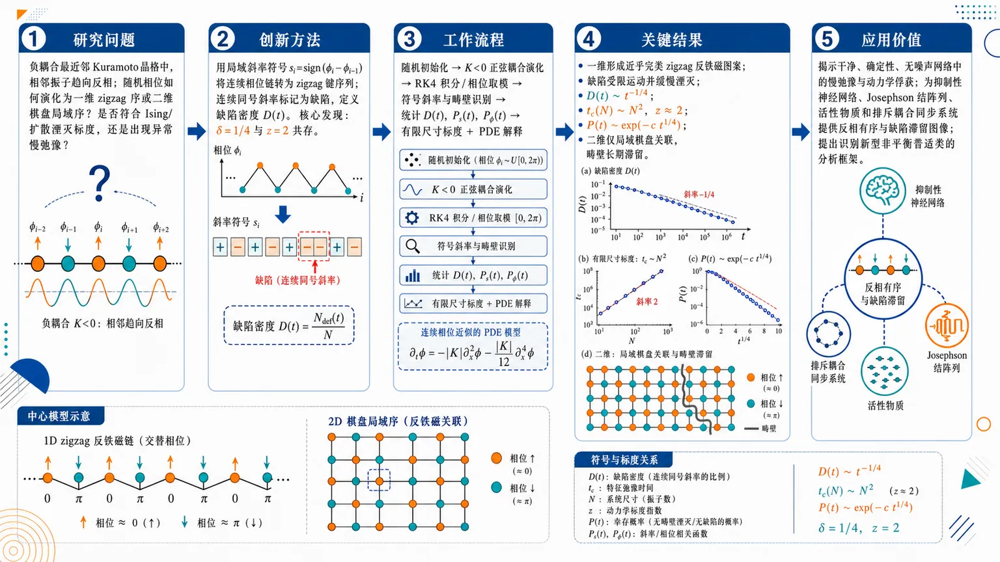
研究问题纯反铁磁最近邻 Kuramoto 晶格中，负耦合迫使相邻振子趋向反相（相差 π），系统如何从随机相位演化为一维 zigzag 反铁磁序或二维棋盘局域序？其缺陷密度、持续概率和有限尺寸弛豫是否遵循标准 Ising/扩散湮灭标度，还是存在无噪声、无无序条件下的异常慢弛豫？创新方法用局域斜率符号 sᵢ₌ₛᵢgn(φᵢ−φᵢ−₁) 把连续相位链转化为可视化的 zigzag 键序列；连续两个斜率同号即标记为缺陷，并建立缺陷密度 D(t)。Aha 点是：论文发现缺陷衰减由中短波 k⁴ 双调和弛豫控制，给出 D(t)∼t⁻¹/⁴；而有限尺寸弛豫由长波 k² 扩散模式控制，仍给出 t_c∼N²，因此 δ=1/4 与 z=2 异常共存。工作流程随机初始化一维周期相位链或二维方格相位场 → 采用负最近邻 Kuramoto 正弦耦合 K<0 演化 → 用 RK4 数值积分并在旋转参考系/相位取模下去除整体漂移 → 计算相邻相位差符号、识别 zigzag 断裂点或二维畴壁 → 统计缺陷密度 D(t)、斜率持续性 Pₛ₍ₜ₎、场持续性 P_φ(t) → 对不同系统尺寸做有限尺寸标度塌缩 → 用连续 PDE ∂tφ=−|K|∂x²φ−|K|∂x⁴φ/12 和线性稳定性解释 zigzag 波长选择与异常指数。关键结果一维链形成近乎完美的 zigzag 反铁磁图案，缺陷沿受限准闭合轨迹运动并缓慢湮灭，缺陷密度在中间时段按 D(t)∼t⁻¹/⁴ 衰减；有限尺寸饱和时间 t_c(N)∼N²，标度塌缩给出 z≈2。斜率持续性和场持续性均呈 P(t)∼exp(−ct¹/⁴)，满足 α=δ=1/4。二维中仅形成局域棋盘反铁磁关联，延展畴壁和相位滑移线阻断全局 staggered order，缺陷密度早期短暂下降后长期饱和。应用价值该研究展示了一个干净、确定性、无淬火无序、无随机噪声的非线性振子网络也能产生慢弛豫、动力学俘获和异常标度，为抑制性神经网络、Josephson 结阵列、活性物质和排斥耦合同步系统中的反相有序与缺陷滞留提供理论图像；同时给出一种用缺陷轨迹、zigzag/棋盘序和持续性指数识别新型非平衡普适类的分析框架。第一部分：核心概览 (Overview)
该研究揭示了纯反铁磁最近邻 Kuramoto 晶格中的异常非平衡有序动力学：一维链在形成zigzag antiferromagnetic ordering过程中，缺陷密度按 (D(t)sim t⁻¹/⁴) 异常慢衰减，而有限尺寸弛豫时间仍服从扩散型 (t_c(N)sim N²)，即 (z=2)。持续概率呈 (P(t)sim exp(-ct¹/⁴))，满足 (α=δ=1/4)。该组合区别于标准 Ising / 非守恒相序动力学，表明确定性非线性相互作用与几何挫折无需淬火无序或噪声即可产生慢弛豫、动力学滞留与异常标度。二维中，局域棋盘反铁磁有序被延展畴壁阻断，形成长寿命亚稳态结构。
---
第二部分：结构化快速回顾
《Zigzag ordering, defects, and anomalous relaxation in antiferromagnetic Kuramoto lattices》（None，）
背景
Kuramoto 模型通常用于研究吸引耦合同步；负耦合 / 排斥耦合 / 反铁磁耦合相对较少被系统研究。负耦合倾向于相邻振子相差 (π)，在一维产生 zigzag order，在二维产生 checkerboard-like antiferromagnetic correlations。关键空白在于：纯反铁磁 Kuramoto 晶格中的缺陷动力学、粗化、持续性与标度律尚未充分解析。
方法
构建一维周期链与二维方格最近邻 Kuramoto 模型，取 (K<0)。主要数值参数包括 (K=-1.4)、(ømega=0.1)、RK4 时间步长 (Δ t=0.01)，一维统计平均至少 (N_c=400) 个独立初态。定义局域斜率 (sᵢ₌ₛᵢgn(φᵢ₋φᵢ₋₁))，连续两个斜率同号时记为缺陷，并用归一化缺陷密度 (D(t)=frac12Nsumᵢ |sᵢ₊ₛᵢ₊₁|) 表征有序化。
结果
一维中，缺陷密度在中间时段呈 (D(t)sim t⁻¹/⁴)，有限尺寸饱和时间满足 (t_csim N²)，标度塌缩支持 (δ=1/4,z=2)。持续概率包括斜率持续性与场持续性，均呈 (P(t)sim exp(-ct¹/⁴))。二维中，缺陷密度早期短暂衰减后饱和，晚期相图显示局域棋盘序与延展畴壁共存。
讨论
异常性来自 (δ=1/4) 与 (z=2) 的共存：缺陷衰减受 (k⁴) 或双调和弛豫控制，而最长波长有限尺寸弛豫受 (k²) 扩散控制。连续近似给出 (partialₜφ=-|K|partialₓ²φ-frac|K|12partialₓ⁴φ)，线性稳定性产生带限不稳定，并选择接近 zigzag 的波长。
局限
二维部分主要为定性分析；早期衰减到饱和挫折态的跨越机制尚未建立完整理论。连续场理论基于长波近似，忽略高阶非线性梯度项；这些项在极长时间或更高维中可能改变渐近行为。
结论
反铁磁 Kuramoto 晶格构成一种区别于标准非守恒相序动力学的异常粗化系统。确定性、平移不变、无淬火无序、无随机噪声的相位振子网络，也能通过连续相变量、反铁磁几何约束与缺陷受限运动产生慢弛豫、非平凡持续性和动力学滞留。
---
第三部分：逐章节冷凝解析 (Section-by-Section Condensing)
Abstract
Anomalous one-dimensional defect decay
一维反铁磁 Kuramoto 链中，负最近邻耦合诱导 zigzag antiferromagnetic ordering，缺陷密度并非标准扩散湮灭的 (t⁻¹/²)，而是异常慢地按 (D(t)sim t⁻¹/⁴) 衰减；这一衰减在有限尺寸系统中最终于 (t_c(N)sim N^z) 饱和，且 (z=2)。摘要直接给出核心数值结论：*"In one dimension, the defect density exhibits anomalously slow coarsening, decaying as (D(t)sim t⁻¹/⁴) before saturating at a system-size-dependent time (t_c(N)sim Nz) with (z=2)."*
Persistence exponent equals defect decay exponent
局域持续概率不是幂律，而是拉伸指数衰减，形式为 (P(t)sim exp(-ct^α))，且 (α=1/4)。这一指数与缺陷密度衰减指数 (δ=1/4) 相等，构成异常普适性的核心证据：*"The local persistence probability follows a stretched-exponential form, (P(t)simexp(-ctα)), with (α=1/4)."*；*"The equality (α=δ=1/4) together with (z=2) is consistent with a distinct universality class."*
Coupling magnitude only rescales time
负耦合强度的大小不改变指数，只改变特征时间尺度；只要 (K<0)，异常粗化标度保持。摘要中的证据是：*"These exponents are observed are independent of the magnitude of the coupling, which merely rescales the characteristic time scale."*
Slow relaxation without disorder or noise
慢弛豫并不依赖传统玻璃体系中的淬火无序或随机噪声，而由确定性非线性动力学和几何挫折单独产生。关键论断为：*"These results demonstrate that deterministic nonlinear dynamics and geometric frustration alone are sufficient to generate slow relaxation and anomalous scaling, without quenched disorder or stochastic noise."*
Continuum theory explains anomalous exponents
连续近似与粗粒化 PDE 被用于解释 (1/4) 指数，线性稳定性用于解释 zigzag 有序的出现。摘要明确写道：*"A continuum approximation and the corresponding coarse-grained partial differential equation provide a theoretical explanation for the observed anomalous exponents, while linear stability analysis accounts for the emergence of the zigzag ordered state."*
Two-dimensional frustration blocks complete ordering
二维中，几何挫折阻碍完全有序，产生长寿命亚稳态畴壁结构，缺陷密度只有早期瞬态衰减，随后交叉并饱和：*"In two dimensions, geometric frustration inhibits complete ordering and gives rise to long-lived metastable domain-wall structures."*；*"An initial transient defect decay is observed before crossover and saturation."*
---
1 Introduction
Kuramoto framework as synchronization paradigm
Kuramoto 模型被定位为研究大规模耦合振子同步的典范框架，能够用简单数学结构描述从非相干状态到同步状态的转变，并连接动力系统理论。原文表述为：*"The Kuramoto model [1] is a popular and paradigm framework for studying synchronization in the coupled oscillators."*；*"It illustrates the transition from incoherent dynamics to synchronized behavior and connects this transition to fundamental concepts in dynamical systems theory [2]."*
Attractive coupling is well studied, repulsive coupling remains underexplored
正全局耦合促进同步，已被广泛研究；负耦合即排斥 / 反铁磁耦合相对少见，但与抑制性神经相互作用、Josephson 结阵列和活性物质系统相关。证据为：*"Positive global coupling promotes collective synchronization and can produce a synchronization transition even in populations of nonidentical oscillators"*；*"Studies of negative (repulsive or antiferromagnetic) coupling in the Kuramoto model are comparatively less explored than the extensively studied attractive-coupling regime, despite their relevance to inhibitory neural interactions, Josephson-junction arrays, and active matter systems."*
Repulsive coupling favors antiphase and nontrivial structures
吸引耦合趋向相位同步，而排斥相互作用偏好相差 (π)，因此产生反相序与空间结构。关键句为：*"In contrast to attractive coupling, which promotes phase synchronization, repulsive interactions favor phase differences of (π), leading to antiphase ordering and the emergence of nontrivial spatial structures."*
Prior work establishes frustration, clustering, traveling waves, and antiphase states
相关前史包括 Daido 关于挫折振子相互作用导致慢弛豫和准锁频；Hong 与 Strogatz 关于混合吸引-排斥全局耦合导致聚类和行波；Giver 等研究一维排斥 Kuramoto 链反相有序；负耦合 circle maps 中出现幂律持续性和行波。原文证据包括：*"Early work by Daido [7] demonstrated that frustrated oscillator interactions can give rise to slow relaxation and quasientrainment phenomena."*；*"Hong and Strogatz [8,9] investigated globally coupled oscillator populations with mixed attractive and repulsive interactions, revealing clustered and traveling-wave states."*；*"Antiphase ordering in one-dimensional repulsively coupled Kuramoto lattices was studied by Giver et al. [10]."*
Key knowledge gap: coarsening, defects, persistence, scaling
核心空白在于纯反铁磁 Kuramoto 晶格的非平衡粗化动力学尚未被充分探索，包括缺陷动力学、持续性和标度性质。原文明确指出：*"However, the nonequilibrium coarsening dynamics, defect kinetics, persistence, and scaling properties of Kuramoto lattices with purely antiferromagnetic interactions remain largely unexplored."*
Defects as domain walls or deviations from ideal order
振子系统中的缺陷定义为局部相位偏离理想有序图案的位置，或分隔有序畴的畴壁。缺陷动力学反映系统如何接近渐近态：*"In oscillator systems, defects correspond to sites where the local phase deviates from the ideal ordering pattern, or equivalently, to domain walls separating ordered regions."*；*"Their dynamics provides valuable insight into the ordering process and the approach to the asymptotic state."*
Contrast with Ising universality
标准 Ising 型非守恒粗化中，缺陷密度通常由 (z=2) 控制，持续指数约 (θapprox0.375)；本系统则具有 (δ=1/4,z=2) 和拉伸指数持续性，不属于简单 Ising 图像。原文参照为：*"For systems in the Ising universality class, the defect density typically decays as a power law characterized by a dynamical exponent (z=2), while the persistence probability decays with exponent (θapprox 0.375)."*
Negative circle maps show persistence without complete ordering
负耦合 circle maps 提供类比：即使没有完全渐近有序，也可出现持续性标度，表明动态活跃态中也能产生持续行为。证据为：*"These systems exhibit a power-law decay of persistence over a range of negative coupling strengths [11], despite the absence of complete asymptotic ordering."*；*"Thus, persistence scaling can arise even in dynamically active states."*
One-dimensional AFM Kuramoto chain breaks standard dynamic scaling
一维 Kuramoto AFM 系统被描述为难以归入标准类别，具有独特指数并揭示标准动态标度破缺。关键表述为：*"In this work, we show that the 1D Kuramoto AFM system defies simple categorization, exhibiting unique scaling exponents that reveal a breakdown of standard dynamic scaling."*
Biharmonic operator gives the (1/4) decay, while (z=2) creates anomaly
连续微分方程中双调和算子解释时间衰减指数 (1/4)，但动力学指数仍为 (z=2)，使指数组合异常。证据为：*"We derive continuum differential equation for the same and argue that the time decay exponent (1/4) follows from the biharmonic operator in the resultant equations."*；*"However, the dynamic exponent (z=2), which makes the system anomalous."*
Parameter independence within AFM regime
只要存在 AFM 相互作用，所有关键指数不依赖参数数值。原文为：*"We note that all these exponents do not depend on the values of the parameters as long as there is AFM interaction."*
---
2 Model
2.1 Repulsively coupled Kuramoto lattice
One-dimensional periodic AFM Kuramoto chain
一维模型包含 (N) 个振子，周期边界条件为 (φN₊₁(t)=φ₁₍ₜ₎) 与 (φ₀₍ₜ₎₌φ_N(t))，耦合为 (K<0)。动力学方程为
[
dotφᵢ=ømega+K[sin(φᵢ₊₁-φᵢ₎₊sin(φᵢ₋₁-φᵢ₎].
]
原文证据：*"We consider a 1D chain of (N) oscillators with periodic boundary condition ((φN₊₁(t)=φ₁(t)) and (φ₀(t)=φN(t))) and AFM coupling (K<0)."*；*"The dynamics of the system is governed by the following equation."*
Rotating-frame transformation removes natural frequency
由于所有振子具有相同自然频率 (ømega)，可通过 (θᵢ₌φᵢ₋ømega t) 去除整体旋转；耦合强度大小可用 (τ=|K|t) 吸收到时间重标度中，因此只有 (K) 的符号影响动力学。原文为：*"For identical oscillators, the natural frequency (ømega) can be eliminated by transforming to a rotating reference frame, (θᵢ₌φᵢ₋ømega t)."*；*"Furthermore, the magnitude of the coupling can be absorbed into a rescaling of time, (τ=|K|t), so that only the sign of (K) affects the dynamics."*
Simulation parameters and phase wrapping
数值模拟使用 (K=-1.4)、(ømega=0.1)；相变量按 (2π) 取模并限制在 ([-π,π))。由于相互作用只依赖相位差正弦，取模表示不改变动力学积分。证据为：*"We use (K=-1.4) and (ømega=0.1) for simulation."*；*"For numerical convenience, the phase variables are represented modulo (2π) and are restricted to the interval ([-π,π))."*；*"Since the coupling depends only on (sin(φⱼ₋φᵢ₎), so this representation does not alter the numerical integration of the oscillator dynamics."*
Two-dimensional nearest-neighbor model
二维模型为 (N× N) 方格晶格，含四个最近邻正弦耦合：
[
dotφᵢ,ⱼ=ømega+K[
sin(φᵢ₊₁,ⱼ-φᵢ,ⱼ)
+sin(φᵢ₋₁,ⱼ-φᵢ,ⱼ)
+sin(φᵢ,ⱼ₊₁-φᵢ,ⱼ)
+sin(φᵢ,ⱼ₋₁-φᵢ,ⱼ)].
]
原文为：*"In 2D, we consider an (N× N) lattice with nearest-neighbor couplings."*；*"The dynamics of the system is governed by following equation."*
---
2.2 Defect and order parameter definitions
Local slope variable encodes zigzag alternation
局域斜率定义为 (sᵢ₌ₛᵢgn(φᵢ₋φᵢ₋₁))，当 (φᵢ>φᵢ₋₁) 时 (sᵢ₌₁)，否则 (sᵢ₌₋₁)。该斜率序列用于识别理想 zigzag 图案 (łdots,+,-,+,-,łdots)。原文为：*"we define the local slope as (sᵢ₌ₛᵢgn(φᵢ₋φᵢ₋₁))"*；*"This corresponds to a breakdown of the perfect antiferromagnetic (zigzag) ordering (łdots,+,-,+,-,łdots)."*
Defect criterion and normalized defect density
当连续两个局域斜率同号时，即 (|sᵢ₊ₛᵢ₊₁|=2)，出现缺陷；归一化缺陷密度定义为
[
D(t)=frac12Nsumᵢ₌₁N|sᵢ₊ₛᵢ₊₁|.
]
证据为：*"A defect occurs at the site (i) whenever the two consecutive local slopes have the same sign, (|sᵢ₊ₛᵢ₊₁|=2)."*；*"Our order parameter is the normalized defect density: (D(t)=frac12Nsumᵢ₌₁N|sᵢ₊ₛᵢ₊₁|)."*
Numerical integration details
方程用四阶 Runge–Kutta 方法积分，时间步长 (Δ t=0.01)，不同系统尺寸 (N) 与积分时间 (T) 下，统计平均至少来自 (N_c=400) 个独立初始条件。原文证据：*"The equations of motion are integrated using a fourth-order Runge–Kutta scheme with time-step (Δ t=0.01), for various system sizes (N) and integration times (T), with averages taken over at least (N_c=400) independent initial conditions."*
Anomalous defect decay in a deterministic clean system
缺陷密度早期按 (D(t)sim t⁻¹/⁴) 衰减，随后在特征时间 (t_c) 饱和；饱和值随系统尺寸 (N) 增大而降低，暗示热力学极限恢复长程有序。证据为：*"We observe that the defect density decay as a power-law with exponent (1/4) at early times."*；*"This decay, however, does not continue indefinitely and eventually saturates at a characteristic time (t_c)."*；*"the saturation value decreases with increasing system size (N), indicating that long-range order is recovered in the thermodynamic limit."*
Deviation from curvature-driven (t⁻¹/²) coarsening
系统是确定性、平移不变、无淬火无序，却出现 (t⁻¹/⁴) 慢衰减，而非 (z=2) 曲率驱动粗化常见的 (t⁻¹/²)。原文为：*"A noteworthy aspect of the present results is that the system is deterministic, translationally invariant, and free of quenched disorder."*；*"Nevertheless, the defect density exhibits an unusually slow power-law decay, (D(t)sim t⁻¹/⁴), in contrast to the (t⁻¹/²) behavior typically associated with curvature-driven coarsening in systems with dynamical exponent (z=2)."*
---
3 Results: 1D Coarsening
Defect trajectories are constrained, not random-walk-like
一维缺陷的时空轨迹显示，早期缺陷沿受 zigzag 背景约束的准闭合路径运动，主要在路径相交时湮灭；这解释了缓慢的 (D(t)sim t⁻¹/⁴)。原文证据：*"At early times, defects move along constrained, quasi-closed paths imposed by the underlying zigzag ordering."*；*"Annihilation occurs primarily when such paths intersect, leading to a slow decay of defect density, consistent with the observed (D(t)sim t⁻¹/⁴) behavior."*
Late-time defects become nearly equidistant and frozen
随时间增加，缺陷间距增大，运动性受抑制，系统进入缺陷近等距且有效冻结的长时态，保留非零残余缺陷密度。证据为：*"Over time, the typical separation between defects increases, which suppresses further mobility."*；*"Consequently, the system reaches a long-time configuration where defects become nearly equidistant and effectively frozen, resulting in a nonzero residual defect density."*
Mean phase subtraction removes only trivial global drift
当 (ømega≠0) 时，空间平均相位按 (fracddtłangleφångle=ømega) 线性漂移。由于动力学只依赖相位差，该全局旋转不影响内部动力学、缺陷结构或持续性；图 2 中每步减去瞬时空间平均相位只是旋转参考系变换。原文为：*"In the presence of a finite intrinsic frequency (ømega), the spatially averaged phase evolves as (fracddtłangleφångle=ømega), leading to a uniform linear drift of the entire phase field."*；*"Since the equations of motion depend only on phase differences, this global rotation has no influence on the internal dynamics, defect structure, or persistence properties of the system."*
Defects move in circular paths before saturation
缺陷并不像标准 annihilating random walkers，而沿圆形或受限路径移动并相互湮灭，直到系统饱和。关键引文：*"The defects do not behave like annihilating random walkers."*；*"Instead, they move in circular paths and annihilate each other until the system reaches saturation."*
Asymptotic phase profile is almost perfect zigzag
长时间演化后，相位形成几乎完美的 zigzag 图案；大多数缺陷已经湮灭，仅少数残余缺陷大致等距并被底层有序结构钉扎。图 3 证据为：*"After long time evolution, the oscillator phases arrange into an almost perfect zigzag pattern."*；*"Most defects have annihilated, leaving a few residual defects that are roughly equidistant and pinned by the underlying order."*
Residual defects are phase-slip events
在长时相图中，扩展 zigzag 畴由少数孤立缺陷分隔。包裹相位表示下，缺陷位于相位穿过零的位置，而邻近点接近 (±π)；这类构型无法通过平滑相场调整消除，因此是分隔不同 parity zigzag 畴的真实相位滑移事件。原文为：*"In the wrapped representation, these sites correspond to locations where the phase crosses zero, while the neighboring sites lie close to (±π)."*；*"Such configurations cannot be removed by a smooth adjustment of the phase field and therefore represent genuine phase-slip events separating zigzag domains of opposite parity."*
---
3.1 Defect density and dynamical scaling
Parameter-independent (t⁻¹/⁴) decay
图 4 比较不同 (ømega) 与 (K) 下、系统尺寸 (N=50000) 的缺陷密度演化；短暂过渡后曲线在晚期坍缩到同一代数衰减 (D(t)sim t⁻¹/⁴)。原文为：*"Figure 4 shows the time evolution of the defect density (D(t)) for different values of the intrinsic frequency (ømega) and coupling strength (K) in 1D Kuramoto chain of size (N=50000)."*；*"Despite variations in (ømega) and (K), all curves collapse onto a common algebraic decay at late times, following (D(t)sim t⁻¹/⁴)."*
Scaling controlled by coarse-grained dynamics
参数独立性说明慢弛豫由底层粗粒化动力学控制，而非特定 (ømega) 或 (K) 数值；条件是 (K<0)。证据为：*"The observed parameter-independent scaling confirms that the slow relaxation is controlled by the underlying coarse-grained dynamics rather than by specific choices of (ømega) or (K) (as long as (K<0))."*
Finite-size datasets confirm intermediate universal decay
图 5(a) 使用系统尺寸 (N=50,100,200,400,800)；初始瞬态后出现慢代数衰减，并由参考线 (D(t)sim t⁻¹/⁴) 描述。原文为：*"Figure 5 (a) shows the time evolution of the defect density (D(t)) for different system sizes (N=50,100,200,400,800)."*；*"After an initial transient, the curves exhibit a slow algebraic decay that is well described by (D(t)sim t⁻¹/⁴), as indicated by the reference line."*
Finite-size scaling form and exponent extraction
有限尺寸标度假设为
[
D(t,N)sim N⁻δ zf(t/N^z).
]
通过时间重标度 (t/N^z) 使不同尺寸数据坍缩，提取 (z)。原文为：*"The dynamical exponent (z) is extracted using finite-size scaling of the defect density."*；*"Assuming the scaling form (D(t,N)sim N⁻δ zfłeft(fractNzi̊ght))."*
Scaling collapse gives (zsimeq2) and (δsimeq1/4)
当时间按 (t/N²) 缩放、缺陷密度按 (D(t)N⁰.⁵) 缩放时，(N=50,100,200,400,800) 数据坍缩到单一主曲线，支持 (zapprox2,δapprox1/4)。证据为：*"When time is rescaled as (t/N²) and the defect density as (D(t)N⁰.⁵), data for different system sizes collapse onto a single master curve."*；*"This scaling collapse supports the dynamic scaling form ... with dynamical exponent (zapprox2) and decay exponent (δapprox1/4)."*
Anomalous combination violates standard nonconserved coarsening
(z=2) 意味着特征长度 (L(t)sim t¹/²)，但缺陷密度却按 (t⁻¹/⁴) 而非标准 (t⁻¹/²) 衰减。因此存在扩散型畴增长与异常慢缺陷湮灭并存。原文为：*"Finite-size scaling confirms (z=2), implying diffusive domain growth (L(t)sim t¹/²)."*；*"This combination ((δ=1/4,z=2)) violates standard non-conserved coarsening scaling ((δ=1/2,z=2)), indicating anomalously slow defect annihilation despite diffusive domain growth."*
No crossover to larger decay exponent
衰减没有交叉到更高指数；当 (tsim N²) 时，缺陷密度不再下降。原文保留了一个表述不够规范但含义明确的句子：*"There is no crossover to higher exponent."*；*"However, at (tsim N²), the defect density is of the order (NsqrtN) and defect density does not decrease any further."*
---
3.2 Persistence
Two persistence observables
定义两类持续性：斜率持续性 (Pₛ₍ₜ₎) 是局域梯度变量 (sᵢ₍ₜ₎₌ₛᵢgn(φᵢ₋φᵢ₋₁)) 从初始时刻至 (t) 未翻转的概率；场持续性 (P_φ(t)) 是相位变量 (φᵢ₍ₜ₎) 未穿过参考水平 (φ=0) 的概率。原文为：*"The slope persistence: (Pₛ₍ₜ₎) is the probability that the local gradient variable (sᵢ₍ₜ₎₌ₛᵢgn(φᵢ₋φᵢ₋₁)) has retained its initial sign up to time (t)."*；*"The field persistence: (Pφ(t)) is the probability that the phase variable (φᵢ₍ₜ₎) has not crossed reference level (φ=0) up to time (t)."*
Both persistence probabilities show stretched exponential decay
两种持续性均服从
[
P(t)sim exp(-ct^α),quad α=1/4,
]
并在有限系统中饱和到 (Pₛₐₜ>0)。原文直接给出：*"Both (Pₛ₍ₜ₎) and (Pφ(t)) show stretched exponential decay: (P(t)simexp(-c,tα),quadα=1/4), saturating at finite (Pₛₐₜ>0)."*
Large-chain persistence data support (t¹/⁴) scaling
图 6 使用一维链 (N=5×10⁴)，将斜率持续性和场持续性对 (t⁰.²⁵) 作图，显示线性趋势，即拉伸指数衰减。证据为：*"Figure 6 shows the time evolution of persistence in a 1D Kuramoto chain of size (N=5× 10⁴)."*；*"Both slope and field persistence are plotted as functions of (t⁰.²⁵)."*；*"The data exhibits a stretched exponential decay, which is faster than a power-law decay but slower than a simple exponential."*
Persistence exponent coincides with defect-density exponent
拉伸指数 (α) 与缺陷密度指数 (δ) 相同，说明缺陷慢动力学与相场持续性由同一粗化机制控制。原文为：*"the exponent (α) of the stretched exponential coincides with the exponent (δ) observed in the decay of defect density (D(t)sim 1/tδ), providing a link between the two relaxation processes."*；*"This suggests that the slow dynamics of defects and the persistence of the phase field are controlled by the same underlying coarsening mechanism."*
Finite-size persistence collapse and cutoff
图 7 对系统尺寸 (N=50,100,200,400,800) 展示 (Pₛ₍ₜ₎) 和 (P_φ(t)) 随 (t¹/⁴) 的变化；早期数据为直线，确认 (P(t)simexp(-ct¹/⁴))。有限尺寸截止时间满足 (tₛₐₜsim N²)，之后持续性趋于非零饱和值。证据为：*"For system sizes (N=50,100,200,400,) and (800), the data follow a straight line at early times, confirming a stretched exponential decay (P(t)simexp(-ct¹/⁴))."*；*"The decay persists until a size-dependent cutoff time (tₛₐₜsim N²), beyond which (Pₛ₍ₜ₎) and (Pφ(t)) saturates to a nonzero value."*
Persistence saturation coincides with defect-density saturation
持续性的饱和发生在缺陷密度变为时间无关的同一尺度，说明持续性受有限尺寸 zigzag 背景弛豫限制。原文为：*"This saturation occurs at the same time scale at which the defect density also becomes time independent, indicating that persistence is limited by the finite-size relaxation of the underlying zigzag background."*
Kinetic trapping without quenched disorder
拉伸指数衰减与有限饱和说明存在动力学俘获 / 动力学滞留，其来源是 AFM 挫折，而非淬火无序。证据为：*"Stretched exponential decay and finite saturation indicate kinetic trapping without quenched disorder, emerging from AFM frustration."*
Driven and relaxational cases differ qualitatively
对于 (ømega=0)，场持续性和斜率持续性在有限晶格中趋于非零长时值，表明部分位点和键从未改变符号，系统进入保留初态记忆的亚稳冻结构型。对于 (ømega=0.1)，两种持续性快速衰减到零，局域相位梯度持续涨落，缺陷可通过相位差慢反转再生。原文为：*"A clear qualitative distinction emerges between the relaxational case (ømega=0) and the driven case (ømega≠0)."*；*"For (ømega=0), both the field persistence and the slope persistence approach finite asymptotic values at long times for any finite lattice."*；*"In contrast, for finite intrinsic frequency ((ømega=0.1)), both persistence decay rapidly to zero."*
Persistence as nonequilibrium relaxation probe
持续性被用于识别部分或完全停滞态，可表现为幂律或拉伸指数；本系统的 (exp(-ct¹/⁴)) 属于慢弛豫、受限动力学与动力学逮捕系统的一般范畴。原文为：*"Persistence has been widely employed as a probe of nonequilibrium relaxation in coupled dynamical systems and has proven particularly useful for identifying partially and completely arrested states."*；*"The stretched-exponential decay observed in the present work, (P(t)simexp(-ct¹/⁴)), is therefore consistent with the behavior of a broader class of coupled nonlinear systems that exhibit slow relaxation, constrained dynamics, and dynamical arrest."*
---
4 Continuum Limit and Band–Pass Instability
Long-wavelength expansion of the AFM Kuramoto chain
从最近邻反铁磁 Kuramoto 方程
[
dotφᵢ₌K[sin(φᵢ₊₁-φᵢ₎₊sin(φᵢ₋₁-φᵢ₎]
]
出发，令 (φᵢ→φ(x))，晶格间距取 1，并对相邻差分作 Taylor 展开。原文为：*"We consider the nearest–neighbor Kuramoto dynamics with antiferromagnetic coupling (K<0)"*；*"Assuming a smoothly varying phase field (φᵢ→φ(x)) with lattice spacing set to unity, we perform a Taylor expansion about site (i)."*
Odd derivatives cancel by symmetry
Taylor 展开给出
[
φᵢ±₁-φᵢ₌±φₓ₊frac12φₓₓ±frac16φₓₓₓ+frac124φₓₓₓₓ+mathcal O(partialₓ⁵⁾.
]
正弦项相加后奇数阶导数因左右对称抵消，得到
[
sin(φᵢ₊₁-φᵢ₎₊sin(φᵢ₋₁-φᵢ₎
=φₓₓ+frac112φₓₓₓₓ+mathcal O(partialₓ⁶⁾.
]
证据为：*"where odd derivatives cancel by symmetry."*
Coarse-grained PDE contains second and fourth derivatives
连续方程为
[
partialₜφ=Kłeft(partialₓ²φ+frac112partialₓ⁴φi̊ght).
]
由于 (K<0)，写成
[
partialₜφ=-|K|partialₓ²φ-frac|K|12partialₓ⁴φ.
]
原文为：*"The continuum equation, therefore, becomes (partialₜφ=K(partialₓ²φ+frac112partialₓ⁴φ))."*；*"Since (K<0), we write (partialₜφ=-|K|,partialₓ²φ-frac|K|12,partialₓ⁴φ)."*
Nonlinear gradient terms renormalize coefficients but not scaling
连续展开还产生非线性梯度项，领先项为
[
-frac16partialₓ[(partialₓφ)³].
]
在 zigzag 态附近，该项主要重整化 (φₓₓ) 项系数，不改变导数结构与渐近标度。证据为：*"The continuum expansion also generates nonlinear gradient terms, the leading one being (-frac16partialₓ[(partialₓφ)³])."*；*"For the zig-zag state, this term mainly renormalizes the coefficient of the (φₓₓ) term after coarse-graining and does not alter the derivative structure of the continuum equation."*
Band-limited instability selects zigzag wavelength
对 Fourier 模 (φ(x,t)sim eⁱkx⁺ømega t)，色散关系为
[
ømega(k)=|K|k²⁻frac|K|12k⁴.
]
长波 (k→0) 不稳定，短波由四阶项稳定；最快增长模满足 (k^*=sqrt6)，对应连续预测波长 (łambda^*=2π/k^*approx2.56)，接近离散 zigzag 波长 (łambda=2)。原文为：*"For Fourier modes (φ(x,t)sim eⁱkx⁺ømega t), the dispersion relation is (ømega(k)=|K|k²-frac|K|12k⁴)."*；*"The competition between the two terms produces a band-limited instability, with the fastest-growing mode obtained from (fracdømegadk=0): (k*=sqrt6)."*；*"the corresponding wavelength (łambda=2) is reasonably close to the continuum prediction (łambda*=2π/k*approx2.56)."*
Biharmonic relaxation explains (D(t)sim t⁻¹/⁴)
中间波数下 (k⁴) 项主导，类似表面扩散型平滑，产生幅度或缺陷密度衰减 (D(t)sim t⁻¹/⁴)。原文为：*"The early-time dynamics are governed by the biharmonic term, which produces surface-diffusion–type smoothing with amplitude decay (D(t)sim t⁻¹/⁴)."*；*"In Fourier space, this corresponds to a dispersion relation (ømega(k)sim-k⁴) dominating at intermediate wave numbers."*
Long-wavelength (k²) sector gives (z=2)
晚期动力学交叉到长波 (k→0)，二次项 (ømega(k)sim k²) 主导，导致有限尺寸弛豫时间 (t_csim N²) 与动力学指数 (z=2)。证据为：*"At later times, the dynamics cross over to the long-wavelength sector (k→0), where the quadratic contribution (ømega(k)sim k²) becomes dominant."*；*"As a result, the characteristic relaxation time scales diffusively as (t_csim N²), implying a dynamical exponent (z=2)."*
Different spectral sectors control defect decay and finite-size equilibration
(k⁴) 控制局域缺陷相关的短 / 中波长结构弛豫，(k²) 控制最长波长模式和有限尺寸饱和时间，因此 (δ=1/4) 与 (z=2) 可共存。原文为：*"The (k⁴) contribution primarily affects the relaxation of short, and intermediate-wavelength structures associated with local defects, while the (k²) term controls the longest-wavelength modes and hence the asymptotic finite-size relaxation time, (t_csim N²)."*；*"The observed coexistence of (δ=1/4) and (z=2) therefore suggests that defect decay and large-scale equilibration are governed by different parts of the spectrum."*
Nonlinear saturation prevents unbounded instability
尽管线性方程含有去稳定化的负扩散项，相变量属于有界圆 (φin S¹)，正弦相互作用有界，非线性效应使不稳定饱和。原文为：*"Although the linearized equation contains a destabilizing negative diffusion term, the fundamental variable is an angle (φin S¹)."*；*"The boundedness of the sine interaction prevents unbounded growth, and nonlinear effects saturate the instability."*
Anomalous coexistence differs from pure surface diffusion
与纯 Mullins 型表面扩散 (z=4,L(t)sim t¹/⁴) 不同，该系统保留 (δ=1/4) 的幅度衰减，却交叉到有效扩散粗化 (L(t)sim t¹/²)。原文为：*"By analogy with Mullins-type surface diffusion dynamics, one expects a coarsening length scale (L(t)sim t¹/⁴), and a corresponding decay of gradients (D(t)sim t⁻¹/⁴)."*；*"However, instead of pure surface–diffusion scaling ((z=4)), the system crosses over to effective diffusive coarsening, (L(t)sim t¹/²), while retaining an anomalous amplitude decay exponent (δ=frac14)."*
Continuum theory limitation
连续描述依赖长波近似，忽略高阶非线性梯度项；这些项在当前一维系统中预计不改变观测标度，但可能影响极长时间或高维渐近行为。原文为：*"We emphasize that the continuum description is based on a long-wavelength approximation and neglects higher-order nonlinear gradient terms."*；*"Although such terms are not expected to modify the observed scaling in the present one-dimensional system, they may influence the asymptotic behavior at very long times or in higher dimensions."*
---
4.1 Comparison with Other Models
Mullins-Herring (t⁻¹/⁴) is the closest signature
虽然 (nabla⁴) 稳定化也出现在 Kuramoto-Sivashinsky 与 Swift-Hohenberg 等图案形成 PDE 中，但清晰的 (t⁻¹/⁴) 粗化更接近 Mullins-Herring 表面扩散。原文为：*"While (nabla⁴) stabilization appears across pattern-forming PDEs (Kuramoto-Sivashinsky [19], Swift-Hohenberg [20]), clean (t⁻¹/⁴) coarsening is the signature of Mullins-Herring surface diffusion."*
Representative one-dimensional models are used for comparison
为聚焦与一维 Kuramoto AFM 最相关的机制，比较限定在代表性一维模型；高维模型也可能出现 (t⁻¹/⁴) 衰减。证据为：*"We note that higher-dimensional models can also exhibit (t⁻¹/⁴) decay [13]."*；*"However, for clarity and brevity, we restrict the present discussion to representative one-dimensional models that are most directly relevant to our system."*
---
4.1.1 Mullins–Herring Equation
Surface diffusion model gives (L(t)sim t¹/⁴) and (z=4)
Mullins-Herring 方程描述固体表面上原子扩散导致的表面平滑：
[
uₜ₌₋ᵤₓₓₓₓ.
]
线性理论预测长度尺度 (L(t)sim t¹/⁴) 与动力学指数 (z=4)。原文为：*"Mullins–Herring equation describes surface smoothing via adatom diffusion on solid surfaces."*；*"linear theory predicts (L(t)sim t¹/⁴, &;z=4)."*
---
4.2 Linear Relaxation of Corrugated Surfaces
Curvature and surface diffusion terms combine in surface relaxation
线性起伏表面弛豫模型为
[
partialₜ h=νnabla²h-Knabla⁴h.
]
其中 (nabla²) 项对应蒸发或曲率相关质量移除，(nabla⁴) 项对应表面扩散。原文为：*"In the linear approximation, the relaxation of a corrugated surface back to equilibrium can be described by (partialₜ h=νnabla²h-Knabla⁴h)."*；*"the first term corresponds to evaporation ... and the second term corresponds to surface diffusion."*
Surface roughness can decay as (t⁻¹/⁴)
该类模型中，表面粗糙度可按 (t⁻¹/⁴) 衰减，因为扩散支配长波涨落弛豫并允许大尺度畴增长。原文为：*"Asymptotically, this model leads to a decay of surface roughness as (t⁻¹/⁴)."*；*"diffusion dominates the relaxation of long-wavelength fluctuations, effectively allowing the growth of large-scale domains."*
---
4.2.1 Deterministic Coarsening of Mounds ((α)-dependent slope steepening)
Mound coarsening also yields (t¹/⁴) size growth
斜率陡化模型写作
[
partialₜ z(x,t)=-partialₓ⁴z-partialₓłeft[fracpartialₓ z(1+(partialₓ z)²⁾^αi̊ght]+η(x,t).
]
有噪声时典型 mound 尺寸 (N(t)sim t¹/⁴)；无噪声 (η(x,t)=0) 时，在 (1łeαłe2) 也有 (N(t)sim t¹/⁴)。原文为：*"In the presence of noise, the typical mould size (N(t)sim t¹/⁴) always."*；*"For (η(x,t)=0), (N(t)sim t¹/⁴) for (1łeqαłeq2)."*
---
5 Kinetic derivation of stretched exponential persistence
Slope flips are tied to defect passage
斜率持续概率 (P(t)) 是 (sᵢ₍ₜ₎₌ₛᵢgn(φᵢ₍ₜ₎₋φᵢ₋₁(t))) 从初值起从未翻转的概率。推导假设局域斜率翻转只在缺陷经过该位点时发生。原文为：*"The slope persistence probability (P(t)) is defined as the probability that the slope variable (sᵢ₍ₜ₎₌ₛᵢgn(φᵢ₍ₜ₎₋φᵢ₋₁(t))) at site (i) has never flipped from its initial value up to time (t)."*；*"We assume that a flip in the local slope (sᵢ) occurs only when a defect passes through site (i)."*
Defects are slaved to diffusive zigzag background
缺陷并非独立随机游走者，而受底层 zigzag 背景弛豫支配；有序畴相关长度按 (ξ(t)sim t¹/²) 增长，对应 (z=2)。证据为：*"In 1D Kuramoto AFM chain, defects are not independent random walkers; rather, their motion is slaved to the equilibration of the underlying zigzag background."*；*"The characteristic length scale of these ordered domains grows diffusively as (ξ(t)sim t¹/²) (with dynamical exponent (z=2))."*
---
5.1 Defect Encounter Rate
Active defect count within a diffusive domain grows as (t¹/⁴)
单个相关畴内活跃缺陷数为
[
n_d(t)=D(t)ξ(t)sim t⁻¹/⁴ḑot t¹/²=t¹/⁴.
]
这把异常缺陷密度衰减与扩散型背景增长连接起来。原文为：*"The number of active defects within a single domain of size (ξ(t)) is given by: (n_d(t)=D(t)ḑotξ(t)sim t⁻¹/⁴ḑot t¹/²=t¹/⁴)."*
Per-site encounter rate scales as (t⁻³/⁴)
有效遭遇率或每个位点由缺陷通过导致的翻转率为
[
Γ(t)sim fract¹/⁴t=t⁻³/⁴.
]
原文证据：*"The effective encounter rate (Γ(t)), or the flip rate per site due to defect passage, is the ratio of active defect count per unit time (Γ(t)simfract¹/⁴t=t⁻³/⁴)."*
---
5.2 Cumulative Hazard and Persistence
Cumulative hazard gives (t¹/⁴)
持续性被看作在缺陷遭遇累计风险下的生存概率。积分
[
int₀^tΓ(t')dt'simint₀^t(t')⁻³/⁴dt'propto t¹/⁴.
]
原文为：*"Persistence (P(t)) is the probability of survival under the cumulative hazard of encounters with defects."*；*"Integrating the rate (Γ(t)) over time yields the total probability of a flip event: (int₀tΓ(tprⁱme),dtprⁱmesimint₀t(tprⁱme)⁻³/⁴,dtprⁱmepropto t¹/⁴)."*
Survival function yields stretched exponential persistence
将累计风险代入生存函数
[
P(t)=expłeft[-int₀^tΓ(t')dt'i̊ght]
]
得到
[
P(t)simexp(-ct¹/⁴).
]
证据为：*"Substituting this into the survival function [26], we obtain: (P(t)=expłeft(-int₀tΓ(tprⁱme),dtprⁱmei̊ght)simexp(-ct¹/⁴))."*
Equality of persistence and defect exponents
推导建立 (α=1/4) 与 (δ=1/4) 的精确对应。原文为：*"This derivation establishes that the persistence exponent (α=1/4) is exactly equal to the defect decay exponent (δ=1/4)."*
---
5.3 Saturation and Finite-Size Effects
Finite-size saturation occurs at (t_c(N)sim N²)
弛豫持续到相关长度 (ξ(t)) 达到系统尺寸 (N)，饱和时间为 (t_c(N)sim N²)。此后 zigzag 背景基本冻结，遭遇率 (Γ(t)→0)，持续概率达到非零平台 (Pₛₐₜ>0)。原文为：*"This relaxation process continues until the correlation length (ξ(t)) reaches the system size (N) at the saturation time (t_c(N)sim N²)."*；*"At this point, the zigzag background is essentially frozen, the encounter rate (Γ(t)→0), and the persistence reaches a nonzero plateau (Pₛₐₜ>0)."*
Universality class defined by quartic relaxation on diffusive background
指数等式 (α=δ=1/4) 与 (z=2) 的组合被归因于四阶弛豫发生在一个按扩散方式演化的背景上。原文为：*"The equality (α=δ=1/4) characterizes a universality class defined by quartic relaxation occurring on a background that evolves via (z=2) diffusion."*
---
6 Results: 2D Dynamics
6.1 Nearest-Neighbor Coupling ((K<0))
Two-dimensional deterministic AFM Kuramoto lattice
二维系统为 (N× N) 周期方格，每个位点与四个最近邻耦合：
[
dotφᵢ,ⱼ=ømega+Ksumłₐₙgₗₑ ᵢ',ⱼ'åₙgₗₑsin(φᵢ',ⱼ'-φᵢ,ⱼ).
]
原文为：*"We study the deterministic dynamics of a two–dimensional lattice of phase oscillators with nearest–neighbor coupling."*；*"where ((i,j)) label lattice sites on a square lattice of size (N× N) with periodic boundary conditions, (ømega) is a uniform intrinsic frequency, and (K) is the coupling strength."*
Two-dimensional numerical protocol
二维模拟采用四阶 RK4，固定时间步 (h=0.01)；初始相位在每个位点独立从 ((0,2π]) 均匀分布抽取；相变量取模限制在 ([-π,π))；总积分时间 (T=N_T h)，其中 (N_T=10⁴)。原文为：*"The equations of motion are integrated using a fourth–order Runge–Kutta (RK4) scheme with fixed time step (h=0.01)."*；*"Initial conditions are chosen independently at each lattice site from a uniform distribution in ((0,2π])."*；*"All simulations are performed for a total integration time (T=N_T h), where (N_T=10⁴)."*
Two-dimensional defect measure based on slope alignment
二维缺陷密度通过两个晶格方向上离散相位差符号构造局域斜率对齐序参量，用于估计畴壁缺陷密度。原文为：*"We compute a local slope-alignment order parameter based on the signs of discrete phase differences along both lattice directions."*；*"The measure quantifies the local alignment of phase gradients and provides an estimate of the density of domain-wall defects."*
Early decay crosses over to saturation
二维缺陷密度早期出现近似瞬态衰减，但只持续有限时间窗，随后交叉到饱和；图 8 使用 (500×500) 晶格，显示初始指数衰减后长时饱和。原文为：*"At early times, the defect density exhibits an approximate transient decay."*；*"However, this regime persists only over a limited temporal window before crossing over to saturation."*；图注为：*"Defect density (D(t)) plotted as a function of time (t) for a (500×500) lattice. After an initial exponential decay, the defect density saturates at long times."*
Geometrical frustration traps metastable configurations
二维长时饱和源于几何挫折导致的亚稳构型俘获，而不是完全长程有序。原文为：*"At long times, geometrical frustration traps the system in metastable configurations, causing the defect density to saturate instead of decaying to zero."*
Late-time phase field shows local checkerboard order and extended defect lines
对于 (K=-1.4)，晚期相位构型显示强局域反铁磁关联，相邻位点相差约 (π)，形成细棋盘图案；但没有全局 staggered order，延展缺陷线分隔不同 staggered 取向的反铁磁畴。证据为：*"Fig. 9 shows a representative phase configuration for (K=-1.4)."*；*"The fine checkerboard pattern reflects strong local antiferromagnetic correlations, with neighboring sites differing approximately by (π)."*；*"However, the system does not develop a global staggered order."*；*"Instead, extended defect lines separate antiferromagnetic domains with different staggered orientations."*
Domain walls prevent global staggered order
二维畴壁对应相位滑移区域，局部有序图案在这里发生平移或错位，从而阻碍模拟时间和尺寸内形成清晰全局 staggered order。原文为：*"These domain walls correspond to phase-slip regions where the local ordering pattern shifts, preventing the emergence of clear global staggered order within the simulated time scales and system sizes."*
Point defects in 1D versus domain walls in 2D
一维缺陷是点状，遭遇后可湮灭；二维缺陷组织为延展畴壁，其消除需要整段线的协同移动和收缩，而非局部成对湮灭，因此显著减慢粗化并阻碍长程有序。原文为：*"The qualitative difference between one and two dimensions arises from the geometry of the defects."*；*"While one-dimensional defects are point-like and eventually annihilate upon encounter, two-dimensional defects organize into extended domain walls."*；*"The elimination of such walls requires coordinated motion and shrinkage of entire line segments rather than local pairwise annihilation, substantially slowing the coarsening process and hindering the development of long-range order."*
Two-dimensional theory remains open
二维结果主要为定性；早期瞬态弛豫如何交叉到饱和挫折态仍是开放问题。原文为：*"The present 2D analysis is primarily qualitative."*；*"A detailed theoretical understanding of the crossover from the transient early-time relaxation to the saturated frustrated state remains an open problem."*
---
7 Discussion and Conclusion
AFM Kuramoto lattices differ from standard nonconserved phase ordering
反铁磁 Kuramoto 晶格表现出与标准非守恒相序动力学根本不同的异常粗化。原文为：*"We have shown that antiferromagnetically coupled Kuramoto lattices exhibit anomalous coarsening dynamics that differ fundamentally from standard nonconserved phase ordering."*
Deterministic nonlinear dynamics and frustration are sufficient
慢弛豫与异常标度完全来自确定性非线性动力学；高维中几何挫折进一步塑造有序过程，无需淬火无序或随机噪声。原文为：*"The observed slow relaxation and anomalous scaling emerge entirely from deterministic nonlinear dynamics, while geometric frustration further shapes the ordering process in higher dimensions, without any need for quenched disorder or stochastic noise."*
Continuous phase variables distinguish this system from spin models
区别于离散自旋系统，该模型自由度是连续相位变量；缺陷定义基于包裹在 ((-π,π]) 内的相位差，因此产生非平凡标度行为。原文为：*"unlike spin systems where discrete variables are typically studied, here the dynamical degrees of freedom are continuous phase variables"*；*"the defects are defined in terms of phase differences wrapped within ((-π,π]), giving rise to nontrivial scaling behavior."*
---
第四部分：深度理解与语言支持 (Understanding & Nuance)
1. 术语解析
#### Antiferromagnetic coupling / Repulsive coupling
在 Kuramoto 语境中，antiferromagnetic coupling 指 (K<0) 的负耦合。它不是促进相位相同，而是偏好相邻振子相位差接近 (π)。英文中 repulsive 强调动力学相位排斥，antiferromagnetic 强调与反铁磁自旋交替排列的类比。语境证据：*"repulsive interactions favor phase differences of (π), leading to antiphase ordering."*
#### Zigzag ordering
Zigzag ordering 在一维中不是普通相位同步，而是相邻相位交替升降；用斜率符号表示为 (łdots,+,-,+,-,łdots)。这里的 zigzag 更接近“交替斜率序”，不是简单的相位值二态交替。证据：*"perfect antiferromagnetic (zigzag) ordering (łdots,+,-,+,-,łdots)."*
#### Defect density
Defect density 指破坏局域 zigzag 交替规则的位置密度。该文不把缺陷定义为涡旋，而是在一维中用连续两个斜率同号 (|sᵢ₊ₛᵢ₊₁|=2) 来识别。这比 Ising 畴壁定义更依赖相位包裹与局域梯度符号。证据：*"A defect occurs at the site (i) whenever the two consecutive local slopes have the same sign."*
#### Persistence
Persistence 是某个局域变量从初始时刻起从未改变符号或从未穿越参考值的概率。它测量的是“记忆未被擦除”的比例，而不是普通自相关函数。该文包含 slope persistence 与 field persistence 两种。证据：*"has retained its initial sign up to time (t)"*；*"has not crossed reference level (φ=0) up to time (t)."*
#### Stretched exponential
Stretched exponential 形式为 (exp(-ct^α))，其中 (0<α<1)。它比幂律衰减更快，但比普通指数 (exp(-ct)) 更慢，常见于慢弛豫、受限动力学或玻璃样过程。该文明确解释：*"faster than a power-law decay but slower than a simple exponential."*
---
2. 疑难查证
#### 为什么 (D(t)sim t⁻¹/⁴) 与 (z=2) 同时出现是异常的？
标准一维非守恒粗化中，若典型畴长 (L(t)sim t¹/z) 且 (z=2)，通常缺陷密度约为畴壁数密度，即 (D(t)sim 1/L(t)sim t⁻¹/²)。该系统却给出 (L(t)sim t¹/²) 与 (D(t)sim t⁻¹/⁴)。这意味着“长度尺度增长”和“缺陷数减少”没有按简单反比关系绑定。
更直观地说，背景 zigzag 结构的相关长度像扩散过程一样增长，但缺陷受 zigzag 约束，不能像独立随机游走粒子那样自由相遇湮灭。缺陷运动被相位滑移、包裹相位和局域反铁磁结构限制，因此湮灭效率低于标准畴壁湮灭。
#### 连续方程中为什么负扩散项没有导致无限增长？
线性化 PDE
[
partialₜφ=-|K|partialₓ²φ-frac|K|12partialₓ⁴φ
]
对应色散
[
ømega(k)=|K|k²⁻frac|K|12k⁴.
]
其中 (k²) 项使长波不稳定，(k⁴) 项稳定短波。普通实值场若只有线性项，某些模式会持续增长。但 Kuramoto 相位是圆变量 (φin S¹)，相互作用为有界正弦函数 (sin(Δφ))，相位差不可能无限线性增长；非线性正弦结构会使不稳定饱和，形成有限振幅 zigzag 模式。
#### 为什么最快增长波长 (łambda^*approx2.56) 却对应离散 zigzag (łambda=2)？
连续近似假设相场平滑、波长远大于晶格间距；但 zigzag 模式本质上是接近晶格尺度的交替结构，波长为 2 个晶格间距，已经接近连续近似适用边界。因此 (łambda^*approx2.56) 与 (łambda=2) 的差异可理解为长波展开对短波模式的误差。原文也指出该偏差是：*"an artifact of the long-wavelength continuum approximation."*
#### 为什么二维不能像一维那样完全粗化？
一维缺陷是点状对象；两个缺陷相遇即可局部湮灭。二维中缺陷变成延展畴壁，消除一个缺陷需要整条线移动、弯曲、收缩，并保持周围反铁磁 checkerboard 图案兼容。畴壁之间还会形成拓扑或几何约束，造成亚稳网络。结果是局域有序很强，但全局 staggered order 被畴壁阻断。
---
第五部分：创新评估与关联 (Synthesis & Novelty)
1. 创新性判断
#### Purely deterministic clean AFM Kuramoto lattice as a slow-relaxation system
过去慢弛豫和异常标度常与淬火无序、噪声、玻璃态、复杂能景观或随机动力学相关。该研究的核心新意在于展示一个确定性、平移不变、无淬火无序、无随机噪声的最近邻 Kuramoto 晶格，仅凭负耦合和连续相变量就能产生慢弛豫。关键贡献是将异常粗化从“外部随机性或无序”转移到“内禀确定性挫折动力学”。
#### Defect-mediated coarsening in purely antiferromagnetic Kuramoto lattices
既有 Kuramoto 文献更关注同步转变、混合正负耦合、聚类态、行波态或反相有序的存在性；缺少对纯 AFM 最近邻晶格中缺陷密度、缺陷轨迹、有限尺寸标度、持续性的系统统计物理刻画。该研究补足了这一空白，尤其把 Kuramoto AFM 链作为非平衡相序动力学系统处理。
#### New exponent combination (δ=1/4,z=2,α=1/4)
最具创新性的标度发现是：
[
D(t)sim t⁻¹/⁴,quad t_csim N²,quad P(t)simexp(-ct¹/⁴).
]
标准非守恒粗化通常对应 (δ=1/2,z=2)；Mullins-Herring 表面扩散通常对应 (z=4) 与 (L(t)sim t¹/⁴)。该系统混合了两类特征：缺陷幅度衰减像四阶弛豫，有限尺寸时间却像扩散。由此提出“quartic relaxation on a diffusive background”的普适性图像。
#### Persistence is linked kinetically to defect encounter rate
持续性不是简单拟合，而通过缺陷遭遇率推导：
[
D(t)sim t⁻¹/⁴,quad ξ(t)sim t¹/²
Rightarrow n_d(t)sim t¹/⁴
Rightarrow Γ(t)sim t⁻³/⁴
Rightarrow P(t)simexp(-ct¹/⁴).
]
这为 (α=δ=1/4) 提供机制解释，把持续性指数与缺陷粗化指数连接起来。
#### Continuum PDE explains zigzag selection and anomalous relaxation
通过长波展开得到含 (partialₓ²) 与 (partialₓ⁴) 的粗粒化 PDE，并用色散关系
[
ømega(k)=|K|k²⁻frac|K|12k⁴
]
解释带限不稳定、最快增长波数 (k^*=sqrt6) 与 zigzag 波长选择。这把微观 Kuramoto 正弦耦合、连续场不稳定和数值粗化指数连接在同一个理论框架中。
#### Dimensional contrast between point defects and domain-wall frustration
二维结果虽然定性，但提供清晰物理图像：一维点缺陷可受限湮灭，二维延展畴壁导致长寿命亚稳态和缺陷密度饱和。这说明维度改变的不只是指数，而是缺陷几何和可湮灭机制本身。该结论与 frustrated XY-like systems 的畴壁激发图像相关，也为后续二维 AFM Kuramoto 粗化理论留下明确问题。
-
15
📄 摘要：构建把铁电序参量与局域光学响应直接耦合的动态相场模型，通过引入电子极化场描述铁电畴结构对光学性质的影响。该框架面向铁电光子器件设计，可同时追踪极化演化与光学响应的联动。
💡 亮点：把铁电畴与光学响应写进同一个相场方程组。模型适合做可重构铁电光子器件的定量设计。
📖 展开分析 + 配图
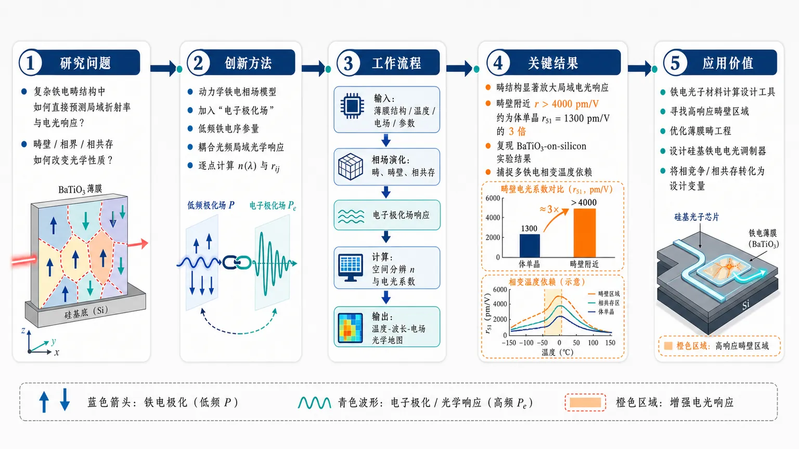
研究问题如何在复杂铁电畴结构中，直接预测局域折射率与电光响应；尤其是畴壁、相界、相共存区域如何改变铁电材料的光学性质。创新方法在动力学铁电相场模型中加入“电子极化场”，把低频铁电序参量与光频局域光学响应直接耦合；不再只用均匀晶体电光张量，而是在每个空间点计算折射率、波长依赖和电光系数。工作流程输入 BaTiO₃ 薄膜结构、温度、电场和材料参数 → 相场演化铁电极化畴、畴壁与相共存 → 电子极化场响应局域铁电状态 → 计算空间分辨折射率与电光系数 → 输出随温度、波长、电场变化的光学响应地图。关键结果BaTiO₃ 薄膜中畴结构显著放大局域电光响应；畴壁附近电光系数超过 4000 pm/V，约为体单晶 r₅₁ = 1300 pm/V 的 3 倍；模型还能复现 BaTiO₃-on-silicon 薄膜实验电光系数，并捕捉跨多个铁电相变的温度依赖行为。应用价值为铁电光子材料和可调控光子器件提供计算设计工具；可用来寻找高响应畴壁区域、优化薄膜畴工程、设计硅基铁电电光调制器，并把相竞争与相共存转化为提升光学调制效率的设计变量。第一部分：核心概览 (Overview)
该研究提出一种面向铁电材料光学性质的动力学相场模型，通过引入电子极化场，把铁电序参量与局域光学响应直接耦合。模型可预测复杂铁电畴结构中的空间分辨、温度依赖、波长依赖折射率与电光响应，并在 BaTiO₃ 薄膜中捕捉畴壁附近超过 4000 pm/V 的增强电光系数，显著高于体单晶 r₅₁ = 1300 pm/V。其领域地位在于把铁电微结构演化与光-物质相互作用计算设计连接起来。
---
第二部分：结构化快速回顾
《A Dynamical Phase-Field Model for the Optical Properties of Ferroelectrics》（None，）
背景
铁电材料因其自发极化与光学性质之间存在强耦合，被视为可调控光子器件的重要平台。核心困难在于：铁电畴结构与光学响应高度耦合，而既有理论方法无法同时捕捉复杂畴结构和局域光学性质。
方法
建立一种动力学相场模型，在传统铁电相场框架中引入电子极化场，使铁电序参量能够直接决定局域光学响应。该框架支持预测复杂铁电微结构中的空间分辨、温度依赖、波长依赖光学性质。
结果
在 BaTiO₃ 薄膜中，模型用于研究不同电场与温度下局域折射率和电光响应的演化。模拟显示，铁电畴结构显著改变局域电光响应，畴壁附近电光系数超过 4000 pm/V，数倍于体单晶值 r₅₁ = 1300 pm/V。
讨论
电光响应的增强并非单纯来自均匀晶体本征性质，而与畴结构、畴壁、相竞争、相共存密切相关。模型能够解释 BaTiO₃-on-silicon 薄膜实验测得的电光系数，并捕捉跨多个铁电相变的温度依赖行为。
局限
可用材料仅包含 arXiv 条目与摘要，缺少正文、方程、边界条件、网格尺寸、材料参数表、数值求解细节、图表、实验对照数据和误差分析。因此无法核验模型的完整自由能形式、动力学方程、光学本构关系、统计不确定性与计算收敛性。
结论
该框架为复杂铁电微结构中的光-物质相互作用提供通用预测工具，可服务于铁电光子材料与可调控光子器件的计算设计。
---
第三部分：逐章节冷凝解析 (Section-by-Section Condensing)
可用原始材料仅包含 arXiv 页面信息与 Abstract；未提供完整 PDF 正文，因此无法按 Introduction、Methods、Results、Discussion、Conclusion 等真实章节逐章展开。以下严格基于已给出的原始标题与摘要内容，不补造正文细节。
---
Title
#### Dynamical phase-field framework for ferroelectric optics
题名 “A Dynamical Phase-Field Model for the Optical Properties of Ferroelectrics” 明确限定了三层研究对象：第一，核心方法是 dynamical phase-field model；第二，目标性质是 optical properties；第三，材料体系是 ferroelectrics。题名中的 dynamical 表示该模型并非只求静态畴结构，而是关注极化结构在外场、温度或相变条件下的演化；phase-field 表明使用连续场变量描述铁电畴、畴壁与相共存；optical properties 则把研究范围扩展到折射率、电光系数等光学响应。
英文原文题名为 *"A Dynamical Phase-Field Model for the Optical Properties of Ferroelectrics"*。
---
Abstract
#### Ferroelectrics as controllable photonic platforms
铁电材料被定位为可调控光子器件平台，关键物理基础是自发极化与光学性质之间的强耦合。自发极化可通过电场、温度、应变、畴结构调节，因此能够间接或直接调制折射率、电光响应和光传播行为。摘要以 *"Ferroelectric materials are promising platforms for controllable photonic devices because of the strong coupling between their spontaneous polarization and optical properties"* 作为问题出发点，强调铁电性不是孤立的结构序参量，而是可参与光学功能调控的活性自由度。
#### The unsolved coupling between domain structure and optical response
现有理论难点集中在铁电畴结构与光学响应之间的紧密联系。铁电材料的局域极化方向、畴壁位置、相边界、局域应变和电场分布都会导致空间非均匀光学性质；传统均匀晶体模型或仅关注宏观电光张量的方法难以处理复杂微结构。摘要直接指出设计困难来自 *"the close connection between the ferroelectric domain structure and optical response"*，并进一步给出强断言：*"no existing theoretical approach can capture"*。该表述意味着研究缺口不是单个参数缺失，而是缺少一个能把微结构演化和光学本构统一起来的理论框架。
#### Electronic polarization field as the central modeling innovation
核心建模创新是引入电子极化场，并用它将铁电序参量与局域光学响应直接耦合。传统铁电相场模型通常以极化矢量、应变场、电势场等描述畴结构与相变；该工作额外引入电子极化自由度，使高频光学响应能够在局域层面与低频/静态铁电极化相联系。摘要中的关键句为 *"we develop a dynamical phase-field model that directly couples the ferroelectric order to the local optical response by introducing an electronic polarization field"*。这里的 directly couples 是关键：不是事后把畴结构映射到折射率，而是在模型内部建立序参量到光学响应的耦合。
#### Spatially resolved temperature- and wavelength-dependent predictions
模型能力覆盖三个维度：空间分辨、温度依赖和波长依赖。空间分辨意味着可计算畴内、畴壁、相边界等不同区域的局域光学性质；温度依赖意味着可穿越铁电相变并描述相竞争；波长依赖意味着光学响应不是固定常数，而可随入射光频率/波长变化。摘要表述为 *"This approach enables the prediction of the spatially resolved temperature- and wavelength-dependent optical properties in complex ferroelectric microstructures"*。其中 complex ferroelectric microstructures 指向真实薄膜中多畴、多相、应变约束和局域非均匀性共存的情形。
#### Application to BaTiO₃ thin films
具体材料应用对象是 BaTiO₃ thin films。BaTiO₃ 是典型钙钛矿铁电体，具有多个温度驱动的铁电相，包括四方、正交、菱方等相区，适合测试相场模型对相变、畴结构和光学响应的捕捉能力。摘要说明应用场景为 *"Applying this method to BaTiO3 thin films"*，研究变量包括 electric fields 和 temperatures，目标响应包括 local refractive index 与 electro-optic response：*"we investigate the evolution of the local refractive index and electro-optic response under varying electric fields and temperatures"*。
#### Domain-structure-driven enhancement of electro-optic response
关键结果是铁电畴结构强烈改变局域电光响应。局域电光系数在畴壁附近超过 4000 pm/V，明显高于体单晶数值 r₅₁ = 1300 pm/V。摘要给出的定量证据为 *"exceeding 4000 pm/V near domain walls, several times larger than the bulk single crystal value (r₅₁₌₁₃₀₀ pm/V)"*。该结果具有明确物理含义：畴壁不是简单缺陷或过渡区，而可能是增强电光响应的功能区域。若 4000 pm/V 与 1300 pm/V 比较，增强倍数约为 3.08 倍，说明局域结构工程可能优于仅依赖均匀晶体本征电光张量。
#### Quantitative reproduction of BaTiO₃-on-silicon electro-optic measurements
模型不仅给出趋势，还被声称能够定量复现实验测得的电光系数，对象为 BaTiO₃ on silicon films。摘要表述为 *"Our simulations quantitatively reproduce the electro-optic coefficient measured in BaTiO3 on silicon films"*。这一点很重要，因为 BaTiO₃ 与 silicon 集成是铁电光子学的重要方向；硅平台兼容性决定了其潜在器件价值。quantitatively reproduce 表明模拟结果与实验数值达到定量一致，而非只解释符号或趋势。不过摘要未提供实验样本量、测量波长、薄膜厚度、误差条、拟合参数或统计显著性，因此一致性的严格程度无法从现有材料独立评估。
#### Temperature-dependent behavior across multiple ferroelectric phase transitions
模型捕捉了跨越多个铁电相变的温度依赖行为。BaTiO₃ 的电光响应会在不同铁电相之间显著变化，尤其在相变附近容易出现介电、电光和弹性响应增强。摘要给出证据为 *"capture the temperature-dependent behavior across multiple ferroelectric phase transitions"*。这说明模型不仅适用于单一相区，也能处理相变附近的非线性响应和相共存。摘要进一步指出机制与 phase competition 和 coexistence 有关：*"revealing the role of phase competition and coexistence in determining the electro-optic response"*。这里的物理含义是，电光增强可能来自多个相态自由能接近时的易响应性，而非单相稳定区的普通线性响应。
#### General framework for light-matter interactions in ferroelectric microstructures
研究结论被扩展为一种预测复杂铁电微结构中光-物质相互作用的通用方法。摘要中的概括句为 *"this work establishes a general approach for predicting light-matter interactions in complex ferroelectric microstructures"*。该框架的潜在用途是材料计算设计：*"enabling the computational design of ferroelectric materials for photonics"*。因此贡献不局限于 BaTiO₃，而是提供可迁移到其他铁电材料、薄膜结构、畴工程设计和集成光子器件的建模路线。
---
Bibliographic record
#### Preprint status and disciplinary classification
该研究为 arXiv 预印本，编号 arXiv:2607.16180，学科分类为 Condensed Matter > Materials Science，提交日期为 17 Jul 2026。页面给出的记录为 *"arXiv:2607.16180 (cond-mat)"*、*"Submitted on 17 Jul 2026"* 和 *"Subjects: Materials Science (cond-mat.mtrl-sci)"*。这表明研究位于凝聚态材料科学、铁电材料、计算材料学和光子材料交叉区域。
#### Authorship and research lineage
署名为 Aiden Ross, Anya Frazer, Venkatraman Gopalan, Long-Qing Chen。页面原文为 *"Authors: Aiden Ross, Anya Frazer, Venkatraman Gopalan, Long-Qing Chen"*。其中 Long-Qing Chen 与相场建模传统高度相关，Venkatraman Gopalan 与铁电/非线性光学/畴结构研究相关；该署名组合在方法论上对应相场计算与铁电光学实验/物理的交叉。
#### Version and DOI status
版本为 v1，提交时间 Fri, 17 Jul 2026 17:57:03 UTC。页面记录为 *"[v1] Fri, 17 Jul 2026 17:57:03 UTC"*。DOI 显示为 arXiv-issued DOI，并处于注册流程中：*"https://doi.org/10.48550/arXiv.2607.16180"* 与 *"arXiv-issued DOI via DataCite (pending registration)"*。因此该版本应被视为预印本首版，后续正式发表版本可能包含修订、补充实验或模型细节调整。
---
第四部分：深度理解与语言支持 (Understanding & Nuance)
1. 术语解析
#### Dynamical phase-field model
Dynamical phase-field model 指使用连续场变量描述材料内部微结构随时间、温度、外场或边界条件演化的模型。phase-field 的核心不是追踪清晰界面，而是用连续序参量自然表示畴、畴壁和相界；dynamical 强调序参量会通过动力学方程演化，而不是只求一个静态构型。在该语境中，它用于描述铁电极化结构如何影响局域光学性质。
#### Ferroelectric order
Ferroelectric order 指铁电相中的有序自发极化状态，可理解为铁电序参量。它不仅表示“有无铁电性”，还包含极化方向、大小、畴取向和相状态。与普通宏观极化不同，ferroelectric order 在相场模型中通常是空间分布的矢量场，可在畴壁附近连续变化。
#### Electronic polarization field
Electronic polarization field 是该摘要中最关键的新变量之一。它不同于低频或静态的铁电自发极化。铁电极化主要涉及离子位移和晶格畸变，而电子极化对应电子云在光频电场下的快速响应，直接关联折射率、介电函数和光学响应。引入该场的意义在于把低频铁电畴结构和高频光学性质统一到一个局域模型中。
#### Electro-optic response
Electro-optic response 指材料光学性质在外加电场作用下发生变化的能力，通常体现为折射率随电场改变。摘要中给出的电光系数单位 pm/V，对应线性电光效应/Pockels 效应常用量纲。r₅₁ = 1300 pm/V 是体单晶 BaTiO₃ 的比较基准，而畴壁附近 >4000 pm/V 表明局域电光调制能力显著增强。
#### Phase competition and coexistence
Phase competition 指多个铁电相的自由能接近，系统容易在外场或温度扰动下从一种相态偏向另一种相态。Coexistence 指不同相在空间上同时存在。二者通常会导致增强响应，因为系统处于“容易被推动”的能量景观中；小电场即可诱导较大的极化旋转、相分数变化或局域结构调整，从而放大电光响应。
---
2. 疑难查证
#### 为什么畴壁附近电光响应可能超过体单晶？
体单晶的电光系数通常描述均匀相、均匀极化方向下的平均线性响应。畴壁区域则不同：极化方向在纳米尺度内旋转或变化，局域应变、电场、极化梯度和相稳定性都不同于畴内部。若局域自由能曲面较平坦，外电场就能更容易改变极化方向或局域介电响应，导致折射率变化更大。因此 >4000 pm/V 不必理解为某个完美晶格本征张量项突然变大，而可理解为畴壁微结构、极化旋转、相竞争和局域软化共同产生的有效增强。
#### 电子极化场为何能连接铁电畴结构和光学性质？
光学频率下，离子和畴结构通常无法跟随光场快速振荡，但电子云可以。因此折射率主要由电子极化响应决定。铁电畴结构虽然是低频/静态结构，却改变局域晶体对称性、极化方向、应变状态和介电环境，从而改变电子极化率。引入电子极化场等于在模型中加入一个“光学响应自由度”，使每个空间点的折射率或电光响应能随局域铁电状态变化。
#### “空间分辨光学性质”与传统有效介质有什么区别？
传统有效介质模型通常把多畴材料平均成一个宏观折射率或宏观电光系数，容易丢失畴壁和相界面的局域增强。空间分辨模型则能给出每个位置的局域折射率、电光系数或光学张量。这对铁电光子器件尤其重要，因为光场模式本身也具有空间分布；如果光场集中在畴壁或高响应区域，器件级调制效率会远高于简单体平均预测。
#### 跨多个铁电相变的温度依赖为何重要？
BaTiO₃ 这类材料的结构相变会改变晶体对称性，而电光张量由对称性强烈约束。相变附近，介电常数、极化旋转能力和畴结构都会急剧变化，因此电光响应可能出现峰值、突变或滞后。能跨多个相变预测响应，说明模型不仅适用于固定相态，还能处理相竞争和相共存造成的复杂光学行为。
---
第五部分：创新评估与关联 (Synthesis & Novelty)
1. 创新性判断
#### From uniform electro-optic tensors to microstructure-resolved optical prediction
过去相关研究常采用两类路线：一类用实验或第一性原理获得均匀晶体的折射率、电光张量；另一类用相场模型描述铁电畴结构、相变和外场响应。二者之间存在断裂：均匀光学模型难以处理复杂畴结构，相场模型又通常不直接预测波长依赖光学响应。该研究的新颖性在于把铁电相场演化与局域光学响应放入同一动力学框架，目标是从微结构直接预测光学性质。
#### Electronic polarization as a bridge between ferroelectric order and optics
引入电子极化场是核心创新。该变量将低频铁电序参量与高频光学响应连接起来，使模型可处理折射率、电光响应和波长依赖性质。相对于只把折射率作为经验函数附加到畴结构上的方法，该框架更接近自洽耦合建模。
#### Local domain-wall electro-optic enhancement becomes computable
畴壁附近 >4000 pm/V 的局域电光响应增强是重要科学点。前人可能观察或推测畴结构影响电光行为，但定量预测复杂畴结构中局域电光系数、并与体单晶 r₅₁ = 1300 pm/V 对比，解决了“畴壁到底贡献多少、在哪里增强、增强幅度多大”的问题。该能力对畴工程光子器件设计尤其关键。
#### Quantitative link to BaTiO₃-on-silicon measurements
BaTiO₃ 与 silicon 集成体系是铁电光子学近年热点，但薄膜中的应变、畴结构、相共存和缺陷会导致实验电光系数偏离体材料。该模型声称能够定量复现实验测得的 BaTiO₃-on-silicon 电光系数，说明其不仅服务于理想晶体，也面向真实集成薄膜器件。
#### Temperature-dependent phase competition as an optical design variable
跨多个铁电相变捕捉温度依赖行为，把相竞争和相共存提升为调控电光响应的设计变量。过去设计可能主要关注材料成分、应变或厚度；该框架强调通过温度、相边界和畴结构控制局域光学响应，从而为铁电光子器件提供新的优化维度。
#### Unresolved verification needs
由于可用材料缺少完整正文，以下关键问题仍需正文验证：自由能函数具体形式、电子极化场动力学方程、光学频散模型、BaTiO₃ 材料参数来源、薄膜边界条件、硅衬底应变处理、网格尺寸、畴壁宽度、数值稳定性、实验对照波长、误差范围和统计置信度。当前可确认的新颖性主要来自摘要层面的模型主张与关键定量结果。
-
16
📊 含图深析
📄 摘要：构造了一类平面周期铺砌，使最近邻铁磁Ising模型的临界温度可任意提高。方法受精确上界启发，通过迭代三角化增大最大配位数qₘₐₓ，并推导出这些格子的显式Tc公式与渐近标度。
💡 亮点：平面晶格也能把Ising临界温度推到任意高。核心在于迭代三角化抬升配位数上界。
📖 展开分析 + 配图
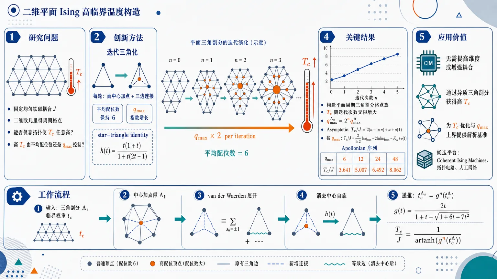
研究问题在固定均匀铁磁耦合 J、仍限制于二维欧几里得平面周期格点的条件下，最近邻 Ising 模型的临界温度 T_c 能否通过格点拓扑结构被构造到任意高；高 T_c 究竟由平均配位数还是最大配位数 qₘₐₓ 控制。创新方法提出“迭代三角化”构造：在每个三角面中心加入新顶点，并连接到三角形三个角，使旧高配位顶点的配位数每轮翻倍、qₘₐₓ 指数增长，同时三角剖分的平均配位数始终保持 6。Aha 点是利用 star-triangle identity 精确消去新增中心自旋，把新格点配分函数化为旧格点配分函数的有效边权形式，得到普适临界权重递推 t_c'=g(t_c)，而不是逐个格点数值求解。工作流程输入一个二维平面三角剖分基底格点 Λ 及其临界权重 t_c；对每个三角面执行中心加点与三边连接，得到 Λ₁；用 van der Waerden 展开把配分函数写成边权乘积；对每个三角形中心自旋做 star-triangle 消元，得到有效权重 h(t) 与解析前因子；由 h(t_cΛ₁)=t_cΛ 反推出 t_cΛ₁=g(t_cΛ)；重复 n 次得到 t_cΛₙ=gⁿ⁽t_cΛ)，再换算为 T_c/J=1/artanh(gⁿ⁽t_cΛ))，同时记录 qₘₐₓΛₙ=2ⁿ qₘₐₓΛ。关键结果构造出二维平面周期三角剖分格点族，其 T_c 可随迭代次数无限增大但每个有限格点仍有限。一次迭代的精确递推为 g(t)=2t/[1+t+sqrt(1+6t-7t²⁾]，反函数 h(t)=t(1+t)/[1+t(2t-1)]。第 n 代满足 qₘₐₓ₌₂ⁿ qₘₐₓ^Λ，且大 n 时 T_c/J=2(n-ln n)+κ+o(1)；换成最大配位数后，T_c/J=(2/ln2)ln qₘₐₓ₋₂ₗₙ ln qₘₐₓ₋K_Λ+o(1)，主导斜率 2/ln2 对所有迭代三角化族普适。三角格点族给出 Apollonian 序列：qₘₐₓ₌₆,12,24,48 时 T_c/J≈3.641,5.007,6.492,8.062。应用价值证明二维平面均匀铁磁 Ising 系统无需提高维度或增强耦合，也能通过设计高度异质的三角剖分网络获得任意高临界温度；为高 T_c 平面网络设计、Ising 临界温度优化和 qₘₐₓ 上界研究提供可解析基准族，并提出 Apollonian 格点可能饱和最优上界 T_c^*(qₘₐₓ₎。这些结构可作为 Coherent Ising Machines、拓扑电路和人工网络平台中测试临界行为与图拓扑效应的候选蓝图。第一部分：核心概览 (Overview)
构造出一类二维平面周期三角剖分格点族，使均匀铁磁最近邻 Ising 模型的临界温度 (Tₘ̊ c) 可任意增大。核心机制是迭代三角化：每次在每个三角面中心加入新顶点并连接三角形三角点，使最大配位数 (qₘ̊ ₘₐₓ) 每轮翻倍，而平均配位数保持 (bar q=6)。通过 star-triangle identity 精确导出临界权重递推 (tₘ̊ c'=g(tₘ̊ c))，并证明大迭代数下 (Tₘ̊ c/Jsim (2/łn2)łn qₘ̊ ₘₐₓ-2łnłn qₘ̊ ₘₐₓ)。该工作把二维平面 Ising 高临界温度问题从经验构造推进到可解析、可比较、可猜想最优边界的系统框架。
---
第二部分：结构化快速回顾
《Families of planar lattices with arbitrarily high Tₘ̊ c for the ferromagnetic Ising model》（None，）
背景
二维均匀铁磁 Ising 模型的 (Tₘ̊ c) 依赖格点结构而非普适量。既有精确界表明，高 (Tₘ̊ c) 需要大的最大配位数 (qₘ̊ ₘₐₓ)。规则多边形周期铺砌中，三角格点以 (Tₘ̊ c/J=3.641) 在 (qₘ̊ ₘₐₓ=6) 情况下饱和已知界；但任意多边形铺砌可出现更大 (qₘ̊ ₘₐₓ)，如 Laves-Star 格点 (qₘ̊ ₘₐₓ=12, Tₘ̊ c/J=5.007)，Compass-Rose 格点 (qₘ̊ ₘₐₓ=24, Tₘ̊ c/J=6.492)。
方法
使用迭代三角化生成平面三角剖分族：每次在每个三角面中心加入顶点并与三个角相连。利用 van der Waerden identity 写出高温展开形式的配分函数，再用 star-triangle identity 消去新增三角中心自旋，得到配分函数、自由能密度和临界权重的精确递推。
结果
一次迭代后临界权重满足
[
tₘ̊ c'=g(tₘ̊ c),quad
g(t)=frac2t1+t+sqrt1+6t-7t².
]
反函数为
[
h(t)=g⁻¹(t)=fract(1+t)1+t(2t-1).
]
第 (n) 代满足
[
tₘ̊ cŁambdaₙ=gⁿ⁽tₘ̊ cŁambda),quad
fracTₘ̊ cŁambdaₙJ=frac1øperatornameartanh(gⁿ⁽tₘ̊ cŁambda)).
]
最大配位数满足
[
qₘ̊ ₘₐₓŁambdaₙ=2ⁿ qₘ̊ ₘₐₓŁambda.
]
讨论
对大 (n)，临界温度渐近为
[
fracTₘ̊ cŁambdaₙJ=2(n-łn n)+κ(tₘ̊ cŁambda)+o(1),
]
换成 (qₘ̊ ₘₐₓ) 后为
[
fracTₘ̊ cŁambdaₙJ
=Ałn qₘ̊ ₘₐₓŁambdaₙ-2łnłn qₘ̊ ₘₐₓŁambdaₙ-K_Łambda+o(1),
quad A=frac2łn2.
]
主导增长具有普适斜率，基底格点只通过常数 (K_Łambda) 影响次领先修正。
局限
可见解析构造依赖基底为三角剖分，并且最优上界 (Tₘ̊ c*(qₘ̊ ₘₐₓ)) 仍是猜想。已有严格上界随 (qₘ̊ ₘₐₓ) 线性增长，而实际构造只达到对数增长；是否存在非迭代三角化结构能突破该对数族仍需证明。
结论
二维平面欧几里得格点上的均匀铁磁 Ising 模型可以拥有任意高但有限的 (Tₘ̊ c)。迭代三角化提供了精确可解的格点族，并暗示 Apollonian 格点族可能在给定 (qₘ̊ ₘₐₓge6) 时达到最优临界温度曲线 (Tₘ̊ c*(qₘ̊ ₘₐₓ))。
---
第三部分：逐章节冷凝解析 (Section-by-Section Condensing)
Abstract
- Arbitrarily high critical temperatures are constructible in planar periodic tessellations
研究对象是经典最近邻均匀铁磁 Ising 模型，并非通过增强耦合 (J) 或提升维度，而是通过二维平面周期铺砌的拓扑结构提高 (Tₘ̊ c)。核心贡献直接表述为：*"We construct families of periodic tessellations of the plane with arbitrarily high critical temperature, (Tₘ̊ c), for the classical nearest-neighbor uniform ferromagnetic Ising model."* 这意味着在固定均匀耦合 (J>0) 下，二维平面几何仍可支持无上限增长的临界温度序列。
- Large maximal coordination number is identified as necessary motivation
构造受最近精确界启发，该界指出高 (Tₘ̊ c) 需要大的最大配位数 (qₘ̊ ₘₐₓ)：*"Our approach is motivated by recently found exact bounds, which imply that large values of (Tₘ̊ c) require large values of the maximal coordination number of the lattice, (qₘ̊ ₘₐₓ)."* 这里强调的不是平均配位数，而是最大局部连接度；这为后文“平均配位数保持 6，但最大配位数指数增长”的策略奠定逻辑基础。
- Iterative triangulation supplies exact solvable lattice families
高配位格点通过迭代三角化产生，并且临界温度可写成显式公式：*"We create such lattices through iterative triangulation and derive explicit expressions for their (Tₘ̊ c)."* 该点的重要性在于构造不是数值搜索，而是带有解析递推公式的可控族。
- Universal asymptotic scaling is logarithmic in (qₘ̊ ₘₐₓ)
临界温度随最大配位数的增长不是线性，而是
[
Tₘ̊ c/Jsim Ałn qₘ̊ ₘₐₓ-2łnłn qₘ̊ ₘₐₓ,quad A=2/łn2.
]
摘要明确给出：*"Furthermore, we show that (Tₘ̊ c) for these families scales asymptotically as (Tₘ̊ c/Jsim Ałn qₘ̊ ₘₐₓ-2łnłn qₘ̊ ₘₐₓ) with a universal prefactor (A=2/łn2)."* 普适前因子说明不同基底三角剖分的主导增长率相同。
- A conjectured optimal upper envelope is introduced
定义连续函数 (Tₘ̊ c*(qₘ̊ ₘₐₓ))，并猜想其为任意平面周期铺砌的临界温度上界：*"We introduce a function (Tₘ̊ c*(qₘ̊ ₘₐₓ)) that we conjecture to be an upper bound on the critical temperature of any periodic tessellation of the plane."* 这把构造性结果进一步提升为最优性猜想。
- Apollonian lattices saturate the conjectured bound
由三角格点经迭代三角化得到的 Apollonian lattices 饱和该猜想上界：*"We show that the family of so-called Apollonian lattices, which are derived from the Triangular lattice through iterative triangulation, saturates this bound."* 这赋予三角格点族在二维高 (Tₘ̊ c) 问题中的特殊地位。
- Potential experimental platforms are identified
相关结构可能在 Coherent Ising Machines 或 topoelectric circuits 中实现：*"The lattices discussed in this work are relevant for theoretical questions of optimality in network systems and may be realized experimentally in Coherent Ising Machines or topoelectric circuits in the future."* 理论构造因此具备潜在物理模拟路径。
---
I Introduction
- The Ising model remains a central model of critical phenomena and complex systems
Ising 模型被定位为统计物理与跨学科建模的基础模型：*"The Ising model is a cornerstone of statistical physics and ubiquitous in the description of critical phenomena."* 其应用范围从磁性扩展到生物、社会系统、网络理论和机器学习：*"the model has found many applications in a wide range of fields from biological and social systems, to network theory and machine learning."*
- Critical exponents are universal, but (Tₘ̊ c) is lattice-dependent
二维及更高维铁磁 Ising 模型存在有限温相变；但临界指数与临界温度性质不同。引言明确区分：*"Although the critical behavior of correlation functions through the critical exponents is universal, i.e. dependent on dimension but not on the underlying lattice structure, (Tₘ̊ c) is a non-universal quantity determined by the lattice together with the magnetic interaction strength (Jᵢⱼ) between sites."* 该问题聚焦非普适量 (Tₘ̊ c)，因此格点结构优化是合理方向。
- Ising machines create practical motivation for engineered graph topologies
Ising 模型已成为求解 NP-complete 优化问题的实验框架，尤其是 MAX-CUT：*"the Ising model gained immense interest as an experimental framework for solving various NP-complete optimization problems like MAX-CUT, where the solution of the problem is embedded in the ground state of the model."* Coherent Ising Machines 已能模拟多种图拓扑并测量临界温度，包括全连接平均场网络与二维方格点：*"The latter have emerged as a platform for simulating the Ising model on various graph-topologies with tunable couplings and have been used to measure (Tₘ̊ c), for instance, in the all-to-all mean field network and the two-dimensional square lattice."*
- High-dimensional lattices naturally yield high (Tₘ̊ c), but the target here is two-dimensional
对 (d) 维超立方格点，Fisher 与 Gaunt 给出大维度渐近 (Tₘ̊ c/Jsim2d)：*"Fisher and Gaunt showed that for the (d)-dimensional hypercubic lattice we have (Tₘ̊ c/Jsim2d) asymptotically for large (d)."* 该结果说明增加维度能提高 (Tₘ̊ c)，但该工作更困难地限制在二维平面铺砌。
- Triangular lattice is optimal among known low-complexity regular tilings
在由正多边形构成的二维周期铺砌中，三角格点的临界温度最高：*"For two-dimensional periodic tilings by regular polygons, the Triangular lattice with (Tₘ̊ c/J=3.641) features the highest critical temperature among all (1248) (k)-uniform tilings with (kłeq6) types of vertices."* 这里给出具体比较集合：1248 个 (k)-uniform tilings，并限制 (kłe6)。
- Exact bounds explain the Triangular lattice optimum at (qₘ̊ ₘₐₓ=6)
既有精确界由最大配位数 (qₘ̊ ₘₐₓ) 决定：*"The bound on (Tₘ̊ c/J) is determined by the maximal coordination number of the lattice, (qₘ̊ ₘₐₓ), defined as the largest number of nearest neighbors of any site on the lattice."* 所有 (kłe6) 的 (k)-uniform 格点满足 (qₘ̊ ₘₐₓłe6)，三角格点在 (qₘ̊ ₘₐₓ=6) 时饱和界：*"Since all (k)-uniform lattices with (kłeq6) have (qₘ̊ ₘₐₓłeq6), their values of (Tₘ̊ c/J) are below the Triangular lattice, which saturates the bound for (qₘ̊ ₘₐₓ=6)."*
- Allowing arbitrary polygons enables larger (qₘ̊ ₘₐₓ) and higher (Tₘ̊ c)
若不限制正多边形，可构造更高最大配位数与更高临界温度的二维格点。两个标志性例子为：*"the Laves-Star (also called Asanoha or hemp-leaf) lattice with (qₘ̊ ₘₐₓ=12) and (Tₘ̊ c/J=5.007)"*，以及 *"the Compass-Rose lattice with (qₘ̊ ₘₐₓ=24) and (Tₘ̊ c/J=6.492)."* 这些数值为后续递推公式提供验证样本。
- The main question is whether two-dimensional (Tₘ̊ c/J) can be arbitrarily large
引言提出核心问题：*"it appears natural to ask whether (Tₘ̊ c/J) can be made arbitrarily large for two-dimensional Ising systems on lattices with large (qₘ̊ ₘₐₓ)."* 对比其他二维统计系统可能存在无限临界温度，Ising 情况不同：*"For the Ising case, however, the exact bound derived in Ref. [33] imply that (Tₘ̊ c/J) is always finite and asymptotically bounded by (Tₘ̊ c/Jłeq(2/π)qₘ̊ ₘₐₓ)."* 因此目标是“任意大但每个有限格点仍有限”。
- The central asymptotic law is logarithmic, not linear
该工作证明构造族满足
[
Tₘ̊ c/Jsim Ałn qₘ̊ ₘₐₓ-2łnłn qₘ̊ ₘₐₓ.
]
原文给出：*"Their critical temperatures scale asymptotically as (Tₘ̊ c/Jsim Ałn qₘ̊ ₘₐₓ-2łnłn qₘ̊ ₘₐₓ)."* 与已有线性上界 (O(qₘ̊ ₘₐₓ)) 相比，实际构造远低于界：*"The logarithmic growth in (qₘ̊ ₘₐₓ), in contrast to the bound which grows linearly in (qₘ̊ ₘₐₓ), indicates that actual values of (Tₘ̊ c/J) seem to fall short of coming close to the exact bound for large (qₘ̊ ₘₐₓ)."*
- The leading coefficient is universal across iterative triangulation families
前因子
[
A=2/łn2=2.89
]
不依赖基底格点：*"Here, the coefficient (A=2/łn2=2.89) is universal for any family of lattices constructed by iterative triangulation."* 更强的是：*"In particular, this scaling is independent of the starting lattice, and even its periodicity."* 这暗示递推映射 (g,h) 的固定点渐近控制主导行为。
- Iterative triangulation doubles (qₘ̊ ₘₐₓ) at every step
图 1 说明三角格点族与 Laves-CaVO 族的前几代。三角格点生成 Apollonian lattices，其 (qₘ̊ ₘₐₓ=6,12,24,48)；Laves-CaVO 族为 (qₘ̊ ₘₐₓ=8,16,32,64)。图注明确：*"With each iteration, (qₘ̊ ₘₐₓ) doubles in value, and hence grows exponentially in (n)."* 这使 (n) 的线性增长转化为 (łn qₘ̊ ₘₐₓ) 增长。
- The roadmap centers on exact partition-function transformation and optimal-bound conjecture
后续结构包括：定义 Ising 模型与图论量；定义迭代三角化；推导配分函数、自由能密度和临界温度；分析多种基底格点族；推导大 (qₘ̊ ₘₐₓ) 渐近；最后定义 (Tₘ̊ c*(qₘ̊ ₘₐₓ)) 并猜想其为欧氏平面中 (qₘ̊ ₘₐₓge6) 的紧上界。引言给出清晰路线：*"we present the critical temperatures of a collection of base lattices which are periodic tessellations of the plane and their families"*，以及 *"we investigate (Tₘ̊ c) of various lattice families and define a unique continuous extension (Tₘ̊ c*(qₘ̊ ₘₐₓ)) of the critical temperatures of the Apollonian lattices."*
---
II Summary of main results
- Iterative triangulation is the central construction mechanism
高 (Tₘ̊ c) 构造受 Laves-Star 与 Compass-Rose 格点启发，它们分别由三角格点和 Laves-Star 格点通过“在每个三角形中心放点并连接三个角”得到：*"Our construction of high-(Tₘ̊ c) lattices draws inspiration from the Laves-Star and Compass-Rose lattices, which are built from the Triangular and Laves-Star lattices, respectively, by placing a site in the center of each triangle and drawing bonds from it to the sites at the corners of the triangle."* 该过程被命名为 iterative triangulation，也是整体工作的主工具：*"This procedure of iterative triangulation, which is the main tool of this work, creates an infinite family of lattices."*
- Each iteration increases both (qₘ̊ ₘₐₓ) and (Tₘ̊ c)
每一代格点都比前一代有更大最大配位数和更高临界温度：*"each member with a larger (qₘ̊ ₘₐₓ) and higher critical temperature than its predecessor."* 这为“任意高 (Tₘ̊ c)”提供单调递增构造路径。
- Apollonian lattices generalize Triangular–Laves-Star–Compass-Rose sequence
由三角格点出发的族被称为 Apollonian lattices，包含 Triangular、Laves-Star 和 Compass-Rose：*"We call the family containing the Triangular, Laves-Star, and Compass-Rose lattices the Apollonian lattices, inspired by their tiles being Apollonian networks."* 这是一条关键候选最优族。
- The construction applies to any planar triangulation
迭代三角化不局限于三角格点，而适用于任意只由三角形构成的平面格点：*"The technique of iterative triangulation can be applied to any planar lattice that is a triangulation, i.e a lattice that consists solely of triangles, to obtain a lattice with larger (qₘ̊ ₘₐₓ) and with a critical temperature (Tₘ̊ c'/J) that is higher than that of the original lattice."* 因而该方法是一类通用变换。
- Temperature weight converts (Tₘ̊ c) into critical edge weight
使用
[
t=tanh(β J),quad β=1/T
]
将温度问题转为边权问题。临界温度由
[
fracTₘ̊ cJ=frac1øperatornameartanh(tₘ̊ c)
]
给出。原文写明：*"We introduce the temperature weight (t=tanh(β J)) with (β=1/T). The critical weight (tₘ̊ c) is related to (Tₘ̊ c) by (Tₘ̊ c/J=1/artanh(tₘ̊ c))."*
- Critical weights obey an exact universal recursion
一次三角化后
[
tₘ̊ c'=g(tₘ̊ c),quad
g(t)=frac2t1+t+sqrt1+6t-7t².
]
关键表述为：*"We show that after one step of iterative triangulation, the critical weights of the original and triangulated lattices, (tₘ̊ c) and (tₘ̊ c'), satisfy (tₘ̊ c'=g(tₘ̊ c))."* 该函数不显含格点细节，是后文普适性的数学来源。
- The inverse mapping (h=g⁻¹) controls partition functions and free energies
配分函数递推为
[
mathcal Z'(t)proptomathcal Z(h(t)),
quad
h(t)=g⁻¹(t)=fract(1+t)1+t(2t-1).
]
原文说明：*"Similarly, recursive relations between the partition functions and free energy densities follow from (Zprⁱme(t)proptoZ(h(t))), with explicitly known (t)-dependent prefactor."* 这意味着非解析性通过 (h(t)=tₘ̊ cŁambda) 传递。
- Triangular to Laves-Star recurrence reproduces (Tₘ̊ c/J=5.007)
三角格点临界权重为
[
tₘ̊ c=2-sqrt3.
]
一次迭代得到 Laves-Star：*"The Laves-Star lattice in Fig. 1 is constructed from the Triangular lattice through iterative triangulation"*，并验证
[
fracTₘ̊ c'J=frac1øperatornameartanh(g(tₘ̊ c))=5.007.
]
- Second and third Apollonian iterations give Compass-Rose and Spectacular lattices
二次迭代给 Compass-Rose：*"The next member in the family, obtained from the Laves-Star lattice through iterative triangulation, is the Compass-Rose lattice"*，临界温度为
[
fracTₘ̊ c''J=6.492.
]
三次迭代得到 Spectacular lattice：*"Iterating once more, we obtain the Spectacular lattice shown in Fig. 1, with (qₘ̊ ₘₐₓ=48) and (Tₘ̊ c'''/J=8.062)."* 具体序列为 (qₘ̊ ₘₐₓ=6,12,24,48)，(Tₘ̊ c/J=3.641,5.007,6.492,8.062)。
- The recursion also applies beyond Euclidean periodic lattices if base (tₘ̊ c) is known
显著外推是非欧几里得格点也可使用同一权重递推：*"Eq. 3 is valid for any triangulation. In particular, this equation is valid for triangulations in non-Euclidean space, such as hyperbolic lattices, if the weight (tₘ̊ c) of the base lattice is known."* 该点凸显 star-triangle 变换的局部性。
- Large-(n) asymptotics is explicit in iteration number
对任意基底三角剖分 (Łambda)，第 (n) 代临界温度满足
[
fracTₘ̊ cŁambdaₙJ=2(n-łn n)+κ(tₘ̊ cŁambda)+o(1).
]
原文强调：*"For (ngg1), the critical temperature (Tₘ̊ cŁambdaₙ) grows asymptotically as (Tₘ̊ cŁambdaₙ/J=2(n-łn n)+κ(tₘ̊ cŁambda)+o(1))."* 这说明高 (Tₘ̊ c) 可通过足够多迭代“可控地”达到。
- Maximal coordination grows exactly as (2ⁿ)
第 (n) 代最大配位数为
[
qₘ̊ ₘₐₓŁambdaₙ=2ⁿ qₘ̊ ₘₐₓŁambda.
]
原文写明：*"We have (qₘ̊ ₘₐₓŁambdaₙ=2ⁿqₘ̊ ₘₐₓŁambda)."* 该精确关系把 (n)-渐近转换为 (qₘ̊ ₘₐₓ)-渐近。
- Universal (qₘ̊ ₘₐₓ)-asymptotics contains a lattice-dependent constant
临界温度可重写为
[
fracTₘ̊ cŁambdaₙJ
=Ałn qₘ̊ ₘₐₓŁambdaₙ
-2łnłn qₘ̊ ₘₐₓŁambdaₙ
-K_Łambda+o(1),
quad A=2/łn2.
]
原文概括：*"While the leading terms are universal, the subleading corrections contain a constant (K_Łambda) that depends solely on the base triangulation."* 三角格点特例为 (K_Δ=1.024)：*"As a special case, we have (K_Δ=1.024) for the Triangular lattice (Δ)."*
- A continuous Apollonian envelope (Tₘ̊ c*(q)) is defined
对所有研究格点族，在给定 (qₘ̊ ₘₐₓ) 时其 (Tₘ̊ c) 位于 Apollonian 延拓曲线以下。定义
[
fracTₘ̊ c*(q)J
=
frac1øperatornameartanh(tₘ̊ c*(q))
]
其中
[
tₘ̊ c*(q)=
łimₙ→ᵢₙfₜy
hⁿłeft(
[Ałn(2ⁿq)-2łnłn(2ⁿq)-K_Δ]⁻¹
i̊ght).
]
原文指出：*"For a given value of (qₘ̊ ₘₐₓ), we find that the values of (Tₘ̊ c/J) for all families considered in this work lie below the curve (Tₘ̊ c*(qₘ̊ ₘₐₓ)/J)."*
- Apollonian lattices exactly sit on the proposed envelope
Apollonian 第 (n) 代满足
[
Tₘ̊ cΔₙ=Tₘ̊ c*(qₘ̊ ₘₐₓΔₙ).
]
原文写作：*"The Apollonian lattices satisfy (Tₘ̊ cΔₙ=Tₘ̊ c*(qₘ̊ ₘₐₓΔₙ))."* 这使其成为上界猜想的饱和族。
- The conjectured bound is much tighter than the known exact linear bound
新猜想为：*"We conjecture that (Tₘ̊ c*(qₘ̊ ₘₐₓ)) is the ultimate upper bound in Euclidean space for (Tₘ̊ c) for all (qₘ̊ ₘₐₓ≥6)."* 若成立，它将替代已有渐近线性界：*"therefore replaces the exact bound derived in Ref. [33], which is asymptotically given by (Tₘ̊ c/Jłeq(2/π)qₘ̊ ₘₐₓ)."* 关键区别是从线性上界压缩为接近对数增长的可饱和上界。
---
III Ferromagnetic Ising Model
- The model is a uniform nearest-neighbor ferromagnetic Ising system on a planar lattice
自旋变量为
[
sᵢ₌±1,
]
均匀铁磁耦合
[
J>0.
]
Hamiltonian 为
[
H=-Jsumłₐₙgₗₑ ᵢ,ⱼåₙgₗₑsᵢₛⱼ.
]
原文定义：*"We consider the ferromagnetic Ising model on a two-dimensional planar lattice with classical spin variables (sᵢ₌±1) at sites (i) of the lattice and uniform ferromagnetic exchange energy or coupling (J>0)."*
- The lattice is treated graph-theoretically through vertices, edges, and faces
格点被解释为图：顶点为 sites，边为 bonds，面为 tile polygons。原文写明：*"The lattice can be interpreted as a graph where the vertices correspond to the sites, the edges correspond to the bonds of the lattice, and the faces correspond to the closed polygons that tile the plane."* 记号为
[
V=|mathcal V|,quad E=|mathcal E|,quad F=|mathcal F|.
]
最近邻边满足 (łangle i,jångle=łangle j,iångleinmathcal E)。
- The partition function is defined over all spin configurations
热平衡配分函数为
[
mathcal Z=sumₛₑₗₗe⁻β H,quad β=1/T.
]
原文表述：*"On immersing the system in a thermal bath at temperature (T), the partition function reads (Z=sumₛₑₗₗe⁻β H)."* 后续所有解析都围绕该有限图配分函数展开。
- Temperature is reparametrized by edge weight (t=tanh(β J))
关键变量
[
t=tanh(β J)in(0,1)
]
把温度与耦合合并为无量纲边权。原文说明：*"For our work, we express the partition function in terms of the temperature variable (t=tanh(β J)in(0,1))."* 高温对应 (t→0)，低温对应 (t→1)。
- The van der Waerden identity yields an exact finite-graph expansion
使用
[
eβ Jsᵢₛⱼ=o̧sh(β J)+sᵢₛⱼsinh(β J)
]
得到
[
mathcal Z(t)=
(1-t²⁾⁻E/²
sumₛₑₗₗ
prodłₐₙgₗₑ ᵢ,ⱼåₙgₗₑᵢₙₘₐₜₕcₐₗ E
(1+tsᵢₛⱼ₎.
]
原文强调：*"we arrive at the exact expression for the partition function ... valid for all (t)."* 对有限图这是精确恒等式。
- The variable (t) is interpreted as a graph edge weight
由于每条边贡献 ((1+tsᵢₛⱼ₎)，(t) 被视为边权：*"In view of Eq. 20, (t) can now be interpreted as a weight attached to each edge (łangle i,jångle) connecting the vertices (i) and (j) on the finite graph."* 因而后文称 (t) 为 weight on the graph。
- Finite graphs are used first; thermodynamic limit is taken last
处理策略避免无限图的形式问题：*"In this work, we derive all results for finite graphs and only take the thermodynamic limit at the end."* 周期边界条件把有限系统放在拓扑环面上，为 Euler 关系与 Kac–Ward 形式服务。
- Free energy per site defines critical non-analyticity
自由能密度定义为
[
-β f(t)=łimV→ᵢₙfₜyfracłnmathcal Z(t)V.
]
临界权重是热力学极限中自由能密度的非解析点：*"The critical weight (tₘ̊ c=tanh(J/Tₘ̊ c)) is defined as a non-analytic point of the free energy per site in the thermodynamic limit."* 临界温度通过
[
fracTₘ̊ cJ=frac1øperatornameartanh(tₘ̊ c)
]
得到。
- Kac–Ward formalism gives exact (f(t)) and (tₘ̊ c) for periodic planar lattices
平面格点自由能可由 Kac–Ward matrix (W) 精确表达：*"For planar lattices, the exact analytical expression for (f(t)) can be readily derived through the Kac–Ward formalism in terms of the Kac–Ward matrix (W)."* 对周期格点，动量空间矩阵 (W(boldsymbol k)) 给出 Brillouin Zone 积分；临界权重满足
[
det(mathbbm1-tₘ̊ cW(boldsymbol0))=0.
]
原文写明：*"This can be used to calculate the critical weight by solving the equation (det(mathbbm1-tₘ̊ cW(boldsymbol0))=0)."*
- Non-periodic planar lattices require free-energy non-analyticity rather than simple determinant condition
非周期平面格点没有简单动量空间表达。原文限定：*"For planar lattices that are not periodic, (tₘ̊ c) does not follow from such a simple result, but is defined as a non-analytic point in the free energy per site, (f(t)), in the thermodynamic limit."* 这也解释了为什么局部递推 (g,h) 对非周期或双曲情形特别有用。
---
IV Lattices under Iterative Triangulation
- Triangulations are planar tilings composed only of triangles
平面格点可看成完全铺满平面的多边形集合；特殊情形是全部面为三角形。原文定义：*"We consider here the special case where the only polygons used are triangles, in which case the tiling is called a triangulation."* 后文所有构造以三角剖分为基底。
- Coordination number and average coordination are defined graph-theoretically
顶点 (i) 的配位数为 (qᵢ)，平均配位数
[
bar q=frac1Vsumᵢ₌₁Vqᵢ₌frac2EV.
]
原文解释因子 2：*"we used the fact that summing over all (qᵢ) involves counting each edge twice."* 这一区分 (bar q) 与 (qₘ̊ ₘₐₓ) 至关重要：平均值固定，最大值增长。
- The base lattice (Łambda) is an arbitrary plane triangulation
起点不是固定三角格点，而是任意三角剖分：*"We begin with an arbitrary triangulation of the plane, which we will call the base lattice, denoted by (Łambda)."* 因而后续 (Łambdaₙ) 表示从任意 (Łambda) 出发迭代 (n) 次所得。
- One triangulation step inserts one vertex per triangular face and connects it to three corners
迭代三角化的局部规则为：*"The iterative triangulation procedure is performed by placing one new vertex inside each triangular face of the base lattice and connecting each new vertex to the three vertices of the face containing it."* 每个旧三角形被分成三个新三角形：*"This produces a new lattice where each face of the base lattice has been subdivided into three new triangular faces."*
- The notation (Łambdaₙ) indexes the number of iterations
第 (n) 代格点定义为：*"We denote by (Łambdaₙ) the lattice resulting from applying this procedure (n) times, where the base lattice corresponds to (n=0)."* 这使所有量带有自然递推结构：(Vₙ,Eₙ,Fₙ,qₘ̊ ₘₐₓŁambdaₙ,Tₘ̊ cŁambdaₙ)。
- Any triangulation with periodic boundary conditions has (bar q=6)
在周期边界条件下拓扑为环面，Euler 特征数 (ḩi=0)，有
[
V-E+F=0,quad F=E-V.
]
三角剖分中每个面有 3 条边，每条边被两个三角形共享，因此
[
2E=3F.
]
联立得
[
F=2V,quad E=3V,quad bar q=2E/V=6.
]
原文总结：*"any triangulation has an average coordination number (bar q=6)."*
- Iterative triangulation preserves average coordination number
因为迭代后三角剖分仍为三角剖分，平均配位数保持 6：*"Therefore, since iterative triangulations are triangulations themselves, the average coordination number (bar q) of the lattice is preserved."* 这说明高 (Tₘ̊ c) 并不来自平均度数增加，而来自连接度分布变得更异质。
- Maximal coordination number doubles at every iteration
原顶点 (i) 被 (qᵢ) 个三角面包围；一次三角化后，它连接到 (qᵢ) 个新顶点，原有 (qᵢ) 条边仍在，因此配位数变为 (2qᵢ)。原文写明：*"Each site (i) on the base lattice is surrounded by (qᵢ) faces, and is therefore connected to (qᵢ) new vertices under triangulation."* 对最大配位点：*"any site with (qₘ̊ ₘₐₓŁambda) neighbours on the base lattice will have (2qₘ̊ ₘₐₓŁambda) neighbours in the resultant lattice."* 因而
[
qₘ̊ ₘₐₓŁambdaₙ=2ⁿqₘ̊ ₘₐₓŁambda.
]
- One iteration triples the number of faces
每个旧面被划分为三个新三角形：*"The procedure divides each face into three triangles, so we have (F'=3F)."* 因此
[
Fₙ₌₃ⁿF.
]
- One iteration triples the number of vertices
每个旧面增加一个新顶点，所以
[
V'=V+F.
]
由于三角剖分有 (F=2V)，得到
[
V'=3V.
]
原文公式：*"It also introduces one new vertex into each face of the base lattice yielding (V'=V+F=3V)."* 因此
[
Vₙ₌₃ⁿV.
]
- One iteration triples the number of edges
新格点仍为三角剖分，因此
[
E'=3V'=3E.
]
原文写明：*"Finally, as the new lattice is itself a triangulation, Eq. 27 also gives (E'=3V'=3E)."* 因而
[
Eₙ₌₃ⁿE.
]
- The complete iteration count identities are exact
第 (n) 代满足
[
Fₙ₌₃ⁿF,quad Vₙ₌₃ⁿV,quad Eₙ₌₃ⁿE,quad bar qₙ₌bar q=6.
]
原文列出：*"Applying these relations successively, we find that the lattice resulting from (n) iterations has (Fₙ₌₃ⁿF), (Vₙ₌₃ⁿV), (Eₙ₌₃ⁿE), (bar qₙ₌bar q=6)."* 这些精确计数是配分函数前因子指数的来源。
---
V Partition function and free energy per site under triangulation
- The partition-function transformation is derived for arbitrary triangulated base lattices, with Apollonian lattices as illustration
该节目标是给出迭代三角化下的精确配分函数。原文开头说明：*"we proceed to describe their exact partition function under iterative triangulation. The formalism can be applied on top of any base lattice (Łambda) that is a triangulation."* 为便于展示，先取三角格点 (Δ) 为基底：*"For illustrative purposes, let us consider the Triangular lattice (Δ) as our base lattice."* 对应族称为 Apollonian lattices：*"We call its corresponding family under iterative triangulation the Apollonian lattices."*
- The Laves-Star partition function is written in edge-weight form
一次迭代后的 Laves-Star 格点配分函数为
[
mathcal Z₁₍ₜ₎₌
(1-t²⁾⁻E₁/²
sumₛₑₗₗ
prodłₐₙgₗₑ ᵢ,ⱼåₙgₗₑᵢₙₘₐₜₕcₐₗ E_₁
(1+tsᵢₛⱼ₎.
]
原文写明：*"The partition function (Z₁) of the Laves-Star lattice on a finite lattice with periodic boundary conditions is found from Eq. 20."*
- Spins are partitioned into old triangular-lattice spins and new center spins
Laves-Star 自旋分为基底三角格点上的 (sₘ) 与新加入三角中心自旋 (sₐ')。原文说明：*"the spins on the vertices of this lattice (sₑₗₗ) can be partitioned into the spins (sₘ) on the underlying Triangular lattice, each with six edges emanating from it, and the spins (sₐ') at the center of each triangle, each with three edges connected to it."* 这种分解使中心自旋可被逐个消去。
- The edge product separates into base edges and new triangulation edges
边集拆分为旧三角格点边 (mathcal E₀) 与新增边 (mathcal E₁setminusmathcal E₀)。原文强调该拆分目的：*"Importantly, this allows us to split the product over all the edges in (E₁) into those over the finite Triangular lattice (E₀) ... and the left-over edges (E₁backslashE₀) that arise in the construction."* 这是局部 decimation 的前提。
- Decimation reduces to a single star inside an arbitrary triangle
因每个三角形处理相同，只需考虑一个三角形，角上自旋 (s₁,s₂,s₃)，中心自旋 (s')。原文写明：*"To perform this decimation, it is sufficient to work with an arbitrary triangle and decimate the spin inside, as the procedure is identical for all triangles."* 这体现变换的局部性与普适性。
- The star-triangle identity gives an exact three-spin effective interaction
中心自旋求和得到
[
sumₛ'₌±₁
(1+ts₁ₛ')(1+ts₂ₛ')(1+ts₃ₛ')
=
2łeft[1+t²⁽s₁ₛ₂₊ₛ₂ₛ₃₊ₛ₃ₛ₁₎ᵢ̊ght].
]
原文写明：*"Decimating the spin (s'), using the star-triangle identity, produces..."* 该恒等式没有近似，是配分函数递推精确性的核心。
- The decimated triangle is re-expressed as pairwise edge factors with effective weight (u)
目标是写成
[
G³/²
(1+us₁ₛ₂₎₍₁₊ᵤₛ₂ₛ₃₎₍₁₊ᵤₛ₃ₛ₁₎.
]
原文说明：*"we seek to express Eq. 38 in terms of the product ((1+us₁ₛ₂₎₍₁₊ᵤₛ₂ₛ₃₎₍₁₊ᵤₛ₃ₛ₁₎) with effective weight (u) and a prefactor."* 解为两个分支
[
u_±(t)=
frac1+t²±sqrt1+2t²⁻³t⁴2t².
]
- The physical branch is selected by the negligible-coupling limit
正号分支在 (J→0) 即 (t→0) 时发散，因此舍弃：*"We discard the positive branch of the square root in Eq. 40 as it produces an unphysical divergence of (u(t)) in the limit of negligible coupling (J)."* 选取
[
u(t)=
frac1+t²⁻sqrt1+2t²⁻³t⁴2t².
]
该分支保证弱耦合下有效耦合也弱。
- The prefactor (G(t)) is explicitly known
star-triangle 变换给出前因子
[
G(t)=
sqrt[3]16²⁽³t²⁺¹⁾²
łeft(
fract²1+3t²⁻sqrt1+2t²⁻³t⁴
i̊ght)².
]
原文表示：*"The decomposition ... admits two solutions for (u) and (G) for all combinations of spins (sᵢ₌±1)."* (G³/²) 的幂次选择是便利约定：*"where the exponent (3/2) of the prefactor (G) is chosen for convenience."*
- Each old edge receives two (u)-factors because it belongs to two triangles
消去所有新自旋后，每个旧边从两个相邻三角形各获得一次 ((1+usᵢₛⱼ₎)，因此平方。原文说明：*"Since edges on the Triangular lattice are shared between two triangles, each edge inherits the weight (u) twice upon decimating all the new spins."* 同时每个旧三角形贡献 (G³/²)，总因子为 (G³F₀/²)。
- The post-decimation edge factor combines original and induced couplings
每条旧边贡献
[
(1+tsᵢₛⱼ₎₍₁₊ᵤₛᵢₛⱼ₎².
]
图 4 说明：*"After decimation, the partition function accounts for each edge with the term ((1+t sᵢ sⱼ₎₍₁₊ᵤ sᵢ sⱼ₎²) due to the fact that the new contribution ((1+u sᵢ sⱼ₎) has to be counted twice between two adjacent triangles."* 这体现旧耦合与诱导耦合的叠加。
- The combined edge factor is compressed into a single effective weight (h(t))
恒等式
[
(1+tsᵢₛⱼ₎₍₁₊ᵤₛᵢₛⱼ₎²
=
H(t)(1+h(t)sᵢₛⱼ₎
]
中
[
H(t)=
frac(1+t²⁺²t³⁾⁽¹⁺t²⁻sqrt1+2t²⁻³t⁴)2t⁴,
]
且
[
h(t)=fract(1+t)1+t(2t-1).
]
原文指出 (H(t)) 是解析函数：*"where (H(t)) is an analytic function on (tin(0,1)), and (h(t)) is given by Eq. 6."*
- The Laves-Star partition function is exactly expressed through the triangular-lattice partition function
经整理得到
[
mathcal Z₁₍ₜ₎₌
łeft(fracH(t)G(t)1-t²i̊ght)V₁
łeft(frac1-h(t)²1-t²i̊ght)V₁/²
mathcal Z₀₍ₕ₍ₜ₎₎.
]
原文强调：*"This transformation allows us to rewrite the partition function for the Laves-Star lattice in terms of the partition function of the underlying Triangular lattice with an effective weight (h(t))."* 该公式对任意有限 (V₁) 成立：*"This result is true for arbitrary (V₁), denoting the number of vertices of the finite Laves-Star lattice with periodic boundary conditions."*
- The free energy per site transformation follows by logarithm and thermodynamic limit
自由能密度满足
[
-β f₁₍ₜ₎₌
łnłeft(fracH(t)G(t)1-t²i̊ght)
+frac12łnłeft(frac1-h(t)²1-t²i̊ght)
-β f₀₍ₕ₍ₜ₎₎.
]
原文写明：*"Taking the natural logarithm on both sides, we derive the free energy per site ... which is true even in the thermodynamic limit."* 前两项解析，非解析性来自 (f₀₍ₕ₍ₜ₎₎)。
- Criticality is transferred by the condition (h(tₘ̊ cŁambda₁)=tₘ̊ cŁambda)
因基底自由能 (f₀₍ₜ₎) 在 (t=tₘ̊ cŁambda) 非解析，迭代后自由能 (f₁₍ₜ₎) 在
[
h(t)=tₘ̊ cŁambda
]
处临界。原文写明：*"Since the free energy density of the Triangular lattice, (f₀₍ₜ₎), is non-analytic at (t=tₘ̊ cŁambda), it follows that (f₁₍ₜ₎) is critical when (h(t)=tₘ̊ cŁambda)."*
- The inverse function (g=h⁻¹) gives the critical-weight recursion
临界权重为
[
tₘ̊ cŁambda₁=g(tₘ̊ cŁambda),
quad
g(t)=frac2t1+t+sqrt1+6t-7t².
]
原文公式：*"We invert Eq. 51 to obtain (tₘ̊ cŁambda₁=g(tₘ̊ cŁambda))."* 这正是第二节中主结果的详细推导来源。
- The (n)-step partition function is an exact product over functional iterates of (h)
归纳得到
[
mathcal ZŁₐₘbdₐ_ₙ(t)
=
mathcal Z_Łambda(hⁿ⁽t))
prodₚ₌₀ⁿ⁻¹
łeft[
łeft(
fracH(h^p(t))G(h^p(t))
1-h^p(t)²
i̊ght)Vₙ/³^p
łeft(
frac1-hp⁺¹(t)²
1-h^p(t)²
i̊ght)frac¹² Vₙ/³^p
i̊ght].
]
原文表述：*"we can perform induction to obtain the general expression for the partition function of any Apollonian lattice (Łambdaₙ), using Eq. 49 as our base case."* 这里 (h^p) 为 (p) 次函数迭代。
- The (n)-step free energy contains a suppressed base term and analytic accumulated terms
自由能密度为
[
-β fŁₐₘbdₐ_ₙ(t)
=
-frac13ⁿβ f_Łambda(hⁿ⁽t))
+sumₚ₌₀ⁿ⁻¹frac13^p
łnłeft(
fracH(h^p(t))G(h^p(t))
1-h^p(t)²
i̊ght)
+frac12sumₚ₌₀ⁿ⁻¹frac13^p
łnłeft(
frac1-hp⁺¹(t)²1-h^p(t)²
i̊ght).
]
原文写明：*"From this, we recall Eq. 21 to deduce the free energy per site as..."* 基底自由能贡献因 (3⁻ⁿ) 被稀释，但其非解析位置仍决定临界点。
- The (n)-step critical weight is obtained by (hⁿ⁽t)=tₘ̊ cŁambda)
临界条件
[
hⁿ⁽tₘ̊ cŁambdaₙ)=tₘ̊ cŁambda
]
等价于
[
tₘ̊ cŁambdaₙ=gⁿ⁽tₘ̊ cŁambda).
]
原文写明：*"the critical weight (tₘ̊ cŁambdaₙ) satisfies (hⁿ⁽tₘ̊ cŁambdaₙ)=tₘ̊ cŁambda) or, equivalently, (tₘ̊ cŁambdaₙ=gⁿ⁽tₘ̊ cŁambda))."*
- The (n)-step critical temperature follows immediately from (tₘ̊ c)
最终公式为
[
fracTₘ̊ cŁambdaₙJ
=
frac1øperatornameartanh(gⁿ⁽tₘ̊ cŁambda)).
]
原文写明：*"We deduce the critical temperature (Tₘ̊ cŁambdaₙ) of the lattice (Łambdaₙ) using Eq. 22 as..."* 这给出任意迭代深度的精确临界温度，只需知道基底 (tₘ̊ cŁambda)。
---
第四部分：深度理解与语言支持 (Understanding & Nuance)
1. 术语解析
- Periodic tessellations of the plane
指二维欧几里得平面中按周期重复、无缝覆盖、无重叠的多边形铺砌。这里的重点不是“规则多边形”，而是允许任意多边形但要求周期性。学术微妙点：tessellation 强调几何铺砌，lattice 强调由铺砌顶点与边形成的图。
- Maximal coordination number (qₘ̊ ₘₐₓ)
指格点中所有顶点配位数的最大值，即最大最近邻数。它不同于平均配位数 (bar q)。该工作最关键的结构现象是：三角剖分族始终有 (bar q=6)，但 (qₘ̊ ₘₐₓ) 每次翻倍。因此高 (Tₘ̊ c) 来自局部高度连接节点，而不是全局平均连接度增加。
- Iterative triangulation
一种局部几何递归操作：在每个三角面中心加入新顶点，并连接到该三角形三个角。它保持格点仍为三角剖分，同时使 (V,E,F) 均乘以 3，使旧高配位顶点的配位数翻倍。该术语中的 iterative 强调可重复执行，导致指数级 (qₘ̊ ₘₐₓ) 增长。
- Critical weight (tₘ̊ c)
(t=tanh(β J)) 是温度的边权重表示。高温 (T→infty) 时 (t→0)，低温 (T→0) 时 (t→1)。由于
[
Tₘ̊ c/J=1/øperatornameartanh(tₘ̊ c),
]
较高 (Tₘ̊ c) 对应较小 (tₘ̊ c)。这点容易反直觉：临界温度升高时，临界边权反而降低。
- Star-triangle identity
统计物理中把三条边连接的“星形”中心自旋求和消去，替换为三角形三个边上的有效相互作用。这里它保证配分函数递推精确成立，而非近似重整化群。其微妙点是：消去中心自旋不仅改变边权，还产生解析前因子 (G,H)。
---
2. 疑难查证
为什么平均配位数保持 6，却能让 (Tₘ̊ c) 任意高？
二维周期三角剖分满足拓扑约束：
[
V-E+F=0,quad 2E=3F.
]
因此必然有：
[
E=3V,quad bar q=2E/V=6.
]
这意味着所有三角剖分无论多复杂，平均每个点仍只有 6 条边。
但平均值不限制最大值。迭代三角化会让原顶点的配位数翻倍：一个原顶点若原来周围有 (qᵢ) 个三角形，则每个相邻三角形中心都会新增一个点连接到它，于是新增 (qᵢ) 条边，总配位数变为 (2qᵢ)。同时也引入大量新顶点，它们配位数只有 3，从而把平均值拉回 6。
所以结构变得高度异质：少数旧顶点越来越“hub-like”，大量新顶点低配位。这种异质性提高了铁磁有序的稳定性，从而提高 (Tₘ̊ c)。
为什么 (Tₘ̊ c) 随 (qₘ̊ ₘₐₓ) 只按 (łn qₘ̊ ₘₐₓ) 增长？
第 (n) 次迭代后：
[
qₘ̊ ₘₐₓŁambdaₙ=2ⁿqₘ̊ ₘₐₓŁambda.
]
所以
[
n=łog₂₍qₘ̊ ₘₐₓŁambdaₙ/qₘ̊ ₘₐₓŁambda).
]
另一方面，临界温度大 (n) 渐近为：
[
Tₘ̊ cŁambdaₙ/J=2(n-łn n)+O(1).
]
把 (n) 换成 (łn qₘ̊ ₘₐₓ)，得到：
[
Tₘ̊ c/J=
frac2łn2łn qₘ̊ ₘₐₓ
-2łnłn qₘ̊ ₘₐₓ
-K_Łambda+o(1).
]
所以 (qₘ̊ ₘₐₓ) 是指数增长，而 (Tₘ̊ c) 只随迭代次数近似线性增长，最终表现为对 (qₘ̊ ₘₐₓ) 的对数增长。
为什么临界权重递推是 (tₘ̊ cŁambdaₙ=gⁿ⁽tₘ̊ cŁambda))？
一次三角化后，消去新增中心自旋，可把新格点配分函数写成旧格点配分函数：
[
mathcal ZŁₐₘbdₐ_₁(t)=analytic prefactor× mathcal ZŁₐₘbdₐ(h(t)).
]
解析前因子不会产生临界非解析性，因此新格点临界点必须满足旧格点有效权重达到旧临界值：
[
h(tₘ̊ cŁambda₁)=tₘ̊ cŁambda.
]
令 (g=h⁻¹)，得到：
[
tₘ̊ cŁambda₁=g(tₘ̊ cŁambda).
]
重复 (n) 次：
[
hⁿ⁽tₘ̊ cŁambdaₙ)=tₘ̊ cŁambda,
quad
tₘ̊ cŁambdaₙ=gⁿ⁽tₘ̊ cŁambda).
]
这是一种精确重整化式映射，但不是粗粒化近似，而是配分函数恒等变换。
为什么 (Tₘ̊ c*(qₘ̊ ₘₐₓ)) 只是猜想上界？
已有严格界为：
[
Tₘ̊ c/Jłe(2/π)qₘ̊ ₘₐₓ
]
渐近线性增长，数学上已证明但不紧。新定义的 (Tₘ̊ c*(qₘ̊ ₘₐₓ)) 来自 Apollonian 格点临界温度的连续延拓，并在考察的格点族中都高于其他族。然而“所有平面周期铺砌”是极大集合，包含大量非迭代三角化、非规则、强异质结构。仅凭大量样本与解析族比较不足以构成严格证明，因此其地位是conjectured tight upper bound，即“猜想的紧上界”。
---
第五部分：创新评估与关联 (Synthesis & Novelty)
1. 创新性判断
- 从有限样本最优转向无限解析构造
过去相关工作已知三角格点在 (qₘ̊ ₘₐₓ=6) 的正多边形周期铺砌中最优，也已知 Laves-Star 与 Compass-Rose 等高 (qₘ̊ ₘₐₓ) 格点具有更高 (Tₘ̊ c)。该工作把这些离散例子统一为一个无限族：Triangular (→) Laves-Star (→) Compass-Rose (→) Spectacular (→ḑots)，并给出任意代数的精确临界温度公式。
- 解决“二维均匀铁磁 Ising 的 (Tₘ̊ c) 能否任意高”的构造性问题
已有严格界说明 (Tₘ̊ c) 对每个有限 (qₘ̊ ₘₐₓ) 有限，但没有直接给出可任意增大的显式平面格点族。通过 (qₘ̊ ₘₐₓŁambdaₙ=2ⁿqₘ̊ ₘₐₓŁambda) 与 (Tₘ̊ cŁambdaₙ/J=2(n-łn n)+O(1))，该工作证明二维平面周期格点中 (Tₘ̊ c) 可任意大。
- 给出局部 exact transformation，而非数值估算或经验拟合
核心递推
[
tₘ̊ c'=g(tₘ̊ c)
]
来自 star-triangle identity 与配分函数精确化简。相较单纯用 Kac–Ward 矩阵逐个计算格点临界点，这一方法提供格点族层面的解析递推，显著提高可解释性与可扩展性。
- 揭示高 (Tₘ̊ c) 增长的普适渐近形式
最重要的理论发现是：
[
Tₘ̊ c/Jsimfrac2łn2łn qₘ̊ ₘₐₓ-2łnłn qₘ̊ ₘₐₓ.
]
这说明在迭代三角化机制下，高最大配位数只能带来对数级临界温度提升。该结论也重新解释了为什么已有严格线性上界虽然正确，却可能极不紧。
- 区分普适主导项与基底依赖次领先常数
不同基底三角剖分共享同一主导斜率 (A=2/łn2)，但通过 (K_Łambda) 出现族间排序。三角格点 (K_Δ=1.024) 对应 Apollonian 族，并在所考察样本中形成最高包络。这为“同一 (qₘ̊ ₘₐₓ) 下哪个格点最高 (Tₘ̊ c)”提供了可量化比较标准。
- 提出比已有严格界更紧的最优上界猜想
(Tₘ̊ c*(qₘ̊ ₘₐₓ)) 的定义将 Apollonian 离散临界点连续延拓，并猜想为所有欧氏平面周期铺砌 (qₘ̊ ₘₐₓge6) 的最终上界。若成立，它将把二维均匀铁磁 Ising 的高临界温度优化问题从宽松线性界推进到近似可饱和的对数型最优界。
- 连接理论最优性与可实验图模拟平台
Coherent Ising Machines 与 topoelectric circuits 可实现可调图拓扑，因此这些高 (Tₘ̊ c) 格点族不仅是抽象数学构造，也可能成为未来网络系统、人工 Ising 平台和拓扑电路中测试临界行为与优化界的候选结构。
-
17
📊 含图深析
📄 摘要：在一种salicylideneaniline衍生物的无定形分子固体中，观察到类弛豫铁电响应以及UV触发的非手性-手性切换。结构无序重塑了手性光学与极化动力学的耦合关系。
💡 亮点：无定形分子固体里也能出现类弛豫铁电和手性翻转。结构无序反而成了调控极化与手性的开关。
📖 展开分析 + 配图
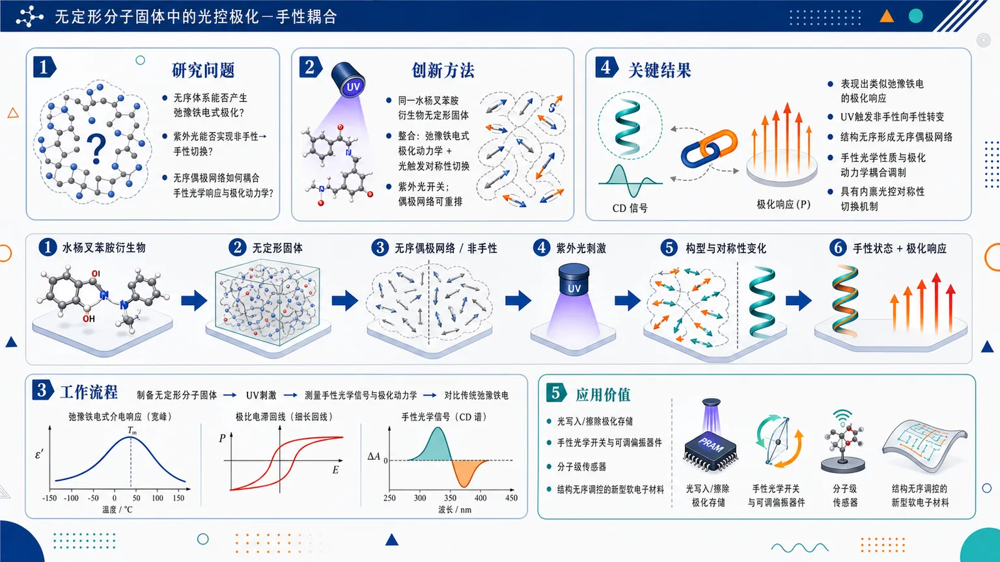
研究问题无定形分子固体通常结构无序、缺乏长程晶格对称性，论文核心关注：这种无序体系能否同时产生类似弛豫铁电的极化响应，并在紫外光刺激下实现从非手性到手性的可控切换；进一步揭示无序偶极网络如何把手性光学响应与极化动力学耦合在一起。创新方法Aha 点在于把“弛豫铁电式极化动力学”和“光触发非手性—手性转换”整合到同一种水杨叉苯胺衍生物无定形分子固体中：紫外光像开关一样改变分子对称性状态，无序偶极网络则像可重排的极化迷宫，使手性光学信号与极化响应同步受到调控。工作流程以水杨叉苯胺衍生物形成无定形分子固体 → 初始体系处于无序偶极网络和非手性状态 → 施加紫外光刺激 → 分子构型/对称性发生变化，诱导非手性向手性状态切换 → 测量手性光学响应与极化动力学 → 将所得极化行为与传统弛豫铁电进行对比，识别类似弛豫铁电但具光控对称性切换的特征。关键结果该无定形分子固体表现出类似弛豫铁电的极化响应；紫外光能够触发非手性状态向手性状态转变；结构无序不是缺陷背景，而是形成无序偶极网络，使手性光学性质与极化动力学发生耦合调制；相比传统弛豫铁电，该体系具有内禀的光控对称性切换机制。应用价值该研究为设计光控分子铁电、可切换手性光学材料和无定形功能固体提供新思路：未来可用于光写入/擦除的极化存储、手性光学开关、可调偏振器件、分子级传感器，以及利用结构无序实现功能调控的新型软电子材料。核心概览
该论文研究水杨叉苯胺衍生物非晶分子固体中，紫外光触发的非手性—手性切换及其与类似弛豫铁电极化响应的耦合，属于分子铁电/光响应手性材料方向。
方法要点
- 以水杨叉苯胺衍生物的非晶分子固体作为研究对象。
- 利用紫外光触发材料从非手性状态向手性状态转变。
- 关注结构无序对分子偶极网络的重塑作用。
- 将手性光学信号与极化动力学关联分析。
- 通过极化行为表征其类似弛豫铁电的响应；具体测试手段摘要未详述。
关键结果
- 材料可在非手性与手性状态之间发生切换。
- 非晶结构无序会重塑偶极网络。
- 手性光学信号与极化动力学存在耦合。
- 该非晶分子固体表现出类似弛豫铁电的极化行为。
- 紫外光可作为调控非手性—手性转变及相关极化响应的外部刺激。
创新性判断
- 可能的新颖点在于：将“非晶分子固体”“光诱导非手性—手性切换”和“弛豫铁电样极化响应”结合到同一体系中研究。
- 相比常见晶态铁电或有序手性材料，该工作强调结构无序对偶极网络和极化动力学的作用，这可能是其重要特色。
- 手性光学信号与铁电样极化动力学的耦合也可能构成创新点，但具体耦合机制、证据强度和与已有工作的差异，摘要未详述。
-
18
📊 含图深析
📄 摘要：在PSI Injector 2回旋加速器上首次实验验证强化学习束流调谐。系统把定制RL与加速器在线调参结合，针对高功率质子回旋加速器中人工调束慢、易受故障与工况变化影响的问题，展示可部署的自动化方案。
💡 亮点：强化学习首次进入PSI Injector 2的真实束流调谐闭环。它把人工经验调束推进到可部署的在线自动优化。
📖 展开分析 + 配图
研究问题高功率质子回旋加速器在圈数、束流电流、谐振腔配置、温度漂移变化下呈强非线性响应，人工调束慢且依赖经验，故障补偿常需数分钟，无法满足 ADS 驱动器秒级恢复、低束流损失和高可靠连续运行需求；核心问题是能否让真实 Injector 2 在有限人工干预下由强化学习安全、快速、在线自主调束。创新方法提出面向真实高功率回旋加速器的物理约束强化学习调束框架：TD3 智能体直接连接 EPICS/PyEPICS 实时控制系统，以 8 个 MIF 相位探针、损失监测、提取电流、圈数和温度为状态，控制 12 个 trim coils、AIHS 主校正线圈和 CI3V 谐振腔电压；Aha 点是把加速器物理嵌入 RL——AIHS 磁场超调策略把稳定等待从约 60 s 压到 10 s，物理奖励函数同时约束相位误差、束流损失、trim coil 过度使用和联锁安全，并用 2700 万历史样本训练 MDN surrogate 预演策略，减少真实机器危险探索。工作流程历史运行数据清洗与 200 ms 重采样 → 选择 21 维机器状态/执行器特征与 8 个 MIF 相位输出 → 训练 MDN surrogate 进行离线预训练和奖励验证 → 操作员设定目标圈数与安全动作边界 → 20 µA 低电流在线 TD3 训练 → 每 10 s 读取相位、损失、电流、圈数、温度状态 → 智能体输出线圈和 RF 修正动作 → AIHS 超调快速稳定磁场 → 奖励函数评估束流质量并惩罚损失/过修正/联锁 → 触发异常时回滚到最后安全动作或进入 safe mode → 夜间长时间自主低损耗运行 → 将低电流策略迁移到最高 800 µA 高电流验证。关键结果完成 PSI Injector 2 高功率回旋加速器首次 RL 在线调束实验证明；12 天测试覆盖 72、73、74、89、60 turns，以及四谐振腔、三谐振腔、两谐振腔等正常与退化运行模式。MDN surrogate 在 held-out test 上达到 MSE = 2.4 × 10⁻⁵、平均 R² = 0.9898；AIHS 超调将磁场有效稳定时间由约 60 s 降至约 10 s，近 6 倍加速在线交互。各配置中策略可在数小时在线训练内稳定，并在夜间约 12 小时自主评估中保持低损耗运行；低电流 20 µA 训练策略可迁移到最高 800 µA 束流运行。应用价值证明强化学习可在真实兆瓦级加速器环境中安全接管部分调束任务，为 ADS 级高可靠质子驱动器提供自主控制、快速故障补偿、漂移自适应和低损耗运行的实验依据；可减少人工经验依赖、缩短调束和恢复时间，并为未来 HIPA、回旋加速器驱动核废料嬗变系统及其他高功率束流设施的智能运维奠定技术路线。第一部分：核心概览 (Overview)
高功率质子回旋加速器首次实现强化学习在线调束实验证明：TD3 智能体接入 PSI Injector 2 的实时诊断与控制系统，在 12 天运行测试中跨多个圈数、谐振腔配置和束流电流完成低损耗调束。核心贡献在于把加速器物理约束、奖励塑形、联锁处理、磁场超调加速策略系统嵌入 RL 控制，使在线训练在数小时内收敛，并能从 20 µA 训练迁移到最高 800 µA 运行，为 ADS 级高可靠驱动器的自主控制提供了首个高功率回旋加速器实验证据。
---
第二部分：结构化快速回顾
《First Experimental Demonstration of Reinforcement Learning-Based Tuning on the PSI Injector 2 Cyclotron》（None，）
背景
PSI HIPA 已运行半世纪，连续波质子束平均功率达 1.42 MW，Injector 2 将质子从 0.87 MeV 加速到 72 MeV。ADS 对束流中断频率和恢复时间要求远严于现有高功率加速器，人工调束和分钟级故障补偿不足以满足秒级要求。
方法
实验在 PSI Injector 2 四扇区分离扇区回旋加速器上开展。控制对象包括 12 个 trim coils、AIHS 主校正线圈、CI3V 谐振腔电压；观测量包括 8 个 MIF 相位探针、损失监测器、提取束流电流、圈数估计、温度。RL 算法采用 TD3，并结合历史数据训练的 MDN surrogate model、奖励塑形、联锁回退和 AIHS 超调策略。
结果
历史数据集约 2700 万样本，覆盖 63 天以上运行；surrogate test MSE 为 2.4 × 10⁻⁵，平均 R² = 0.9898。AIHS 超调把磁场有效稳定时间从约 60 s 降至 10 s。实验覆盖 72、73、74、89、60 turns，并在低电流训练后进行夜间长期自主评估和高电流验证。
讨论
束流动力学强烈依赖圈数、束流电流、谐振腔配置、温度漂移和工作点，单一线性 Jacobian 或固定响应矩阵只在局部有效。RL 的价值在于学习状态依赖控制策略，直接从机器观测映射到修正动作，同时满足安全限制。
局限
高功率直接探索仍受机器保护、束流损失、联锁阈值和有限机时约束。radial probe 只用于慢速表征，不进入在线 ML feedback loop。部分收敛性能和高电流结果在所给文本中未完整展开。
结论
实验构成高功率回旋加速器 RL 辅助调束的首次实验证明，显示在适当物理约束与安全机制下，低电流训练策略可迁移到更高束流电流，为 HIPA 复杂系统和 ADS 级驱动器的自动化、故障补偿和稳定运行奠定基础。
---
第三部分：逐章节冷凝解析 (Section-by-Section Condensing)
Abstract
- First high-power cyclotron RL tuning demonstration
高功率质子回旋加速器的可靠运行被定位为 ADS 与大型应用的关键技术瓶颈；传统调束依赖人工，存在慢、非最优、故障或工况变化下难执行的问题。摘要直接给出问题背景：*"Reliable operation of high-power proton cyclotrons is a critical requirement for Accelerator Driven Systems (ADS) and other large-scale applications."* 同时指出传统流程的缺陷：*"Beam tuning in such machines is traditionally performed manually, a process that can be slow, non-optimal, and difficult to execute in the presence of faults or changing conditions."*
- Injector 2 chosen as high-power testbed
PSI Injector 2 cyclotron 被选为高功率运行控制策略的理想测试平台，ML 框架部署在真实机器而非仿真平台：*"we developed and deployed a machine learning (ML) based tuning framework on the Injector 2 cyclotron at PSI, chosen as an ideal testbed for high-power operation."*
- Physics-informed RL integration
系统把定制强化学习算法、实时诊断、实时控制、加速器物理启发改造结合起来，而不是单纯调用通用 RL。关键工程创新是overshoot strategy，使磁场稳定时间近似缩短 6 倍：*"The system combined a tailored reinforcement learning (RL) algorithm with real-time diagnostics and control, and incorporated accelerator-physics inspired adaptations such as an overshoot strategy that reduced magnetic field settling times by nearly a factor of six."*
- Long real-time ML campaign
实验持续 12 天，在实时 ML 控制研究中属于长周期测试；RL 智能体跨多个 operating points 成功调束：*"Over an extensive 12-day operational test campaign, relatively long in the context of real-time ML experiments, the RL agent successfully tuned the machine across multiple operating points."*
- Online training and overnight autonomous evaluation
每个配置中，策略在数小时在线训练内稳定，随后通过夜间低损耗运行评估：*"For each investigated configuration, stable policies were obtained within a few hours of online training and subsequently demonstrated reliable low-loss operation during overnight evaluation runs."*
- Low-current-to-high-current generalization
策略从低电流训练迁移到最高 800 µA 束流运行仍有效，显示在适配约束下具备泛化能力：*"the learned policy remained effective when transferred from low-current training to operation at beam currents up to 800 µA, demonstrating robust generalization under appropriately adapted operational constraints."*
---
I Introduction
- HIPA performance establishes high-power relevance
PSI High Intensity Proton Accelerator (HIPA) 自 1974 年运行，是全球最强连续波质子束设施之一；平均功率 1.42 MW，由两级回旋加速器产生：*"The High Intensity Proton Accelerator (HIPA) complex at the Paul Scherrer Institut (PSI) has been in operation since 1974, and today delivers the most intense continuous-wave proton beam worldwide, with an average power of 1.42 MW produced by a two-stage cyclotron system."*
- Injector 2 and ring cyclotron define energy chain
第一阶段 Injector 2 把质子从 0.87 MeV 加速到 72 MeV；第二阶段 590 MeV ring cyclotron 进一步提升至最终能量，最大平均电流 2.4 mA：*"Injector 2 cyclotron accelerates protons from 0.87 MeV... up to 72 MeV. The second stage, the 590 MeV ring cyclotron, then boosts the beam to its final energy, with a maximum average current of 2.4 mA."*
- Extraction efficiency is already extremely high
HIPA 提取效率超过 99.98%，说明该设施是高功率低损耗运行的成熟代表：*"After extraction, which is achieved with efficiencies exceeding 99.98%, the beam is transported to multiple target stations for meson and neutron production."*
- Cyclotrons are attractive ADS drivers
回旋加速器质子驱动器具有紧凑、高能效、高可用性优势，使其成为 ADS 候选方案：*"Cyclotron-based proton drivers, as demonstrated at PSI, combine compactness, high energy efficiency, and excellent beam availability, making them attractive candidates for future Accelerator-Driven Systems (ADS)."*
- ADS reliability requirement is harsher than existing facilities
ADS 将高功率质子束耦合到次临界反应堆，反应堆功率直接依赖外部束流，因此束流中断必须比现有高功率设施少几个数量级且更短：*"Because the reactor power depends directly on the external proton beam, these facilities impose exceptionally stringent reliability requirements on the accelerator, demanding beam interruptions that are orders of magnitude less frequent and significantly shorter than those tolerated in existing high-power accelerator facilities."*
- Injector 2 is strategically relevant to Transmutex ADS concept
Transmutex 的 ADS 概念目标是清洁能源和核废料长期放射毒性降低；HIPA 与未来 ADS driver 的结构相似性使 Injector 2 成为理想测试平台：*"The architectural similarities between the HIPA cyclotrons and the envisioned ADS driver make PSI’s Injector 2 cyclotron an ideal testbed to investigate the control strategies and automation capabilities required for such systems."*
- Existing fault compensation is too slow for ADS
PSI 曾证明 590 MeV ring cyclotron 一个 RF cavity 故障后，可通过重调其他 cavity 在数分钟内恢复束流；但 ADS 要求数秒级补偿：*"beam delivery can be recovered within several minutes by retuning the remaining cavities... recovery on the order of minutes remains insufficient for ADS operation, where compensation must occur within only a few seconds."*
- Routine drifts require continuous retuning
即便正常运行，温度变化、磁滞、beam loading、环境影响也会慢慢改变最优状态，需要连续调束：*"slow drifts caused by temperature variations, magnet hysteresis, beam loading, and other environmental effects require continuous retuning to maintain optimal beam quality."*
- ML motivation is real-time adaptive control
ML 被视为自动化调束、漂移补偿和实时适应工况变化的候选方案：*"By leveraging data-driven models and adaptive optimization, ML offers the potential to automate cyclotron tuning, compensate for drifts, and adapt to changing operational conditions in real time."*
- High-power cyclotron ML remains underexplored
ML 在直线加速器和 light sources 中已有探索，但高功率回旋加速器应用基本空白：*"While ML approaches have been explored in linear accelerators and light sources, their application to high-power cyclotrons remains largely unexplored."*
- RL is chosen because beam dynamics are nonlinear and operating-point-dependent
束流相位对 main coil current、RF voltage、trim-coil currents 的响应强烈依赖圈数、谐振腔配置、机器工作点，单一固定 Jacobian/response matrix 只局部有效：*"the response of the beam phase to variations in main coil current, RF voltage, and trim-coil currents depends strongly on the turn number, resonator configuration, and machine working point."* 因而：*"a single fixed Jacobian or response-matrix controller is only locally valid."*
- RL targets state-dependent constrained control
RL 被定义为直接把机器观测映射到纠正动作的状态依赖控制器，同时遵守操作和安全限制：*"Reinforcement learning was therefore investigated as a state-dependent control approach capable of directly mapping machine observations to corrective actions while respecting operational constraints and safety limits."*
- Campaign addresses deployment-level questions
实验不只是 proof-of-concept，还系统研究 actuator/diagnostic leverage、初始化、surrogate/pretraining、收敛速度、低电流到高电流泛化、retraining 频率、跨圈数 transfer learning：*"the Injector 2 campaign was carefully crafted to address a set of fundamental questions."* 核心问题是：*"can a cyclotron be operated reliably with limited human intervention, using ML-based control strategies that meet the stringent demands of ADS-class drivers?"*
---
II Experimental Setup
- Injector 2 machine architecture
Injector 2 是 four-sector separated-sector cyclotron，把质子从 870 keV 加速到 72 MeV：*"Injector 2 is a four-sector separated-sector cyclotron designed to accelerate protons from an injection energy of 870 keV to a final energy of 72 MeV."*
- Major hardware components
主要部件包括 four large sector magnets SM1–SM4、两个 double-gap RF resonators CI1/CI3、两个 single-gap resonators CI2/CI4：*"Its principal components include four large sector magnets (SM1–SM4), two double-gap RF resonators (CI1 and CI3), and two single-gap resonators (CI2 and CI4)."*
- Injection path and first turns
质子束从垂直预注入线进入，经 AWD dipole magnet 弯入中平面，再穿过 SM1 的 conical injection channel；前 six turns 通过 collimator 系统降低 halo 并确保轨道居中：*"The proton beam enters Injector 2 from the vertical pre-injection line and is bent into the median plane by the AWD dipole magnet."*；*"During the first six turns, a system of collimators minimizes beam halo and ensures a well-centered trajectory."*
- Early-turn fine control
TI1A/B 和 TI2 位于 SM1 和 SM3，用于第一阶段细调：*"Additional fine control at this stage is provided by trim coils TI1A/B and TI2 located in SM1 and SM3."*
---
II.1 Sector Magnets, Trim Coils, and Resonators
- AIHS main coils define global orbit
每个 sector magnet 由串联的一对 main coils AIHS 供电，产生主磁场并决定整体粒子轨道：*"Each sector magnet is powered by a pair of main coils (AIHS) connected in series."*；*"These coils generate the primary magnetic field and play a central role in shaping the beam trajectory, thereby defining the overall particle orbit."*
- Nine trim-coil pairs provide local orbit corrections
TI3–TI11 九对 trim coils 安装在中平面上下，用于局域磁场修正，是精确轨道控制和高效提取不可缺少的执行器：*"Nine pairs of trim coils (TI3–TI11), mounted above and below the median plane on one side of the pole, provide localized magnetic field corrections that are indispensable for precise orbit control and efficient extraction."*
- Four RF resonators control acceleration and turn radii
四个 RF resonators 中 CI1/CI3 为 double-gap，CI2/CI4 为 single-gap；整体决定每圈能量增益和连续圈径向位置：*"Beam acceleration is achieved by four RF resonators: two double-gap (CI1 and CI3) and two single-gap (CI2 and CI4)."*；*"In combination, the resonators determine the per-turn energy gain and the radial position of successive turns."*
- CI1 fixed because it defines first turn
CI1 对第一圈轨道关键，因此调束过程中固定：*"CI1 is critical for defining the first-turn trajectory and is therefore kept fixed during tuning."*
- RL-accessible controls include magnetic and RF channels
AIHS main coils、trim coils、resonator voltages 均开放给 ML agent 控制：*"The AIHS main coils, trim coils, and resonator voltages were all made available as controllable channels for the ML agent."*
---
II.2 Beam Diagnostics
- MIF probes are primary reward signals
MIF1–MIF8 八个相位探针位于第一扇区，覆盖从注入到提取的不同束流能量，作为主要奖励信号：*"Eight phase probes in the first sector, providing phase information at different beam energies from injection to extraction. These were the primary reward signals."*
- Loss diagnostics cover septum and downstream regions
损失监测包括 extraction septum 前的 MII7 ionization chamber、下游 MXI1，以及 septum entrance 的 KXAI collimators：*"Loss monitors: Ionization chambers MII7 (before the extraction septum) and MXI1 (downstream), plus the KXAI collimators at the septum entrance."*
- MXC1 monitors extracted beam intensity
MXC1 是 septum 下游高分辨率 current transformer，用于监测提取束流强度：*"MXC1: high-resolution current transformer downstream of the septum, monitoring extracted beam intensity."*
- RIE1 radial probe supports characterization but not online feedback
RIE1 radial probe 用于提取区最后 7 turns 的径向束流剖面，是慢测量，只用于表征，不进入 ML 在线反馈：*"Radial probe (RIE1): movable probe system used to obtain radial beam profiles in the extraction region (last 7 turns)."*；*"This is a slow measurement applied for beam characterization rather than in the experimental ML feedback loop."*
---
III Historical Data Processing and surrogate model
III.1 Historical Data and Feature Selection
- Historical data supports offline RL pretraining
PSI archival system 的历史运行数据用于构建离线 RL 预训练的 data-driven surrogate model：*"Historical operational data recorded by the PSI archival system were used to construct a data-driven surrogate model for offline RL pretraining."*
- Signals are resampled to 200 ms
由于 archive channels 采样率不同，所有信号统一重采样到 200 ms interval：*"Since archive channels operate at different sampling rates, all signals were resampled to a uniform 200 ms interval."*
- Filtered operating periods match experimental campaign configurations
仅保留与 Injector 2 实验配置具有代表性的运行时段：*"Only operating periods corresponding to machine configurations representative of the Injector 2 experimental campaign were retained."*
- Feature selection combines accelerator expertise and preliminary studies
变量筛选基于加速器专家知识和初步 feature-selection studies，保留 TIs、CIVs、AIHS、MIF1–MIF8、MII7/MXI1、MXC1、aggregated magnet and air temperatures：*"Based on accelerator expertise and preliminary feature-selection studies, a reduced set of variables was retained for subsequent modeling."*
- Engineered features preserve interpretability
工程特征包括turn number estimates 与由 MXC1 ripple 派生的 beam-stability indicators，用于提高模型性能并保持物理可解释性：*"Additional engineered features, including estimates of the turn number and beam-stability indicators derived from the MXC1 ripple, were incorporated to improve model performance while preserving physical interpretability."*
- Dataset scale is unusually large for accelerator ML
最终数据集约 27 million samples，对应 more than 63 days Injector 2 运行：*"The final dataset contained approximately 27 million samples, corresponding to more than 63 days of Injector 2 operation."*
---
III.2 Correlation analysis
- Correlation validates feature set and removes redundancy
相关性分析用于验证变量选择并识别冗余变量：*"Correlation analysis was performed to validate the selected feature set and identify redundant variables."*
- Temperature channels are aggregated due to strong correlations
magnet temperature sensors 之间和 air temperature sensors 之间强相关，因此聚合为代表性平均值：*"Strong correlations were observed among magnet temperature sensors and among air temperature sensors, justifying their aggregation into representative mean values."*
- Phase dependence follows expected RF and trim-coil physics
分析确认束流相位依赖 resonator voltages，同时 trim-coil currents 对径向束流位置有次级影响：*"The analysis also confirmed the expected dependence of beam phases on resonator voltages and the secondary influence of trim-coil currents on the radial beam position."*
---
III.3 Surrogate model
- Surrogate approximates Injector 2 state-action-response mapping
surrogate model 用历史机器数据近似 Injector 2 响应，服务于 RL policy offline pretraining：*"a data-driven surrogate model was developed to approximate the response of the PSI Injector 2 cyclotron from historical machine data."*
- Input-output dimensionality is explicitly defined
最终输入向量含 21 variables：其中 14 actionable variables 包括 12 trim-coil currents、CI3 resonator voltage、main-coil current，另有 7 observable variables 包括温度信息和其他谐振腔电压；输出为 8 phase-probe signals MIF1–MIF8：*"The final surrogate input vector contained 21 variables: 14 actionable variables, consisting of 12 trim-coil currents, the CI3 resonator voltage, and the main-coil current, together with seven observable variables including temperature information and the voltages of other resonators."*；*"The output vector contained the eight phase-probe signals MIF1–MIF8."*
- Mapping is 21D to 8D
模型学习 21-dimensional machine-state and actuator vector 到 8-dimensional phase-response vector 的映射：*"The surrogate therefore learned a mapping from a 21-dimensional machine-state and actuator vector to an 8-dimensional phase-response vector."*
- Scaling limits are physically adjusted
所有输入输出变量使用从历史数据范围导出的 limits 缩放，并根据物理意义调整：*"All input and output variables were scaled using limits derived from historical data."*；*"These limits were obtained from the combined filtered and raw data ranges and then adjusted to physically meaningful model ranges."*
- Held-out dataset is large and centrally sampled
held-out dataset 从每个 filtered dataset 中部抽取，每个数据集 10⁶ samples，总计 3.0 million samples；验证/测试比例为 1/3 validation, 2/3 testing：*"A held-out dataset was extracted from the middle of each filtered dataset using a central slice of 10⁶ samples per dataset, giving a total of 3.0 million samples."*；*"with one third used for validation and two thirds used for testing."*
- Training data balancing uses down-sampling
2023 训练数据每 7 行取一行，2024-with-cavity 训练数据每 5 行取一行，最终训练集约 27 million samples：*"the 2023 training data were down-sampled by taking every seventh row, while the 2024-with-cavity training data were down-sampled by taking every fifth row."*；*"the final training set contained approximately 27 million samples."*
- MDN selected as final surrogate
多个候选 surrogate-model 被比较，最终选择 Mixture Density Network (MDN)：*"Several surrogate-model candidates were evaluated, and the final selected model was a Mixture Density Network (MDN)."*
- Test performance is excellent
held-out test set 上平均 test MSE 为 2.4 × 10⁻⁵，平均 R² = 0.9898：*"the selected surrogate achieved an average test mean-squared error of 2.4 × 10−5 and an average coefficient of determination of R2 = 0.9898."*
- Surrogate reduces risky online exploration but does not replace accelerator validation
surrogate 的目的不是替代真实加速器验证，而是在部署前提供快速数据驱动环境，减少机器上的探索交互：*"The purpose of the surrogate was not to replace validation on the real accelerator."*；*"This reduced the amount of exploratory interaction required on the machine and allowed different training strategies to be tested before live operation."*
---
IV Tuning Strategy and Campaign Overview
- 20 µA chosen as safe training current
20 µA 被选为训练参考电流，兼顾可靠相位测量和低束流功率，降低不稳定时的活化风险：*"A beam current of 20 µA was selected as the reference for training, providing reliable phase measurements at sufficiently low beam power to minimize activation risks in case of instability."*
- Training current balances exploration and signal quality
在 20 µA 下，束斑足够小，允许较宽 action exploration；信号质量足以表征 losses 与 phase shifts：*"At this current, the beam size remained small enough to allow wide action exploration, yet the signal quality was adequate to meaningfully characterize losses and phase shifts."*
- AIHS and CI3V control global beam conditions
AIHS main coil current 和 CI3V voltage 是控制全局束流条件的主导参数，特别影响径向轨道和提取能量：*"The main coil power supply current for the magnetic field (AIHS) and the voltage of resonator 3 (CI3V) were identified as the dominant parameters controlling global beam conditions, specifically the radial trajectory and the extraction energy."*
- Operational boundaries are manually scanned before RL
AIHS 和 CI3V 纳入 RL action space，但边界通过人工扫描预先确定，确保 interlocks 前有足够裕度：*"Both were included in the RL action space, but their operational boundaries were carefully determined in advance by manual scans to ensure sufficient headroom before interlocks."*
- Twelve trim coils are available but penalized
其余 12 个 trim coils 也开放给 RL agent，主要补偿局域 phase deviations；奖励塑形惩罚过度使用，防止局部过补偿：*"All twelve remaining trim coils were also available to the RL agent, primarily to compensate for local phase deviations."*；*"Reward shaping was employed to discourage excessive trim coil usage."*
- Five turn configurations span nominal and degraded modes
campaign 覆盖 72、73、74、89、60 turns，通过改变 resonators 2 和 4 峰值电压改变每圈能量增益和总圈数：*"The campaign targeted five distinct machine configurations... (72, 73, 74, 89, and 60 turns)."*；*"obtained by varying the peak voltages of resonators 2 and 4, thereby changing the energy gain per turn and consequently the total number of turns to extraction."*
- Table 1 specifies RF configurations
72 turns：Res1 430 kVp, Res2 429 kVp, Res3 451 kVp, Res4 0；73 turns：430/401/449/0；74 turns：430/371/448/0；89 turns：430/0/449/0；60 turns：430/428/448/428。对应描述为：*"Listed are the peak voltages of the four resonators (in kVp) for each turn number."*
- Configurations represent four-, three-, and two-resonator operation
这些配置覆盖 nominal four-resonator operation、three-resonator reduced operation、two-resonator degraded mode，用于研究 RL 在正常和 failure-like 条件下的适应性：*"These configurations were deliberately selected to span the three operational scenarios of Injector 2: nominal operation with four resonators, reduced operation with three resonators, and a degraded mode with only two resonators."*
- Daily cycle combines operator benchmark, low-current training, overnight autonomous control
每阶段包括早晨 setup、2 mA nominal optimization、probe measurements、白天低电流 ML training、夜间 autonomous control 约 12 hours：*"Each stage of the campaign followed a structured daily cycle."*；*"operators configured the machine to the target turn number, optimized the beam at nominal current (2 mA)"*；*"the ML agent was left in autonomous control during evening and overnight periods... over many hours of operation (12 hours)."*
- High-current validation extends to milliampere regime
最终 stage 5 将 ML 控制推向 mA 量级，检验策略鲁棒性：*"A final high-current validation stage 5 extended ML control into the milliampere regime to evaluate the robustness of the learned policies."*
- Campaign lasted 11 experimental days plus 1 setup day
实验从 Apr 28, 2025 到 May 8, 2025，共 11 days，另有实验前 1 day setup tests：*"the experiment took place from Apr 28, 2025 until May 8th, 2025 i.e., for a total of 11 days."*；*"An additional one day, prior to experiment, was dedicated for setup tests."*
- Campaign generated hundreds of hours of ML operation
总体覆盖五个圈数、多种谐振腔配置、数百小时 ML 运行，并产生离线分析数据集：*"In total, the campaign covered five turn numbers across multiple resonator configurations, produced hundreds of hours of machine learning operation, and generated a comprehensive dataset for offline analysis."*
---
V Turn and Current-Dependent Beam Dynamics: Radial Profiles and Jacobian Evolution
- Beam dynamics depend strongly on turn number and current
回旋加速器束流动力学对圈数和运行电流具有强依赖性，该节结合 radial probe 和 Jacobian 分析量化机器响应变化：*"Cyclotron beam dynamics exhibit strong dependence on both the number of turns and the operating beam current."*；*"combining radial probe measurements with sensitivity (Jacobian) analyses to quantify how the response of the machine evolves under different conditions."*
---
V.1 Beam setup and turn-dependent operation
- Reference operating point is established at 2 mA
每个圈数配置的参考运行点在 2 mA 束流电流建立，即使 reduced-resonator modes 中这也是最大可达电流：*"For each selected turn number configuration, the reference operating point was established at a beam current of 2 mA, which represents the maximum achievable current even in reduced-resonator modes."*
- Daily setup uses low-current adjustment followed by 2 mA optimization
每日先由操作员低电流调整谐振腔电压和线圈设置以配置目标圈数，再在 2 mA 优化稳定传输和提取效率：*"Daily operations began with low-current operator-led adjustments of resonator voltages and coil settings to configure the desired turn number, followed by optimization at 2 mA to ensure stable transmission and extraction efficiency."*
- Some configurations require hardware interventions
某些情形需要重新定位 collimators KIP4、KIR1L 或调整 extraction septum AXA 才能恢复束流质量：*"In certain cases, additional interventions such as collimator repositioning (KIP4, KIR1L) or adjustment of the extraction septum (AXA) were required to restore beam quality."*
- More turns and fewer resonators increase tuning complexity
调束复杂性随圈数增加而上升，尤其是 active resonators 减少时；89 turns 两谐振腔模式最高敏感，小磁场或 RF 偏差会快速改变束流并触发 interlocks：*"The complexity of tuning was found to increase with the number of turns, particularly when fewer resonators were active."*；*"Configurations with only two active resonators (e.g. 89 turns) exhibited the highest sensitivity, where small deviations in magnetic field or RF voltage led to rapid beam change and frequent interlocks."*
- Operator tuning times quantify difficulty
Table 2 显示人工调束：72→73 触发 3 次 interlocks，耗时 10 min；73→74 触发 3 次，耗时 9 min；74→89 触发 7 次，耗时 47 min；89→60 触发 0 次，耗时 10 min。表题说明：*"Summary of operator-led fine-tuning procedures across turn configurations."*
- Manual procedures are unsuitable for ADS
操作员依赖流程无法满足 ADS-class drivers 的持续可靠性要求，推动 ML 自动调束：*"Such operator-dependent procedures are not sustainable for ADS-class drivers, thereby motivating the development of ML-based automated tuning methods."*
---
V.2 Radial probe measurements
- Gaussian fits quantify extracted radial beam size
为量化提取束流径向尺寸，RIE1 profiles 在 20 µA to 2 mA 电流范围和多个圈数下进行 Gaussian fits：*"Gaussian fits were applied to the RIE1 probe profiles across beam currents from 20 µA to 2 mA and for multiple turn numbers."*
- Beam broadens with current and differs by turn number
分析显示径向束流尺寸随电流明显变宽，并存在圈数差异；这与 Injector 2 早期观测一致：*"The analysis reveals a clear current-dependent broadening of the radial beam size... and with systematic differences between turns."*
- Last-three-turn averaging provides representative extraction-region metric
径向宽度对最后 three turns 取平均，以平滑 coherent betatron oscillations 造成的波动，同时保留物理 envelope：*"the radial width was averaged over the last three turns, which smooths fluctuations due to coherent betatron oscillations while preserving the physical envelope."*
- Space-charge effects appear around 1 mA
与 BMAD self-consistent space-charge tracking simulations 对比后，在约 1 mA 附近观察到 slope change，指向 collective effects onset：*"Comparison with BMAD self-consistent space-charge tracking simulations confirms the observed slope change around 1 mA, pointing to the onset of collective effects."*
- Experiment-simulation agreement supports RL benchmarking
实验与仿真高度一致，为不同电流和圈数下 RL-guided tuning benchmarking 提供物理依据：*"The close agreement between experiment and simulation... provides confidence in the physical interpretation and establishes a solid basis for benchmarking RL-guided tuning strategies under varying current and turn conditions."*
---
V.3 Machine Nonlinearity and Motivation for RL
- Jacobian varies significantly with turn and operating point
Appendix D 的 Jacobian 分析显示束流响应随圈数和工作点显著变化：*"The Jacobian analysis presented in Appendix D shows that the beam response varies significantly with turn number and operating point."*
- Single linear response matrix is insufficient
强非线性意味着单一线性响应矩阵无法覆盖所研究运行范围，因而需要状态依赖 RL 控制器：*"This strong nonlinearity indicates that a single linear response matrix is insufficient to describe the machine over the investigated operating range, motivating the use of a state-dependent reinforcement learning controller."*
- Higher turns and higher currents increase difficulty
radial probe 和 Jacobian 结果显示，调束难度随圈数和电流增加而上升；大半径处对小扰动更敏感，高电流引入空间电荷效应并拓宽束流分布：*"cyclotron tuning becomes progressively more challenging with increasing turn number and beam current."*；*"At larger radii, the beam exhibits greater sensitivity to small perturbations, while higher beam currents introduce additional space-charge effects and broaden the beam distribution."*
- Environmental drifts alter response over time
慢环境变化，尤其 magnet temperature changes，会随时间改变机器响应：*"slow environmental variations, such as magnet temperature changes, modify the machine response over time."*
- Staged campaign follows physics difficulty gradient
这些观测支持 staged campaign：从低电流训练开始，逐圈推进，最后在高电流验证：*"These observations motivated the staged design of the Injector 2 campaign, beginning with low-current training, progressing turn-by-turn, and culminating in validation at higher beam currents."*
- Adaptive control is required beyond fixed linear models
总体结论是控制器必须响应 turn-, current-, drift-dependent behavior，而不是依赖固定线性模型：*"they highlight the need for adaptive control strategies capable of responding to turn-, current-, and drift-dependent machine behavior rather than relying on a fixed linear response model."*
---
VI Adapting accelerator physics for ML integration
- Algorithm alone is insufficient for accelerator control
成功部署 ML 需要把机器物理转化为可访问、安全、高效的优化问题，而不仅是更复杂算法：*"The successful deployment of machine learning in accelerator control requires more than sophisticated algorithms; it depends critically on adapting the underlying physics to become accessible, safe, and efficient for data-driven optimization."*
- Injector 2 modifications bridge policy learning and beam tuning
Injector 2 引入一组 targeted modifications，使机器物理响应适配 RL：*"a set of targeted modifications were introduced that made the machine’s physical response compatible with RL, effectively bridging the gap between abstract policy learning and practical beam tuning."*
- Two decisive innovations are overshoot and reward design
两个关键创新：超调策略将 magnet settling times 缩短近 6 倍；物理动机 reward design 使 agent 目标与熟练操作员目标一致：*"Two innovations were particularly decisive: an overshooting strategy that accelerated magnet settling times by nearly a factor of six, and a physics-motivated reward design that aligned the agent’s objectives with those of experienced operators."*
---
VI.1 Overshooting Strategy
- AIHS settling is the online-control bottleneck
主磁线圈 AIHS 调整后磁场稳定慢，限制 agent-environment interactions 数量：*"One of the primary limitations for online control was the slow settling of the magnetic field following adjustments to the main magnet coil (AIHS)."*
- MIF8 phase takes nearly 60 s without overshoot
小电流步进后，MIF8 phase signal 通常接近 60 s 才达到稳态：*"After a small current step, the associated MIF8 phase signal typically required close to 60 s to reach a steady state."* 图 4 具体为 +0.05 A AIHS step，turn 72：*"MIF8 phase response following a +0.05 A step increase in AIHS current without overshooting."*
- Overshoot reduces effective settling from 60 s to 10 s
通过简单超调策略，AIHS 磁场有效稳定时间从约 60 s 降至 10 s：*"Overshooting is a well-established control technique; here it was adapted to the operational constraints of Injector 2 to reduce the effective settling time from approximately 60 s to 10 s."*
- Reduction makes online RL feasible under beam-time constraints
6 倍加速对于有限 beam time 内进行在线 RL 实验是必要条件：*"This reduction was essential for making online reinforcement-learning experiments practical within the limited beam time available."*
- Overshoot verified across perturbations and interlock constraints
方法在一系列 perturbation amplitudes 下验证，并受 interlock limits 约束：*"The method was verified across a range of perturbation amplitudes and constrained to remain within interlock limits."*
- Operational overshoot parameters are explicit
图 5 使用最终 AIHS step ±0.05 A、100% overshoot、7-second reversion time、turn 72：*"MIF8 phase response to positive and negative overshooting with an AIHS final step of ±0.05 A, using 100% overshoot and a 7-second reversion time (Turn 72)."*
---
VI.2 Reward Shaping
- Reward combines beam quality, trim penalty, and interlock penalty
总奖励为
R = R_beam + Pₜᵣᵢₘ + Pᵢₙₜₑᵣₗₒck，其中 beam quality、trim-coil excessive use 和安全联锁分别编码：*"The total reward was expressed as: R = Rbeam + Ptrim + Pinterlock."*；*"Rbeam encodes beam quality, Ptrim penalizes excessive use of trim coils, and Pinterlock enforces safety by strongly penalizing beam loss events."*
- Phase reward uses eight weighted MIF phase errors
中心项是八个 MIF phase probes 的 measured-reference weighted error：
Rₚₕₐₛₑ = (Σᵢ₌₁⁸ wᵢ(ϕᵢ − ϕᵢref)²)¹ᐟ²。原文定义：*"The central term is the weighted error between measured and reference beam phases at the eight MIF probes."*
- Outer probes receive greater weights
实验中相位权重为 w = [1,1,1,1,2,3,4,5]，越靠外权重越大，因为接近提取时相位对束流质量和提取效率更关键：*"The phase weights used throughout the experimental campaign were w = [1,1,1,1,2,3,4,5], assigning progressively greater importance to the outer probes."*；*"near extraction, where beam quality and extraction efficiency are most sensitive to phase deviations."*
- Loss penalty uses current-loss deviation
beam losses 通过 measured current loss signal ΔIₗₒₛₛ 相对最小参考值的偏差纳入：*"Beam losses were incorporated through the deviation of the measured current loss signal ΔIloss from its minimal reference value."*
- Beam reward is bounded by tanh terms
beam-related reward 为
R_beam = −1/2 [tanh(Rₚₕₐₛₑ/10) + tanh(ΔIₗₒₛₛ/30)]，使用 tanh 使贡献有界：*"The combined beam-related reward was then: Rbeam = −1/2 [tanh(Rphase/10) + tanh(ΔIloss/30)]."*
- Trim-coil penalty discourages local overcorrection
trim 使用惩罚为
Pₜᵣᵢₘ = −λ(1/N)Σⱼ₌₁ᴺ |Iⱼ|，其中 N = 12，λ 通过 BMAD simulation 选择：*"trim-coil usage was penalised to discourage excessive local corrections."*；*"N = 12 is the number of coils, and λ a scaling factor. The latter was selected using the BMAD simulation environment prior to deployment on the real machine."*
- Reward boundedness prevents divergence
这种设计保证 reward contribution 有界，避免训练发散：*"Such an approach ensures bounded contributions and avoids divergence during training."*
- BMAD environment validates reward before machine deployment
reward function 先在 BMAD-based tracking environment 中测试，作为安全系统测试平台：*"The reward function was first implemented in a BMAD-based tracking environment, which provided a safe platform for systematic testing."*
- Good convergence criterion is fewer than 1000 timesteps
仿真中 good convergence 定义为 fewer than 1000 timesteps 内成功调束，通常对应一两次 corrective actions 即达到目标：*"Good convergence was defined as achieving successful tuning within fewer than 1000 timesteps, typically corresponding to the agent bringing the machine to the desired state in one or two corrective actions."*
- Final reward threshold corresponds to physical tuning quality
成功阈值 R > −0.08；对应 phase errors 约 ±1°，平均 trim-coil usage 低于范围的 20%：*"The reward threshold of -0.08 was selected as a compromise between the intrinsic noise level of the phase diagnostics and the accelerator physics definition of successful beam tuning."*；*"phase errors of approximately ±1° and average trim-coil usage below 20% of their range... equivalent to R > −0.08."*
---
VI.3 Interlock Handling
- Layered interlock supplements standard HIPA protection
除 HIPA 标准保护系统外，还实现分层联锁策略：*"A layered interlock strategy was implemented in addition to the standard HIPA protection systems."*
- Three monitored signal classes define safety envelope
联锁监测三类信号：MIF phase validity、KXAI/MII7/MXI1 losses、MXC1 extracted current stability：*"The interlocks monitored three classes of signals: (i) the validity of the MIF phase measurements, (ii) the level of beam losses detected by KXAI, MII7, and MXI1, and (iii) the stability of the extracted current measured by MXC1."*
- Interlock triggers include invalid phases, high/undefined losses, and current deviations
若 MIF invalid/out of range、losses 超过阈值或 undefined、MXC1 偏离 nominal 超过 20%，触发联锁：*"An interlock was issued whenever the MIF signals became invalid or out of range... or whenever the MXC1 current deviated by more than 20% from its nominal value."*
- First-stage recovery rolls back to last valid action
第一阶段联锁响应是回滚到 last known valid action，并加小扰动以避免反复振荡：*"In the first stage, the ML agent rolled back to the last known valid action with a small perturbation added to avoid repeated oscillation around the same point."*
- Second-stage recovery halts RL and enters safe mode
若允许窗口内未恢复，则触发第二联锁，停止 RL 控制并进入 safe mode：*"If recovery was not achieved within the allowed window, a second interlock was raised. In this case, RL control was halted and the system transitioned into a safe mode."*
- Safe mode exit requires 40 s stable MXC1 within 20%
系统保持 safe mode，直到 MXC1 在 20% 范围内稳定至少 40 s：*"it remained until the MXC1 signal demonstrated stable behavior within 20% for at least 40 s."*
- All interlocks are logged for behavior analysis
所有联锁事件自动记录 timestamps、type（single/double）、root cause，用于分析 agent fault-condition behavior：*"All interlock events were automatically logged together with their timestamps, type (single or double), and root cause."*
---
VII Reinforcement Learning Methodology
- TD3 selected for continuous noisy accelerator control
RL 框架采用 Twin Delayed Deep Deterministic Policy Gradient (TD3)，适合 continuous action spaces，并在 noisy environments 中收敛稳定：*"The reinforcement learning framework was implemented using the Twin Delayed Deep Deterministic Policy Gradient (TD3) algorithm, which is well suited for continuous action spaces and has been shown to provide stable convergence in noisy environments."*
- Custom OpenAI Gym environment ensures modularity
实现了 custom OpenAI Gym-compatible environment 对接 Injector 2：*"A custom OpenAI Gym–compatible environment was developed to interface the agent with Injector 2, ensuring modularity and reproducibility of the experimental framework."*
- EPICS/PyEPICS provides real-time accelerator interface
Injector 2 通过 EPICS 运行，专用 Linux server 上的 PyEPICS 提供对 process variables 的实时访问：*"Injector 2 is operated with the Experimental Physics and Industrial Control System (EPICS)."*；*"A dedicated Linux server running PyEPICS provided real-time access to process variables (PVs)."*
- Observation space contains 14 continuous variables
observation vector 包括 MIF1–MIF8 八个相位测量、MII7/MXI1 两个 loss monitors、MXC1、estimated turn number、mean magnet temperature MIT_M、bunker temperature MIT，共 14 continuous variables：*"The observation vector consisted of 14 continuous variables: the eight phase measurements MIF1–MIF8, the two loss monitors MII7 and MXI1, the extracted beam current MXC1, the estimated turn number, the mean magnet temperature MIT_M, and the bunker temperature MIT."*
- Observation captures quality, losses, operating point, and drifts
这些量覆盖 beam quality、losses、operating point、slow machine drifts：*"Together these quantities provide information on beam quality, losses, operating point, and slow machine drifts."*
- Action space contains 14 continuous variables
action vector 包括 12 trim-coil currents TI1A/B–TI11、AIHS、CI3V，共 14 continuous variables：*"The action space also consisted of 14 continuous variables: the twelve trim-coil currents (TI1A/B–TI11), the main correction coil current AIHS, and the resonator voltage CI3V."*
- All variables are normalized to [-1, 1]
所有 state 和 action variables 在训练前归一化至 [-1,1]：*"All state and action variables were normalized to the interval [-1,1] prior to training."*
- Objective combines phase tracking, loss reduction, trim restraint, and safe exploration
agent 目标是最小化 measured phase profile 与 predefined reference 的 weighted deviation，同时惩罚 beam losses 和 excessive trim coil usage；interlock conditions 给予 large negative rewards：*"The agent’s objective was to minimize the weighted deviation between the measured phase profile and a predefined reference, while simultaneously penalizing beam losses and excessive trim coil usage."*；*"Interlock conditions... resulted in large negative rewards, enforcing safe exploration during training."*
- Overshoot fixes training step at 10 s
AIHS 超调使磁场稳定从 60 s 降到 10 s，每个 action-observation cycle 固定为 10 s：*"The slow response of the main coil (AIHS) was addressed through a dedicated overshooting strategy... which reduced magnetic settling times from approximately 60 s to 10 s."*；*"each action-observation cycle was executed on a fixed 10 s timescale."*
- Episodes represent independent tuning attempts
每个 episode 是从某个机器配置开始的一次独立调束尝试：*"The training of the RL agent was organized into episodes, each corresponding to an independent tuning attempt starting from a given machine configuration."*
- One interaction includes action proposal, machine application, stabilization, observation, reward
每步交互包括提出动作、通过 PyEPICS 应用到机器、等待稳定、记录 observation 和 reward：*"Each interaction consisted of proposing a new action, applying it to the machine via PyEPICS, allowing the system to stabilize... and recording the resulting observations and reward."*
- Wall-clock time includes reset overheads
每步约 10 s，但每 episode 起始 reset 通常约 40 s，若 reset 中触发联锁会更长；报告训练时间包含 reset overheads：*"This reset typically required about 40 s to restore the machine to a valid initial condition and could occasionally take longer if an interlock was triggered during the reset process."*；*"the total training duration reported in this work corresponds to the measured wall-clock time... rather than simply the number of timesteps multiplied by 10 s."*
- Maximum episode length is 40 steps
Injector 2 训练最大 episode length 设为 40 steps，兼顾探索和运行约束：*"For Injector 2 training, the maximum episode length was set to 40 steps."*
- Episode termination occurs at max length or reward success threshold
episode 在达到最大步数或 cumulative reward 超过成功阈值时结束：*"Episodes terminated either when the maximum number of steps was reached or when the cumulative reward surpassed a predefined threshold indicating successful tuning."*
- TD3 hyperparameters are mostly Stable-Baselines3 defaults
actor/critic 网络均为 [256,256] ReLU；learning rate 10⁻³；batch size 64；replay buffer 10⁶；learning starts 50；γ 0.99；τ 0.005；policy delay 2；target policy noise 0.2；target noise clip 0.5；maximum episode length 40 steps：*"Main TD3 hyperparameters used during the Injector 2 campaign."*
- Problem formulation mattered more than hyperparameter tuning
学习率、batch size、exploration noise 的有限扫描没有优于默认配置；reward shaping、interlock penalties、action-space limitations、overshooting strategy 对性能影响更大：*"Although limited studies were performed on learning rates, batch sizes, and exploration noise levels, no significant performance improvements were observed relative to the default configuration."*；*"reward shaping, interlock penalties, action-space limitations, and the overshooting strategy had a substantially larger impact on training performance than moderate variations of the TD3 hyperparameters."*
- Three training strategies test prior knowledge and transfer
三种策略：RL from scratch 随机初始化；RL from previous turn 用前一圈数策略初始化；RL from surrogate model 用历史数据 surrogate 离线预训练 actor 后在线 fine-tuning：*"three complementary training strategies were tested."*；*"(a) RL from scratch, where the agent was initialized with random weights; (b) RL from previous turn...; and (c) RL from surrogate model..."*
- Strategies assess convergence, policy transfer, and pretraining value
三种方法系统比较 learning performance、policy transfer 和 physics-inspired pretraining 价值：*"Together, these approaches enabled a systematic assessment of learning performance, policy transfer, and the value of physics-inspired pretraining."*
---
VIII Experimental Results
- TD3 evaluated across five configurations
实验结果部分明确 TD3 agent 在五个圈数配置中评估，覆盖 nominal 和 degraded operating modes：*"We evaluated the TD3 agent across five turn configurations spanning nominal and degraded operating modes."*
- Performance metrics include convergence time and episode length
评价指标包括 convergence time，以 timesteps 和 wall-clock 计；以及 convergence 时 episode length，目标为 ≤10 steps。所给文本止于该处，但指标开头明确：*"Performance was assessed via: (i) convergence time (timesteps and wall-clock), (ii) episode length at convergence (target ≤ 10 step"*
- Provided excerpt is incomplete after metric list
可见文本在 VIII 评价指标列表中断，未给出完整结果表、具体 overnight run 数据、高电流阶段详细数值或统计汇总。能够从摘要确认的完整结果包括：数小时在线训练获得稳定策略、夜间低损耗评估成功、低电流训练迁移至最高 800 µA：*"stable policies were obtained within a few hours of online training"*；*"reliable low-loss operation during overnight evaluation runs"*；*"operation at beam currents up to 800 µA."*
---
第四部分：深度理解与语言支持 (Understanding & Nuance)
1. 术语解析
- Reinforcement learning-based tuning
强化学习调束不是简单曲线拟合或离线优化，而是智能体在连续交互中根据状态选择动作，并通过 reward 学习控制策略。这里的 tuning 指调节 磁场、RF 电压、trim coils，使束流相位、损失和提取电流接近参考状态。
- State-dependent control approach
状态依赖控制强调控制律随机器当前状态变化，而不是使用固定线性矩阵。语境中其对立面是 single fixed Jacobian or response-matrix controller。由于 Injector 2 响应依赖圈数、电流、温度和谐振腔配置，固定控制器只能局部有效。
- Overshooting strategy
超调策略指执行器不直接走到目标值，而是先超过目标一段幅度，再回退到目标，以补偿慢响应系统的滞后。这里 AIHS 最终步进 ±0.05 A，使用 100% overshoot 和 7 s reversion time，把相位稳定从约 60 s 降至 10 s。
- Reward shaping
奖励塑形不是随意改 reward，而是把物理目标、安全约束和操作员经验编码进可学习目标函数。本文 reward 同时包含 phase error、loss deviation、trim usage penalty、interlock penalty，避免 agent 通过危险或过度局部补偿获得表面上的相位改善。
- Surrogate model / offline environment
代理模型用于在不上真实机器的情况下模拟 state-action-response 关系。这里 MDN surrogate 从约 2700 万样本学习 21D→8D 映射，test R² = 0.9898。它用于预训练和策略筛选，但不能替代真实加速器验证。
2. 疑难查证
为什么固定 Jacobian 不够？
Jacobian 是局部线性灵敏度矩阵，描述“某个执行器微小变化会让某个诊断量变化多少”。在理想线性系统中，一个 Jacobian 可用于全局控制。但回旋加速器中，束流每圈半径、相位、能量增益和空间电荷状态都会改变。
当圈数从 72 变到 89，谐振腔数量从三腔降到两腔，束流每圈能量增益降低、圈间分离变小、提取区更敏感。此时同样的 AIHS 或 CI3V 改变量可能导致完全不同的相位响应。固定 Jacobian 相当于拿一个工况的局部斜率去控制另一个工况，容易过调、欠调甚至触发联锁。RL 的优势在于学习非线性策略 π(s)，根据当前状态 s 选择动作 a，而不是固定 a = −KΔx。
为什么低电流训练能迁移到高电流？
低电流 20 µA 训练主要降低风险：束流功率小、激活风险低、允许较大 action exploration。高电流时空间电荷效应增强，束流尺寸随电流增大，并在约 1 mA 附近出现 slope change。这意味着低电流策略不能无条件照搬。摘要中强调迁移成功是在 appropriately adapted operational constraints 下实现的，即高电流阶段需要更严格动作边界、损失约束和安全策略。可迁移的核心不是每个动作数值，而是相位—磁场—RF—trim correction 的控制结构。
为什么奖励阈值 -0.08 有物理意义？
reward 阈值不是抽象 ML 分数，而是对应加速器可接受调束质量。文中给出 R > −0.08 约等价于 phase errors ±1° 和平均 trim-coil usage 低于范围 20%。相位误差足够小，说明束流能量增益和径向轨道接近参考；trim 使用不大，说明 agent 没有用局部线圈“硬拧”出一个不可持续状态；损失项和联锁项保证结果不是以高束损为代价。
---
第五部分：创新评估与关联 (Synthesis & Novelty)
1. 创新性判断
- 首次把 RL 在线部署到高功率回旋加速器真实调束
过去 2–5 年 ML 加速器控制更多集中在 linacs、light sources、低风险测试平台或仿真环境。该工作把 RL 接入 PSI Injector 2 的真实 EPICS/PyEPICS 控制链，并在高功率回旋加速器中完成多日运行，是从“算法演示”到“机器运行”的关键跨越。
- 解决了高功率机器在线探索受限的问题
高功率加速器不能让 RL 随机大量试错。该研究通过 20 µA 安全训练电流、人工边界扫描、分层联锁、动作归一化、reward safety penalty、last-valid-action rollback 构建可控探索框架，解决了真实机器 RL 最大障碍之一：安全探索。
- 把 accelerator physics 深度嵌入 RL，而非黑箱控制
创新重点不只是使用 TD3，而是把加速器知识转化为 RL 可学习结构：外侧 MIF 探针更高权重、trim penalty 防止局部过补偿、AIHS overshoot 缩短磁场稳定时间、turn/current/drift dependence 决定 staged campaign。结论明确显示 problem formulation 比 TD3 超参数更重要。
- 磁场超调策略使在线 RL 交互频率现实可行
AIHS 原本需要约 60 s 稳定，RL 每步都等待一分钟会使在线训练不可行。超调降至 10 s，约 6 倍加速，直接把数小时内收敛变成可能。这是控制工程和加速器物理结合的关键实用创新。
- 证明跨工况与低电流到高电流泛化的可行性
实验覆盖 72、73、74、89、60 turns，对应四腔、三腔、两腔退化模式，并从低电流训练迁移到最高 800 µA。这解决了许多前期 ML 调束工作未充分证明的问题：策略能否跨真实机器工作点、退化配置和电流等级保持有效。
- 面向 ADS 秒级故障补偿路线图
虽然当前工作主要证明自主调束和漂移补偿，尚未完成真正秒级 RF cavity fault recovery，但它解决了前提问题：RL 是否能在高功率回旋加速器中安全、稳定、可迁移地控制束流。相对于过去分钟级人工/半自动恢复，该路线为 ADS-class drivers 的快速容错控制提供了实验基础。
-
19
📊 含图深析
📄 摘要：在孔碳、实验MOF与模拟MOF上审计潜在表示的域对齐程度，使用带缺失值处理的共享理化描述符训练目标无关编码器，检验表示是否真正捕获可迁移结构—性质关系。
💡 亮点：跨实验与模拟材料库审计 latent space 是否真正对齐。结果指向：表征相似不等于性质可迁移，域偏置必须显式检查。
📖 展开分析 + 配图
研究问题跨域材料机器学习中的神经编码器潜在空间，究竟是在学习可迁移的结构–性质规律，还是把“实验多孔碳、实验 MOF、模拟 MOF”等数据来源差异编码成主要分界线。创新方法将潜在表示当作可审计对象：用共享物化描述符连接不同材料域，并加入显式缺失掩码处理异质数据缺口，再检查编码后的潜在空间是否按通用材料规律对齐，而不是按数据域标签分裂。工作流程输入实验多孔碳、实验 MOF、模拟 MOF 三类数据；统一为共享物化描述符矩阵；为缺失或不一致特征生成缺失掩码；送入无目标神经编码器得到低维潜在表示；在潜在空间中比较材料类别域与实验/计算来源域的聚集、分离和对齐；输出域偏置或跨域可迁移性的审计判断。关键结果该方法能够揭示潜在表示中的域对齐状态，识别潜在空间是否被数据来源主导；可发现模型表面形成清晰结构，但实际主要编码实验/模拟差异或材料类别偏置，而非稳定的通用结构–性质关系。应用价值为跨域材料模型提供“潜在空间体检工具”，帮助研究者在进行性质预测、材料筛选或实验–模拟数据融合前，判断模型表示是否可靠可迁移，降低因域偏置导致的错误外推风险。核心概览
这篇论文面向跨域材料机器学习，审计孔碳、实验 MOF 与模拟 MOF 的潜在表示域对齐程度，检验表示是否真正学到可迁移的结构—性质关系。
方法要点
- 以孔碳、实验 MOF、模拟 MOF 为不同材料域，比较其潜在表示的对齐情况。
- 使用共享的理化描述符作为输入特征，构建统一的表示学习框架。
- 采用带缺失值处理的编码器，增强对不完整描述符的适应性。
- 训练目标无关编码器，强调学到通用表示而非针对单一性质目标的表示。
- 通过“审计”潜在表示的域对齐程度，评估迁移性而非仅看预测性能。
关键结果
- 论文明确关注：潜在表示是否真正捕获了可迁移的结构—性质关系。
- 通过对孔碳、实验 MOF 与模拟 MOF 的审计，可评估表示在跨域材料间的对齐程度。
- 摘要未详述具体量化结果、对齐是否成功及各域间差异大小。
创新性判断
- 可能的新颖点在于：不是只做跨域预测，而是直接审计潜在表示的域对齐，把“是否可迁移”作为研究对象。
- 将实验数据与模拟数据及另一类材料体系（孔碳）放在同一分析框架下，可能有助于检验表示的泛化边界。
- 使用共享理化描述符 + 缺失值处理 + 目标无关编码器，体现出面向真实材料数据不完备性的通用表示学习思路。
- 以上新颖性判断基于摘要，具体方法细节与相对已有工作的差异程度，摘要未详述。
-
20
📄 摘要：面向低压配电网中光伏、充电桩和热泵引发的拥塞，提出将拥塞检测与控制解耦的强化学习方案：先用随机森林做越限预分类，再由 actor-critic 控制器执行削减，并评估稀疏观测、噪声和模型失配下的鲁棒性。
💡 亮点：先检测越限、再由强化学习控削减，可提升低压网拥塞管理的鲁棒性。该分解式设计更适合噪声观测和模型失配。
-
21
📄 摘要：研究二维近邻键无序的受挫海森堡模型，Foundation Neural-Network Quantum States 只需一次变分优化即可计算无序平均量；大尺寸结果显示长程磁序消失而 Edwards-Anderson 序参量保持有限，指向自旋玻璃。
💡 亮点：Foundation NQS 让二维无序海森堡模型只需一次优化就能做无序平均。它直接给出长程磁序消失、EA 序参量有限的自旋玻璃证据。
-
22
📄 摘要：提出结合离散时间晶体的量子储层计算方案，用于缓解现有变分量子算法在可训练性和噪声鲁棒性上的问题；目标是构造更稳定的量子机器学习动力学处理器。
💡 亮点：离散时间晶体被引入量子储层计算，以提升鲁棒性并降低训练难度。该思路瞄准噪声环境下更稳定的 QML 实现。
-
23
📄 摘要：针对 600 MVA 移相变压器在暂态研究中参数难获取的问题，作者结合厂商有限设计数据与直流磁滞测量建立电磁模型，并给出饱和型与磁滞型两类参数化方案。
💡 亮点：该工作用直流磁滞测量补足变压器制造细节缺失，构建 600 MVA 移相变压器电磁模型。对电网暂态仿真和存量设备建模很实用。
-
24
📄 摘要：利用 Floquet–Bloch 态在动量-时间空间构造核函数，提出无需预先知道拓扑不变量的无监督分类框架；适合处理具有多能隙结构的周期驱动拓扑相。
💡 亮点：该方法用 Floquet–Bloch 态直接构核，绕开拓扑不变量先验做无监督分类。对多能隙 Floquet 拓扑相尤其合适。
-
25
📄 摘要：开发了面向共封装光学的混合周期光栅耦合器自动设计软件，输入目标峰值波长和半高宽即可由 DNN 反向生成结构参数。模型基于 1 万组参数-光谱数据训练，服务于宽带耦合器优化。
💡 亮点：用 DNN 直接从目标光谱反推混合周期光栅参数，能自动完成共封装光学耦合器设计。该流程显著压缩了人工搜索空间。
-
26
📄 摘要：PI-Splines 用张量积 B 样条和可训练控制系数直接参数化未知场，保留 PINN 的残差训练范式，同时具备紧支撑、显式光滑性、解析导数和更直接的几何处理能力。
💡 亮点：PI-Splines 把未知场改写成可训练 B 样条，而不是普通神经网络输出。它保留 PINN 训练方式，同时更便于几何和导数处理。
-
27
📄 摘要：提出神经非平衡哈密顿蒙特卡洛 NHMC：先从可处理基分布出发学习随机哈密顿式轨迹，再固定参数生成完整路径并做端点修正采样。目标是在保持全局跳跃能力的同时保留可统计校正的路径信息。
💡 亮点：NHMC 把神经网络学到的动力学路径与统计校正结合起来，兼顾全局跳跃和可修正性。它为玻尔兹曼采样提供了新型 learned proposal。
-
28
📄 摘要：DeepH 将实空间 DFT 哈密顿量学习的目标改为旋转不变形式，并显式引入关键物理先验，从而显著提升方法稳健性；体现了把对称性直接写进第一性原理代理模型。
💡 亮点：DeepH 把实空间 DFT 哈密顿量学习改成旋转不变目标，并显式注入对称性先验。对高精度、可迁移的第一性原理代理模型很关键。
-
29
📄 摘要：提出面向真实硬件条件的可扩展容错框架，将相干可观测量估计与时空高效的非 Clifford 旋转结合，用于量子多体动力学；目标是给出量子计算超越最优经典算法的明确交叉点。
💡 亮点：该工作给出量子多体动力学的具体量子-经典交叉点。它把容错量子计算推进到可比较经典算法的实用尺度。
-
30
📄 摘要：作者把 BBGKY 层级与非马尔可夫环境的层级方程结合，用于处理腔中量子多体系统的强耦合和大希尔伯特空间问题；面向开放量子系统、凝聚态与量子化学交叉场景。
💡 亮点：BBGKY 层级与非马尔可夫层级方程被结合起来处理强耦合开放多体系统。它瞄准腔中多体问题的大希尔伯特空间瓶颈。
-
31
📄 摘要：提出一维光晶格中的磁性镧系原子 t-J 模型，跃迁、交换和同位相互作用可独立调控。结合解析与数值分析，刻画其拓扑与超导相关相结构，为可实现的强关联一维平台提供设计图。
💡 亮点：在一维磁性原子 t-J 模型中，可独立调控跃迁、交换和同位相互作用。该平台把拓扑与超导竞争放到可实现的强关联体系里。
-
32
📄 摘要：将长程自旋动力学映射为硬核玻色子链，指出长程相互作用下的非局域传播并非只能失控扩散，而存在可编程控制区间，可按需塑造信号生成与传播路径。
💡 亮点：把长程自旋系统映射成硬核玻色子链后，可定向塑造非局域信号传播。该结果打破了“长程相互作用必然失控扩散”的直觉。
-
33
📄 摘要：在 AC 电场与 DC 磁场联合作用下，球形胶体超结构可发生多尺度重组。电偶极、磁偶极与电流体动力相互作用强弱可相互竞争或协同，从而实现可重构组装与结构切换。
💡 亮点：电场与磁场协同后，胶体组装不再是单一相互作用主导，而可在竞争与协同间切换。该工作给出多尺度可重构超结构的实验路线。
-
34
📄 摘要：针对一维自旋1/2 p+is 超导链，在特定参数下构造了开边界条件下的精确多体 BCS 基态波函数，并显式计算边缘磁化，给出边界超导与自旋极化的解析结果。
💡 亮点：该工作给出开放边界 p+is 超导链的精确多体波函数，并直接算出边缘磁化。它为边界超导与自旋极化提供了解析基准。
-
35
📄 摘要：构建了用于微重力量子混合物研究的高通量全集成探空火箭装置，实现 41K-87Rb 玻色-爱因斯坦凝聚混合物制备，并比较地面与 Einstein-Elevator 自由落体中的释放和膨胀动力学。
💡 亮点：把量子混合物实验带到微重力，可显著改变释放与膨胀动力学。该装置为超冷原子在自由落体条件下的精密研究铺路。
-
36
📄 摘要：提出量子持续学习中的 QEWC，以量子费舍尔信息而非经典费舍尔信息衡量参数重要性，用于抑制变分量子分类器在序列任务中的灾难性遗忘。该方法面向测量依赖更强、参数可辨识性更复杂的量子训练场景。
💡 亮点：用量子费舍尔信息替代经典费舍尔信息，QEWC 更贴合量子参数的重要性定义。它旨在缓解 VQC 在序列任务中的遗忘。
-
37
📄 摘要：在In2Se3合金化的GeTe中引入弛豫铁电性，并借此增强热电性能。材料设计围绕弛豫极化与热电输运的协同展开，用结构无序调控功能响应。
💡 亮点：把弛豫铁电性嫁接到GeTe里来做热电优化。In2Se3合金化成为调控极化与输运的关键手段。
-
38
📄 摘要：利用 OTOC 作为噪声敏感表征量，在器件上学习量子计量中的最优探针态。该框架面向噪声自适应场景，旨在替代脆弱的 GHZ 方案，提高受噪条件下的测量性能。
💡 亮点：用 OTOC 在器件上学习最优探针，避开了脆弱 GHZ 态的噪声瓶颈。该思路把量子计量从“选态”推进到“按噪声自适应选态”。
-
39
📄 摘要：以非阿贝尔规范联络定义的动态图为出发点，讨论由陪集连接到几何重建，并将黑洞和边界切割熵与比特流极小割计数对应。文章把随机张量网络视为对通量-规范面积律的量子补全。
💡 亮点：该文把随机张量网络放到“量子补全”语境下讨论面积律与纠缠。它试图把规范场、几何和全息比特流连成一条链。
-
40
📄 摘要：研究 BaF 电致层双层的层间耦合与磁性关联，发现其对反铁磁序有显著倾向，并讨论莫特近邻对双层量子相的影响；指向可调的二维电致磁体系。
💡 亮点：BaF 电致层双层表现出强烈反铁磁倾向，并受层间耦合与莫特近邻共同影响。它为二维电致体中的可调磁关联提供了新平台。
-
41
📄 摘要：EarlyView 仅见题目：工作围绕室温 van der Waals 铁磁体 Fe3GaTe2 中的轨道霍尔效应，探讨如何利用轨道角动量流实现更高效的磁化翻转。
💡 亮点：该文把轨道霍尔效应用于室温 Fe3GaTe2 的磁化翻转设计。相比传统自旋注入路线，它更强调低功耗的轨道自旋电子学机制。
-
42
📄 摘要：EarlyView 仅见题目：该复合物兼具可拉伸、韧性和发光特征，面向高湿与零下温度下的可靠自供能运动传感；未公开具体测试与器件参数。
💡 亮点：题目指向兼具机械韧性、发光与铁电性的复合材料，目标是高湿和低温环境下的自供能传感。该类体系对可穿戴凝聚态器件很有吸引力。
-
43
📄 摘要：在体相四方 NaMnAs 中观测到室温反铁磁共振，实验结果支持其为易轴反铁磁半导体，且 Néel 矢量沿四方轴取向；与既有第一性原理预测一致。
💡 亮点：NaMnAs 在室温下被直接测到反铁磁共振，并验证了易轴 AFM 取向。它是少见的室温反铁磁半导体实验样本。
-
44
📄 摘要：用蒙特卡洛研究二维平面约瑟夫森网络中晶粒位置无序对相变的影响。模型包含双带超导晶粒，随机位移会改变有效耦合与临界行为，从而重塑网络的有序-无序转变。
💡 亮点：双带超导晶粒的位移无序会重塑二维约瑟夫森网络的临界行为。该结果给出无序如何影响相变的数值图景。
-
45
📄 摘要：Mn3GeN 的晶体与磁结构表明，四方反钙钛矿中畸变的 kagome 派生 Mn 网络诱导亚铁磁有序；文章建立了该氮化反钙钛矿的结构-磁性关联。
💡 亮点：Mn3GeN 的四方反钙钛矿结构对应畸变 kagome 派生 Mn 网络，并产生亚铁磁序。它把反钙钛矿几何与复杂磁性直接连起来。
-
46
📄 摘要：在 TMDC 表面与二维铁磁体 CrI3 组成的双层中，作者计算电流诱导自旋极化及其自旋轨道力矩，并系统考察扭转角和栅压的调控作用；面向二维异质结 SOT 设计。
💡 亮点：TMDC/CrI3 双层中的 SOT 被扭转角和栅压同时调控。结果为二维异质结里用结构自由度设计自旋力矩提供了路线图。
-
47
📄 摘要：围绕反铁电 CaTiSiO5 陶瓷的反极性畴结构调控展开，通过畴工程优化其介电响应；题目显示畴结构是介电性质的关键控制量，但摘要细节未给出。
💡 亮点：CaTiSiO5 通过反极性畴工程来优化反铁电介电响应。它代表了用畴结构调控铁电/反铁电性能的陶瓷路线。
-
48
📄 摘要：在氧化物界面通过匹配价电子耦合来扰动磁序，从而提升锌空气电池中的氧还原反应；工作强调界面电子结构、磁性与电催化之间的联动调控。
💡 亮点：这项工作用氧化物界面价电子耦合去改写磁序，并增强氧还原。它把界面磁性直接连接到锌空气电池催化性能。
-
49
📄 摘要：通过构建表面氢键网络调控钙钛矿量子点界面，目标是兼顾近红外 LED 的亮度和稳定性；当前条目未给出摘要细节，无法补充具体器件参数或机理数值。
💡 亮点：通过构建表面氢键网络调控钙钛矿量子点界面，目标是兼顾近红外 LED 的亮度和稳定性。当前条目未给出摘要细节，但方向清晰。
-
50
📄 摘要：围绕 NMR 冰点孔隙法常用探针液八甲基环四硅氧烷的热力学参数散布问题，结合实验与网络模型重估固-液界面能等关键量，提升大孔材料孔径标定的灵敏度与一致性。
💡 亮点：借助实验与网络模型，八甲基环四硅氧烷的关键热力学参数被重新校准。更准的界面能有助于提升 NMR 冰点孔隙法的孔径反演精度。
-
51
📄 摘要：GA-VINO 以边界点云表征板几何，并在 Mindlin-Reissner 板方程上进行几何感知的变分物理信息学习；面向复杂几何、非均匀材料和变载荷下的快速响应预测。
💡 亮点：GA-VINO 用边界点云编码几何，再做变分物理信息学习。它适合复杂板结构的快速响应预测。
-
52
📄 摘要：证明了非线性多尺度椭圆方程的物理信息学习存在有限样本表述鸿沟。对边界兼容变分神经求解器给出与 ε 无关的稳定性、采样和优化误差界，并把尺度依赖集中到最佳逼近误差中。
💡 亮点：作者证明多尺度物理信息学习存在不可忽略的表述鸿沟。结果把尺度依赖压缩到最佳逼近误差，给出更清晰的可训练性边界。
-
53
📄 摘要：面向高自由度移动操作机器人，SLAC 通过无监督仿真预训练降低真机强化学习中的危险探索与样本开销，并缓解 sim-to-real 失配；核心思路是先学可迁移控制再少量真机微调。
💡 亮点：SLAC 先在仿真中无监督预训练，再把策略迁移到真机强化学习。它直接针对高 DoF 机器人训练中的安全性和样本效率瓶颈。
-
54
📄 摘要：基于漂移缩减 Braginskii 模型，为三维非线性、流驱动边界等离子体湍流构建电阻率条件化库普曼神经算子代理。分别训练密度、电子温度、电势和涡量模型，并在未见电阻率上复现主要动力学特征。
💡 亮点：电阻率条件化库普曼神经算子可跨阻值段代理布拉金斯基湍流。它在未见电阻率上仍能复现主要动力学结构。
-
55
📄 摘要：作者构造基于黎曼流匹配的条件生成模型 textscShellFlow，在壳层流形上逐粒子生成 LHC 事例，只依赖上壳条件与不变质量公式；模型覆盖子 GeV 到 TeV 的质量尺度，并在约 10⁹ 个模拟事件上训练。
💡 亮点：textscShellFlow 用黎曼流匹配在壳层流形上逐粒子生成 LHC 事例。它用极少物理先验覆盖跨五个数量级的质量结构。
-
56
📄 摘要：从动力系统角度分析超图神经网络过平滑，将消息传递解释为关联边级扩散，并引入反应-扩散框架以抑制深层表示坍缩。纯扩散分析揭示了连续极限下的混合机制与深度退化来源。
💡 亮点：把超图过平滑解释成扩散过程后，可进一步用反应-扩散机制抑制表示坍缩。该视角为深层超图学习提供了动力系统框架。
-
57
📄 摘要：提出 24 小时超前实时预报框架 SEPNET-PRISM，基于多源太阳观测构建特征，并用多任务深度学习同时预测 SEP 事件与质子通量；面向 >10 pfu、>10 MeV 的业务预警。
💡 亮点：SEPNET-PRISM 用多源太阳观测和多任务网络同步预测 SEP 事件与质子通量。它把空间天气预报推进到可实时部署的多任务学习范式。
-
58
📄 摘要：提出将 QKD 网络仿真容器化的应用框架，使用 Docker Compose 把 SeQUeNCe、QuNetSim 和 SimQN 封装为独立服务，并通过 API 与共享数据卷联通。该设计强化了可扩展性、可复现性和多层联合仿真能力。
💡 亮点：容器化把三种 QKD 仿真器统一进一套可复现工作流。该框架便于跨物理层、网络层和路由层联合测试。
-
59
📄 摘要：研究复杂网络上党派投票模型的局域有序形成。作者在无相关随机网络上建立 pair approximation，解析追踪不同类型节点间连边密度，并与蒙特卡洛结果高度一致。
💡 亮点：党派偏好会改变复杂网络上局域有序形成的动力学路径。pair approximation 与蒙特卡洛的一致性说明该机制可被解析刻画。
-
60
📄 摘要：在 6 层、1000 万参数的 B-spline 科尔莫戈洛夫–阿诺德网络中重构全部 884,736 条前馈边，87.8% 的边活动度高于 NLS>0.1，0.4% 不活跃。剪去最低活动度 20%–25% 几乎不增损失，但结构化 MLP 剪枝也能达到相近稀疏度。
💡 亮点：KAN 的边级审计显示，大量前馈边可被剪枝而几乎不伤性能。它把“可解释性”和“可压缩性”都量化到了边层面。